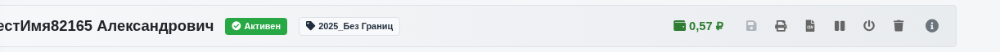
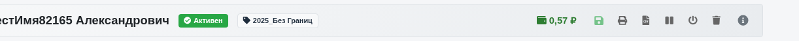
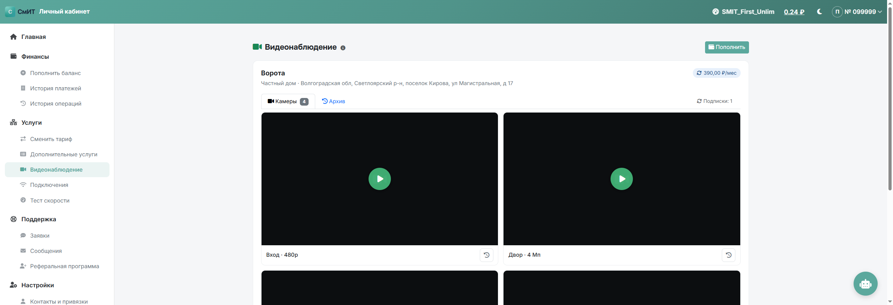
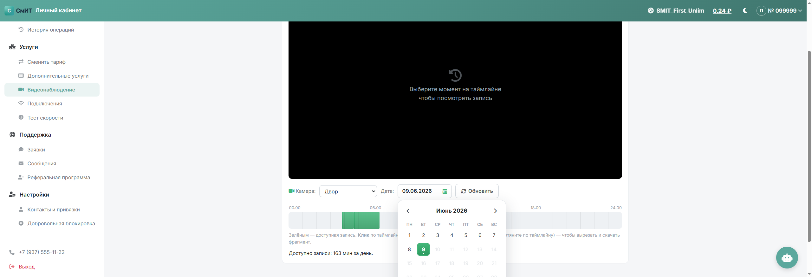
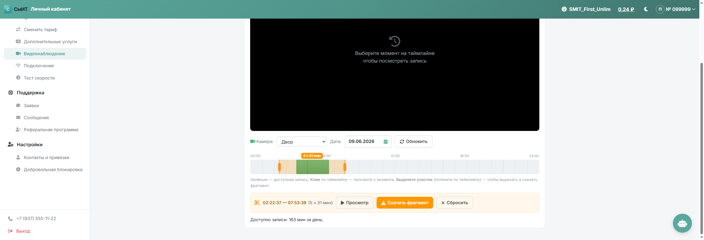
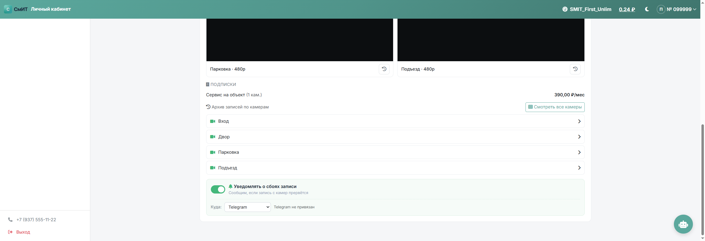
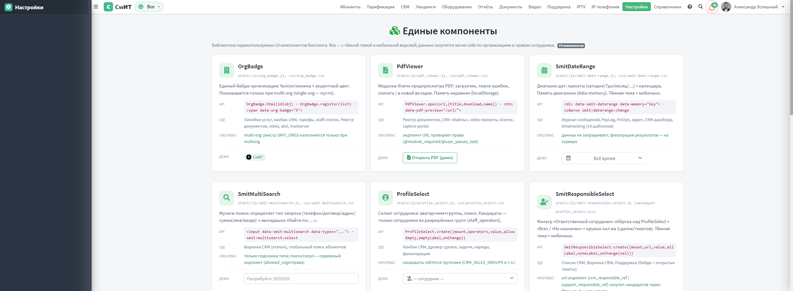

Биллинг. Основные настройки биллинга
Раздел описывает все семь пунктов главного меню админки СмИТ Биллинг — от тарификации и оборудования до справочников и работы с абонентами. Структура страницы повторяет структуру меню.

Содержание страницы
1. Дашборд
Главная страница админки по адресу /admin/welcome/.
Перестроена в build 539–558 после /critique-аудита: иерархия KPI с hero-метрикой, единый
визуальный язык компактных карточек (.dash-tile), все блоки скрываются автоматически
при отсутствии данных.

- Добавлен виджет SORM в правую колонку под «Быстрыми ссылками»
- В блоке «Что нового» — бейдж с количеством комментариев у каждого документа
- «Последние операции» расширены с 5 до 15 записей
- «Последние заявки» переехали в левую колонку над операциями
- «Горячие абоненты» + «Платежи: день × час» — в одном ряду (col-lg-6 + col-lg-6)
- Карта абонентов внизу — fix: теперь инициализируется сразу при загрузке (раньше была пустой)
Виджет SORM в правой колонке показывает статус выгрузок:

- Имя конфига → ссылка на
/admin/equipment/sorm_list/<id>/ - Vendor (СпецТехПитон / СигналТек / ...)
- FTP-хост и путь
- Время выгрузки
- Бейдж с числом отчётов
- Статус последней выгрузки: ✓ зелёный N/M файлов / ⚠ оранжевый partial / ✗ красный provаl / ⏳ синий running
- Дата + кол-во строк + значок облака (✅ если ftp_uploaded)
- Сводка за 7 дней (счётчики success/partial/failed)
«Горячие абоненты» + «Платежи: день × час» теперь в одном ряду:

Карта абонентов (была пустой до v966):

Шапка: 6 KPI-карточек
Верхний ряд — финансовый/операционный обзор. Hero-карточка «Должников» в 2×
ширину с явным CTA «Все должники →» (build 539, единственный btn-primary
на странице — даёт глазу первую точку фиксации). Остальные 5 KPI равноценные:
- 🔵 Всего — все абоненты + топ-3 подкатегории (SMIT / Все / EBS-импорт)
- 🟢 Активных + бейдж «Заблокированных»
- 🟢 Серверов доступа (NAS) с подзаголовком «Онлайн сейчас»
- 🟠 Должников (hero) — с CTA
- 🟡 Открытых заявок + «за 30 дней / всего»
- 🔵 Новых за месяц + «за 7 дней»
Все 6 градиентов унифицированы на linear-gradient(135deg, A, B) в одной палитре
(раньше было 4 разных рецепта).
IP-пулы + EBS Синхронизация
Две компактные карточки в одну строку (build 540, ~110px высоты вместо 200+):
- IP-пулы — сводка
used / total (%, N пулов)+ статус-pill (✓ В норме / ⚠ ≥90%: N / 🚨 Опасно при наличии пула ≥99%) + топ-3 «опасных» с горизонтальными mini-bar (красный/оранжевый/жёлтый). - EBS Синхронизация — 3 строки cron-расписаний:
- Импорт: каждые 10 мин, последний запуск + длительность + last tx_id
- Сверка: раз в час, скорректировано N балансов
- Абоненты: ежедневно 04:00 МСК, последний запуск + ETA до следующего
Унифицированные бейджи .dash-pill с цветовым кодированием
(is-ok/is-warn/is-danger/is-info).
JS-обновление каждые 60 сек через /admin/dictionary/ip_pull_stats/ и
/admin/ebs_sync_status/.
Свежие проблемы (alerts feed)
Build 550. Отображается только при наличии алертов. Источники:
- 🔴 NAS DOWN сейчас — последний event=down per NAS из
NasStatusLog, с возрастом события - 🔴/🟡 IP-пул ≥99% / 100% через
get_pool_stats(pool) - 🟡 EBS sync failed за 24ч (status=failed в EBS_SYNC_STATE)
- 🟡 Backup failed за 24ч
Каждая строка кликабельна → ведёт в соответствующий раздел. Левый красный бордер 3px, максимум 6 алертов. Видна всем, не только cash-группе.
Касса месяца
Build 543–548. Расчёт по календарному месяцу (с 1-го числа) из
FinanceOperations:

- Начислено — сумма всех
op_summa < 0 - Оплачено — сумма всех
op_summa > 0(зелёный) + Δ-pill «темп vs тот же день прошлого месяца» («+17,4% к апрелю») + hint «прошлый месяц к N-му: X ₽» - Прогноз закрытия — линейная экстраполяция
paid × days_in_month / day_of_month(синий) + Δ-pill «к плану» + hint «прошлый месяц закрыли: X ₽» - Прогресс месяца — цветной progress-bar (зелёный ≥100% / синий 70–99% / оранжевый <70%) + «N/M дн.»
Сверху справа бейдж «✓ Сбор N%» (зелёный/синий/оранжевый по тем же порогам).
Видна только для группы cash.
Платежи сегодня vs вчера
Build 549. 4 ячейки + sparkline по часам:
- Платежей (count, шт) + hint «вчера к HH:00 — N»
- Сумма ₽ (зелёный) + hint «вчера — X ₽»
- Средний чек ₽ (бирюзовый) + hint «вчера всего: M / X ₽»
- По часам — 24 столбика sparkline за сегодня. Текущий час голубой с glow, будущие часы серые, оси 0/6/12/18/24.
В шапке — Δ-pill «к вчера» (≥+5% зелёный, ≤−5% оранжевый, иначе ≈ синий).
Горячие абоненты + CRM сегодня
Build 551–554. Две карточки в одной строке: «Горячие абоненты» (col-lg-8) + «CRM сегодня» (col-lg-4).

Горячие абоненты 24ч — скоринг и интерпретация
Топ-5 абонентов, кому стоит уделить внимание прямо сейчас. Алгоритм в
billing/views/auth.py::welcome.
Скоринг (суммируется):
- Разрывы сессий за 24 часа (≥3 завершённых сессий): 3–9 → 30 pts, 10–29 → 40 pts, ≥30 → 60 pts
- Открытые тикеты (status 1=Открыта, 2=В работе) с обращением за 24 часа: 1 шт → 10 pts, ≥2 → 25 pts
- «Оплатил, но заблокирован» (b_negbal=true + положительный платёж сегодня) → 50 pts — критично, абонент заплатил, но биллинг не разблокировал
В блок попадают абоненты со score ≥ 15, отсортированные по убыванию.
Цвет строки: ≥50 — красный, ≥25 — оранжевый, <25 — синий.
Что значат коды разрыва (END_REASON в RADIUS_SESSIONS):
Lost-Carrier— NAS перестал видеть клиента: PPP-keepalive не пришёл, физический линк упал, или MikroTik сам разорвал по idle-timeout. Самый частый код у проблемных клиентов.User-Request— клиент сам инициировал отключение (PPPoE-disconnect от устройства абонента). Часто маршрутизатор «дёргает» PPP при потере WAN или по таймеру.NAS-Request— NAS принял решение отключить (CoA Disconnect, смена тарифа, остановка сервиса биллингом).Synthetic (no Start): User-Request— искусственный Stop-пакет, созданныйradius_accounting.py, потому что NAS прислал Stop без предшествующего Accounting-Start. Бывает после рестарта FreeRADIUS или потери Start-пакета (build 450, async-accounting).Stale: no Interim-Update— наш cleanup-таск убил «зомби»-сессию: Interim-Update не приходил >10 минут.
Корневые причины (паттерны):
- Массовые Lost-Carrier каждые 4–10 минут (100+ разрывов за сутки) — обрыв физики: гнилой коннектор RJ-45, плохая обжимка, попадание воды в муфту, проблема PoE-инжектора, MAC-конфликт на порту коммутатора. Это не баг биллинга и не пароль (тот дал бы Access-Reject). Действие: выезд монтажника на точку.
- Десятки User-Request с короткими сессиями (~2 минуты)
— клиентский роутер сам разрывает PPP. Возможно: двойной PPPoE-клиент в прошивке,
жёсткий
idle-timeoutв настройках, скрипт автоматического переподключения. Действие: связаться с абонентом, проверить настройки роутера. - Lost-Carrier раз в 30–60 минут — нестабильный канал, наводки, перегрев SFP/коммутатора. Менее острый сигнал, но повод заявить в техобслуживание.
- «Оплатил, но заблокирован» (50 pts) — смотрим в карточке
последние FinanceOperations и AbonentsBlock. Обычно это сбой автоматики
разблокировки после платежа. Жмём «Разблокировать» вручную, проверяем что
в Celery-beat работает task
recheck_blocks.
Что смотреть в карточке абонента:
- Вкладка «RADIUS» (build 469+) — последние 50 сессий с
END_REASON, длительностью, IP, NAS. Главный диагностический инструмент. - Вкладка «История» — кто и когда менял состояние блокировок.
- Вкладка «HelpDesk» — все тикеты абонента + быстрая ссылка в HelpDesk.
Состав строки в блоке: цветной score-badge → имя абонента (ссылка на карточку) → список причин («N разрывов», «тикет», «оплатил, но заблокирован») → баланс (красный если долг) → стрелка перехода в карточку.
CRM сегодня — сводка из HelpDesk (mailbox=1) за календарный день:
- Открыто — count
createdAt >= 00:00 - Закрыто — count status=closed с
updatedAt >= 00:00 - Среднее закрытие —
avg(updatedAt − createdAt)для закрытых сегодня (мин/ч/д) - Бейдж ⚠ Висят: N — активные старше 30 мин без assignee
Под цифрами — 3 последних тикета (build 554) с цветной точкой статуса
(active/pending/closed/spam), темой #N · subject (truncate 60 симв,
кликабельно → support.smit34.ru/conversation/<id>), абонент + исполнитель + возраст.
Кеш 5 мин по ключу dashboard_crm_24h.
Heat-map + Цели + Что нового
Build 555–557. Три узких карточки в одной строке.

Heat-map платежей 7×24 (фиолетовая палитра) — день недели × час, цветовая
интенсивность rgba(#6f42c1, alpha) от количества платежей. SQL:
SELECT EXTRACT(ISODOW FROM "OP_DATE"), EXTRACT(HOUR FROM "OP_DATE"), COUNT(*)
FROM finance_operations WHERE "OP_DATE" >= now() - 7 days AND "OP_SUMMA" > 0
GROUP BY 1, 2;Hover увеличивает ячейку 1.4× с tooltip «N пл.». Помогает увидеть паттерн — например, пик платежей в Пн ~17:00.
KPI с целями — читает SystemSettings:
DASH_MONTHLY_REVENUE_TARGET— план кассы за месяц (₽)DASH_ACTIVE_ABONENTS_TARGET— план активных абонентовDASH_NEW_MONTH_TARGET— план подключений за календарный месяц
Без таргетов карточка скрыта. Цветной progress-bar (зелёный ≥100% / синий ≥70–80% / оранжевый ниже). Меняются через /admin/settings/system/?tab=params (категория dashboard) без релиза.
Что нового — 2 секции из dev_reports/ (build 557):
- Отчёты — 4 свежих
.mdфайла из подкаталога «Отчёты» (по mtime DESC). Заголовок = первая Markdown H1 строка. - Планы — 4 свежих из подкаталога «Планы».
Каждая запись с нумерацией 1–4, кликабельна → /admin/reports/dev/?file=<path>.
Подкаталог Документация исключён.
Итого за период + Финансовая динамика (старые блоки)
Сохранены: 3-row «Итого за период» (Поступления/Списания/Баланс с дельтами)
и линейный график «Финансовая динамика» с переключателями типа (Область/Линия/Столбцы)
и периода (7д/14д/30д/90д/180д/1г). Кнопки в чистом стиле (build 542 — фикс «серой губой»
заливки .btn-outline-secondary).

Auto-refresh
Переключатель в шапке: Выкл / 30с / 1м / 2м / 5м / 10м.
Состояние сохраняется в localStorage.dashboard_refresh_sec. Дефолт — выкл.
Кнопка «Обновить сейчас» и таймер «Просмотрено: N сек/мин назад» рядом.
2. Тарификация
Раздел меню «Тарификация» содержит всё, что связано с услугами, которые получают абоненты, и правилами их тарификации.
Тарифы — назначение и роль
Содержание раздела
Тариф (Tarif) — это шаблон услуг и цен, которые получает абонент после подключения. Хранится в таблице tarif, редактируется на /admin/tarifs/Tarif/.
Зачем нужен тариф
Тариф решает три задачи:
- Группировка услуг — один тариф = пакет из 1-N услуг (интернет 100 Мбит + IPTV + статический IP) с заданными ценами;
- Автоматическое списание — Celery-задача
billing_workerраз в день обходит активных абонентов, выбирает их тариф, проходит по списку услуг и списывает с лицевого счёта; - Применение шейпера — через
TarifRadiusParamsFreeRADIUS получает атрибутMikrotik-Rate-Limitили аналог. На NAS включается ограничение скорости.
Структура: Tarif + TarifUsersUsluga
| Сущность | Что хранит |
|---|---|
tarif | Имя тарифа, флаги (IS_BUSINESS, IS_ARCHIVE), ссылки на лояльности, промо-настройки, резервный тариф |
TARIF_USERS_USLUGA (TUU) | M2M-связка тариф ↔ услуга. Один тариф содержит несколько TUU (по одной на каждую услугу пакета) |
TARIF_RADIUS_PARAMS | Кастомные RADIUS-атрибуты для тарифа (Mikrotik-Rate-Limit, Pool-Name, Idle-Timeout) |
TARIF_USERS_USLUGA_FOLLOW | «Сопутствующие» услуги — авто-подключаются при смене тарифа (например, IPTV приставка прилипает к тарифу) |
Как биллинг использует тариф
- Привязка к абоненту:
Abonents.TARIF_ID(главное поле), опциональноUsers.TARIF_IDдля специальных учёток; - Ежемесячное списание (
billing_worker.py):- Берёт
abonent.tarif.tarif_tuu.all()— все услуги тарифа; - Для каждой услуги ищет соответствующую
UsersUslugaу абонента (или создаёт новую); - Списывает каскадно:
UsersUsluga.summ → usluga.summa → usluga.price(берётся первое заполненное); - Создаёт
FINANCE_OPERATIONSсop_type=32(тарифное списание);
- Берёт
- RADIUS: при авторизации FreeRADIUS подгружает
TarifRadiusParamsи отдаёт NAS-у соответствующий шейпер.
Архивирование vs удаление
IS_ARCHIVE=true— тариф недоступен для назначения новым абонентам, но текущие подписчики продолжают на нём работать. Это правильный путь для устаревших тарифов;- Удаление — почти невозможно, FK
PROTECTблокирует если есть хоть один абонент или один TUU. Можно удалять только если 0 ссылок; - Перевод абонентов на новый тариф — массовое действие в глобальном поиске
/admin/Abonents/search/(chip «Тариф» + bulk actionchange_tarif).
Специальные сценарии
| Поле | Сценарий |
|---|---|
PROMO_NEXT_ID + PROMO_DAYS или PROMO_MONTH | Через N дней/месяцев тариф автоматически переключится на PROMO_NEXT (например, после льготного периода) |
RESERVE_PLAN | Резервный тариф если основной недоступен. Используется в сценарии «отключение услуги, но сохранение базовой связи» |
INACTIVE_TARIF | На какой тариф переводить абонента, если он не пользуется услугами (по дате ACT_DATE) |
OWN_DISABLED_* | Параметры добровольной блокировки: на сколько дней/месяцев минимум, какая стоимость в дни паузы |
2.1. Тарифы
Список всех тарифных планов оператора. Открывается из меню Тарификация → Тарифы. Над таблицей — два фильтра по типу клиента: «Бизнес» и «Физ.лица» (по признаку «Для юр.лиц» у тарифа). Рядом — счётчик количества тарифов в текущем фильтре.

Toolbar над таблицей:
- Поиск по имени, описанию или ID тарифа. Шорткат Ctrl+K ставит фокус в поле.
- Кнопка «Компактный вид» уменьшает плотность строк и скрывает столбец «Описание».
- Кнопка «CSV» экспортирует видимый срез (с учётом фильтра Бизнес/Физ.лица, поиска и линейки).
- Кнопка «Добавить тариф» открывает модальное окно нового тарифа.
Колонки таблицы:
- Название с подсказкой ID при наведении.
- Цена в рублях.
- Линейка услуг (см. 1.6).
- Юр.лиц — иконка ✓ если тариф предназначен только организациям.
- Абоненты: основное число + красный ▼N (заблокированные). Tooltip разворачивает разбивку Активных / Заблокированных / Всего.
- Привязок — сколько услуг привязано к тарифу.
- Действия: ✏ редактировать, 🗑 удалить (заблокировано если есть активные абоненты).
Сортировка работает по любому столбцу — клик по заголовку. Активная сортировка выделяется синим цветом и стрелкой ▲/▼.
Bulk-операции — выберите тарифы галочками, появится плавающий тулбар со следующими действиями: В архив, Из архива, привязка к Линейке, CSV-экспорт выбранных, Удалить. Удаление блокируется на сервере, если у тарифа есть активные абоненты — выводится список ID, которые надо сначала перевести на другой тариф.
Модальное окно тарифа делится на четыре верхних вкладки (Основное / Услуги / RADIUS / Абоненты) и пять секций левой side-nav во вкладке «Основное». В шапке модалки бейдж «Назначено абонентам: N». На мобильном side-nav становится горизонтальным скроллбаром.
Вкладка «Основное» → секция «Общее»
Идентификация тарифа: название, описание, валюта, привязка к линейке услуг и оператору связи, флаг «Введён в эксплуатацию», «Архивный», «Отображать на сайте», период действия. Цена считается автоматически по сумме привязанных услуг.

Секция «Лимиты»
Объёмы и пороги: лимит трафика (ГБ/мес), число подключений, число VPN-сессий, размер скидки за неиспользование. Используется в комплекте с услугами типа «Трафик».

Секция «Смена тарифа»
Параметры авто-смены тарифа. Промо-тариф: после N дней или N месяцев абонент переходит на другой тариф автоматически. Сюда же — резервный тариф, на который система переводит абонента при долгой блокировке.

Секция «ОП и Доб. блок»
Параметры обещанного платежа (срок в днях, стоимость дня) и добровольной блокировки (минимум и максимум дней). Если поля пустые — функции отключены для этого тарифа.

Секция «NAT и прочее»
NAT-пулы (для трансляции серых IP в публичные), параметры RADIUS-атрибутов, дополнительные сетевые настройки. На большинстве тарифов остаётся пустой — заполняется только если используется специфическая сетевая логика.

Вкладка «Услуги»
Список услуг, привязанных к этому тарифу. Сюда добавляются абонплата, бонусы по умолчанию, шейпер. Цена тарифа = сумма цен этих услуг (с учётом методов и периодичности).

Вкладка «RADIUS»
RADIUS-атрибуты, которые попадают в Access-Accept абонентов на этом тарифе: ограничение скорости (Mikrotik-Rate-Limit), ACL (Filter-Id), pool name и т.д. Эти значения уходят на NAS и определяют поведение сети для абонента.

Вкладка «Абоненты»
Список абонентов, которые сейчас на этом тарифе. Можно перейти в карточку кликом по имени, либо массово перевести группу на другой тариф.

Услуги (Usluga) — назначение и роль
Содержание раздела
Услуга (Usluga) — атомарная единица биллинга: то, что списывается со счёта (абонплата, статический IP, IPTV-пакет) или начисляется (бонус, компенсация). Хранится в таблице usluga.
Зачем нужна услуга
Услуга решает три задачи:
- Списание с баланса — раз в месяц
billing_workerсоздаётFinanceOperationsна сумму услуги и уменьшаетOSTATOK; - Применение скорости через шейпер — поля
RATE_IN,RATE_OUTпопадают в RADIUS-ответ какMikrotik-Rate-Limit; - Бонусирование — услуги с отрицательной ценой или системные (
system_type) выполняют разные роли: ОП, акции, компенсации.
TUU (шаблон) vs UsersUsluga (экземпляр)
| Сущность | Что это | Кто создаёт |
|---|---|---|
TARIF_USERS_USLUGA (TUU) | Шаблон: «эта услуга входит в этот тариф». Цена в TUU.summ может переопределять usluga.summa | Админ при настройке тарифа |
USERS_USLUGA (UU) | Экземпляр: «эта услуга подключена этому абоненту с такой даты». Хранит индивидуальные настройки | Автоматически billing_worker при назначении тарифа, или вручную через карточку абонента |
Один usluga может фигурировать в нескольких TUU (для разных тарифов) и иметь много UU (по одной на каждого подписчика). Удаление usluga заблокировано FK PROTECT, если есть хоть один TUU или UU.
Каскад цены
Когда billing_worker списывает абонплату, он берёт цену из первого заполненного источника (build 101):
UsersUsluga.summ— индивидуальная скидка/цена для конкретного абонента;Usluga.summa— стандартная сумма услуги;Usluga.price— fallback цена (часто за единицу, например за Мбайт трафика).
В UI это видно в списке услуг: если используется fallback, цена подсвечена оранжевым с tooltip «эффективная цена: X ₽ / источник: Usluga.price».
Системные услуги
Несколько услуг имеют особое поведение, защищены от удаления и не показываются в обычных списках:
| Usluga ID | Назначение |
|---|---|
30353 | «Обещанный платёж (5 дней, 30 руб/день)» — system_type=11. Управляется через ОП-flow в LK / Mobile / SMS |
30280 | Системная служебная услуга — не удаляется |
-3, -4 | Legacy-записи для старого формата ОП — оставлены для совместимости |
Поле system=true у услуги — флаг «не показывать абоненту в счётах», даже если списывается.
Что делать со старыми услугами
- Не используется ни в TUU, ни в UU — кандидат на удаление. Можно удалять через UI;
- Используется в TUU — сначала уберите её из тарифов (или архивируйте тарифы);
- Используется в UU — отвяжите от абонентов или дождитесь пока услуга выключится по сроку;
- Системные (id 30353/30280) — не удалять никогда, потеря этих записей сломает ОП и системные функции.
SELECT u.* FROM usluga u
WHERE NOT EXISTS (SELECT 1 FROM "USERS_USLUGA" WHERE "USLUGA_ID"=u."ID" AND "DELETED"=false)
AND NOT EXISTS (SELECT 1 FROM "TARIF_USERS_USLUGA" WHERE "USLUGA_ID"=u."ID")
AND u."ID" NOT IN (30353, 30280) AND u."ID" >= 0;2.2. Услуги и Бонусы
Услуги — то, что списывается с лицевого счёта (абонплата, доп. услуги, разовые работы). Бонусы — то, что начисляется на счёт (компенсации, скидки, акции). Для оператора это один справочник, разделённый по знаку суммы и типу.

Toolbar:
- Вкладки по типам (абонплата, разовая, бонус, обещанный платёж и т.д.); вкладка «Все» показывает полное имя.
- Чип «Не привязанные» с счётчиком — показывает услуги-сироты, которые не используются ни в одном тарифе и ни одним абонентом. Полезно для уборки справочника.
- Поиск по имени, тарифу или точному ID.
Колонки таблицы:
- Услуга — название с тултипом ID.
- Эфф. цена — итоговая цена, рассчитанная по каскаду: индивидуальная сумма абонента → шаблон summa у услуги → шаблон price у услуги. Если используется fallback — цена показана оранжевым с подчёркиванием, а в tooltip написан источник. Пустое значение «—» означает что услуга бесплатна или цена назначается индивидуально.
- Метод — иконка fa-sync (Ежемесячно) или fa-bolt (Разово).
- В ЛК — отмечены услуги, которые абонент видит в личном кабинете.
Системные услуги с фиксированными ID удалить нельзя — они используются ядром биллинга для обещанных платежей, бонусов и блокировок трафика.
Модальное окно услуги делится на 6 секций (вертикальная навигация слева). Открывается кликом по карандашу в строке списка.
Секция «Основные»
Название, тип услуги (трафик / IP-телевидение / стандартный / бонус / обещанный платёж / системный), цена, валюта, тип абонплаты (помесячно / разово / детализированно). Также — флаг «Включена», описание для оператора.

Секция «Периодичность»
Когда услуга списывается. Варианты: ежемесячно (1-го числа или произвольная дата), разово (при подключении), в определённые дни месяца (1-го + 15-го), при превышении лимита. Дополнительные параметры: количество периодов, дата окончания, сдвиг даты списания.

Секция «ЛК абонента»
Отображение услуги в личном кабинете абонента: видимое имя, иконка, описание, флаг «Доступна для подключения через ЛК» (абонент может сам её включить), флаг «Видна» (только показывать без возможности изменения).

Секция «Скидки»
Условия скидок при подключении услуги: фиксированная сумма / процент, условия применения (для определённых тарифов или типов абонентов), даты действия скидки.

Секция «Шейпер»
Параметры ограничения скорости (только для услуг типа «Трафик»). RX/TX скорости,
burst-параметры, размер очереди. Эти значения попадают в RADIUS-атрибут Mikrotik-Rate-Limit
или аналогичный для других вендоров.

Секция «Связи»
Привязка к подсети (Tariff Ruleset — для специальной тарификации в локальной сети) и к типу услуги (используется в RADIUS-фильтре и СОРМ-выгрузке).

2.3. Правила и сети
Подсети, которые тарифицируются по особым правилам — например, локальный ресурс с собственной ценой за ГБ, отдельный шейпер для торрентов, белая сеть для корпоративных абонентов.

Параметры записи:
- Имя и комментарий.
- Цена входящего и исходящего трафика (за ГБ).
- Лимит — суточный/месячный объём в МБ/ГБ.
- HTTP-адрес — URL локального ресурса (для статистики и отчётов).
Удалить запись нельзя, если она используется в услугах — счётчик «Услуг» в строке показывает количество ссылок.
2.4. Карты оплаты
Серии бумажных карт оплаты с PIN-кодами. Каждая серия — это пакет карт номинала N₽ с уникальными PIN. Абонент пополняет счёт, введя PIN в личном кабинете или через кассу.

Серия определяется: имя серии, номинал, количество карт, дата выпуска, дата окончания действия. PIN-коды генерируются автоматически и выгружаются в PDF/CSV для печати.
Программы лояльности — назначение и роль
Содержание раздела
Программа лояльности — механизм скидок, акций и спец-условий для группы абонентов. Реализуется двумя моделями: Loyaltys (сама программа = шаблон) и AbonentsLoyalty (привязка абонента к программе = экземпляр).
Зачем нужна лояльность
Программы решают четыре задачи:
- Скидки — социальные тарифы (пенсионеры, многодетные), корпоративные скидки, акции «приведи друга»;
- Спец-условия для группы — например, «жильцы дома №15 платят на 100 ₽ меньше за интернет» (распределённая по адресу программа);
- Бонусы за продление — «оплатил год вперёд → 10% скидка»;
- Учёт в финансовых отчётах — отдельная строка «Скидки по программам лояльности».
Модели
| Модель | Что хранит |
|---|---|
Loyaltys(шаблон) |
Список самих программ. Поля: name, comment, priority, operator (FK на Abonents-папку с операторами), usluga_range (FK на UslugaRangeTypes), discount_percent, bonus_amount, recurring (ежемесячно), enabled |
AbonentsLoyalty(экземпляр) |
Привязки «абонент ↔ программа». Поля: abonent (FK CASCADE), loyalty (FK CASCADE), start_date, end_date (NULL = активна), processed_date, next_date (для beat-задач списания) |
Приоритет и применение
Один абонент может попасть в несколько программ одновременно (например: пенсионер + жилец акционного дома). При начислении скидки выбирается одна:
- Поле
priorityуLoyaltys— целое число. Выше = раньше применяется; - Цветовое кодирование в UI:
- ≥ 100 — красный бейдж «критично» (типа «соцтариф для всех»);
- ≥ 50 — оранжевый «важно» (корпоративные);
- < 50 — серый (обычные акции).
- Применение в
billing_worker: при начислении тарифа проверяются все активныеAbonentsLoyaltyабонента, выбирается с максимальнымpriority, скидка применяется кop_summa.
Связь с линейками услуг
Поле Loyaltys.usluga_range (FK на UslugaRangeTypes) ограничивает применимость:
- Если
usluga_range = NULL— программа применяется ко всем услугам тарифа; - Если
usluga_range = X— только к услугам в линейке X (например, скидка только на интернет, не на IPTV); - Это требует, чтобы
Tarif.usluga_range_type_idу тарифа абонента совпадал сLoyalty.usluga_range_id; - См. подробнее в 2.6 Линейки услуг.
Что делать со старыми программами
- Программа закончилась (срок акции прошёл) — выключить через
enabled=falseвместо удаления. Нельзя удалить, если есть активныеAbonentsLoyalty(build 325 защита); - Завершить программу для всех — перед удалением программы проставить
end_dateу всехAbonentsLoyalty. Тогда программа становится «архивной» и удаляется; - Удалить отдельную привязку — кнопка в карточке абонента, вкладка «Лояльность». Это не удаляет программу, только конкретную привязку.
/admin/tarifs/Loyaltys/ — список всех программ с количеством активных привязок.
2.5. Программы лояльности
Программа лояльности — это скидка или специальные условия для определённой группы абонентов: социальный тариф, корпоративные клиенты, многоквартирный дом, пилотный район.

Параметры программы:
- Имя и комментарий.
- Приоритет — чем выше число, тем раньше применяется (≥100 — критично, красный бейдж; ≥50 — важно, оранжевый; меньше — серый).
- Оператор — на которого распространяется (для агентских схем).
- Линейка услуг — каким услугам применяется скидка.
- Параметры скидки — процент или фиксированная сумма.
В модалке программы есть две вкладки:
- Параметры — настройка самой программы.
- Абоненты — список абонентов на программе, массовое назначение и снятие.
Программа применяется автоматически при ежемесячном списании. Назначить программу абоненту вручную можно из карточки абонента, вкладка «Лояльность». Удаление программы заблокировано, если есть активные участники.
2.6. Линейки услуг
Линейка услуг (модель UslugaRangeTypes) — это
группа тарифов и услуг одного оператора связи или одной целевой аудитории.
Линейка решает две задачи: логически разграничить тарифные планы между
юр.лицами-операторами на одной инсталляции биллинга и технически
ограничить, какие тарифы попадают в выпадающие списки в личном кабинете
абонента и в программах лояльности.

Примеры использования
- Разделение по аудиториям: «Физические лица», «Юридические лица», «Социальные тарифы» — каждой линейке привязаны свои тарифы. В Quick Add абонента линейки переключаются автоматически вместе с флагом «Юр.лицо» (см. раздел 7.1).
- Несколько операторов на одной инсталляции: «СмИТ Волгоград», «СмИТ Камышин», «Малдер-связь». Оператор-инсталлятор обслуживает несколько юр.лиц с одним биллингом, у каждого свой набор тарифов. В отчётах СОРМ выгрузка идёт по оператору-владельцу линейки.
- Промо-кампании: «Акция «Лето 2026»», «Тарифы для пенсионеров» —
отдельная линейка содержит только промо-тарифы; в программах лояльности
(Loyaltys) включается через поле
usluga_range, и абонентам с этой лояльностью становится доступен льготный тариф. - Технические/служебные тарифы: линейка «Внутренние» —
для сотрудников, тестовых учёток, оборудования. Не показывается в ЛК
обычных абонентов через настройку
LK_TARIFF_REQUIRE_RANGE.
Модальное окно «Добавить / Редактировать линейку»
Открывается кнопкой «Линейка» в правом верхнем углу списка
или иконкой карандаша в строке таблицы (urtModal в шаблоне
usluga_range_types_list.html). Поля:
- Название * — текст, как будет отображаться в селектах при создании тарифа и программы лояльности. Примеры: «Бизнес-линейка», «Эконом физ.лица», «Промо Лето 2026».
- Оператор — выпадающий список абонентов из служебной папки «Операторы» (id = 9002). Это юр.лицо, владеющее линейкой: именно ему уходит выручка по тарифам этой линейки в финансовой отчётности и СОРМ-выгрузках. Можно оставить пустым («не указан») — тогда линейка считается общей.
Сохранение через POST /admin/tarifs/range_types_crud/
(или /<id>/ для редактирования). Удаление —
DELETE /admin/tarifs/range_types_crud/<id>/; защищено:
если на линейку ссылается хотя бы один тариф или программа лояльности,
сервер вернёт ошибку с понятным текстом.
Колонки списка
- # — внутренний ID линейки (используется во внешних интеграциях и SQL-отчётах).
- Название — заголовок линейки.
- Оператор — связанный абонент-юр.лицо или прочерк.
- Тарифов — счётчик тарифов с этой линейкой
(
Tarif.usluga_range_type_id). Синий бейдж, если есть привязки; серый, если линейка пустая. Клик по тарифу в карточке открывает модалку правки тарифа с предзаполненной линейкой. - Лояльности — счётчик программ лояльности
(
Loyaltys.usluga_range_id). Жёлтый бейдж, если есть привязки. - Действие — карандаш (правка) и корзина (удаление с проверкой ссылок).
В шапке списка — поиск (Ctrl+K) по названию или
оператору и счётчик отфильтрованных линеек. На мобильном — горизонтальный
скролл таблицы.
Связи и где используется
- Тариф (
Tarif.usluga_range_type) — поле «Линейка» на форме редактирования тарифа. Один тариф может принадлежать одной линейке. - Программа лояльности (
Loyaltys.usluga_range) — определяет, какой набор тарифов доступен участнику программы. - Личный кабинет — настройка
LK_TARIFF_REQUIRE_RANGE(ЛК → Возможности) включает фильтрацию: абоненту в ЛК показываются только тарифы из той же линейки, что и его текущий тариф. Полезно когда у одной инсталляции несколько операторов и нельзя смешивать тарифы. - Quick Add абонента (7.1) —
при включении чекбокса «Юр.лицо» автоматически отбираются тарифы
с признаком
is_business=True; линейка же определяет, какому оператору такой тариф принадлежит.
3. Оборудование
Раздел меню «Оборудование» объединяет всё сетевое и абонентское оборудование, через которое работает биллинг.
3.1. NAS
Список всех NAS (Network Access Server) — серверов доступа: BRAS, MikroTik, Cisco, Redback и т.п. NAS — это «сетевой шлюз», через который абонент выходит в интернет.

Карточки KPI над таблицей: Всего NAS / UP / DOWN / Абонентов онлайн. Кликом по карточке-ссылке можно перейти на дашборд состояния (см. 2.2).
Чипы-фильтры: Все · UP · DOWN · Без RADIUS · Без SSH · PROD · Выключенные.
Состояние сохраняется в URL (?chip=down) и можно поделиться ссылкой.
Колонки таблицы:
- Состояние (UP / DOWN / OFF) с тултипом длительности простоя.
- Имя и IP NAS, тип оборудования.
- Онлайн — прогресс-бар занятости пула: зелёный <75%, оранжевый 75–90%, красный ≥90%. Клик по числу открывает модалку со списком абонентов в активной сессии.
- Действия: тест ping, синхронизация сессий, ✏ редактирование, 🗑 удаление.
Подсветка строк: DOWN — красноватый фон, выключенные — приглушённый цвет, без RADIUS/SSH — оранжевая полоса слева, PROD — зелёная.
Кнопка «Перезапустить RADIUS» появляется в шапке после правки настроек NAS.
Биллинг помечает изменения флагом radius_dirty; кнопка пропадает, когда
рестарт выполнен и FreeRADIUS перечитал клиентов.
Модалка «Онлайн абоненты»
Клик по числу в колонке «Онлайн» открывает список абонентов с активной RADIUS-сессией на этом NAS. Полезно для оперативной диагностики — узнать кто сейчас онлайн, какой IP получил, когда стартовала сессия.

В модалке: поиск по логину/ФИО/договору/IP, ссылки-абоненты в карточку (открывают новую вкладку), лог IN, IP-адрес из RADIUS-сессии, время начала и последнего обновления. Кнопки «Обновить» и «Закрыть». Подгружается до 100 строк за раз со скроллом для подгрузки следующих.
Модалка редактирования NAS — 6 вкладок
Карандаш в строке открывает большую модалку с шестью вкладками для всех настроек NAS.
Вкладка «Основное» — общие параметры: название, IP, маска, тип NAS (Mikrotik/Cisco/Redback…), адрес физической установки, серийный номер, регистрационный №, код активации, флаги «Включён» и «В эксплуатации». В шапке модалки бейджи «Активных» / «Макс» / «Авт» для быстрой оценки нагрузки.

Вкладка «RADIUS» — параметры аутентификации: secret-ключ, порты Auth/Acct/CoA,
IP для CoA Disconnect, флаги поддержки разных RADIUS-возможностей. Эти данные FreeRADIUS
читает из БД и формирует clients.conf при старте.

Вкладка «Авторизация» — параметры подключения абонентов: типы аутентификации (PPPoE / IPoE / Hotspot / 802.1x), VPN, тегирование VLAN, поведение при отсутствии IP в пуле.

Вкладка «Управление» — SSH/Telnet-доступ для дистанционного управления: адрес, порт, протокол, логин и пароль, тип ОС (для подбора шаблонов команд). Используется при ручном обращении к NAS из админки и в OSS-задачах (см. вкладка «OSS»).

Вкладка «IP-пулы» — какие пулы IP-адресов доступны NAS для выдачи абонентам. Можно назначить отдельные пулы для разных ролей: основной (PPPoE), NAT, белые IP (corporate), Hotspot. Если пул исчерпан, биллинг ходит по цепочке next_pull.

Вкладка «OSS» — Operations Support System: автоматизация управления. Активация и деактивация абонентов через шаблоны команд (включить/выключить порт, сменить VLAN, обновить ACL). Команды отправляются через SSH/Telnet, описанные на вкладке «Управление».

Внизу модалки — кнопка «Полная форма» (открывает развёрнутую страницу со всеми низкоуровневыми параметрами), «Удалить» (с подтверждением), «Отмена» и «Сохранить».
Подробная документация — на отдельной странице
Подключение конкретных моделей (MikroTik, Cisco, Redback, Ericsson), генерация конфигов и шаблонов — в разделе Интеграция с оборудованием → Интернет (NAS/BRAS).
3.2. Состояние NAS
Дашборд мониторинга всех NAS в реальном времени. Открывается из меню Оборудование → Состояние NAS. Делится на две вкладки: «Текущее состояние» и «История событий».
Вкладка «Текущее состояние»
Сводка по всем NAS на текущий момент: статус UP/DOWN, длительность последнего простоя, абоненты онлайн, sparkline за 24 часа, SLA-показатели.

Возможности вкладки:
- KPI-блок сверху: всего NAS, UP, DOWN, общее число онлайн-абонентов.
- Алерт-баннер вверху появляется, как только хотя бы один NAS переходит в состояние DOWN. Содержит список упавших NAS, длительность простоя и число затронутых абонентов.
- Sparkline 24 часа в каждой строке — 24 столбика по часам: зелёный (UP всё время), оранжевый (частичный простой 5–50%), красный (≥50% времени DOWN).
- SLA-цели настраиваются в общих параметрах: цель 99.5% и предупреждение 99.0%. При падении ниже строка получает соответствующую подсветку.
- Auto-refresh — выключатель и выбор интервала: 30 сек / 1 мин / 5 мин. Обновление без перезагрузки страницы (только tbody + KPI).
- Кнопка «Обновить» рядом с auto-refresh для ручного триггера.
- CSV-экспорт состояний за выбранный период (сутки / неделя / месяц).
- Telegram-индикатор в шапке показывает, включены ли алерты в чат оператора.
- Затронутые абоненты — клик по числу открывает модалку со списком сессий (та же, что в разделе 2.1).
Вкладка «История событий»
Лента всех переходов UP↔DOWN за последние дни. Каждое событие — это запись
в таблице NAS_STATUS_LOG: дата/время, NAS, тип события (DOWN или UP),
длительность простоя (только для UP-событий), детальное описание.

Возможности вкладки:
- Группировка по дням со sticky-заголовком даты и счётчиком событий.
- Фильтр на клиенте: Все / Только DOWN / Только UP.
- Каждая запись связана с записью в Аудите (drill-down по клику).
- По умолчанию показываются последние 50 записей. Старые события удаляются автоматически (см. 5.12. Очистка БД и сессий).
На основе истории строится SQL-отчёт «NAS uptime за 30 дней» в библиотеке отчётов (см. 3.2) — таблица uptime% по каждому NAS с количеством падений и общим простоем в минутах.
Кэш авторизаций (Redis fast-path для FreeRADIUS)
Виджет на дашборде «Состояние NAS». Решает проблему массового падения NAS: когда тысячи абонентов одновременно переавторизуются, FreeRADIUS не успевает обрабатывать пакеты из-за серии SQL-запросов на каждый Access-Request.
Без кэша один authorize() делал 5 SQL-запросов:
Users + abonent + nas + NasRadiusParams + TarifRadiusParams + VpnConst,
суммарно 5–15 ms на пакет. При 1000 пакетов/сек FreeRADIUS не успевал,
очередь max_requests=16384 заполнялась за 16 сек, NAS retry'ил пакеты,
БД захлёбывалась.
С кэшем (build 524+): при штатной авторизации (не заблокирован, NAS назначен, IP в пуле) ответ строится из снапшота в Redis — 1 ms вместо 10 ms, SQL не выполняется. Эффективная capacity FreeRADIUS Python module растёт в 5–10 раз.
Архитектура
- Сервис:
billing/services/radius_user_cache.py - Ключи Redis:
radius_user:{login}— снапшот, TTL 5 минradius_user_neg:{login}— маркер «не найден», TTL 60 сек (защита от перебора)radius_cache_stats(HSET) — счётчики hits/misses/negatives/invalidations
- Содержимое снапшота:
user_id,psw,enabled,ip,nas_id,abonent_tarif_id, объединённый списокreply_attrsиз NasRadiusParams + TarifRadiusParams
Fast-path vs Slow-path
Fast-path (новый, без БД) активируется только при штатных условиях:
enabled=True, abonent_enabled=True, есть пароль и NAS,
ip в пулах NAS. Иначе срабатывает slow-path с ORM —
для блокированных абонентов (нужна логика soft-block), OPT82, auto-assign NAS/IP,
cache miss. После успешного slow-path снапшот пишется в кэш для следующих пакетов.
flowchart LR
REQ["Access-Request
от NAS"] --> CACHE{"Снапшот
в Redis?"}
CACHE -->|"hit"| CHKFAST{"Штатные
условия?"}
CACHE -->|"miss"| PWD{"Пароль
верный?"}
CHKFAST -->|"да · fast-path 1 ms"| OK["RLM_MODULE_OK
+ Framed-IP
+ Rate-Limit"]
CHKFAST -->|"нет"| PWD
PWD -->|"нет"| REJ["REJECT"]
PWD -->|"да · slow-path ~10 ms"| TARIF{"tarif_id?"}
TARIF -->|"NULL"| REJT["REJECT
no tariff"]
TARIF -->|"есть"| BLOCK{"Заблоки-
рован?"}
BLOCK -->|"да"| SOFT["soft-block
блок-пул"]
BLOCK -->|"нет"| WRITE["Снапшот → Redis
TTL 5 мин"]
WRITE --> OK
OK --> AB(("Абонент
в сети"))
style REQ fill:#1e3a5f,stroke:#5BA89D,color:#fff
style CHKFAST fill:#14532d,stroke:#16a34a,color:#fff
style OK fill:#43b77a,stroke:#2d9a5f,color:#fff
style REJ fill:#7f1d1d,stroke:#dc2626,color:#fff
style REJT fill:#7f1d1d,stroke:#dc2626,color:#fff
style SOFT fill:#78350f,stroke:#d97706,color:#fff
style AB fill:#134e4a,stroke:#43b77a,color:#fff
Инвалидация
5 Django signals (post_save) сбрасывают соответствующие ключи:
| Модель | Что сбрасывается |
|---|---|
Users | Свой ключ |
Abonents | Все ключи учёток абонента |
AbonentsBlock | Все ключи учёток абонента |
NasRadiusParams | Все ключи users этого NAS |
TarifRadiusParams | Все ключи users на этом тарифе |
Дополнительно — TTL 5 минут гарантирует протухание даже без сигналов (защита от рассинхрона при ручном UPDATE через psql).
Метрики и UI
Виджет «Кэш авторизаций» на дашборде «Состояние NAS» показывает:
- Hits — попадания в кэш (1 ms, без БД)
- Misses — промахи (10 ms через ORM)
- Hit ratio % — целевое значение > 90% (после прогрева)
- В кэше — количество ключей
radius_user:*в Redis - Инвалид — счётчик сбросов по сигналам
- Кнопка «Сбросить» (для superuser) — полный flush, например после массового импорта Users
Endpoint: GET /admin/equipment/radius_cache_stats/ возвращает JSON с метриками.
POST /admin/equipment/radius_cache_flush/ сбрасывает весь кэш (только superuser).
Реальная статистика testbill через 5 минут после деплоя build 524 при штатной нагрузке ~10–20 авторизаций/сек: hits=838, misses=92, hit ratio=90.1%.
При hit ratio 90% среднее время authorize() снизилось с 10 ms до ~2 ms,
эффективная пропускная способность выросла в ~5 раз без увеличения ресурсов.
RADIUS REJECT без тарифа (build 772+)
Защита от бесплатного интернета у абонентов без тарифа.
До фикса абонент с Abonents.TARIF_ID=NULL авторизовывался в RADIUS, получал IP и
нерезаную скорость канала (без Mikrotik-Rate-Limit). Параллельно
billing_worker его не списывал — у абонента без тарифа нет связанных UsersUsluga.
Симметричная дыра: интернет работал бесплатно, пока кто-то не назначит тариф вручную.
Полный отчёт о баге: dev_reports/Отчёты/2026-05-13_CRIT_RADIUS_пускает_без_тарифа.md.
Логика после фикса (radius_python/internet.py::authorize и
_try_authorize_from_snapshot):
- После проверки пароля проверяется
user.abonent.tarif_id - Если
NULL→RLM_MODULE_REJECTс пометкойno tariff assigned - Fast-path (Redis cache) тоже валидирует
tarif_idиз snapshot — иначе fall-through на slow-path → REJECT
Quick Add (создание абонента) — валидация на billing/views/abonents.py::abonent_quick_add:
поле «Тариф» помечено required, при пустом значении возвращается HTTP 400 с сообщением
«Тариф обязателен — выберите тариф для нового абонента».
Management-команда зачистки «осиротевших»:
python manage.py disable_abonents_without_tariff --dry-run
python manage.py disable_abonents_without_tariff --apply
Команда находит активных абонентов с TARIF_ID IS NULL и блокирует их через
ab.block(comment='Автоблок: нет назначенного тарифа', flags=['b_sys']). На testbill
2026-05-13 нашла 72 таких абонента (6 с активной RADIUS-сессией, суммарно ~12 ГБ нерезаного трафика).
Telegram-алерт (опционально): Celery beat-задача раз в час шлёт уведомление,
если за последние 24 часа создан абонент с tarif_id IS NULL. Защита на случай если
основной REJECT кто-то откатит.
В разделе «Диагностика связи» (карточка абонента) добавлена красная плашка «⚠ Тариф не назначен — RADIUS должен отклонять авторизацию» — оператор видит проблему сразу при открытии карточки.
3.2А. Мониторинг оборудования
Оборудование → Мониторинг оборудования, URL /admin/equipment/monitoring/.
Опрос управляемых коммутаторов по SNMP: состояние (в сети / не отвечает),
число активных портов, история падений. Биллинг опрашивает устройства сам, раз в 5 минут,
и присылает алерт в Telegram при падении.

Как это работает
Каждое устройство опрашивается по стандартному IF-MIB (ifOperStatus,
ifSpeed, счётчики ошибок) через утилиты net-snmp. Результат — снимок состояния
и событие в истории при смене «в сети ↔ не отвечает». Опрос идёт напрямую из сети сервера,
дополнительного ПО на коммутаторах не требуется — достаточно включённого SNMP с community
на чтение.
Дашборд состояния
Над таблицей — счётчики Всего / В сети / Не отвечают / Неизвестно. В таблице по каждому устройству:
- Статус — цветная точка: зелёная «в сети», красная «не отвечает», серая «неизвестно» (ещё не опрашивалось).
- Порты — прогресс-бар и счётчик активных портов (например, 29 / 48).
- Модель — определяется автоматически из ответа устройства (
sysDescr). - Последний опрос — время последнего успешного опроса.
- Действия: опросить сейчас, снять MAC портов, пауза, удалить.
Ниже — блок «Последние события» с историей падений и восстановлений (время, устройство, событие, длительность простоя).
Добавление устройства
Кнопка «Добавить устройство» открывает окно выбора коммутатора (показываются записи с заполненным IP, ещё не под мониторингом), SNMP community и интервал опроса. После добавления устройство попадает в очередь опроса автоматически.
Отображение на карте сети
Коммутаторы под мониторингом раскрашиваются на карте сети по статусу: зелёный маркер — в сети, красный — не отвечает, серый — без мониторинга. В всплывающем окне маркера показывается статус и число активных портов.
MAC на портах (кто где подключён)
Кнопка «Снять MAC портов» читает у коммутатора таблицу MAC-адресов по портам и сопоставляет их с MAC-адресами абонентов в биллинге. Совпавшие записи показывают, на каком физическом порту (и в каком VLAN) подключён конкретный абонент. Точность зависит от того, насколько заполнены MAC-адреса в карточках абонентов.
Оптические линии (GPON) и радиосекторы
Сейчас мониторинг охватывает управляемые коммутаторы. Сбор оптического уровня сигнала с OLT (GPON-абоненты) и уровня радиосигнала с базовых станций (радиоабоненты) — следующие этапы; они требуют сетевого доступа сервера к этому оборудованию и доступа на чтение.
3.3. IPTV
Тот же список NAS, но отфильтрованный по типу оборудования IPTV-серверы: middleware и stream-серверы провайдера (TVIP Media, LFStream «Смотрёшка»).

Привязка пакетов IPTV к услугам биллинга настраивается отдельно — в разделе Настройки → IPTV-пакеты (см. 5.6).
Подробная документация — на отдельной странице
Настройка TVIP Media, LFStream и маппинга пакетов — в разделе Интеграция с оборудованием → IPTV.
3.4. Коммутаторы
Список всех коммутаторов в сети оператора. Записи используются для:
- Привязки точек подключения абонентов (порт коммутатора + VLAN).
- DHCP Option 82 — распознавание абонента по физическому подключению.
- Генерации конфигов и SORM-отчётов.

В списке доступны поиск, модальное добавление/редактирование/удаление. Колонка «Тип» показывает модель коммутатора (бренд + серия) и скрывается на мобильном.
3.5. Типы коммутаторов
Шаблоны типов коммутаторов: бренд, модель, число портов, наличие Opt82. Используется при создании коммутатора чтобы не вводить параметры вручную.

3.6. Настройки СОРМ
Список конфигураций выгрузки данных в СОРМ-3 на FTP-сервер РКН. Каждая конфигурация определяет: имя оператора СОРМ, FTP-сервер, расписание выгрузки, набор отчётов.

Подробная документация — на отдельной странице
Принцип работы СОРМ-3, список интегрированных решений, метаданные UserAttributes, pre-flight валидация и REST API готовности — в разделе Интеграция с СОРМ3.
3.7. Карта сети
Интерактивная GIS-карта сети оператора на Leaflet: узлы (PoP / боксы / муфты /
опоры / колодцы / шкафы / NAS), оптические трассы с классами
(магистраль / распределение / абонентская), зоны покрытия,
точки подключения, а также заявки Поддержки и мониторинг
состояния NAS — всё на одном слоистом полотне. URL:
/admin/equipment/netmap/. Меню: Оборудование → 🗺 Карта сети.

Слои и тулбар
- 6 переключаемых слоёв: Узлы · Оборудование · Трассы · Зоны · Точки (точки подключения, ~3.5к — рисуются лениво) · Заявки. Кнопка-чип подсвечивает активный слой.
- Статистика отдельной строкой: число узлов, единиц оборудования, трасс и суммарная длина волокна (км).
- Мониторинг NAS (кнопка «Монитор») — наложение состояния UP/DOWN на маркеры NAS, авто-обновление каждые 30 с, счётчик онлайн-абонентов.
- Режим редактора (кнопка-карандаш) — рисование/перетаскивание объектов (Geoman): маркер = узел/бокс, линия = трасса, полигон = зона.
- Обновить — перезагрузка данных без перезагрузки страницы.
- Поиск по оборудованию/адресу через выпадающий список.

Оптические волокна и трассировка
Трасса хранит структуру кабеля по стандарту TIA-598 (модули × волокна), панель свойств показывает разварку (splice) на муфтах и узлах. Поддерживается трассировка пути волокна от точки к точке — подсветка участков на карте.


Заявки Поддержки на карте
Слой «Заявки» накладывает геопривязанные тикеты Поддержки СмИТ Биллинг. Клик по маркеру открывает панель тикета: ответ клиенту, Нейроответ (AI-черновик), внутренняя заметка, назначение ответственного, а также drawer карточки абонента.


Мониторинг NAS
Включённый «Монитор» подсвечивает аварийные NAS, в панели узла доступны действия Ping, Синхронизация, Рестарт RADIUS и список онлайн-абонентов.

Слои и источники данных
flowchart LR
MAP["Карта Leaflet
6 слоёв"] --> N(("Узлы /
оборуд."))
MAP --> R(("Трассы
(волокна)"))
MAP --> Z(("Зоны
покрытия"))
MAP --> CP(("Точки
подключения"))
MAP --> TK(("Заявки
Поддержки"))
MAP --> MON(("Монитор
NAS"))
N -->|"редактор"| EDIT["Geoman
CRUD + drag"]
R -->|"клик"| FIB["Панель волокон
splice · трассировка"]
TK -->|"клик"| TPANEL["Панель тикета
ответ · AI · заметка"]
MON -->|"клик NAS"| NAS["Ping · Sync ·
Restart · онлайн"]
style MAP fill:#134e4a,stroke:#43b77a,color:#fff
style FIB fill:#1e3a5f,stroke:#5BA89D,color:#fff
style TPANEL fill:#78350f,stroke:#d97706,color:#fff
style NAS fill:#7f1d1d,stroke:#dc2626,color:#fff
style EDIT fill:#43b77a,stroke:#2d9a5f,color:#fff
Тёмная тема и адаптив
При тёмной теме интерфейса карта переключается на тёмный скин CARTO Dark Matter (узлы, трассы и зоны контрастно читаются на тёмном фоне), zoom-контролы и легенда адаптированы. На мобильном тулбар сжимается в один ряд (Монитор / Редактор / Обновить / Фильтры), а слои переезжают в выезжающую снизу панель фильтров.


Без PostGIS — координаты и геометрия хранятся в
JSONField, расстояния считаются по формуле гаверсинуса. Раздел лицензируется
модулем netmap.
4. Отчёты
Раздел меню «Отчёты» объединяет аналитику для руководителя, библиотеку SQL-отчётов, аудит действий персонала и журналы.
Пользовательские SQL-отчёты — назначение и роль
Содержание раздела
AdminCustomReports — таблица сохранённых SQL-запросов, доступных оператору через UI. Каждая запись = один отчёт с именем, описанием и SQL-кодом. Хранится в таблице ADMIN_CUSTOM_REPORTS, редактируется на /admin/reports/AdminCustomReports/.
Зачем нужны кастомные отчёты
Биллинг — это система с ~150 таблицами и 600+ полей. Готовых отчётов в админке всегда не хватает: бухгалтер хочет один формат, директор — другой, техподдержка — третий. Решение:
- Гибкость без релизов — оператор-аналитик пишет SQL прямо через UI, без ожидания deployment'а;
- Параметризация — встроенный синтаксис
:Имя|тип$позволяет добавлять параметры (даты, абонент, сумма) без знания Python; - Экспорт — результат отчёта сразу в Excel/CSV/DBF без программирования;
- Историческая часть — каждый запуск сохраняется в
AdminCustomReportsHistory, можно вернуться к старому результату.
Поля и связанные таблицы
Поле ADMIN_CUSTOM_REPORTS | Назначение |
|---|---|
NAME | Название отчёта (видно в UI) |
DESCRIPTION | Описание для оператора (что отчёт показывает) |
REPORT_TEMPLATE | SQL-код запроса (text) |
REPORT_TYPE | FK на AdminCustomReportsType — категория |
ALLOW_IN_CABINET | Видим ли абоненту в ЛК (раздел «Мои отчёты») |
TECH_ADMIN / FIN_ADMIN / FULL_ADMIN / CARD_ADMIN / READ_ADMIN | Матрица прав по ролям оператора (1 = доступно) |
Связанные таблицы:
AdminCustomReportsType— справочник типов (см. ниже);AdminCustomReportsHistory— история запусков (user_id, params JSON, row_count, execution_time, sql_hash);report_executions— текущие выполнения (для предотвращения двойного запуска);report_favorites— закладки оператора (звёздочки).
Параметры в SQL — синтаксис
Внутри SQL можно использовать спец-плейсхолдеры в формате :Имя|тип$ или :Имя|тип[аргументы]$. Когда оператор запускает отчёт — UI генерирует форму с этими параметрами, подставляет значения и выполняет SQL.
| Тип | Пример SQL | UI |
|---|---|---|
date | WHERE op_date >= :Начало|date$ | Date-picker |
sum | WHERE op_summa > :Минимум|sum$ | Поле для рублей с конвертацией ×10^10 |
select[Model] | WHERE abonent_id = :Абонент|select[Abonents]$ | Select2-AJAX по модели |
choices[1^Янв|2^Фев|3^Мар] | WHERE month = :Месяц|choices[1^Январь|2^Февраль]$ | Dropdown с фиксированными значениями |
Парсинг — regex в AdminCustomReports._get_sql_fields(), подстановка в _execute_sql() с защитой от SQL-injection.
Типы отчётов
Справочник ADMIN_CUSTOM_REPORTS_TYPE — 7 категорий с цветными бейджами:
- 🛠 Техсервис — для техников (NAS, RADIUS, оборудование)
- 📈 Руководство — KPI, статистика, тренды
- ⛑ Техподдержка — заявки, тикеты, проблемы клиентов
- 🎧 ЦОК (call-центр) — обращения, ответственные
- 💰 Бухгалтерия — финансы, оплаты, счета
- 📞 Телефония — VoIP, звонки
- 🛡 ЦУС — централизованное управление сетью
Один отчёт может быть без типа (NULL) или привязан к одной категории. На странице есть фильтр-вкладки по типам.
CodeMirror + AI Builder
CodeMirror 5.65.16 (build 449) — встроенный SQL-редактор в модалке:
- Подсветка синтаксиса PostgreSQL (тема material-darker, чёрный фон);
- Live-counter параметров — автоматически считает
:Имя|тип$в коде; - Подсветка плейсхолдеров жёлтым overlay'ем;
- Hot-keys: Ctrl+/ comment, Ctrl+F find, Tab indent;
- Auto-fix SQL —
_fix_sql_column_case()для миграций Carbon4 → PostgreSQL (uppercase ID → lowercase id).
AI Builder (build 455): кнопка «✨ AI» в toolbar. Открывает чат с Claude API:
- Оператор описывает что нужно: «Топ-10 должников за месяц с балансом и телефоном»;
- Claude задаёт уточняющие вопросы (период, фильтры);
- Возвращает готовый SQL с правильными именами таблиц/полей и параметрами;
- Оператор проверяет, при необходимости правит, сохраняет.
Контекст БД для Claude — schema из information_schema.columns для 15 ключевых таблиц + критические правила биллинга (DB_MONEY_KOEF, MPTT-фильтры, регистр имён).
Отчёты в ЛК абонента
Если у отчёта ALLOW_IN_CABINET=true — он показывается абоненту в ЛК (раздел «Мои отчёты»). При запуске:
- Параметры
:Абонент|select[Abonents]$автоматически фиксируются текущим абонентом (нельзя посмотреть чужие данные); - Параметры дат/сумм абонент задаёт сам;
- Результат отображается с пагинацией, экспорт в CSV.
report_executions и AdminCustomReportsHistory ссылаются на отчёт с FK NO ACTION. Если есть история запусков — удаление падает с ошибкой. Сначала очистите историю или используйте архивирование (поле archive=true).
4.1. Библиотека отчётов
URL: /admin/reports/AdminCustomReports/
Каталог пользовательских SQL-отчётов. Отчёт — это сохранённый SQL-запрос с настраиваемыми параметрами, сгруппированный по типам (Техсервис, Бухгалтерия, Руководство, Поддержка и т.д.), который оператор запускает кликом и получает таблицу с возможностью экспорта в Excel, CSV или DBF.

Список отчётов
- Вкладки по типам с цветными бейджами: 🛠 Техсервис, 📈 Руководство, ⛑ Техподдержка, 🎧 ЦОК, 💰 Бухгалтерия, 📞 Телефония, 🛡 ЦУС. Тип хранится в
AdminCustomReportsType, редактируется через кнопку «+» в правой части toolbar. - Поиск по имени и SQL-коду с шорткатом Ctrl+K.
- Звёздочка избранного (build 446) — отмеченные отчёты попадают в виджет «Избранные отчёты» на дашборде директора и в профиле сотрудника.
- Бейдж «🤳 ЛК» у отчётов с
allow_in_cabinet=True— они доступны абоненту в его ЛК (например, «История платежей»). - Sticky toolbar при скролле — поиск, фильтр избранного, кнопки «+ Типы», «+ Добавить отчёт», «✨ AI» остаются видны.
- Кнопки в строке: ▶ Запустить, ✏ Редактировать, 🗑 Удалить с подтверждением через Bootstrap-confirm.
- Bulk-операции (build 452): чекбокс-колонка с master-чекбоксом, sticky-toolbar при выборе — Удалить / Сменить тип / Экспорт CSV выбранных.
- На мобильном (≤575px, build 454) — read-only режим: только имя + кнопка ▶ Запустить, CRUD скрыт.
Запуск отчёта
URL: /admin/reports/AdminCustomReports/<id>/executesql/
Кнопка ▶ Запустить в строке списка ведёт на форму с параметрами отчёта. Параметры извлекаются из SQL-кода по синтаксису :Имя|тип$ и рендерятся в форму автоматически.

На скриншоте — форма отчёта «Действия сотрудника» (#136): три параметра — Дата с, Дата по, Сотрудник. По умолчанию период — последний месяц (07.04 → 07.05), сотрудник = «Все сотрудники».
Внизу формы — четыре кнопки действий:
- Выполнить — открывает результат в HTML-таблице (на этой же странице).
- Excel (.xlsx) — скачивает результат как Excel-файл.
- CSV — скачивает CSV (UTF-8 BOM, разделитель
;для Excel RU). - DBF — экспорт в DBF (legacy формат для интеграции с 1С).
Пример: запуск с фильтром по конкретному сотруднику
Выбор конкретного сотрудника из выпадающего списка choices:

На скриншоте — выбран сотрудник uspeshnyy (Aleksandr Uspeshnyy), период 01.05.2026 → 07.05.2026. Список доступных значений для параметра :Sotrudnik|choices[...]$ формируется на лету: SQL-генератор выбирает уникальных owner из AuditOperations и подставляет их в опции.
Пример: результат выполнения
После клика «Выполнить» срабатывает редирект на /admin/reports/AdminCustomReports/<id>/history/<run_id>/ — каждое выполнение получает свой run_id (хранится 30 дней для повторного открытия результата без перезапуска SQL):

На скриншоте — результат отчёта «Действия сотрудника» за месяц: 604 строки, колонки #, Дата/время, Сотрудник, ФИО, Событие, IP-адрес, Подробности. Каждая строка — один аудит-event с детализацией («FIN_TYPES: Тип фин. операции #28 «Перевод средств…»», «ABONENTS: создан абонент…», «USERS_USLUGA: услуга подключена…»).
Возможности страницы результата:
- Sticky-заголовок таблицы при прокрутке — колонки видны всегда.
- Поиск по таблице (Ctrl+K) — клиентский фильтр без перезапуска SQL.
- Кнопки экспорта в шапке — Excel / CSV / DBF (тот же набор что на форме параметров, но без перезапуска).
- Кнопка «← Назад к форме» — возврат к форме параметров для перезапуска с другими значениями.
- История запусков — каждый запуск сохраняется в
AdminCustomReportsHistoryс user_id, params, row_count, execution_time.
Модалка редактирования отчёта
Открывается кликом по имени отчёта или по карандашу. Делится на две колонки:
- Слева: название, описание, тип (select), Bootstrap-switch «🤳 Доступен в ЛК», развёрнутая справка по 4 типам параметров (
:Имя|date$,:Имя|sum$,:Имя|select[Model]$,:Имя|choices[v1^Лейбл1|v2^Лейбл2]$) с примером SQL-сниппета. - Справа: SQL-редактор CodeMirror 5 (build 449) с подсветкой синтаксиса PostgreSQL, тёмная тема
material-darker, номера строк, перенос длинных строк, soft-wrap. Hot keys: Ctrl+/ toggle comment, Ctrl+F find. Параметры:Имя|тип$подсвечиваются жёлтым фоном через CodeMirror-overlay.
Live-counter под редактором обновляется на каждом change-event: «N строк · M парам.», справа от него — список найденных параметров с типами.
Синтаксис параметров
Параметры записываются в SQL как :Имя|тип$ и автоматически становятся полями формы запуска:
| Тип | Синтаксис | UI-элемент | Передаётся в SQL как |
|---|---|---|---|
| date | :Дата с|date$ |
Календарь (jQuery datepicker) | String '2026-05-07' (ISO) |
| sum | :Сумма|sum$ |
Числовое поле (₽) | Float (умножается на 10^10 при необходимости) |
| select[Model] | :Абонент|select[Abonents]$ |
Select2 с AJAX-поиском | Integer (pk выбранной записи) |
| choices[v^L|v^L] | :Месяц|choices[1^Янв|2^Фев]$ |
Выпадающий список фикс. значений | String (значение выбранной опции) |
| choices[[code^]Label] | :Sotrudnik|choices[[uspeshnyy^]Aleksandr] |
Расширенный выпадающий с экранированными значениями | String (code) |
Пример SQL с параметрами:
SELECT a.id, a.name, a.contract_number,
aa.ostatok / 10000000000.0 AS balance_rub
FROM abonents a
LEFT JOIN admin_accounts aa ON aa.id = a.account_id
WHERE a.is_folder = false
AND a.deleted = false
AND aa.ostatok < -:Долг|sum$ * 10000000000
AND a.create_date BETWEEN :Дата с|date$ AND :Дата по|date$
ORDER BY aa.ostatok ASC
LIMIT :Лимит|sum$;AI-помощник написания SQL
Кнопка «✨ AI» в шапке открывает чат с ИИ-ассистентом (Claude Haiku 4.5 через Anthropic API, build 455). Ассистент знает структуру 15 ключевых таблиц биллинга (abonents, admin_accounts, tarif, finance_operations, users_usluga, pay_log, users, homes, nas, connection_points и др.) и формат параметров, умеет писать SQL по словесному описанию задачи.
Типичный сценарий:
- Оператор пишет: «топ-10 должников за месяц с балансом и телефоном»
- AI задаёт уточняющие вопросы: какой период (последний месяц / произвольный), какой минимальный долг, нужен ли фильтр по тарифу
- Оператор отвечает свободным текстом
- AI возвращает готовый SQL с блоком JSON
{"name": "...", "description": "...", "sql": "..."} - Зелёный draft-banner с кнопкой «➡ Создать отчёт» передаёт черновик в основную модалку с предзаполненными name/description/sql
- Оператор проверяет SQL в CodeMirror, при необходимости правит, нажимает «Сохранить»
Каждый AI-запрос пишется в AuditOperations (table_name='ADMIN_CUSTOM_REPORTS', descr='AI-консультация: …'). Запросы идут через Telegram-прокси (api.anthropic.com заблокирован для RU).
Права и audit
- SQL выполняется с правами Django БД-юзера (carbon на testbill, full access). Это значит, что любой оператор с правом «Запуск отчётов» может прочитать любую таблицу. Опасные SQL (UPDATE, DELETE, DROP) не блокируются на уровне приложения — защита только через PostgreSQL-роль (рекомендуется отдельный read-only role для отчётов).
- Каждое выполнение пишется в AdminCustomReportsHistory: user_id, params (JSON), row_count, execution_time, sql_hash. Доступно через «История запусков» в правом меню отчёта.
- allow_in_cabinet=True: отчёт доступен абоненту в ЛК через
/lk/reports/<id>/. Для безопасности параметры могут содержать только типdateиsum(запрещеныselect[Model]иchoices, иначе абонент мог бы перебирать ID).
4.2. Аудит
Журнал всех значимых действий в биллинге: создание, изменение, удаление абонентов, подключение услуг, платежи, блокировки, изменения настроек, действия СОРМ.

Каждая запись содержит дату/время, оператора, тип события, абонента и описание. Для большинства событий есть drill-down: клик по записи открывает изменённый объект в нужной вкладке.
Возможности списка:
- Фильтр периода с кнопками Сегодня / Неделя / Месяц / Год.
- Фильтр по типу события и текстовый поиск.
- Цветные бейджи категорий (status / block / payment / SORM).
- Sticky-заголовок таблицы при прокрутке.
4.3. Журнал платежей
Сводный журнал финансовых операций по всем абонентам — приходы, списания, сторно, обещанные платежи. Это представление таблицы FinanceOperations с серверной пагинацией (поддерживает сотни тысяч записей).

Возможности:
- Быстрые периоды: Сегодня / Неделя / Месяц / Квартал / Год.
- Селектор количества строк: 50 / 100 / 200 / 500.
- Цветовое кодирование сумм: приход — зелёный, расход — красный.
- Клик по абоненту открывает его карточку в новой вкладке.
- Серверный фильтр по типу операции и текстовый поиск.
- По умолчанию показан текущий месяц.
4.4. Журнал сообщений
Единый сводный журнал всех сообщений (MsgStack) по всем абонентам — SMS,
Email, Telegram, Push, VK, ЛК. И точечные отправки из карточки абонента, и массовые
рассылки попадают в один список. Доступен по адресу /admin/reports/messages/
(пункт меню «Отчёты → Журнал сообщений», build 588+).

Что внутри
- 4 KPI-карточки сверху: Всего, Доставлено SMS (с процентом доставляемости), В очереди, Ошибки SMS. Период переключается кнопками Сегодня / Неделя / Месяц / Все.
- Фильтры: текстовый поиск по сообщению/заголовку/абоненту/договору, диапазон дат, кнопки быстрых периодов.
- Чипы каналов: Все каналы / SMS / Email / Telegram / Push / VK / Только ЛК.
- Фильтр SMS-статуса справа: только delivered / sent / pending / failed.
- Колонка «Отправитель» (build 594) показывает кто отправил каждое
сообщение.
Aleksandr Uspeshnyyдля ручных отправок, Система — для автоматических (биллинг, Celery, webhook). Рядом — фильтр Отправитель — любой / Мои / Системные + список всех операторов с рассылками. - Цветные бейджи каналов с tooltip'ами: ✓✓ delivered, ✓ sent, ⏱ pending, ✕ failed (для SMS — на основе webhook-статуса sms-gate.app).
- Клик по строке открывает модалку с полным текстом и деталями.
- Pagination 25/50/100/200, server-side.
- Экспорт CSV текущей выборки (UTF-8 BOM, разделитель
;, лимит 50 000 строк).
Массовая рассылка
Кнопка «Рассылка» в правом верхнем углу открывает модальное окно для отправки одинакового текста группе абонентов через выбранные каналы (SMS / Email / Telegram / Push). Hard-limit — 500 получателей на одну рассылку (защита от случайного спама).
5 способов выбора получателей:
- Категории — 8 готовых chip-фильтров: Должники, Сейчас онлайн, Заблокированные, Об. платёж, Юр. лица, Без email, Без телефона, Не платил 30 дн.
- Тарифы — multi-select из ~78 тарифов. Отправит всем абонентам на выбранных тарифах.
- Папки — древовидный picker с MPTT-обходом всех вложенных подпапок автоматически. Поиск по имени, expand/collapse, кнопка очистки выбора.
- NAS — multi-select NAS-серверов. Отправит всем абонентам с
учётками на выбранных NAS (через
Users.nas_id). - Поиск — Select2 AJAX по имени/договору для точечного выбора.

Live-preview снизу всегда показывает: фактическое количество получателей, первые 10 имён + «…и ещё N», статистику доступности каналов («SMS: 267 · Email: 13 · TG: 0 · Push: 1»). Кнопка «Отправить» дизаблится при count = 0 или count > 500 (бейдж становится красным «макс 500!»).
Счётчик символов и SMS-сегментов справа от лейбла «Текст» обновляется на каждый ввод. Кириллица (UCS-2) → 70 символов на сегмент, латиница (GSM 7-bit) → 160. Цвет меняется на оранжевый при ≥2 сегментов и красный при ≥3.
Дерево папок
Вкладка «Папки» отрисована как полноценное tree-list с иконками и счётчиками абонентов в каждой папке (включая подпапки). Поддерживается keyboard-навигация (Tab → Enter/Space), live-фильтр по имени с автоматическим раскрытием родителей, кнопки Раскрыть всё / Свернуть всё / Очистить выбор.

Рассылка по NAS-серверам
Полезно когда нужно предупредить абонентов конкретного NAS (профилактические работы, замена оборудования, миграция). Каждый NAS показывается с IP, статусом (включён / выкл) и количеством абонентов.

Аудит рассылок
Каждая отправка пишется в AuditOperations (категория «Сообщения», см. раздел 4.2 Аудит):
- Точечная отправка (карточка абонента → «Отправить»):
«Сообщение #N → Иванов И.И. (SMS, Email): «текст…»»с указаниемowner= текущий оператор. - Массовая рассылка — одна summary-запись на всю операцию:
«Рассылка: uspeshnyy → категория «business» (SMS, EMAIL), получателей: 270/270: «текст…»».
Поле MsgStack.owner_id хранит pk оператора, поэтому в журнале можно
отфильтровать «все мои отправки» или «всё что отправлял Петров».
Адаптивность
На mobile (≤767px) скрываются колонки «Договор» и «Отправитель» (видны только при открытии модалки деталей). KPI перестраивается в 2×2 grid. Всё кликабельно с touch.

Endpoint'ы
| URL | Назначение |
|---|---|
GET /admin/reports/messages/ | Главная страница |
GET /admin/reports/messages_json/ | Server-side список (фильтры + pagination) |
GET /admin/reports/messages_kpi/ | JSON для KPI-карточек |
GET /admin/reports/messages/export/ | CSV экспорт текущей выборки |
POST /admin/reports/messages/broadcast/ | Массовая отправка |
GET /admin/reports/messages/recipients_preview/ | Preview получателей перед рассылкой |
GET /admin/reports/messages/tariffs_list/ | Список тарифов (для multi-select) |
GET /admin/reports/messages/folders_list/ | Дерево папок (для tree-picker) |
GET /admin/reports/messages/nas_list/ | Список NAS-серверов |
GET /admin/reports/messages/senders_list/ | Список операторов с рассылками (для select-фильтра) |
4.5. Разработка и логи
Раздел для администратора-разработчика. Доступен только пользователям с правами root. Делится на две вкладки.
Отчёты — встроенный markdown-просмотрщик внутренних документов проекта (отчёты по разработке, планы, документация).

Поддерживается сортировка по дате/имени или ручной drag-and-drop, inline-переименование, создание папок, загрузка новых .md-файлов через интерфейс.
Возможности просмотрщика .md
Markdown-просмотрщик поддерживает удобную навигацию и работу с документами:
- Поиск по документам — поле над списком файлов. Ввод фильтрует
список по имени мгновенно; нажатие Enter запускает полнотекстовый поиск
по содержимому всех документов — с подсветкой числа совпадений и сниппетом. Горячая
клавиша
Ctrl+Fставит фокус в поиск. - Кликабельные ссылки на разделы биллинга — пути вида
/admin/...,/lk/...и полныеhttp(s)прямо в тексте документа становятся ссылками (с иконкой) и открываются в новой вкладке. - Переходы между документами — ссылки на другие .md-файлы (отчёт → план → ТЗ) открываются в том же просмотрщике, превращая документы в связанную базу знаний.
- Чек-листы — пункты
- [ ]/- [x]отображаются как ☐ / ☑ (выполненные зачёркнуты). - Вложенные списки — многоуровневые перечни сохраняют отступы.
- Копирование кода — кнопка «копировать» при наведении на блок кода (команды деплоя, SQL).
- Диаграммы Mermaid и комментарии к заголовкам (командное обсуждение прямо в документе).
Логи — просмотр серверных логов прямо из админки.

Доступны каналы:
error.log— общие ошибки приложения;payment.log— платежи (ЮKassa, W1, webhook);radius.log— авторизация и accounting;sorm.log— выгрузка СОРМ;staff.log— действия сотрудников;celery_worker.log,celery_beat.log— фоновые задачи;nginx_access.log,nginx_error.log— веб-сервер;freeradius.log— нативные логи FreeRADIUS.
Показываются последние 500 строк, есть кнопка обновления. Файлы автоматически ротируются (10 МБ × 5 копий).
4.6. Должники
Содержание раздела
Отдельная страница /admin/debtors/ — список абонентов с отрицательным балансом
или активной блокировкой b_negbal. Раздел рассчитан на ежедневную работу
бухгалтерии и операторов поддержки: KPI-блок сверху помогает быстро оценить
ситуацию по компании, а drawer-панель — разобраться с конкретным абонентом без
ухода на полную карточку.
KPI и статистика по периодам
Над таблицей — четыре карточки-показателя: общее количество должников, суммарный долг (в рублях), средний долг и доля должников с активным обещанным платежом. Карточки реагируют на выбранный период: переключатель chips сверху позволяет видеть динамику за сегодня / неделю / месяц / квартал / год. Цифры пересчитываются прямо в браузере без перезагрузки — у каждой карточки есть мини-индикатор изменения относительно предыдущего периода.
Фильтры и чипы
- Период — chip-фильтр (сегодня, неделя, месяц, квартал, год, всё время). Активный чип подсвечивается.
- Категория — отдельные чипы: с обещанным платежом, с контактом и небольшим долгом (кому имеет смысл звонить), заблокированные, без оплат за 60 дней.
- Поиск — по ФИО, договору, телефону, email — мгновенный фильтр без перезагрузки.
- Состояние сохраняется — выбранный период и чип запоминаются в URL, ссылку можно отправить коллеге.
Таблица и сортировка
Колонки: ФИО, договор, тариф, точка подключения, баланс, дней без оплаты, телефон, email, статус. По умолчанию сортировка — по убыванию суммы долга. Клик на заголовок любой колонки переключает порядок (▲▼). Цветовое кодирование: красные строки — заблокированные за неуплату, жёлтые — на грани блокировки, серые — с активным обещанным платежом. В каждой строке справа — кнопка ℹ Подробнее, которая открывает drawer.
Drawer-панель абонента
Клик на ℹ открывает боковую панель справа (overlay поверх таблицы) с краткой сводкой по абоненту — без перехода на полную карточку и потери контекста списка. Внутри панели:
- Шапка: ФИО, договор, тариф, тек. баланс, дата последней оплаты, статус блокировки.
- График: динамика баланса за последние 3 месяца — наглядно видно, когда «ушёл в минус».
- Последние финансовые операции (топ-10): дата, тип (приход/расход), сумма, описание.
- Сообщения: история отправленных SMS/Email/Push с галочками доставки.
- Комментарии операторов: можно добавить новый комментарий прямо из drawer (хранится в
AbonentsComments), история подписана автором и временем. - Лицевые счета: связанные счета с остатками (если у абонента несколько).
- Действия: отправить SMS-напоминание о долге, активировать обещанный платёж, открыть полную карточку.
Массовые действия и экспорт
- Чекбоксы в каждой строке + выбрать все на странице — для bulk-операций над отмеченными должниками.
- Действия над выбранными: массовая отправка SMS/Email, блокировка, прощение долга (создаёт компенсирующий FinOp).
- Экспорт CSV (UTF-8 BOM, разделитель
;) — выгружает текущую выборку с учётом фильтров для сверки с бухгалтерией или загрузки в 1С.
4.7. Миграция с других биллингов
Раздел /admin/settings/migration/ — мастер импорта данных абонентов из других
биллинговых систем. Пошаговый wizard с предпросмотром и dry-run.
Импорт из предыдущей версии (Firebird)
/admin/settings/migration/cb4/ — специализированный импорт данных
из предыдущей версии биллинга (Firebird). Учитывает специфику:
- Денежные поля × 10⁷ → нормализуются в × 10¹⁰ (новый
DB_MONEY_KOEF). - PGP-зашифрованные пароли NAS → расшифровываются через ключ из EBS audit log.
- MPTT-дерево абонентов с папками сохраняется через
parent_id. - Услуги маппятся через таблицу соответствий (legacy
USLUGA.ID→ новый pk). - RADIUS-сессии и
USERS_RADIUSAUTHмигрируются последним этапом.
Загрузка из CSV
/admin/settings/migration/csv_loading/ — общий импорт абонентов/услуг/платежей
через CSV файлы. Поддерживается:
- Загрузка через UI (drag-and-drop) или путь к файлу на сервере.
- Маппинг колонок CSV ↔ поля модели через интерактивную форму.
- Dry-run перед применением — показывает что будет создано/обновлено/пропущено.
- Отчёт по результатам с подсветкой ошибок построчно.
Авто-импорт CSV (схемы)
/admin/settings/autocsv/ — настройка повторяющихся импортов:
оператор сохраняет «схему» (маппинг колонок + способ обработки дубликатов), и потом
загрузка одной кнопкой берёт CSV и применяет схему без повторной настройки. Полезно для
ежемесячных выгрузок из бухгалтерии или экспорта из биллинга мобильного оператора (массовое
зачисление платежей).
FrameworkFormGroupFields — назначение и роль
Содержание раздела
FrameworkFormGroupFields (FFG) — таблица настроек UI для всех админских форм биллинга. Управляет тем, какие поля видны на форме редактирования, как они сгруппированы в вкладки и в каком порядке. По сути это «генеральный настройщик» админки без правки кода.
Что это и зачем
Биллинг — это унаследованный движок с десятками моделей, у каждой по 30-100 полей. Большая часть из них — технический шум для оператора. Решения:
- Без FFG — generic-форма со всеми 100 полями. Оператор не знает что важно;
- С FFG — оператор видит только нужные 10 полей, разбитые по 3 вкладкам с понятными русскими названиями. Скрытые поля остаются в БД и работают.
Это безопасный способ упростить UI без боязни сломать логику.
Ключевые поля
| Поле | Назначение |
|---|---|
TABLE_NAME | Имя модели (USERS, ABONENTS, USLUGA — UPPERCASE) |
FIELD_NAME | Имя поля Django-модели (то же что в Model._meta.fields) |
INTERFACE_ID | FK на интерфейс (NULL = дефолт для всех ролей) |
GROUP_ID | Номер вкладки/группы в форме (1 = основные, 2 = доп., и т.д.) |
SHOW_ON_FORM | 0 = скрыто, 1 = видно (главное поле управления) |
VERBOSE_NAME | Русское имя поля для UI (заменяет автоматическое из модели) |
ORDER | Порядок в группе (для drag-and-drop) |
Как работает
- При открытии формы редактирования модели (например
/admin/Abonents/<id>/) view вызываетsafe_globals.get_groups_from_model('ABONENTS'); - Функция читает все записи FFG где
TABLE_NAME='ABONENTS'иINTERFACE_ID IS NULL; - Записи группируются по
GROUP_ID→ каждая группа = одна вкладка формы; - Внутри группы поля сортируются по
ORDER, скрытые (SHOW_ON_FORM=0) исключаются; - Применяются
VERBOSE_NAMEдля русификации лейблов; - Кеш Django сохраняет результат — после изменения FFG нужен
cache.clear().
Опасные моменты
INTERFACE_ID=NULL— это дефолт, не «отсутствие настройки». Если полеSHOW_ON_FORM=0дляINTERFACE_ID=NULL, оно скрыто во всех интерфейсах. Чтобы показать только в одном — нужны 2 записи:NULLс 0 иINTERFACE_ID=1с 1;- Дубликаты Python dict — баг был с
'Users'ключом, появлявшимся дважды в_EXCLUDE_FORMS. Второе значение тихо перезаписывало первое. Перед добавлением нового ключа всегдаgrep; - UPPERCASE имя таблицы — критично для PostgreSQL.
'abonents' != 'ABONENTS'. ИспользуйтеModel._meta.db_table.upper()чтобы не ошибиться; - FIELD_NAME — Django-имя, не SQL-имя. Поле
create_dateв FFG, не"CREATE_DATE".
Реальные примеры скрытия полей
| Build | Модель | Скрыто |
|---|---|---|
| build 101 | Users (учётные записи) | 17 полей: IPV6, MASK, PHONE, EXT_ID, NAS_IP_LOCK, OPT82, IS_TEMPLATE, SNAT_PULL, SNATIP, SERVER, ALWAYS_LOGGED, HOST_IP, HOST_PULL, CREATE_DATE, OPT82_PARAM, IS_ALLOW_SEARCH, GPON_MODEM_PORT, HW_SERIAL, EQUIPMENT, SERVICE_TYPE |
| build 273 | Usluga | SERVICE_TYPE (87% услуг имели его NULL) |
| build 101 | Users группа 32 | 5 «дополнительных»: DHCP_MASK, DHCP_ROUTE_IP, ASK_PASSWORD_LK, DEACTIVATE_STRING, ACTIVATE_STRING |
/admin/settings/interface_settings/ (FrameworkFormGroupFieldsForm в billing/forms/framework_forms.py). После сохранения обязательно очистите кеш — иначе изменения не подхватятся: docker exec app-web-1 python manage.py shell -c "from django.core.cache import cache; cache.clear()"
4.8. Настройки интерфейса (формы)
/admin/settings/interface_settings/ — конфигурация полей форм для каждой
модели. Через FrameworkFormGroupFields можно:
- Скрывать/показывать поля без правки кода (флаг
show_on_form). - Менять порядок полей (drag-and-drop).
- Группировать поля по вкладкам (
FrameworkFormGroup). - Делать поля required / readonly через UI.
Пример использования: на форме Users скрыты 17 технических полей (IPV6, MASK,
EXT_ID, IS_TEMPLATE, и т.д.) — оставлены только реально используемые. Изменения применяются
для всех операторов одновременно после cache.clear().
5. Игры (Маркетинг)
Модуль «Игры» — часть раздела «Маркетинг» — геймификация для удержания и вовлечения абонентов: 8 встроенных аркад, турнирная таблица и розыгрыш «Игра месяца» с бесплатным месяцем интернета победителю.
Список игр: Pacman, Tetris, Snake, Minesweeper, 2048, Breakout, Flappy Bird, Helicopter. Доступны в админке, мобильном приложении и ЛК.
5.1. Архитектура модуля
Единый источник настроек (GAMES_* в SystemSettings)
питает три точки потребления: профиль-меню админки, карточку абонента,
мобильное приложение. Данные результатов хранятся в GameScore,
история победителей — в GameMonthWinner.

| Компонент | Назначение |
|---|---|
billing/services/games_registry.py | Единый реестр 8 игр (admin + mobile) |
billing/models/game_score.py | GameScore (результаты) + GameMonthWinner (победители) |
billing/services/game_rewards.py | Определение лидера + безопасное начисление бонуса |
billing/tasks/game_rewards.py | Celery-подведение итогов 1-го числа |
settings/_marketing_tab.html | UI настроек (вкладка «Маркетинг») |
abonents_form/marketing_games.html | Вкладка результатов в карточке абонента |
5.2. Настройки модуля «Маркетинг»
Настройки находятся в /admin/settings/system/ → вкладка
«Маркетинг» (рядом с Брендинг / Безопасность / … / Профиль).
Сейчас Маркетинг = Игры; в будущем туда добавятся другие маркетинговые механики
(акции, реферальные программы, бонусы за активность).

Страница содержит 5 секций:
- Общее — Включить игры (глобальный выключатель) + Пункт «Игры» в меню профиля.
- Мобильное приложение — Разрешить игры абонентам + чекбоксы 8 доступных игр.
- Игра месяца — розыгрыш, игра, дни бесплатного интернета, минимальный счёт, режим начисления (авто/ручной).
- Условия участия — оценки в сторах / на картах (см. §5.4).
- Текущий лидер и история — live-превью лидера + список победителей.


5.3. «Игра месяца» — бесплатный интернет
Главная механика. Абонент с максимальным счётом за календарный месяц получает бесплатный месяц интернета — кредит-финоперацию на сумму месячной стоимости его тарифа.

Настройки розыгрыша:
- Игра розыгрыша — какая из 8 игр участвует в текущем месяце.
- Дней бесплатного интернета — 30 по умолчанию.
- Мин. счёт для участия — отсекает «нулевые» результаты.
- Авто-начисление / ручное — по умолчанию оператор подтверждает победителя кнопкой (защита от ошибок).
- Исключать сотрудников — результаты из админки в розыгрыше не участвуют.
- Уведомлять победителя — MsgStack + Push.
Подведение итогов — Celery-задача game_of_month_finalize
запускается 1-го числа в 02:00, определяет лидера прошлого месяца и
(в авто-режиме) начисляет приз; в ручном — ставит «ожидает подтверждения»
+ Telegram-алерт оператору.
Ручное начисление. В блоке «Текущий лидер» кнопка «Начислить победителю вручную» открывает окно подтверждения с данными победителя — игра, ФИО, договор, набранные очки и сумма приза. Если для турнира заданы условия участия (см. §5.4), оператор отмечает их выполнение прямо в окне; кнопка «Начислить» становится доступной только после подтверждения всех условий.

FinanceOperations (как онлайн-платёж), не правит баланс напрямую —
EBS-синхронизация его не затирает. Сотрудники в розыгрыше не участвуют.
Заблокированный/удалённый победитель пропускается + алерт оператору.
При равном максимуме побеждает достигший раньше (tie-break).
5.4. Условия участия в турнире
Для участия в турнире можно требовать действия, повышающие рейтинг компании:
| Условие | Настройка |
|---|---|
| ⭐ Оценка приложения (Google Play / App Store) | GAMES_OF_MONTH_REQUIRE_APP_RATING |
| 🗺 Оценка на Яндекс Картах | GAMES_OF_MONTH_REQUIRE_YANDEX_MAPS |
| 📍 Оценка на 2ГИС | GAMES_OF_MONTH_REQUIRE_2GIS |

Включённые условия показываются абоненту в мобильном приложении как требования перед участием в розыгрыше. По умолчанию все выключены.
Ссылки на оценку
Под переключателями условий задаются ссылки, по которым абонент оставляет оценку. Источники ссылок разделены:
- Ссылка на приложение — берётся из раздела
ЛК → Мобильное (
Google PlayиApp Store), чтобы не дублировать. В настройках Маркетинга она показана только для справки; если ссылки в ЛК не заполнены — выводится подсказка с переходом в нужный раздел. - Яндекс Карты и 2ГИС — задаются прямо
в настройках Маркетинга (
GAMES_OF_MONTH_YANDEX_URL,GAMES_OF_MONTH_2GIS_URL).

/mobile-api/v1/game/config и показывает их абоненту. Факт того, что
абонент действительно оставил оценку, подтверждает оператор вручную в окне
начисления приза — автоматической проверки отзыва на стороне магазинов и карт нет.
5.5. Вкладка «Маркетинг» в карточке абонента
В карточке абонента появляется вкладка «Маркетинг» — только если модуль игр включён и у абонента есть лицевой счёт.

Содержимое вкладки:
- Карточка «Игра месяца» — результат абонента vs лидер, прогресс-бар, бейдж «Лидер!» если он первый.
- Лучшие результаты по играм — по каждой игре, в которую играл абонент: лучший счёт + глобальный ранг (🏆 за 1 место, 🥈🥉 за 2–3).
- Empty-state — если абонент ещё не играл.
Оператор видит игровую активность абонента прямо в его профиле, не переходя в раздел игр.
5.6. Профиль-меню и мобильное приложение
Профиль-меню (справа у аватара) — пункт «Игры»
появляется, когда включены GAMES_ENABLED + GAMES_ADMIN_ENABLED.
Управляется через context-processor — без жёсткой проверки прав, видимость
определяется единым тогглом.

Мобильное приложение (/mobile-api/v1/game/config)
отдаёт список доступных игр (из GAMES_MOBILE_ALLOWED) и данные
текущего розыгрыша (мой счёт, счёт лидера, дни приза). Фильтрация
submit_score / leaderboard по GAMES_MOBILE_ENABLED.
Ключи настроек (SystemSettings, категория games)
GAMES_ENABLED / GAMES_ADMIN_ENABLED / GAMES_MOBILE_ENABLED / GAMES_MOBILE_ALLOWED
GAMES_OF_MONTH_ENABLED / GAMES_OF_MONTH_KEY / GAMES_OF_MONTH_REWARD_DAYS
GAMES_OF_MONTH_MIN_SCORE / GAMES_OF_MONTH_AUTO_AWARD / GAMES_OF_MONTH_EXCLUDE_STAFF
GAMES_OF_MONTH_NOTIFY / GAMES_OF_MONTH_OPTYPE
GAMES_OF_MONTH_REQUIRE_APP_RATING / _YANDEX_MAPS / _2GIS
GAMES_OF_MONTH_YANDEX_URL / GAMES_OF_MONTH_2GIS_URLСсылка на приложение для условий участия берётся из
MOBILE_FORCE_UPDATE_URL_ANDROID / _IOS (раздел ЛК → Мобильное).
6. Настройки
Раздел меню «Настройки» объединяет все параметры биллинга, интеграции, шаблоны печати, управление персоналом и обслуживание базы данных.
Содержание раздела
- 5.1. Настройки системы
- — Безопасность: FIDO2 / reCAPTCHA / блокировка / сессии
- — Адаптивная шапка админки
- 5.2. Шаблоны печати
- 5.3. Фискализация (54-ФЗ)
- 5.3.1. Модуль фискализации 54-ФЗ
- 5.4. Платёжные системы
- 5.5. Интеграции
- 5.6. IPTV-пакеты
- 5.6А. Модуль IPTV
- 5.7. ЛК и мобильные
- 5.8. Сообщения
- 5.9. Персонал и доступ
- 5.10. Лицензия
- 5.11. Резервные копии
- 5.12. Очистка БД и сессий
- 5.13. Диагностика
- 5.14. Массовые действия
- 5.15. Производительность и оптимизация
- 6.16. Captive Portal (финблокировка)
6.1. Настройки системы
Единая страница системных параметров с тремя вкладками: Параметры, Брендинг, Безопасность.
Вкладка «Параметры» — общие настройки биллинга, сгруппированные по типам: RADIUS, валюта, ЛК, общие, сообщения, учёт, интерфейс. Каждая настройка имеет имя, значение и описание.

Примеры параметров: лимит обещанного платежа в днях, частота auto-assign NAS, SLA-цели для NAS-мониторинга, частота автоматической очистки БД.
Вкладка «Брендинг» — фирменное оформление: название компании, логотип, цвет акцента, контактные данные. Эти данные показываются в админке, в личном кабинете и в шаблонах печати.

Вкладка «Безопасность» — политика финансовых операций (build 768)
На Безопасности — глобальные ограничения для ручных
финансовых операций (создание/редактирование/удаление через UI). Доступна
только пользователям группы root или is_superuser=True.
5 настроек (все по умолчанию выключены — стандартное поведение Django admin):
| Toggle | Что меняет |
|---|---|
| Только суперпользователь может проводить ручные операции | Скрывает кнопки «Приход»/«Расход», иконки редактирования и удаления
для всех кроме is_superuser или членов группы root.
Backend возвращает HTTP 403 при попытке POST. Просмотр истории операций
остаётся доступен всем. |
| Разрешить выбор услуги при ручной операции «Расход» | Показывает ссылку «+ Добавить услугу» в модалке Расхода. По умолчанию
выключено — большинству провайдеров привязка не нужна, операция остаётся
без FinanceOperations.usluga_id. |
| Максимальная сумма ручной операции (₽) | Защита от опечаток («9000» вместо «900») и фрода. Если задана —
backend отклоняет операции выше указанной суммы. 0 = без
ограничения. Не действует на автоматические процессы (Celery worker,
ЮKassa webhook, ОП). |
| Обязательное описание операции | Запрещает пустое поле «Описание». Полезно для аудита — при разборе спорных операций ясно за что списали. Backend возвращает HTTP 400 если описание пусто. |
| Разрешить удаление финопераций | Если выключено — иконка корзины скрыта в UI,
backend возвращает 403 на DELETE-запросы. Для отмены неправильной
операции остаётся только сторнирование (создание
парной обратной операции с пометкой storno=True) —
обе строки видны зачёркнутыми, что даёт полный аудит-trail для
бухгалтерии. |
Все ограничения проверяются и в backend (HTTP 403/400 на
endpoints finops_ajax, finops_crud_ajax,
FinOpChangeView) и в frontend (кнопки/ссылки/поля
скрыты в HTML).
Важно: ограничения касаются только ручных операций
через UI. Автоматические процессы — Celery worker
billing_worker для абонплаты, webhook ЮKassa, обещанный платёж,
auto-block по отрицательному балансу — работают как обычно, без проверок.
Это нужно чтобы политика «только суперюзер» не сломала автоматическое начисление.
Вкладка «Безопасность» — авторизация: FIDO2, reCAPTCHA, блокировка, сессии (build 1171)
Ниже блока «Финансовые операции» на странице /admin/settings/system/security/ расположены 4 блока управления безопасностью входа.

| Блок | Что делает |
|---|---|
Авторизация через FIDO2/WebAuthnSECURITY_WEBAUTHN_ENABLED |
Вход по passkey (YubiKey, Touch ID/Face ID, Windows Hello). После включения сотрудники привязывают ключ в Профиле (любой сотрудник, не только su; модель StaffWebAuthnCredential), абоненты — в ЛК. На странице входа в биллинг появляется кнопка «Войти по ключу (passkey)». |
Google reCAPTCHA v3RECAPTCHA_SITE_KEY / RECAPTCHA_SECRET_KEY |
После ввода обоих ключей появляются тумблеры «Авторизация в биллинге» (RECAPTCHA_ON_ADMIN_LOGIN) и «Авторизация в ЛК» (RECAPTCHA_ON_LK_LOGIN). |
Блокировка аккаунтаLOCKOUT_ENABLED |
Блокировка после неудачных попыток входа: число попыток (3/5/10), событие — «блокировать попытки на 1 час» или «блокировать аккаунт» (с настраиваемым сообщением). |
Сохранение сессииSESSION_PERSIST_ENABLED |
Срок хранения сессии (1ч … бессрочно) + чекбоксы «Для абонентов» / «Для персонала (кроме su)». При активации в формах входа появляется чекбокс «Запомнить меня». |
Все настройки в категории security, по умолчанию выключены. Миграция 0230 добавляет модель StaffWebAuthnCredential (passkey сотрудников).
Адаптивная шапка админки (builds 1180–1182)
Верхнее меню сжимается ступенями при нехватке ширины (только десктоп ≥768px), освобождая место без потери пунктов.

- Пункт «Продажи» переименован в «CRM».
- Ступень 0 — сворачивается левый сайдбар (ручной выбор пользователя не трогается).
- Ступень 1 — имя пользователя → фамилия, «Тарификация» → «Тарифы», «Справочники» → «Справ.».
- Ступень 2 — пункты Видео / IPTV / IP-телефония группируются в выпадающее меню «Услуги» (сразу после «Тарифы»).
- При расширении окна всё откатывается обратно.
Вкладка «Аудит» — настройки журнала действий по абонентам (build 778)
Управление параметрами вкладки Аудит в карточке абонента и общим поведением логирования. Доступна по адресу /admin/settings/system/?tab=audit только пользователям группы root или с is_superuser=True.

| Параметр | Диапазон | Default | Что меняет |
|---|---|---|---|
Период по умолчанию (месяцев)AUDIT_TAB_DEFAULT_PERIOD_MONTHS |
1–60 | 12 | При первом открытии вкладки «Аудит» в карточке абонента сервер ставит диапазон [now − N мес .. now]. Пользователь может расширить вручную через datepicker. |
Записей на страницеAUDIT_TAB_PER_PAGE |
10–500 | 50 | Количество строк в таблице вкладки. Больше = меньше переключений страниц, но дольше первая загрузка. |
Максимум строк в CSV-экспортеAUDIT_CSV_EXPORT_LIMIT |
1 000 – 500 000 | 50 000 | Защита от перегрузки сервера при выгрузке. При превышении выгружаются последние N записей по дате (хвост обрезается). |
Скрывать системные событияAUDIT_TAB_HIDE_SYSTEM_EVENTS |
bool | off | Не показывать строки без оператора (Celery, billing_worker, авто-блокировки) во вкладке Аудит и в KPI-плитках. Полезно для операторов 1-й линии — меньше шума, легче найти действия людей. |
Все 4 настройки хранятся в таблице system_settings (category = audit), читаются через хелперы в billing/services/settings_service.py (get_audit_default_period_months(), get_audit_per_page(), get_audit_csv_export_limit(), is_audit_hide_system_events()) с clamp в коде на случай некорректного значения в БД.
Срок хранения записей аудита (по умолчанию 365 дней) настраивается отдельно в разделе Очистка БД — параметр DB_CLEANUP_AUDIT_DAYS. Это сделано чтобы retention-политика управлялась рядом с другими параметрами очистки (MSG_STACK, RADIUS_SESSIONS), а не дублировалась.
Быстрый переход в настройки: для пользователей с is_superuser=True в toolbar вкладки «Аудит» карточки абонента появляется иконка-шестерёнка справа от кнопки CSV-экспорта — клик ведёт прямо в /admin/settings/system/?tab=audit.

Вкладка «Логи» — хранение и уровень логирования (build 801)
Управление файлами журналов в /var/log/django/: ротация, сжатие, уровень логирования Django и FreeRADIUS. Раньше логи росли без ограничений — на тестовом сервере freeradius.log вырастал до 22 ГБ за месяц при FREERADIUS_DEBUG_LEVEL=trace.
Параметры:
| Параметр | Диапазон | Default | Что меняет |
|---|---|---|---|
Срок хранения логов (дней)LOG_RETENTION_DAYS |
1–90 | 14 | Сколько дней logrotate хранит файлы. Применяется к error.log, freeradius.log, celery_*.log, gunicorn_*.log и др. Ротация раз в сутки в 00:00 на хосте. |
Уровень логирования DjangoLOG_LEVEL |
DEBUG / INFO / WARNING / ERROR | INFO | Влияет на error.log и celery_*.log. Применяется после перезапуска контейнеров. |
Verbosity FreeRADIUSFREERADIUS_DEBUG_LEVEL |
info / debug / trace | info | info — только Accept/Reject (~10 MB/сутки). debug (флаг -X) — детально (~100 MB/сутки). trace (флаг -xx) — полная трассировка (~800 MB/сутки, не использовать в проде). |
Сжимать ротированные файлы gzipLOG_COMPRESS |
bool | true | Архивы прошлых дней сжимаются (≈ ×10 экономия места). Чтение через zcat имя.gz. |
Справа на вкладке — таблица текущего размера всех файлов в /var/log/django/ с подсветкой больших (≥100 МБ оранжевый, ≥1 ГБ красный). Клик по имени файла → переход в просмотр содержимого (/admin/reports/dev/logs/).
Просмотр логов с подсветкой
Страница /admin/reports/dev/logs/ (раздел «Отчёты → Разработка и логи», только root-доступ) показывает 12 каналов журналов слева с текущим размером, справа — содержимое выбранного файла.

- Чтение с конца файла — функция
_tail_log()читает последние 500 строк, двигаясь от конца файла чанками, не загружая его целиком в память. Поэтому даже лог на десятки гигабайт открывается мгновенно (в шапке показано «Показано: 500 / N строк»). Это защищает от OOM, который раньше валил контейнер при открытии многогигабайтногоfreeradius.log. - Подсветка по уровням (
colorizeLog) — каждая строка раскрашивается по содержимому: красный дляerror/traceback/exception, оранжевый дляwarning, серый дляdebug, обычный дляinfo. Цвета адаптируются под тёмную тему. - Кнопки: обновить, скачать файл, поделиться ссылкой (
?log=имя), очистить лог / очистить все логи (только суперадмин).
Ротация логов на сервере
Часть логов пишет Django через RotatingFileHandler (error.log,
radius.log, payment.log, sorm.log, staff.log —
maxBytes 10 МБ, backupCount 5, в просмотрщике видны как radius.log.1….5).
Но нативный freeradius.log пишет сам FreeRADIUS (C-side), и Django его
не ротирует. Если FreeRADIUS запущен в trace-режиме (-xx), этот файл растёт на
~5 ГБ/сутки — на rbill он однажды вырос до 43 ГБ.
Лечение (build 967, host-side на rbill):
- Уровень детализации FreeRADIUS задаётся переменной
RADIUS_DEBUG_LEVELв.env(читаетсяdocker/freeradius/entrypoint.sh):info(без флага, ~1 ГБ/сутки, только Accept/Reject и блокировки),debug(-x),trace(-xx, не использовать в проде). После правки —docker compose up -d --force-recreate freeradius. /etc/logrotate.d/smit-freeradius— ротация нативного лога (daily, rotate 5, maxsize 100M, compress,copytruncate— обязателен, т.к. FreeRADIUS держит файл открытым,su root root— т.к. каталог volume world-writable). Файл больше не превышает ~600 МБ./etc/cron.daily/smit-radacct-cleanup— удаляет accounting detail-файлыradacct/<NAS>/detail-YYYYMMDDстарше 14 дней (эти данные уже продублированы в таблицеRADIUS_SESSIONS).
Текущий размер каждого файла виден в просмотрщике — после фикса freeradius.log
держится в районе десятков мегабайт:

Вкладка «Скорость» — Gunicorn / Celery / БД / Throttling (build 803, переименована в build 885)
Параметры процессов и ресурсов. Изменения требуют перезапуска контейнеров (web, celery). 4 группы настроек 2×2 + статус-блок снизу.
| Группа | Параметры |
|---|---|
| Веб-сервер (Gunicorn) | GUNICORN_WORKERS (1–16, default 1), GUNICORN_THREADS (1–32, default 8), GUNICORN_TIMEOUT (30–600 сек, default 120). |
| Фоновые задачи (Celery) | CELERY_WORKER_CONCURRENCY (1–16, default 8 — не ставьте 16, см. build 450), CELERY_TASK_TIME_LIMIT (30–3600 сек, default 600). |
| База данных и кеш | DB_CONN_MAX_AGE (0–3600, default 0 — закрывать после каждого запроса; см. build 452 — фикс утечки соединений), REDIS_CACHE_TTL_DEFAULT (10–86400 сек, default 300), IP_POOL_STATS_CACHE_SECONDS (5–600, default 60). |
| Лимиты Mobile API | MOBILE_API_THROTTLE_RATE_USER (5–300 запросов/мин, default 30), MOBILE_API_THROTTLE_RATE_ANON (1–60 логинов/мин, default 5). |
Статус-блок снизу (read-only метрики, обновляется при загрузке страницы): CPU, RAM, Load average, PostgreSQL соединений (с алертом если >80%), размер БД, Celery очередь, Redis память.
Вкладка «RADIUS» — таймауты, retention, NAS auto-assign (build 803, переименована в build 885)
Параметры RADIUS-сессий, NAS-мониторинга и хранения истории. Применяются при следующей авторизации или ближайшем прогоне Celery beat (cleanup-stale-sessions каждые 5 минут, db-cleanup-daily в 03:00 UTC).
| Группа | Параметры |
|---|---|
| Активные сессии | SESSION_STALE_MINUTES (10–360, default 60) — после скольких минут без Update сессия считается зомби и LOGGED сбрасывается. ACCT_INTERIM_INTERVAL (60–3600 сек, default 600) — раз в сколько секунд NAS должен слать Accounting-Update. |
| Хранение истории | SESSIONS_RETENTION_DAYS (7–365, default 90), MSG_STACK_RETENTION_DAYS (7–365, default 30), AUDIT_RETENTION_DAYS (30–1825, default 365). Целевая task — db-cleanup-daily, чистка батчами по 5000 с паузой 100мс. |
| Авто-замена NAS | DEFAULT_NAS_ID (dropdown enabled NAS) — приёмник для новых абонентов. AUTO_ASSIGN_NAS_MINUTES (1–1440, default 3) — через сколько минут после первой авторизации перевешивать на реальный NAS. NAS_RESYNC_MINUTES (5–120, default 15) — окно для beat-задачи nas-resync-recent которая реагирует на ручную правку оператора. |
| CoA / Disconnect | COA_TIMEOUT_SECONDS (1–60, default 10) — timeout для radclient при CoA Disconnect. |
Статус-блок снизу: NAS всего / UP / DOWN (если есть), Сейчас онлайн (LOGGED), Активных RADIUS-сессий, Расхождение, размер таблиц RADIUS_SESSIONS / AUDIT_OPERATIONS / MSG_STACK.
Вкладка «Сообщения абонентам» — политика уведомлений (build 805)
Единая страница для управления всеми каналами доставки сообщений: Email, SMS, Push, Telegram, VK. Объединяет настройки из 4 разных мест в одну ментальную модель оператора («Сообщения»). 4 группы 2×2 + статистика снизу.
| Группа | Параметры и эффект |
|---|---|
| Тихий час | NOTIFY_QUIET_HOURS_START / NOTIFY_QUIET_HOURS_END (HH:MM). В заданное окно SMS и push не отправляются (Email и Telegram приходят молча). Окно может пересекать полночь (например 22:00–08:00). Fallback на старые MOBILE_PUSH_QUIET_HOURS_* для совместимости. |
| Низкий баланс | LOW_BALANCE_NOTIFY_DAYS_BEFORE (1–14, default 3) — за сколько дней до окончания баланса предупреждать. LOW_BALANCE_NOTIFY_THRESHOLD_RUB (0–10000 руб, default 100) — дополнительный триггер по сумме. |
| Каналы (kill-switch'и) | 5 toggle: NOTIFY_EMAIL_ENABLED, NOTIFY_SMS_ENABLED, NOTIFY_PUSH_ENABLED, NOTIFY_TELEGRAM_ENABLED, NOTIFY_VK_ENABLED. Внимание: выключение канала останавливает ВСЕ сообщения через него, включая восстановление пароля и OAuth. |
| Антидубль / шаблоны | NOTIFY_DUPLICATE_WINDOW_MIN (0–1440, default 60) — не слать одинаковое сообщение чаще раза в N минут (дедуп через Redis по md5 head_txt). EMAIL_DEFAULT_SUBJECT (строка до 200 симв.) — подставляется в письма без явного subject. MSG_RETRY_COUNT (1–10, default 4) — попыток отправки при ошибках шлюза. |
Подключение: billing/services/notification_policy.py::should_send(channel, abonent_id, head_txt) вызывается в billing/tasks/messaging.py:_dispatch_message для каждого канала. Пропущенные сообщения логируются в MsgStack.sms_status='skipped' с sms_error=причина — оператор видит почему сообщение не доставлено.
Шлюзы каждого канала настраиваются в отдельных разделах: Email /admin/settings/email/, SMS /admin/settings/sms/, Push /admin/settings/firebase/. Здесь — общая политика на уровне всей системы.
Статистика снизу: отправлено сегодня по каналам, в очереди, SMS-ошибки, SMS-пропуски (тихий час / дубль), бейдж «Тихий час сейчас».
Доступ суперпользователя — 2FA, IP-ограничение, политики паролей (build 971)
В правой колонке вкладки Безопасность — карточка
«Доступ суперпользователя». Все политики применяются
только к is_superuser и по умолчанию выключены
(поведение входа не меняется, пока администратор не включит их осознанно).
Управление доступно только суперпользователю.
| Политика | Настройка | Что делает |
|---|---|---|
| Доступ su только с разрешённых IP | SU_RESTRICT_BY_IP + SU_ALLOWED_IPS |
Вход su разрешён только с IP из списка (через запятую, CIDR). Кнопка «мой IP» подставляет текущий адрес. С недоверенного IP — HTTP 403. Fail-open при пустом списке (защита от self-lockout). |
| Обязательная 2FA для su | SU_REQUIRE_2FA |
TOTP (Google Authenticator / Authy). Подключается в профиле
(/admin/settings/profile/) — QR-код + 10 одноразовых
backup-кодов. Без 2FA вход блокируется до её настройки. |
| Спрашивать 2FA, если IP вне списка | SU_2FA_IF_IP_OUTSIDE |
С доверенного IP — вход без кода; с прочих — запрос TOTP. Удобно для быстрого входа из офиса и защищённого — извне. |
| Требовать сложный пароль | SU_REQUIRE_STRONG_PASSWORD |
При смене пароля su: 8+ символов, буква + цифра + спецсимвол. Слабый пароль отклоняется с пояснением. |
| Смена пароля при первом входе | SU_FORCE_PASSWORD_CHANGE_FIRST |
Если у su стоит флаг «требуется смена» — при входе принудительный редирект в профиль на смену пароля. |
| Смена пароля каждые X дней | SU_PASSWORD_MAX_AGE_DAYS |
Отслеживается дата последней смены. Если пароль старше X дней — при
входе принудительная смена. 0 = без ограничения. |
Двухфакторная аутентификация (TOTP). Подключение в профиле:
сканируете QR-код приложением-аутентификатором, подтверждаете кодом — 2FA
активна. При активации выдаются 10 резервных кодов (формат
XXXX-XXXX, показываются один раз) — на случай потери телефона.
При входе после логина/пароля запрашивается 6-значный код (можно ввести
backup-код). Отключить 2FA нельзя, пока включена политика «Обязательная 2FA».
Защита от self-lockout: все политики выключены по умолчанию;
backup-коды 2FA; IP-список fail-open при пустоте; аварийный сброс через консоль
сервера (set_setting('SU_REQUIRE_2FA', False)). Каждое изменение
политик пишется в AuditOperations.
Подключение: billing/services/su_security.py (логика IP/2FA/паролей),
billing/views/auth.py (вход), billing/views/profile.py
(2FA + смена пароля).

Вкладка «Блокировки и финансы» — captive-portal + бизнес-правила (build 808)
Управление блокировкой абонентов за долг и базовыми правилами биллинга. 4 группы 2×2 + статус блокировок. Закрывает давнюю боль «Не авторизовать по RADIUS при отрицательном балансе» (build 419 soft-block) и задачу №4 Марии (captive-portal).
| Группа | Параметры и эффект |
|---|---|
| Captive Portal (мягкая блокировка) | BLOCK_POOL_ID (dropdown пулов) — IP-пул для walled-garden (обычно отдельный private-диапазон типа 10.88.0.0/24). BLOCK_FILTER_ID (default walled_garden) — атрибут Filter-Id в RADIUS-ответе, привязан к firewall-правилу на NAS. BLOCK_PORTAL_URL — справочный URL nginx-заглушки (для копирования в nginx config). |
| Правила блокировок | 🚨 Аварийный kill-switch «Разрешить интернет всем абонентам» — игнорирует ВСЕ блокировки в RADIUS (даже b_admin). «Разрывать сессию при переходе в b_negbal» (default ON) — сразу CoA Disconnect, иначе текущая сессия доживает до Acct-Interim. «Не авторизовать по RADIUS при отрицательном балансе» — hard REJECT vs soft walled-garden. |
| Биллинг | BILLING_CHARGES_HOUR (0–23, default 9) — час суток для ежедневных списаний billing_worker. Рекомендация: 3 (ночь) — абоненты не будут видеть «минус» во время пользования. «Списывать у отключённых» (default ON) — копит долг даже у enabled=False; OFF — не списываем. «Отсрочка блокировки юр.лиц» LEGAL_BLOCK_DELAY_DAYS (0–365, default 0) — через сколько дней блокировать юридическое лицо при отрицательном балансе. 0 = блокировать сразу (как физлиц). При значении >0 абонент с признаком «Юр. лицо» блокируется только если баланс держится в минусе указанное число дней подряд; физлица отсрочкой не затронуты. Дата ухода в минус хранится в AdminAccounts.NEGATIVE_SINCE, сбрасывается при пополнении до неотрицательного баланса. |
| Отображение FinanceOperations | «Скрыть операции с нулевой суммой» — фильтрует op_summa=0 в /admin/Abonents/FinanceOperations/ и карточке абонента. Не влияет на хранение в БД. |
Подключение: billing/services/block_policy.py в 4 точках кода — radius_python/internet.py:authorize() (kill-switch ДО soft-block), billing/models/abonents.py:block() (пропуск CoA), billing/tasks/billing_worker.py:_process_service() (skip списания), billing/views/finops_list.py (queryset filter).
Статус-блок снизу: Активных / Заблокированных абонентов, по b_negbal / b_admin / b_own, активных Обещанных Платежей, заблокировано/разблокировано сегодня. Большой красный alert над формой если включён аварийный kill-switch.
Вкладка «Прокси» — пул прокси для Telegram и Нейросети (build 1056–1064)
Из России api.telegram.org и api.anthropic.com заблокированы — биллинг ходит к ним через прокси. Раздел Настройки системы → Прокси (/admin/settings/system/proxy/) — единый пул прокси с ролями, авто-проверкой и журналом. Заменил прежний блок «Прокси для Telegram» из Интеграций (старые плоские ключи остаются как fallback).

Как работает выбор прокси (fallback):
get_api_proxies(role)
→
Первый живой прокси пула с нужной ролью (по приоритету)
→ если пул пуст →
старые ключи TELEGRAM_PROXY_*
→ если выкл →
прямое подключение (None)
Переключатель «Использовать прокси»
Глобальный тоггл сверху. Выключен → get_api_proxies() возвращает None, Telegram/Нейросеть подключаются напрямую (настройка PROXY_ENABLED в БД). При выключении форма/таблица/журнал скрываются.
Добавление прокси
Список прокси по одному на строку. Поддерживаемые форматы: ip:port:login:password, login:password@ip:port, ip:port (без авторизации). Тип — Авто-определение (по умолчанию; живая проба HTTP→SOCKS5), HTTP или SOCKS5. Роли — «для Telegram» / «для Нейросети» (можно обе). При добавлении параллельно определяется тип и геолокация по IP (ip-api.com). Прокси добавляется всегда, даже если автопроверка не достучалась — со статусом 🔴 и подсказкой (например провайдер отвечает 407 при неверных кредах / IP-binding).
Таблица «Прокси-серверы»
Колонки: Тип (бейдж HTTP/SOCKS5), Адрес (ip:port, иконка-ключ + тултип логин/пароль), Гео (флаг страны + город), Роли (TG / Нейросеть), Статус (🟢 доступен · 🔴 недоступен · ⚪ не проверялся, с латентностью в тултипе), Приоритет, Ред (kebab-меню действий). Действия в kebab: Проверить, Включить/Выключить, Назначить роль (Только Telegram / Только Нейросеть / Обе), Удалить.

«Проверить все» — проверяет все прокси и расставляет приоритеты: живые по возрастанию задержки (быстрый = приоритет 1), мёртвые в конец. Если есть нерабочие — кнопка превращается в «Удалить нерабочие (N)».
Автопроверка и уведомления
Celery beat proxy-pool-check проверяет пул каждые PROXY_CHECK_INTERVAL_MIN минут (default 60). При переходе прокси в недоступное состояние и при полном отсутствии живых прокси для роли — Telegram-алерт (тоггл PROXY_ALERTS_ENABLED). События пишутся в Аудит (добавление/удаление — с указанием кто, системное «нет доступных прокси»).
Журнал событий
Правая колонка — последние 50 событий (проверки, переходы up/down, добавление/удаление) с авто-обновлением каждые 30с. Кнопка «Скачать» выгружает журнал в CSV (до 1000 записей).

Тёмная тема и мобильная вёрстка поддержаны (UX-аудит build 1063). Потребители прокси (Telegram-рассылки, AI-чаты ЛК/мобильного, геокодер и др., ~18 точек) используют пул автоматически через get_api_proxies().
6.2. Шаблоны печати
Шаблоны документов — договоры, акты, квитанции. Шаблон — это HTML или Word-файл
с подстановочными переменными вида {{ contract_number }},
{{ abonent.name }}, {{ tariff }}. Готовый документ
генерируется при печати из карточки абонента.

6.3. Фискализация (54-ФЗ)
Полное описание модуля автоматической отправки кассовых чеков в ОФД — в разделе 6.3.1. Модуль фискализации ниже.
6.3.1. Модуль фискализации 54-ФЗ
Модуль автоматически формирует кассовый чек и передаёт его в ОФД при каждом приёме реальной оплаты — согласно Федеральному закону № 54-ФЗ. Чеки бьются собственной кассой ООО «СмИТ» (а не делегируются платёжному агрегатору) по всем каналам: ЮKassa, Wallet One, банковские выписки и ручные пополнения. Реквизиты продавца (ИНН, СНО, НДС) берутся из брендинга компании — единый источник, без дублирования.
Главный выключатель (kill-switch)
Фискализация управляется флагом FISCAL_ENABLED (по умолчанию выключен).
Пока он выключен — чеки в ОФД не уходят, движок только логирует. Включать боевой режим
следует лишь после ввода реквизитов кассы и успешной проверки связи с ОФД на тестовом сервере.
При включении система запрашивает явное подтверждение (чеки уходят в ФНС необратимо).
Как работает (поток чека)

- Приём оплаты — webhook ЮKassa/W1, зачисление банковской выписки или ручное
пополнение создаёт финоперацию (
FinanceOperations). - Движок
FiscalManager.enqueue()проверяет, подлежит ли операция фискализации (приход реальных денег; обещанный платёж, ежемесячные списания и бонусы — не фискализируются), собирает состав чека по 54-ФЗ и ставит задачу в очередь. - Очередь Celery отправляет чек в ОФД (АТОЛ Онлайн:
sell/sell_refund), опрашивает статус, повторяет при сбоях и шлёт Telegram-алерт на «застрявшие» чеки. - Чек клиенту — электронный чек на e-mail/телефон абонента, ссылка в личном кабинете и мобильном приложении, статус и фискальные реквизиты — в карточке операции.
Статусы чека

- В очереди (pending) — операция помечена к фискализации.
- Отправлен (sent) — чек ушёл в ОФД, получен UUID запроса.
- Ожидает ОФД (wait) — ОФД обрабатывает, статус опрашивается периодически.
- Принят ОФД (done) — чек зарегистрирован, сохранены № ФД, ФП и ссылка на чек.
- Ошибка (fail) — ОФД отклонил или недоступен; авто-повтор до N попыток, затем Telegram-алерт.
Страница настроек /admin/settings/AtolConfig/
В шапке — главный выключатель «Фискализация включена» с бейджем режима, реквизиты ООО «СмИТ» (ИНН, без НДС / УСН) и индикатор связи с ОФД с кнопкой «Проверить связь».

Параметры чека:
- Провайдер ОФД — АТОЛ Онлайн (основной) или OrangeData.
- Контакт в чек — e-mail или телефон абонента по умолчанию.
- Наименование позиции — текст в чеке (по умолчанию «Услуги связи / доступ к сети Интернет»), либо брать из услуги абонента.
- Типы операций для чека — мультивыбор типов финопераций, по которым бить чек. Пусто = все приходы реальных денег, кроме обещанного платежа и ежемесячных списаний.
- Попыток отправки, опрос ОФД (мин), алерт застрявших (ч) — параметры очереди и мониторинга.

Внизу — статус-блок с реальной сводкой за день (пробито / ожидают ОФД / в очереди / с ошибкой)
и ссылкой на журнал fiscal.log. Страница полностью поддерживает тёмную тему.

Касса (доступ к ОФД)
Кассовые параметры доступа суперпользователь вводит в модалке кассы: тип кассы, URL сервера ОФД, группа ККТ, логин и пароль, СНО, адрес размещения ККТ, e-mail продавца, флаг тестового сервера.

Чек в карточке операции
На странице Финансовые операции в карточке появляется секция «Чек»
со статусом ОФД, номером ФД/ФП, ссылкой на электронный чек и кнопкой «Пробить чек» (для
суперпользователя, приходные операции). Абонент видит ссылку на чек в личном кабинете и в
мобильном приложении (поле receipt_url в истории операций).

Налогообложение
ООО «СмИТ» работает на УСН без НДС — в чек ОФД передаётся признак «НДС не облагается». Ставка НДС и система налогообложения берутся из реквизитов компании (Брендинг); при переходе на ОСН переключатель ставки уже готов.
6.4. Платёжные системы
Настройка приёма онлайн-платежей. Поддерживается несколько провайдеров.

- ЮKassa (REST API v3) — современный API, рекомендован.
Параметры: shopId, secret key (формат
live_XXXилиtest_XXX), webhook URL (привязывается в личном кабинете ЮKassa). - ЮKassa HTTP — старый протокол на форме POST. Параметры: shopId, scid, shopPassword. Используется только для legacy-договоров.
- Wallet One (W1) — альтернативный провайдер. Параметры: merchant ID, secret key, валюта (643 = RUB), URL успеха и ошибки.
- Универсальный webhook — единый endpoint
/lk/payments/webhook/, который принимает все форматы (W1, ЮKassa HTTP, ЮKassa REST v3, Generic) и зачисляет на счёт.
Справа на странице — карточка с описанием комиссии каждого провайдера и краткой инструкцией.
Подробное описание API — на отдельной странице
Endpoints, схемы платежей, REST API v3 / HTTP, Wallet One, Mobile API — в разделе API, секция Платёжные API.
Маппа платёжных систем → FinTypes (build 510)
При успешном платеже webhook (lk/services/payment.py::_credit_abonent) создаёт FinanceOperations с типом операции, выбираемым по pay_system. Маппа настраивается через справочник типов + ключи SystemSettings:
| pay_system | SystemSettings ключ | FinTypes по умолчанию |
|---|---|---|
YooKassa | LK_PAYMENT_OPTYPE_YOOKASSA | «ЮKassa» (приход +1) |
W1 | LK_PAYMENT_OPTYPE_W1 | «Wallet One (W1)» (приход +1) |
card | LK_PAYMENT_OPTYPE_CARD | type_id=40 «Платёж с карты» |
generic / fallback | LK_PAYMENT_OPTYPE_GENERIC | type_id=23 «Оплата через платежные системы» |
Зачем это нужно: до build 510 все онлайн-платежи через ЮKassa и W1 одинаково записывались под type_id=23 «Оплата через платежные системы», что мешало бухгалтерии разделять источники. Теперь каждая платёжная система имеет свой FinTypes — отчёты «итого через ЮKassa за месяц» работают через простой фильтр по op_type_id без парсинга поля descr.
Как изменить:
- Создать новый тип в Справочники → Типы фин. операций (например, «СБП» или «T-Bank»).
- Установить
SystemSettings.valueдля соответствующего ключа =type_idнового типа. Через /admin/settings/system/ или management-командуset_system_setting LK_PAYMENT_OPTYPE_YOOKASSA 51. - Webhook автоматически подхватит новое значение при следующем платеже (без рестарта).
Старые операции (под type_id=23) не переразмечаются — они остаются в истории под прежним типом. Только платежи, начисленные после миграции 0115 (build 510), получают новые типы. Это безопасно: отчёты с интервалом «после 2026-05-08» получат правильную разбивку, ранние периоды останутся как есть.
6.4.1. Банковские выписки (автообработка)
Модуль автоматического приёма и зачисления платежей из банковских выписок. Письма с CSV/TXT-вложениями приходят на собственный почтовый ящик bank@billing.smit34.ru (Mailcow на 31.44.7.144), парсер раскладывает операции в очередь модерации, matching сопоставляет с абонентами по 4 стратегиям (ИНН/лицевой счёт/назначение/fuzzy), оператор подтверждает или система автоматически зачисляет high-confidence матчи. Для юр.лиц генерируются PDF счёт-фактуры и акты (WeasyPrint), опционально загружаются в GCS и отправляются абоненту на email через noreply@billing.smit34.ru.
Полная карта URL:
- /admin/settings/bank_statements/ — настройки модуля
- /admin/settings/bank_statements/parsers/ — «Банки и парсеры»
- /admin/finance/bank_queue/ — очередь модерации
- /admin/finance/bank_imports/ — журнал импортов
Архитектура (8 фаз)
- Mailcow на demo-сервере 31.44.7.144 — 4 ящика (bank/noreply/info/support) на subdomain billing.smit34.ru, MX/SPF/DKIM/DMARC в cloudns.net
- IMAP-приёмник (
billing/services/imap_client.py) — Celery beatbank-statements-pullежечасно, реально работает в час/минуту изBANK_PULL_SCHEDULE_HOUR/MINUTE(default 6:00) - Парсеры (
billing/services/bank_parsers/) —sber.py(TXT, cp1251, разделитель;),alfa.py(CSV, cp1251, разделитель\t),dispatcher.pyопределяет формат по filename + первым байтам - Matching (
bank_matching.py) — 4 стратегии в порядке приоритета:inn→account→purpose→fuzzy(отключаем для prod). AmbiguousMatch исключение если несколько кандидатов — операция уходит в очередь модерации - Credit (
bank_credit.py) —transaction.atomic+select_for_updateна AdminAccounts, kill-switchBANK_AUTO_CREDIT_ENABLED(default OFF), auto-unblockb_negbalпри ostatok ≥ 0 - PDF счёт+акт (
bank_documents.py, WeasyPrint) — атомарная нумерация СЧ-2026-NNNN/АКТ-2026-NNNN через BankDocumentCounter, опциональная GCS-загрузка, учёт per-abonent настроек (send_act,auto_account,next_auto_acount) - Уведомления (
bank_notifications.py) — Telegram-сводка по unmatched с anti-spam (cache 24h) + email абоненту с PDF-attached (до 8MB) - Admin UI — 4 страницы с UX-доводкой Sprint 1-4 (Health Score 58→88)
Главная страница настроек

Структура страницы (build 914):
- Tab-навигация: «Общие настройки» ↔ «Банки и парсеры»
- Статистика: hero-карточка «В модерации» — кликабельная (ведёт на
?status=manual_review), красный фон если >50; остальные 4 KPI (Импортов/За сегодня/Операций/Зачислено) — компактные - Главный выключатель
BANK_AUTO_CREDIT_ENABLED— отдельной карточкой full-width. По умолчанию ВЫКЛ — модуль обрабатывает выписки и наполняет очередь модерации, но НЕ создаёт FinanceOperations - Дополнительные тогглы с цветовой меткой: 🟢 safe (auto_generate_docs, send_email_to_abonent), 🔴 danger (fuzzy_match с явным предупреждением «может ошибочно сопоставить»)
- Расписание (час+минута), день месяца отправки акта, GCS toggle, кнопки «Счёт»/«Акт» предпросмотра (модалка с iframe PDF)
- IMAP-приёмник (host/port/user/password/folder/SSL + whitelist) — кнопка «Проверить» с inline-результатом
- Telegram-алерты — поле «Ссылка на чат» парсит
https://t.me/c/<chat_id>/<thread_id>или@usernameи заполняет chat_id + thread_id + название
Все тогглы (детальное описание)
| Ключ | Default | Назначение |
|---|---|---|
BANK_AUTO_CREDIT_ENABLED | false | Главный kill-switch автозачисления. Без него модуль работает в режиме «модерация-только» |
BANK_AUTO_GENERATE_DOCS | false | Авто-генерация PDF счёт+акт после credit (только для юр.лиц) |
BANK_EMAIL_TO_ABONENT | false | Отправлять email абоненту со ссылкой/PDF attached |
BANK_NOREPLY_FROM | noreply@billing.smit34.ru | FROM-адрес для писем абонентам |
BANK_TG_ALERT_ENABLED | true | Telegram-сводка по unmatched-платежам |
BANK_TG_ALERT_CHAT_ID / BANK_TELEGRAM_ALERT_CHAT_ID | — | Chat ID (priority: TG_ → TELEGRAM_); thread_id опционально |
BANK_TG_ALERT_MIN | 1 | Минимум pending для алерта |
BANK_PULL_SCHEDULE_HOUR/MINUTE | 6/0 | Час+минута ежедневного забора писем (Celery beat ежечасно с фильтром ±10мин) |
BANK_DOC_DEFAULT_SEND_DAY | 0 | День месяца отправки акта если у абонента не задан next_auto_acount. 0 = выпускать сразу |
BANK_DOC_UPLOAD_GCS | true | Kill-switch GCS-загрузки PDF |
BANK_CREDIT_WARN_AMOUNT | 50000 | Сумма ₽ выше которой credit-модалка показывает warning |
IMAP-приёмник и whitelist
IMAP-настройки подключаются к Mailcow на mail.billing.smit34.ru:993 (SSL). Ящик bank@billing.smit34.ru читает все UNSEEN-письма, сохраняет вложения .csv/.txt в таблицу BankStatementImport. Whitelist отправителей в виде запятой-разделённой строки доменов: @alfabank.ru,@sberbank.ru,@sbrf.ru. Письма от других отправителей игнорируются (статус skipped).
Telegram-алерты по unmatched
Celery beat bank-statements-unmatched-alert запускается ежечасно. Если есть pending платежи ≥ BANK_TG_ALERT_MIN, отправляет сводку в чат: список последних 10 платежей (сумма, плательщик, банк, дата) + итоговая сумма + кнопка-ссылка на очередь модерации. Anti-spam: при стабильном количестве pending повторный алерт не отправляется (cache bank_unmatched_alert:last_count TTL 24h).
В UI кнопка «Добавить» парсит ссылку https://t.me/c/2910452601/18140 → автоматически заполняет chat_id=-1002910452601 и thread_id=18140. Поддерживаются 3 формата: /c/<chat>/<thread>, https://t.me/<username>, числовой -100....
6.4.2. Банки и парсеры

Регистр банков с привязкой к парсерам и email-доменам отправителей. По умолчанию загружены Сбербанк и АльфаБанк через миграцию 0144 (data-seed). Без активных записей здесь IMAP-приёмник игнорирует все входящие письма.
Колонки таблицы: # | Банк (название + slug) | Email-домен | Парсер (цветной чип) | Импортов (async-счётчик) | Статус (активен/выключен) | Заметки | Действия (редактировать/удалить).
Модалка «Добавить банк»:
- Название банка (например, «Тинькофф Банк»)
- Slug — латинский идентификатор. Автогенерация через транслитерацию ГОСТ 7.79: «Сбербанк» →
sberbank - Email-домен отправителя (валидация: должен начинаться с
@и содержать точку) - Парсер:
sber/alfa/generic(custom mapping для нестандартных CSV) - Toggle «Включён»
- Заметки (textarea)
Добавление нового банка (например, Тинькофф):
- Создать парсер в
billing/services/bank_parsers/<slug>.py— наследовать отBankParser, реализоватьparse(content: bytes) → List[ParsedOperation] - Зарегистрировать в
billing/services/bank_parsers/__init__.py::detect_and_parse()— добавить ветку определения формата - Через UI «Добавить банк» создать
BankParserBindingс новымparser_slug - Whitelist в настройках обновится автоматически (читает из BankParserBinding)
Защита от потери данных: при удалении банк-парсера BankStatementImport с этим email_domain в БД сохраняются (FK не настроен). Новые письма с домена будут игнорироваться. Восстановить — повторное добавление с тем же доменом.
6.4.3. Очередь модерации

Ключевая страница для финансиста-оператора. Обрабатывает 50-100 платежей в день. После 4 спринтов UX-аудита время обработки одного платежа сокращено с 5-7 кликов до 1 клика через bulk или 2 клика через one-shot модалку.
Возможности (Sprint 1-4)
- Chip-фильтры по статусу: На модерации / Сопоставлены / Зачислены / Отклонены / Все — со счётчиками, auto-refresh 30 сек (pulse-анимация при изменении), Page Visibility API (пауза при скрытой вкладке)
- Bulk-actions: чекбоксы + master-checkbox + sticky-toolbar gradient — «Зачислить выбранные» / «Отклонить» (с dropdown типовых причин)
- BS-модалки вместо confirm/prompt/alert:
- Credit — preview через
credit_preview/endpoint: баланс «До → После», risk-флаги (большая сумма / fuzzy / расхождение ФИО) - Adaptive confirm-button: зелёная без рисков, жёлтая warning, красная danger. Auto-focus только если нет danger (защита от случайного Enter)
- Reject — dropdown типовых причин (Не наш / Дубль / Возврат / Ошибка плательщика / Другая) + textarea
- Credit — preview через
- AJAX-update без reload: Toast + зелёная вспышка строки (1.7 сек), scroll и фильтр НЕ теряются
- Undo-banner: 8 сек countdown после Credit/Reject/Bulk — кнопка «Откатить» создаёт storno FinOp + откат баланса + status → manual_review
- Keyboard shortcuts (vim-style): j/k навигация, x чекбокс, c/r/l Credit/Reject/Link, a выбрать всё, g m/c/a/r навигация по фильтрам, ? help-модалка со всеми shortcut'ами
- Sticky-колонки: чекбокс слева, «Действия» справа — на 1366px laptop скроллится середина, ключевые колонки всегда видны
- Иконки в статусах для colour-independence:
fa-hourglass-half/fa-link/fa-check-circle/fa-times-circle - Onboarding-tooltip 4 шага при первом визите (localStorage
bq_onboarding_seen=v4). Shift+Click на help-иконку для перезапуска - Empty-state с CTA: контекстный текст по фильтру + кнопки «Забрать сейчас / Журнал импортов / Показать все»
Credit-модалка (детально)
При клике «Зачислить» fetch'ит /admin/finance/bank_queue/<id>/credit_preview/ и собирает модалку с:
- 2 колонки (Платёж / Абонент) — детальные таблицы
- Balance-flow box «До → После» с цветной типографикой (красный для отрицательных, зелёный для положительных)
- Risk-флаги (warning/danger alerts) — большая сумма ≥
BANK_CREDIT_WARN_AMOUNT, fuzzy-стратегия, расхождение ФИО плательщика и абонента - Adaptive button — цвет и текст меняются по уровню риска
Onboarding-tooltip

При первом визите показывает 4-step tour: Bulk-операции → Keyboard shortcuts → Undo → Risk-проверка. Bump версии (v4 → v5 в JS) — снова покажется после новых фич. Shift+Click на help-иконку (клавиатура в toolbar) — перезапуск.
6.4.4. Журнал импортов

Полный лог писем от банков с возможностью отладки. По умолчанию показывает последние 30 дней (защита от бесконечной выдачи при N тысячах импортов).
Фильтры в одну строку: Банк (Альфа/Сбер/Неизвестно/Все) | Статус (Новые/Разобранные/Ошибки/Без вложений) | Период (7д/30д/90д/Все) | кастомный date-range. Meta-bar над таблицей показывает текущий период + количество найденных записей.
Колонки: # | Получено (datetime) | От (email) | Тема | Банк (chip) | Файл (filename) | Статус (с иконкой) | Операций (всего / сматч. / зачисл.) | Действия.
Действия:
- «Операции» (
fa-eye) → переход в очередь модерации с фильтром?import_id=<pk>(отображает только операции этого письма) - «Перепарсить» (
fa-redo-alt) — для status=error: сбрасываетparser_error+ ставитstatus=new+ запускаетprocess_pending_imports.apply() - Для status=parsed — кнопка
fa-sync-altдля повторного парсинга (создаст дубликаты только если UNIQUE(bank, external_id) не сработает)
Статусы письма-импорта
Колонка «Статус» в журнале — это статус письма с выпиской (модель BankStatementImport, набор IMPORT_STATUS_CHOICES). Всего 5 значений:
| Статус (UI) | Код | Когда выставляется |
|---|---|---|
| 🟡 Новый | new | Дефолт. Письмо получено по IMAP, вложение сохранено, но ещё не разобрано парсером |
| 🟢 Разобран | parsed | Парсер успешно прочёл вложение и создал записи BankStatementOperation |
| 🔴 Ошибка парсинга | error | Парсер упал на файле — текст ошибки сохраняется в поле parser_error, виден при наведении |
| ⚪ Без вложений | empty | В письме нет файла выписки (.csv/.txt) |
| ⚪ Пропущен | skipped | Письмо не от банка — домен отправителя не входит в whitelist «Банки и парсеры» |
Как меняется статус: «Новый» → «Разобран»
Переход выполняет фоновая задача Celery, оператор в нём не участвует. Цепочка:
bank-statements-pull(Celery beat, ежечасно) — приёмникbilling/services/imap_client.pyчитает UNSEEN-письма из ящикаbank@billing.smit34.ruи создаётBankStatementImportсо статусомnew.bank-statements-process(Celery beat, каждые 5 минут) — функцияprocess_pending_imports()вbilling/tasks/bank_statements.py:- берёт
BankStatementImport.objects.filter(status='new')[:20]; - вызывает парсер по
parser_slugбанка (sber/alfa/generic); - на каждую строку выписки создаёт
BankStatementOperation+ запускает matching; - при успехе —
imp.status = 'parsed'; при сбое парсера —status = 'error'+ текст вparser_error.
- берёт
То есть письмо в статусе Новый автоматически становится Разобран в течение ~5 минут после получения — на следующем тике bank-statements-process. Если статус не меняется дольше — см. блок «Диагностика» ниже.
parsed) означает только, что вложение прочитано и операции созданы. Сами деньги имеют отдельный статус — это набор OPERATION_STATUS_CHOICES модели BankStatementOperation, видимый в очереди модерации:
Новая (не сопоставлена) → Сопоставлена / На модерации → Зачислена / Отклонена / Дубликат.
Зачисление контролируется kill-switch BANK_AUTO_CREDIT_ENABLED (по умолчанию ВЫКЛ — операции ждут ручного подтверждения оператором).
Диагностика: статус долго не меняется
Если письма зависают в статусе Новый и не переходят в Разобран — задача bank-statements-process не выполняется. Что проверить:
- Жив ли планировщик — контейнер
celery-beatдолжен быть в статусеrunning(docker ps). - Видит ли beat банковские задачи — после деплоя новых beat-задач контейнер
celery-beatобязательно пересоздаётся. Если он запущен на устаревшем образе, задачи изCELERY_BEAT_SCHEDULEв его расписание не попадают, иbank-statements-processмолча не запускается (контейнер при этом «running», ошибок нет). - Ручной запуск как обходной путь — задачу можно выполнить немедленно:
process_pending_imports()разберёт все письма со статусомnew. - Кнопка «Перепарсить» в журнале — для писем со статусом
errorсбрасывает ошибку, ставитnewи сразу запускает разбор.
Шрифтовая пара для PDF
В Брендинге → карточка «Документы» → селект «Шрифтовая пара для PDF». 5 кириллических вариантов:
pt_serif— PT Serif + PT Sans (классика, ParaType, default)roboto— Roboto Slab + Roboto (современный, Google)inter— Inter (UI-friendly, наиболее читаемый)merriweather— Merriweather + Open Sans (газетный)golos— Golos Text (российский, Geometric grotesque)
⚠ Ограничение WeasyPrint: в Docker-контейнере нет доступа к fonts.googleapis.com, поэтому в PDF — fallback на DejaVu Sans. Шрифты применятся только при печати через браузер либо при переходе на Playwright/Chrome headless для PDF-генерации. Поле font_pair сохраняется корректно.
Per-abonent настройки документов
Учитываются существующие поля абонента (вкладка «Настройки» в карточке):
send_act«Отправлять счёт» — выпускать счёт-фактуруauto_account«Формировать акт автоматически» — выпускать актnext_auto_acount«Дата выставления акта» — откладывает акт до даты
Если у юр.лица оба флага OFF — документы не генерируются даже при BANK_AUTO_GENERATE_DOCS=true. Если next_auto_acount не задан, используется fallback на BANK_DOC_DEFAULT_SEND_DAY (день месяца).
6.4.5. Почтовый сервер (SmitMailServ)
URL: /admin/settings/mailserver/ (build 960+) — управление собственным почтовым сервером SmitMailServ (форк Mailcow), развёрнутым на хосте mail.billing.smit34.ru. Раньше операции с ящиками/доменами требовали входа в Mailcow Admin UI — теперь всё доступно из биллинга через API https://mail.billing.smit34.ru/api/v1/.

Вкладка «Обзор»
Состояние сервера, настройки API, защищённые ящики, DKIM/SPF/DMARC.
- Состояние сервера — Статус (Online/Offline) · Версия SmitMailServ · Ящиков (всего/лимит) · Использовано места. Кнопка «Проверить подключение» делает test-request к API.
- Настройки API — Endpoint API, API-ключ (rw) с переключателем видимости, Основной домен (
<select>, подгружается черезGET /admin/settings/mailserver/api/domains/), toggle «Проверять SSL-сертификат». - Защищённые ящики —
bank@billing.smit34.ru,noreply@billing.smit34.ru,ask@support.smit34.ruи др. Нельзя удалить через UI (server-side защита вget_protected_mailboxes()), чтобы не сломать банковские выписки/рассылку. - DKIM / SPF / DMARC — статус DNS-записей по нажатию «Обновить».

Вкладка «Ящики»

AJAX-таблица всех ящиков выбранного домена. Колонки: Email | Имя | Квота (использовано / лимит) | Активен | Создан | Действия (редактировать / сменить пароль / удалить). Поиск по email/имени с debounce. У защищённых ящиков рядом с email иконка-щит (fa-shield-alt).
Добавление ящика (кнопка «Добавить ящик»):

- Домен — теперь
<select>с подгрузкой реального списка из SmitMailServ (build 960). Раньше — текстовое поле, легко было опечататься. - Логин (до @) — локальная часть адреса.
- Пароль + Подтверждение — обязательны. Генератор пароля рядом (фиолетовая иконка
fa-magic). - Квота (МБ) — default 1024. Активен — toggle.
- При создании системных ящиков (bank@/noreply@/ask@…) пароль автоматически синхронизируется в SystemSettings (
_sync_password_to_settings()), чтобы IMAP-парсер банковских выписок и SMTP-рассылка биллинга получили актуальный пароль одним нажатием.
Вкладка «Админы доменов»

Управление доменными админами SmitMailServ. У админа можно назначить набор доменов, которыми он управляет (<select multiple> с тем же AJAX-источником). Полезно если на сервере несколько обслуживаемых доменов — каждому даём отдельного админа.
REST API внутри биллинга
| Endpoint | Назначение |
|---|---|
GET /admin/settings/mailserver/api/status/ | Состояние API (status/version/quota/mailbox-counts) |
GET /admin/settings/mailserver/api/test-connection/ | Проверка соединения (с возвратом версии) |
GET /admin/settings/mailserver/api/dkim/ | DKIM/SPF/DMARC статусы по доменам |
GET /admin/settings/mailserver/api/domains/ | Список доменов с метаданными (mailboxes, max_mailboxes, aliases, active, is_default) — питает все <select> доменов |
GET /admin/settings/mailserver/api/mailbox/?domain=… | Список ящиков домена |
POST /admin/settings/mailserver/api/mailbox/create/ | Создание ящика |
POST /admin/settings/mailserver/api/mailbox/<email>/edit/ | Редактирование (имя/квота/active) |
POST /admin/settings/mailserver/api/mailbox/<email>/password/ | Смена пароля (с авто-sync в SystemSettings для системных) |
DELETE /admin/settings/mailserver/api/mailbox/<email>/ | Удаление (server-side защита системных) |
GET/POST/DELETE …/api/domain-admin/… | CRUD доменных админов |
Все endpoint'ы за @user_passes_test(_is_superadmin) — только суперадмин. Каждая CRUD-операция пишет в AuditOperations с table_name='MAILSERVER'.
Backend: billing/services/mailcow_client.py (MailcowClient — 15 методов API, retries через urllib3.Retry, MailcowAPIError) + billing/views/mailserver_settings.py. Endpoint API хранится в MAILCOW_API_URL, ключ в MAILCOW_API_KEY (категория mailcow).
6.4.5А. Домены и DNS (Cloudflare)
URL: /admin/settings/dns/ — управление DNS-зонами через Cloudflare API прямо из биллинга: зоны и записи (CRUD), сценарии в один клик и диагностика.
- Доступ — Global API Key или Scoped Token; ключи задаются глобально либо для каждой организации отдельно (мультиорг: у каждой компании свой аккаунт Cloudflare).
- 1-клик «Почта» — создаёт полный набор записей домена:
A(mail.домен),MX,SPF,DKIM,DMARC. - 1-клик «Поддомен» — добавляет
A/CNAMEна сервер (напримерlk.домен). - Диагностика — проверка почтовых записей домена и резолва хоста.
6.4.6. Автонастройка почтовых ящиков и DNS
Единый сервис провижинга (billing/services/mailbox_provisioning.py) создаёт почтовый ящик, прописывает DNS-записи и заполняет настройки подключения — одной кнопкой. Работает везде, где системе нужен ящик.
Что делает автонастройка
- Регистрирует домен в почтовом сервере (идемпотентно — повторный запуск безопасен).
- Создаёт ящик
<имя>@<домен>с сгенерированным паролем. Если ящик уже существует — переиспользует его пароль, ничего не сбрасывая. - Прописывает DNS-записи почты в Cloudflare:
A(mail.домен),MX,SPF,DKIM,DMARC. - Заполняет параметры подключения (SMTP и/или IMAP) в том модуле, откуда запущена.
Где доступна
| Раздел | Что настраивает | Проверка |
|---|---|---|
| Организации → вкладка «Почта (SMTP)» | ящик noreply@ + SMTP организации |
«Проверить» (коннект + авторизация), «Отправить тест-письмо» (HTML на ваш e-mail) |
| Поддержка → карточка ящика → вкладка «Почта» | ящик приёма обращений + IMAP и SMTP | «Проверить IMAP», «Отправить тест» |
| Банковские выписки | ящик bank@ + IMAP приёма выписок |
«Проверить» IMAP-подключение |
| Профиль сотрудника | личный ящик сотрудника | вход в веб-почту одной кнопкой |
| Домены и DNS | поддомен (A/CNAME) | проверка DNS-резолва хоста |
Ящик сотрудника и пересылка
В профиле (/admin/settings/profile/) сотрудник создаёт себе ящик, если включена настройка «Разрешить персоналу создавать email». Логин подставляется из имени пользователя, пароль генерируется автоматически — достаточно нажать «Создать». Опционально указывается адрес пересылки: копии входящих уходят на внешний адрес, оригинал остаётся в ящике.
admin, info, postmaster и другие зарезервированные логины; лимит — один ящик на домен.
6.5. Интеграции
Единая точка управления внешними сервисами. Страница разделена на 8 вкладок. В нижней части любой страницы биллинга в футере отображается мини-индикатор статуса ИИ-ассистента (✓ AI / ✗ AI / ⏸ AI / ? AI) с количеством сообщений за сегодня.
Вкладка «Обзор»
Сводка всех настроенных интеграций со статусами. Цветной бейдж справа от каждой интеграции показывает: ✓ настроена / ✗ ошибка / ⏸ выключена / ? не настроена. Кнопка «Проверить все» запускает последовательно тест каждой настроенной интеграции; результаты появляются как Bootstrap-toast в правом верхнем углу.

Вкладка «Telegram»
Подключение Telegram-бота для двух целей: отправка уведомлений абонентам (те, кто подписался через личный кабинет) и чат оператора для системных алертов (NAS DOWN, ошибки платежей, СОРМ-выгрузка).

Параметры: токен бота, прокси SOCKS5 (api.telegram.org заблокирован для российских IP), ID чата администратора, переключатели типов алертов, тест отправки сообщения.
Вкладка «VK»
Интеграция VKontakte для двух функций: OAuth-логин в ЛК (абонент может зайти через свой VK-аккаунт) и отправка сообщений в личку группы.

Параметры: App ID для OAuth-логина, Community Token для отправки сообщений, ID группы. Тест соединения проверяет валидность токена.
Модуль «Поддержка» — единое окно техподдержки
Поддержка (/admin/support/) — нативный модуль
техподдержки внутри биллинга: приём обращений из всех каналов, карточка тикета со
связью с абонентом и CRM, AI-ответы, база знаний, аналитика. Заменил внешний
FreeScout — весь приём и обработка теперь внутри СмІТ Биллинг.
i-иконка рядом с заголовком раздела Поддержки и в модалках тикета ведёт прямо сюда.
Приём обращений — единая точка
Все каналы (email IMAP, VK, Telegram, MAX, голосовая почта Mango, веб-виджет) сходятся в единую функцию приёма, создающую или дополняющую тикет; AI-бот AIDA может ответить автоматически или эскалировать на оператора.
flowchart TD
EM["Email (IMAP)"] --> IN
VK["VK"] --> IN
TG["Telegram (polling)"] --> IN
MAX["MAX (WS)"] --> IN
VM["Голосовая почта Mango"] --> IN
WG["Веб-виджет"] --> IN
IN["ingest_message()"] --> CONV["Тикет (SupportConversation)"]
CONV --> AI{"AI-бот доступен?"}
AI -- "да" --> REPLY["Автоответ"]
AI -- "эскалация/нет" --> OP["Оператор: Входящие"]
REPLY -. "ESCALATE_TO_HUMAN" .-> OP
Входящие: список тикетов, поиск
KPI-карточки (Активные/Ожидают/Закрыто/Спам), статусные папки, фильтры (приоритет/категория/период/ящик) и умный поиск.

Поиск по тексту переписки. Ищет по теме, тексту сообщений, ФИО/договору абонента, адресу, телефону (любой формат) и №. Если совпадение не в теме — в строке тикета показывается сниппет-выдержка из тела сообщения с жёлтой подсветкой, чтобы оператор видел, почему тикет найден.

Карточка тикета и сайдбар
Слева — тред сообщений и редактор ответа (шаблоны saved-replies, AI-«Нейроответ»). Справа — сайдбар: Ответственный + Приоритет, Категория, Биллинг (аватар/баланс/тариф/статус/соцсети), SLA-таймер «Ждёт ответа», Прошлые обращения абонента, Теги, Доп. поля, Логи времени.

- SLA-таймер — время с последнего сообщения клиента без ответа оператора; цвет по порогу (зелёный <1 ч · оранжевый <4 ч · красный ≥4 ч).
- Прошлые обращения — последние 5 тикетов абонента (№ · тема · статус · дата), клик открывает тикет.
Выезжающая панель тикета
Клик по тикету из «Входящих» выдвигает панель быстрого просмотра без ухода со списка: мини-Биллинг (аватар/баланс/тариф/статус/соцсети), быстрая смена приоритета одним кликом, SLA-таймер, прошлые обращения, тред и блок ответа.

Мобильная адаптация
На узком экране над тредом появляется свёрнутая sticky-шапка абонента (аватар/ФИО/баланс/статус); разворот показывает SLA, договор/тариф/телефон и кнопки «Карточка» / «Управление». Ключевой контекст всегда перед глазами.

Вложения: политика, оптимизация, архив в GCS
- Политика вложений (настройки) — множественный выбор типов
файлов (изображения / документы / архивы / …) + макс. объём; список расширений
динамически мержится в
acceptформ загрузки. - Оптимизация картинок — изображения сжимаются при загрузке (Pillow, ≤1600px, JPEG q82) — экономия диска без видимой потери качества.
- Архивация в GCS — Celery-задача переносит старые вложения (настройки: возраст в днях, порог объёма) в облако; локальный файл удаляется только после успешного аплоада.
Категории обращений и «Перезвонить»
Категории настраиваются пер-ящик (у каждой — имя и иконка), выбираются в сайдбаре тикета и в модалке создания; фильтр по категории — в списке. Отметка «Перезвонить» на тикете создаёт заметку (с необязательным комментарием) и поднимает тикет в блок «требующие внимания».
Тикеты, требующие внимания + кнопка «следующий»
Под формой ответа — до 3 карточек тикетов, требующих внимания оператора («Перезвонить» и «Клиент ждёт N мин»); в шапке — кнопка перехода к следующему такому тикету. Включается настройкой.
Прочие возможности карточки
- Редактирование своего ответа/заметки — автор может исправить отправленное (с отметкой о правке); суперадмин — любое такое сообщение.
- Нормализация адресов — адрес из текста тикета прогоняется через DaData ФИАС (для голосовых — предварительно Claude переводит адрес прописью в цифры), геокод попадает на карту сети.
- AI авто-триаж — команда закрытия/классификации старых тикетов с помощью AI (массовая разгрузка очереди).
- Модалка нового тикета — поиск абонента (имя/телефон/договор/ адрес), контакты и ящик подставляются по организации абонента, вложения-скриншоты, цветные кружки приоритета.
- Рейтинги — оценка ответа оператора клиентом (настройка).
- Учёт времени — таймер (авто-старт на своих тикетах) + ручное добавление, блок «Логи времени» в сайдбаре.
Настройки, база знаний, аналитика
Настройки Поддержки — вкладки (единый стиль): Общие, Авто-назначение ответственного/наблюдателя, Категории, Рейтинги, Учёт времени, IMAP+SMTP, Telegram/каналы (пер-ящик). Также: База знаний, Аналитика, Голосовая почта, Мессенджеры, Теги.

support.smit34.ru), который выведен из
эксплуатации. Приём и обработка обращений теперь полностью в нативном модуле
«Поддержка» выше.
Интеграция с HelpDesk (FreeScout, устар.) — назначение и роль
СмИТ HelpDesk — независимая система поддержки клиентов на собственном поддомене support.smit34.ru. СмИТ Биллинг интегрирован с ним двусторонне: данные абонента видны в карточке тикета, тикеты доступны во вкладке «HelpDesk» абонента, AI-ассистент Claude отвечает на простые вопросы автоматически.
Полное описание системы поддержки — рабочее место оператора, канбан-доска подключений, теги, база знаний, AI-ассистент, отчёты — вынесено в отдельный раздел:
Что синхронизируется с биллингом
| Что | Направление | Как |
|---|---|---|
| Абоненты ↔ FS Customers | Биллинг → HelpDesk | Внутреннее поле абонента хранит его ID в HelpDesk. Ночная задача в 03:00 синхронизирует имя, email, телефон и пользовательские поля (billing_id, contract_number, tariff, balance) |
| Тикеты | HelpDesk ↔ Биллинг | HelpDesk — главный source of truth. Биллинг отображает тикеты абонента во вкладке HelpDesk через REST API |
REST API биллинга для FS-плагина
В HelpDesk установлен модуль SmitBilling — он показывает оператору информацию об абоненте прямо в карточке тикета. Модуль читает из биллинга по REST API:
| Endpoint | Что возвращает |
|---|---|
POST /rest_api/v2/Abonents/ с sms__contains | Поиск абонента по телефону |
POST /rest_api/v2/AdminAccounts/ | Баланс лицевого счёта |
POST /rest_api/v2/UsersUsluga/ | Активные услуги |
POST /rest_api/v2/FinanceOperations/ | Последние платежи |
Конфигурация в .env HelpDesk: SMIT_BILLING_API=https://rbill.smit34.ru/rest_api/v2/. Аутентификация — Bearer-токен интеграции. После изменения настроек выполняется очистка кеша и перезапуск очереди HelpDesk (системным администратором).
Webhook-события из HelpDesk в биллинг
| Событие | Действие в биллинге |
|---|---|
conversation.agent_reply_created | Push-уведомление абоненту через FCM (если есть привязанное устройство) |
conversation.assigned | Telegram-алерт назначенному оператору |
conversation.status_changed(closed) | Запись в AUDIT_OPERATIONS для отчётов |
Регистрация webhook’ов — в админке HelpDesk, раздел «API и Webhooks → Добавить». URL приёма webhook на стороне биллинга — https://rbill.smit34.ru/api/helpdesk/webhook/.
Вкладка HelpDesk в карточке абонента
В /admin/Abonents/<id>/ есть вкладка HelpDesk:
- Список тикетов абонента (читается через FS API при открытии вкладки);
- Кнопка «+ Создать тикет» — модальное окно с темой и текстом, отправка через
POST /api/v1/conversations; - Каждый тикет — клик ведёт в HelpDesk в новой вкладке;
- Статусы тикетов с цветными бейджами: 🟢 active, 🟡 pending, ⚫ closed.
На стороне биллинга — REST-клиент с retry-логикой и кешированием ответов.
Claude AI как агент HelpDesk
В HelpDesk установлен модуль ClaudeAI — AI-ассистент Anthropic. Подробнее — в разделе HelpDesk → AI-ассистент Claude. Кратко: используется для автоответа в чате ЛК и мобильного приложения, для подсказки ответа оператору в карточке тикета, для автоклассификации тегов. Настройка — support.smit34.ru/claudeai/settings.
billing_id, contract_number, tariff, balance. Создаются вручную в админке HelpDesk (Manage → Custom Fields) — однократно при настройке. Биллинг заполняет их автоматически при синхронизации.
Вкладка «HelpDesk + Claude AI»
Система обработки заявок поддержки. HelpDesk — независимая система поддержки клиентов; биллинг общается с ним через REST API. Claude AI — встроенный AI-ассистент HelpDesk, который автоматически отвечает на простые вопросы абонентов в чате личного кабинета, эскалируя сложные обращения оператору.

Параметры: URL HelpDesk, API-ключ, mailbox по умолчанию для новых заявок. Claude AI настраивается отдельно (API-ключ Anthropic, прокси для api.anthropic.com).
Вкладка «AIDA»
Fallback ИИ-ассистент на случай, если Claude недоступен. Используется те же сценарии (чат в ЛК и мобильном приложении), но через альтернативный API.

Параметры: URL AIDA-сервера, API-ключ, переключатели мест использования (LK / Mobile / Billing-monitor). При обоих настроенных Claude и AIDA — приоритет у Claude.
Вкладка «IPTV» (TVIP Media + LFStream)
Подразделы вкладки для двух IPTV-провайдеров: TVIP Media (российский middleware) и LFStream «Смотрёшка». Биллинг управляет пакетами абонента через их API: при активации или деактивации соответствующей услуги в биллинге автоматически включается/выключается пакет в middleware.


Параметры обоих сервисов: URL API, login/pass или API-ключ, ID оператора, тест соединения. Маппинг услуг → пакетов задаётся отдельно в разделе 5.6 IPTV-пакеты.
Вкладка «GCS» (Google Cloud Storage)
Google Cloud Storage используется для публичных файлов: скриншоты документации, иконки услуг, отчёты для скачивания.

Параметры: Service Account JSON-ключ (загружается через файл или вставляется как текст), имя GCP-проекта, имя бакета, префикс для путей внутри бакета.
Вкладка «География» (Адреса + Карта)
Объединяет два геосервиса: геокодер DaData (поиск адреса с автокомплитом и автоматический расчёт координат) и тайловый слой карты (OpenStreetMap / 2ГИС / Yandex Maps). Используется в карте абонентов и при создании адреса.


Параметры DaData: API-ключ. KPI-блок показывает сколько адресов уже геокодировано из общего числа (на демо: 4045 / 4261 = 94.93%).
6.5А. Голосовая связь (провайдеры телефонии)
URL: /admin/settings/telephony/ · Модуль: voice «Голосовая связь» (тариф Pro и выше) — приём звонков операторами: голосовая почта, click-to-call, записи разговоров → тикеты Поддержки и сделки CRM.
telephony («IP-телефония») — это оказание услуги связи абонентам (номера, SIP-учётки, тарифы, CDR). Модуль voice («Голосовая связь») — внутренний инструмент операторов: через какого оператора мы сами принимаем и совершаем звонки.
Оператор телефонии — плагины
Оператор подключается как плагин: базовый интерфейс TelephonyProvider в billing/services/telephony_providers.py. Новый оператор = новый класс в реестре, страница настроек не меняется. Активный провайдер хранится в настройке TELEPHONY_PROVIDER.
| Провайдер | Ключи | Проверка связи | Click-to-call |
|---|---|---|---|
Mango Office (mango) |
MANGO_API_KEY, MANGO_API_SALT, MANGO_API_URL |
vPBX API, подпись sha256(key+json+salt) |
callback: оператор → абонент |
Novofon (novofon) |
ASTERISK_ARI_URL, ASTERISK_ARI_USER, ASTERISK_ARI_PASSWORD, ASTERISK_TRUNK_ENDPOINT, ASTERISK_CALLERID |
Asterisk ARI GET /asterisk/info |
ARI originate через PJSIP-транк |
Карточка провайдера показывает бейджи «настроен / click-to-call / записи». Кнопка «Проверить связь» делает реальный запрос к API оператора и возвращает результат прямо на странице.
Голосовая почта — маршрутизация линий
Оператор присылает запись звонка письмом на служебный ящик. По номеру, на который позвонил клиент (VoiceMailLine.phone), выбирается:
- Ящик Поддержки или ящик Подключения — куда попадёт обращение (тикет или лид);
- Сегмент — физлица (B2C) / юрлица (B2B) / бренд / поддержка;
- Тип сделки в CRM и организация (мультиорг);
- UTM-метки и привязка к рекламной кампании.
Расшифровка звонка нормализуется AI и классифицируется: обращение в поддержку, заявка на подключение или мусор. Абонент определяется по номеру — если номер принадлежит абоненту, всегда создаётся тикет (не лид).
Пропущенные звонки → «Неразобранное»
Тумблер на странице включает настройку CRM_UNSORTED_MANGO: пропущенный входящий (и невнятное голосовое) создаёт сделку в воронке «Неразобранное» с дедупликацией по телефону — обращение не теряется, оператор разбирает его вручную. Запись разговора прикрепляется к сделке (DealCall.recording_gcs_url).
/admin/support/voicemail/ — разбор писем оператора, тест разбора без создания тикета (dry-run) и лог событий.
6.6. IPTV-пакеты
Маппинг услуг биллинга на IPTV-пакеты провайдера. Например: услуга «IPTV Базовый» в биллинге → пакет ID 12 в TVIP, услуга «IPTV Премиум» → пакет ID 18. При активации/деактивации услуги абонента биллинг автоматически включает/выключает соответствующий пакет в middleware.

Встроенный просмотр ТВ в ЛК и приложении
Абонент с активной IPTV-подпиской может смотреть каналы прямо в личном кабинете
и в мобильном приложении — без установки стороннего приложения провайдера.
В ЛК это HTML5-плеер (нативный HLS в Safari/iOS или через hls.js в остальных браузерах),
в приложении — нативный video_player (ExoPlayer на Android, AVPlayer на iOS).

Плейлист каналов формируется по шаблону URL провайдера с подстановкой
{login} / {account} абонента из таблицы маппинга
(IptvAccountMapping). Просмотр доступен только при выполнении всех условий:
- Просмотр включён — настройка
IPTV_WATCH_ENABLED; - Активна IPTV-подписка абонента (
UsersUsluga,system_type=21); - Абонент в сети СмИТ — у него есть интернет-тариф;
- опционально только онлайн — при активной RADIUS-сессии (
IPTV_WATCH_REQUIRE_ONLINE); - задан шаблон плейлиста провайдера.
Если условие не выполнено, абоненту показывается понятная причина («Просмотр доступен только в сети СмИТ», «Плеер каналов настраивается» и т.п.).
| Настройка | Назначение |
|---|---|
IPTV_WATCH_ENABLED | Включить встроенный просмотр (по умолчанию выкл) |
IPTV_WATCH_REQUIRE_ONLINE | Смотреть только при активной RADIUS-сессии |
IPTV_PLAYLIST_TEMPLATE_TVIP | Шаблон URL плейлиста TVIP, плейсхолдеры {login} {account} |
IPTV_PLAYLIST_TEMPLATE_LFSTREAM | Шаблон плейлиста «Смотрёшка» |
IPTV_TVIP_APP_URL / IPTV_LFSTREAM_APP_URL | Ссылки на приложения провайдеров |
Реализация: сервис billing/services/iptv_playlist.py
(can_watch / playlist_url / watch_context),
ЛК /lk/iptv/, мобильный экран «Интерактивное ТВ»
(GET /mobile-api/v1/iptv/packages возвращает блок watch).
6.6А. Модуль IPTV — раздел /admin/iptv/
Отдельный раздел сайдбара IPTV объединяет управление интеграцией с TV-провайдерами (TVIP Media и LFStream «Смотрёшка»): дашборд, пакеты, аккаунты абонентов, журнал API и настройки.

Дашборд
Бизнес-метрики: выручка IPTV (MRR — сумма активных подписок UsersUsluga с system_type=21),
число активных подписок и витринных пакетов, динамика подключений/отключений за 30 дней,
здоровье интеграции (% успешных запросов к провайдерам за сутки), топ-пакеты, распределение по провайдерам.

Пакеты и витрина провайдеров
Витрина-справочник популярных РФ-провайдеров: TVIP Media и LFStream — с рабочей интеграцией, остальные (24часаТВ, LIME HD, Ministra, Микроимпульс, Смартила) — справочно. Ниже — таблица маппинга «услуга биллинга ↔ пакет провайдера» с автоподбором по имени и подсветкой несопоставленных строк.

Аккаунты абонентов
Список связок «абонент ↔ аккаунт у провайдера» (IptvAccountMapping). Чипы-фильтры по статусу
(Все / Подтверждённые / Не подтверждённые / С ошибкой), колонки Пакет и Услуга
(берутся из БД через активные IPTV-услуги абонента, без онлайн-опроса провайдера).

Клик по кнопке «Подробнее» открывает модалку деталей аккаунта в три колонки — статус, синхронизация, аккаунт/логин, договор, тариф, баланс, блокировки + IPTV-услуги абонента и журнал запросов к провайдеру. Клик по имени абонента открывает слайд-панель (см. ниже).

Подтверждение аккаунта (account_verified): ресинк находит аккаунт у провайдера
по логину; только для подтверждённых аккаунтов реально выполняются block/unblock (гейт защищает от массовых
ложных ошибок). В TVIP-панели ~127 аккаунтов, из них принадлежат СмИТ — 16.
Журнал API и настройки
Журнал всех запросов к провайдерам (IptvApiLog) с человекочитаемым действием и телом ошибки.
Настройки — credentials TVIP/LFStream, тест подключения, биллинг-toggle.

Биллинг IPTV и kill-switch
IPTV-подписка — обычная услуга абонента (UsersUsluga, system_type=21), списывается
billing_worker штатно (1-го числа). В настройках есть переключатель
«Не списывать деньги за IPTV» (IPTV_BILLING_DISABLED) — режим тестирования:
плата за IPTV не списывается, дата следующего списания сдвигается вперёд (задним числом долг не образуется),
провижининг у провайдера продолжает работать. Блокировка IPTV при долге — опциональна
(IPTV_BLOCK_ON_NEGBAL, по умолчанию выкл).
Привязка пакета в карточке услуги
В модалке услуги типа «IP телевидение» есть вкладка IPTV — выбор провайдера и пакета. Связь «услуга ↔ пакет» можно задавать прямо из карточки услуги (не только на странице Пакеты).

На карточке абонента
На вкладке «Услуги» абонента в колонке «Примечание» для IPTV-услуги показывается
«📺 провайдер: пакет», для трафика — «⚡ N Мбит/с» (макс. скорость CEIL_IN). У IPTV-услуги —
бейдж «провайдер», открывающий модалку диагностики (сводка/пакеты/аккаунты/журнал).

Слайд-панель абонента: блок «Услуги» и IPTV-сайдбар
В слайд-панели абонента (открывается кликом по имени) после блока «Последняя сессия» добавлен аккордеон «Услуги» — список услуг с иконкой по типу, примечанием (провайдер/скорость) и ценой. При открытии со страницы аккаунтов аккордеон автоматически разворачивается.

У IPTV-услуги — кнопка «Провайдер», открывающая поверх вложенный IPTV-сайдбар (сводка, активные пакеты, аккаунты у провайдеров с отметкой «подтверждён», журнал запросов).

6.7. ЛК и мобильные
Настройки личного кабинета и мобильных приложений. Страница в админке разделена на 5 вкладок.
Вкладка «Обзор»
Сводка статуса ЛК: количество активных абонентов в личном кабинете за месяц, количество установок мобильного приложения, ссылки на сторы (Google Play / App Store), ссылка на сам ЛК и на админ-страницы HelpDesk.

Вкладка «Брендинг»
Фирменное оформление ЛК: логотип, цвет акцента, доменное имя
(lk.example.ru), favicon, OG-теги для соцсетей. Эти данные применяются
к ЛК отдельно от админки — у админки и у ЛК могут быть разные цвета и логотипы.

Вкладка «Функции»
Toggle-переключатели видимости разделов в ЛК. Каждый переключатель — это глобальное правило, видит ли его абонент. Например, выключив «Тариф», оператор скрывает у всех абонентов возможность сменить тариф самостоятельно.

Контролируемые функции: видимость тарифов и их смена, разрешение менять MAC-адрес, HelpDesk, история операций, обещанный платёж, реферальная программа, чат-AI и др.
Вкладка «Безопасность»
Параметры доступа в ЛК: разрешать ли вход только из сети оператора (когда абонент дома), автологин по IP без логина и пароля, запрет смены пароля абонентом (полезно при общем семейном договоре).

Вкладка «Мобильное»
Настройки мобильных приложений Android и iOS: текущая версия в сторе, минимальная версия для force-update (если абонент использует более старую — увидит диалог обновления), ссылки на стора, параметры push-уведомлений (Firebase).

Подробная документация — на отдельной странице
Описание возможностей ЛК, авторизация (Telegram/VK), настройки интеграций, AI-ассистент, push (Firebase), мобильные приложения Android и iOS — в разделе ЛК и мобильные.
6.8. Сообщения
Настройка каналов отправки уведомлений абонентам. Страница разделена на 5 вкладок.
Вкладка «Email (SMTP)»
Параметры SMTP-сервера для исходящей почты: «От кого» (From), хост, порт, логин/пароль, режим шифрования, проверка SSL-сертификата. Кнопка «Отправить тест» отправляет письмо на указанный адрес через текущие несохранённые значения формы — это позволяет проверить настройки до сохранения.

Шифрование SMTP — radio-группа (build 961)
Раньше тип шифрования управлялся двумя независимыми toggle (STARTTLS + SSL),
и оператор мог случайно включить оба — это приводило к ошибке Django
EMAIL_USE_TLS/EMAIL_USE_SSL are mutually exclusive при попытке отправки.
С build 961 это одна radio-группа из трёх взаимоисключающих кнопок:
- STARTTLS
(587)— наиболее распространённый вариант, default. Подключение в plain-text с upgrade до TLS через команду STARTTLS. - SSL (SMTPS)
(465)— TLS с первого байта (implicit TLS). - Без шифрования — порт 25, plain SMTP. Только для внутренних SMTP-relays/локальной тестовой инфраструктуры.
Авто-подстановка порта. При смене radio JS подставляет порт (587/465/25), если в поле сейчас стоит один из «дефолтных» портов. Если оператор задал кастомный порт (например, 2525) — он сохраняется.
Защита на back-end. Если из формы каким-то образом пришли email_use_tls=True и email_use_ssl=True одновременно (старый кэш браузера, legacy POST), email_test_send и email_settings_save применяют XOR-нормализацию: оставляют тот режим, который соответствует порту (465 → SSL, иначе STARTTLS), второй гасят. В SystemSettings теперь никогда не лежат оба True.
Поле «От кого» и политика отправителя
Большинство SMTP-серверов (включая SmitMailServ) применяют политику
«отправитель должен совпадать с авторизованным пользователем». Если у вас логин
noreply@billing.smit34.ru, но в поле «От кого» вы указали
billing@support.smit34.ru — сервер вернёт ошибку:
SMTPRecipientsRefused: 553 5.7.1 <billing@support.smit34.ru>:
Sender address rejected: not owned by user noreply@billing.smit34.ruРешения:
- Простое — в поле «От кого» укажите тот же адрес, что и в «Логин».
- Гибкое — создайте alias на mail-сервере, чтобы
noreply@billing.smit34.ruимел право отправлять от имени нужного адреса. Для SmitMailServ это делается через раздел «Почтовый сервер» → вкладка «Ящики» → редактирование ящика → полеsender_acl(или APIedit_mailbox).
Вкладка «SMS»
Выбор провайдера SMS из четырёх: SMSAero, SMSC.ru, SMS.ru, Свой шлюз (Android-телефон). Каждый со своими параметрами (логин/пароль или API-ключ), общий — имя отправителя. Тест отправки на тестовый номер.

Свой шлюз — СмИТ SMS Gate for Android
Установите приложение СмИТ SMS Gate for Android на телефон с SIM-картой и следуйте инструкциям прямо в приложении (мастер первого запуска подготовит всё за 1–2 минуты).
Старый Android-смартфон с SIM-картой превращается в локальный SMS-шлюз биллинга. Стоимость — только тариф вашего мобильного оператора (часто пакеты «безлимитный SMS» 200–300 ₽/мес). Приложение — re-skin форк open-source SMS Gateway for Android (capcom6, Apache-2.0) под брендом СмИТ; см. MobileApp/SmitSMSGateway/ в репозитории биллинга.
Поддерживается 2 режима:
- Local Server — биллинг шлёт прямо на IP телефона (требует чтобы биллинг и телефон были в одной сети). URL:
http://192.168.1.50:8080. - Cloud Server — телефон через WebSocket подключается к
api.sms-gate.app, биллинг шлёт REST туда. URL:https://api.sms-gate.app/3rdparty/v1. Не требует прямой связи между сетями.
Настройка телефона (Cloud-режим)
- Установить приложение СмИТ SMS Gate for Android на телефон с SIM-картой.
- На главном экране — переключатель «Облачный сервер» → ON.
- Скопировать Имя пользователя и Пароль с экрана.
- Включить Автозапуск (внизу экрана).
- В настройках Android: Батарея → СмИТ SMS Gate → «Без ограничений» (иначе уйдёт в фоновую заморозку).
- Внизу должна гореть надпись ОНЛАЙН — телефон подключён к cloud.
Настройка биллинга
| Поле | Значение |
|---|---|
| Шлюз | Свой шлюз (Android-телефон) |
| Имя пользователя | значение из приложения (например F14JMP) |
| Пароль | значение из приложения |
| URL шлюза | Local: http://192.168.1.50:8080Cloud: https://api.sms-gate.app/3rdparty/v1 |
| Номер SIM | 1 или 2 (для двухсимочников) |
После сохранения — поле «Тестовая отправка» внизу страницы. Введите свой номер, нажмите Отправить тест. Должно прийти SMS в течение 5–30 секунд.
Webhook delivery-status (builds 514–518)
Только для cloud-режима sms-gate.app. Биллинг получает подтверждение реальной доставки SMS абоненту (не «отдано в шлюз», а «доставлено на телефон оператора»). Без webhook'а биллинг знает только что POST в шлюз вернул 200 OK — между «принято cloud'ом» и «дошло до пользователя» проходит от секунд до часов (если телефон-шлюз оффлайн).
Настройка (4 шага)
- В UI /admin/settings/messaging/sms/ при выборе шлюза «Свой шлюз (Android-телефон)» внизу появляется блок «Webhook delivery-status».
- Скопировать URL для регистрации кнопкой «📋 Копировать» (формат
https://<ваш-биллинг>/api/sms/webhook/sms-gate/). - Нажать «🎲 Сгенерировать» для случайного 32-символьного hex-ключа HMAC-SHA256. Сохранить настройки.
- Регистрация webhook'ов в sms-gate.app — через REST API (в приложении на телефоне нет UI для этого):
Повторить для всех 3 событий:curl -u USERNAME:PASSWORD https://api.sms-gate.app/3rdparty/v1/webhooks \ -H 'Content-Type: application/json' \ -d '{"url":"https://testbill.smit34.ru/api/sms/webhook/sms-gate/", "event":"sms:delivered","signingKey":"<ваш-secret>"}'sms:sent,sms:delivered,sms:failed. Каждый зарегистрированный webhook возвращает свой ID.
Жизненный цикл SMS
| Шаг | Что происходит | Поле MsgStack |
|---|---|---|
| 1. Биллинг → cloud | POST /3rdparty/v1/messages возвращает {"id": "...", "state": "Pending"} | sms_external_id = id, sms_status = pending |
| 2. Cloud → телефон | WebSocket-push на телефон-шлюз (если ОНЛАЙН) | не меняется |
| 3. Телефон → оператор | SMS отправлено в сеть мобильного оператора | webhook sms:sent → sms_status = sent |
| 4. Оператор → абонент | SMS доставлено на телефон абонента | webhook sms:delivered → sms_status = delivered, sms_status_date = now() |
| 4'. Ошибка | Нет связи у телефона / номер заблокирован / денег нет | webhook sms:failed → sms_status = failed, sms_error = код ошибки |
Реальная статистика (с testbill 2026-05-07): pending → sent → delivered за 4–6 секунд при онлайн-телефоне. Если телефон оффлайн — sms-gate.app ставит сообщение в очередь и доставляет когда телефон вернётся (тестировано: 11 минут оффлайна — webhook'и пришли retry'ями сразу как телефон поднялся).
HMAC-подпись
Sms-gate.app шлёт подпись по схеме (официальная docs):
X-Signature: hex(HMAC-SHA256(secret, body + X-Timestamp))
X-Timestamp: 1715091045 # Unix epochБиллинг проверяет подпись через billing/views/sms_webhook.py::_verify_signature с поддержкой 4 форматов (для совместимости):
- HMAC(body+timestamp, secret) hex — официальный формат sms-gate.app
- HMAC(body, secret) hex — legacy без timestamp
- base64 любого из вышеперечисленных
- С префиксом
sha256=илиhmac-sha256=(стандартные конвенции webhook)
Constant-time сравнение для каждого кандидата. Если SMS_GATE_WEBHOOK_SECRET в SystemSettings пустой — подпись не проверяется (для теста / отладки). В production обязательно задавайте secret.
Защиты
- От подделки
- HMAC-SHA256 с секретом из
SystemSettings.SMS_GATE_WEBHOOK_SECRET. Невалидная подпись → HTTP 401 + лог с диагностикой (sig, ts, body_len, headers). - От downgrade статусов
- Если уже
delivered, повторный eventsms:sentне сбросит обратно. Приоритет:pending=0 < sent=1 < failed=2 < delivered=3. Учитывается только апгрейд по rank. - От Denial-of-Service
- Endpoint работает без auth (стандарт webhook'ов), но без подписи или с невалидной — атакующий может только обновить
sms_statusдля уже существующихsms_external_id. Записи не создаются, FK не нарушаются. Реальный риск — флуд логов, лечится rate-limit на nginx (опционально). - От retry-flood
- Sms-gate.app шлёт webhook несколько раз для одного события (retry'ит при failure). Биллинг идемпотентен: повторный webhook на тот же messageId+status — no-op (запись уже обновлена с правильным rank).
Endpoint
URL: POST /api/sms/webhook/sms-gate/ (публичный, CSRF-exempt).
Headers (от sms-gate.app):
Content-Type: application/jsonX-Signature: <hex>— HMAC-SHA256(body+timestamp)X-Timestamp: 1715091045— Unix epoch
Body (JSON):
{
"deviceId": "fIuD_aVrUyAIuN7DhxDw8",
"event": "sms:delivered",
"id": "<webhook-event-id>",
"payload": {
"messageId": "8_EwH18QDve2RnA_Sx7ye", // совпадает с MsgStack.sms_external_id
"phoneNumber": "+79991234567",
"deliveredAt": "2026-05-07T14:13:50.923+03:00",
"errorCode": "..." // только для sms:failed
},
"webhookId": "..."
}Responses:
200 {"ok": true, "msg_id": 20697, "status": "delivered"}— успех, MsgStack обновлён200 {"ok": true, "matched": false, "message_id": "..."}— messageId не найден в БД (например, MsgStack удалена)200 {"ok": true, "ignored": true}— неизвестное event, не падаем200 {"ok": true, "skipped": "downgrade"}— попытка понизить статус (delivered → sent отвергнуто)400 {"ok": false, "error": "bad_json"}— невалидный JSON400 {"ok": false, "error": "no_message_id"}— нетmessageIdв payload401 {"ok": false, "error": "invalid_signature"}— HMAC не сходится (только если secret задан)
UI отображения статуса (build 518)
На карточке абонента → вкладка «Сообщения» (8.16) бейдж SMS теперь показывает реальный статус доставки:
| Бейдж | Иконка | Статус | Tooltip |
|---|---|---|---|
| SMS | fa-check-double | delivered ✅ | «Доставлено в DD.MM HH:MM:SS» |
| SMS | fa-check | sent | «Отправлено оператору в DD.MM HH:MM:SS» |
| SMS | fa-clock | pending | «Ожидает доставки (id: внешний_id)» |
| SMS | fa-times | failed 🚫 | «Ошибка доставки: текст ошибки» |
| SMS | — | legacy (без webhook) | «SMS отправлено (без webhook delivery-status)» |
JS-функция _smsBadge(msg) в send_message_tab.html строит бейдж динамически после AJAX-create. MutationObserver на #msg-history-tbody автоинициализирует Bootstrap-tooltips на новых строках. После отправки бейдж 🟡 pending → через несколько секунд webhook → 🔵 sent → 🟢 delivered. Авторефреша без F5 пока нет (планируется отдельным билдом — JS-poll на /sms_status/<msg_id>/).
Решение проблем
- SMS уходит, но в БД
sms_status='pending'навсегда - Webhook'и не зарегистрированы в sms-gate.app. Проверь
GET /3rdparty/v1/webhooksс твоей auth — должно быть 3 записи (sent / delivered / failed). - Webhook прилетает, но в логах
invalid HMAC signature - Secret в биллинге и в webhook-регистрации не совпадают. Удали webhook и зарегистрируй заново с правильным secret. Или временно очисти secret в UI — webhook начнёт работать без проверки подписи (для теста).
- SMS отправляется, но в БД
sms_external_id='' - Используется тестовая отправка из UI (кнопка «Отправить тест») — она шлёт напрямую через
_send_sms_tecnoбез созданияMsgStack. Это by design. Для реального теста с tracking — отправь сообщение через карточку абонента → вкладка «Сообщения». - Webhook прилетает, но MsgStack не обновляется (
{"matched": false}) - Не совпадает
messageId↔sms_external_id. Проверь что биллинг сохраняет id из ответа sms-gate.app:SELECT pk, sms_external_id FROM msg_stack WHERE sms_done=true ORDER BY id DESC LIMIT 5. - DNS-резолюция падает (
NameResolutionError 'api.sms-gate.app') - Известная нестабильность Docker-DNS. В
docker-compose.prod.ymlблокиwebиceleryдолжны содержатьextra_hosts: - "api.sms-gate.app:94.241.170.26". После добавления — recreate контейнеров.
Подтверждено вживую
Build 518 (2026-05-07) на testbill, абонент Письменный Павел (#7686, +79177271796):
14:13:44 Биллинг → POST api.sms-gate.app/3rdparty/v1/messages
MsgStack #20697.sms_external_id = "8_EwH18QDve2RnA_Sx7ye"
MsgStack #20697.sms_status = 'pending'
14:13:46 cloud → телефон ОНЛАЙН → отправка SMS
14:13:48 оператор → +79177271796 (SMS доставлена)
14:13:50 cloud → POST webhook event=sms:delivered → HMAC ✓
MsgStack #20697.sms_status = 'delivered'
MsgStack #20697.sms_status_date = 2026-05-07 14:13:50Полная цепочка от отправки до подтверждения доставки в БД — 6 секунд. UI обновляется при F5 страницы.
Вкладка «Telegram»
Отправка уведомлений абонентам через Telegram-бота. Условие — абонент должен один раз связать свой Telegram-аккаунт с учётной записью в личном кабинете (нажав кнопку «Привязать Telegram»).

Бот используется тот же, что и в разделе Интеграции → Telegram. На этой вкладке только переключатели: посылать ли уведомления через Telegram и какие именно типы.
Вкладка «Push»
Firebase Cloud Messaging для push-уведомлений в мобильном приложении. Параметры: путь к Service Account JSON-файлу Firebase, имя проекта, переключатели типов событий.

Вкладка «Шаблоны»
Текстовые шаблоны уведомлений с переменными подстановки. Каждое событие имеет свой шаблон и список включённых каналов. Например, событие «Низкий баланс» может отправляться по Email + SMS, а «Подключение услуги» — только по Push.

Поддерживаемые события: низкий баланс, обещанный платёж активирован,
обещанный платёж истёк, услуга подключена, услуга отключена, тариф изменён,
платёж зачислен, блокировка / разблокировка. Доступные переменные:
{{ abonent.name }}, {{ contract_number }},
{{ balance }}, {{ tariff }}, {{ amount }},
{{ end_date }} и т.д.
Редактор шаблонов: Plain + HTML (build 595–596)
Модальное окно редактирования шаблона расширено: 2 вкладки —
«Текст (plain)» для коротких сообщений (SMS / Push / Telegram / VK / ЛК) и
«HTML (Email)» с WYSIWYG-редактором TinyMCE 6 для
оформленных HTML-писем. Plain-текст используется для всех каналов кроме Email;
для Email — берётся HTML, если он заполнен, иначе fallback на plain (с заменой
переносов на <br>).

Возможности
- WYSIWYG TinyMCE 6 на вкладке HTML: заголовки, списки, ссылки, изображения, таблицы, выравнивание, шрифт, цвета. Подгружается с CDN при первом показе вкладки (lazy-load) — не нагружает страницу пока шаблон не открыт.
- Большое окно:
modal-xl(1140 px) с плавающим переходом вfullscreenна mobile/tablet (≤991 px). Высота TinyMCE — 520 px, можно растянуть кнопкой resize. Полноэкранный режим — кнопка fullscreen в toolbar. - Plain-текстарея увеличена до 14 строк (минимум 320 px) — удобнее редактировать длинные шаблоны для Email с уведомлением.
- Кликабельные переменные в правой панели: клик по
%(contract_number)sили{{ balance }}вставляет переменную в позицию курсора активного редактора (plain или HTML). Подсказка «Клик — вставить в редактор» под заголовком блока. - Бейдж рядом с вкладкой HTML: ✓ если HTML-версия заполнена, скрыт если пусто. Ссылка «очистить» под редактором — сбрасывает HTML.
- Санитайзер bleach при сохранении: разрешены теги
p, br, strong, em, a, ul, ol, li, h1-h6, table, tr, td, img, span, divи атрибутыclass, style, href, src, alt, target, rel. Скрипты, on*-обработчики, iframe — удаляются. Защита от XSS в HTML-шаблонах.

Кликабельные переменные
В правой панели модалки — справочник переменных в двух форматах:
Python format (%(name)s) и Jinja2
({{ name }}, при включённом флаге «Jinja»). Каждая переменная
обёрнута в кликабельный <code>: hover подсвечивает её зелёным,
клик — вставляет в позицию курсора. Если активна вкладка HTML — вставка идёт
в TinyMCE через insertContent(); если plain — в обычное
<textarea>.

Какой канал берёт что
| Канал | Источник | Пояснение |
|---|---|---|
| SMS | txt (plain) | HTML обрезается до текста (см. SMS webhook для счётчика сегментов). |
| Push (FCM) | txt (plain), 200 симв. | HTML не поддерживается push-сервисами. |
| Telegram | txt (plain) | Базовое форматирование Telegram через future-расширение. |
| VK | txt (plain) | Сообщения сообщества — только текст. |
| ЛК | txt (plain) | Notification banner в личном кабинете. |
html_body если заполнен,иначе txt с заменой \n → <br> | Один шаблон — два канала. Plain-fallback гарантирует совместимость со старыми шаблонами. |
Готовые HTML-шаблоны писем (build 597)
В toolbar визуального редактора добавлена кнопка «Шаблоны писем»
(зелёная, с иконкой ). Клик открывает выпадающий список из
8 готовых пресетов с автоматической подстановкой брендинга компании
(CompanyBranding) — название, логотип, ИНН/КПП, контакты, адрес, акцентный цвет.

| Пресет | Сценарий использования |
|---|---|
| Чистый шаблон | Только шапка + подвал с брендингом, заголовок и заглушка для текста |
| Платёж получен | Подтверждение зачисления платежа с указанием баланса (зелёный card-style) |
| Низкий баланс | Предупреждение + CTA-кнопка «Пополнить счёт» (акцентный цвет) |
| Услуги приостановлены | Блокировка по балансу + кнопка восстановления |
| Услуга подключена | Уведомление о новом подключении (с балансом) |
| Технические работы | Информация о плановых работах (orange-style) |
| Поздравление с ДР | Праздничное письмо с центрированной вёрсткой |
| Восстановление пароля | Письмо с проверочным кодом (моноширинный шрифт, увеличенный текст) |
Каждый пресет — полноценное Email-письмо с тремя секциями:
- Шапка: логотип (или fallback-буква в круге с акцентным цветом) + название компании + ИНН/КПП. Снизу — 3px полоса акцентного цвета из брендинга.
- Контент: заголовок-сценарий, обращение к абоненту через
%(abonent_name)s, основной текст с%(contract_number)sи%(balance)s, при необходимости — CTA-кнопка с акцентным цветом. - Подвал: контакты компании (телефон, email, сайт) с иконками
📞 ✉ 🌐, юридический адрес, дисклеймер и подпись директора (если задано
director_nameв брендинге).

Поведение при вставке:
- Если редактор пуст или содержит менее 50 символов — пресет вставляется без подтверждения.
- Если в редакторе уже есть HTML — confirm-диалог: «Заменить готовым шаблоном «N»?».
- После вставки автоматически переключается на вкладку «Визуальный», чтобы оператор сразу увидел результат.
- Брендинг подгружается из CompanyBranding при каждом запросе — изменения логотипа/реквизитов мгновенно отражаются в новых пресетах.
Endpoint'ы:
GET /admin/settings/messaging/email_presets/→ список пресетов ({items:[{id,name,icon,description}]})GET /admin/settings/messaging/email_presets/?preset=<id>→ готовый HTML с подставленным брендингом ({ok:true, preset_id, html})
Реализация: billing/services/email_presets.py —
изолированный модуль с реестром PRESETS. Каждый пресет — функция-сборщик
контента, обёрнутая в общий wrapper _wrap() с шапкой и подвалом из
_branding_dict(). Добавление нового пресета = одна функция + запись в
PRESETS.
Миграция и схема
Поле AdminMsg.html_body (TextField, nullable) добавлено в build 595
(миграция 0120_adminmsg_html_body). Существующие шаблоны не затронуты —
у них html_body = NULL, Email-канал продолжает работать через
txt. Заполнить HTML можно постепенно по мере необходимости
(приветствие новому абоненту → красивая HTML-вёрстка, авто-уведомление о низком
балансе → plain).
6.9. Персонал и доступ
Управление сотрудниками биллинга. Доступно только пользователям с правами root. Страница разделена на 4 подраздела.
Подраздел «Персонал»
Список сотрудников с фильтрами «Активные» / «Архив». Уволенный сотрудник переводится в архив (не удаляется), его действия в аудите остаются. Auto-аватары с инициалами на цветном градиенте (хеш от имени).

Карточка сотрудника содержит: ФИО, e-mail, телефон, должность, дату приёма, группы доступа, настройки уведомлений. Дополнительно у каждого сотрудника есть Профиль — личные настройки (аватар, избранные отчёты, журнал собственных действий).
Подраздел «Интерфейс»
Настройка видимости полей в формах для каждой роли. Поля можно скрыть от группы, сделать read-only или required. Например, кассиру оставить только поле «Сумма платежа», а инженеру — все поля кроме финансовых.

Подраздел «Доступ к моделям»
Какие модели биллинга видит каждая группа пользователей. Чекбоксы Read / Create / Update / Delete для каждой модели (Tarif, Usluga, Abonents, NAS, и т.д.). Без галочки Read — пункт меню скрывается у этой группы.

Подраздел «Доступ к абонентам»
Какие папки абонентского дерева видит каждая группа. Полезно для разделения филиалов: агент филиала «Север» видит только папку «Север», агент филиала «Юг» — только папку «Юг», главный администратор видит весь корень.

6.10. Лицензия
Информация о действующей лицензии: количество разрешённых абонентов, дата окончания, тип (коммерческая / тестовая / OEM).

Подробная документация — на отдельной странице
Порядок поставки и продления, варианты оплаты, типичные проблемы — в разделе Лицензирование.
6.10А. Модули и расширения
URL: /admin/settings/modules/ — каталог модулей биллинга: что включено, что доступно в вашем тарифе и что можно докупить.
Карточка модуля
Каждый модуль показан карточкой с обложкой, номером версии (в правом верхнем углу), кратким описанием и чипами тарифов, в которые он входит. Управление:
- Тумблер — включить/выключить модуль. Выключенный модуль скрывается из меню и его разделы недоступны по прямой ссылке.
- «Настроить» — переход на страницу настроек модуля.
- «Подробнее» — модальное окно с полным описанием.
Недоступные модули
Модули, не входящие в ваш тариф, отображаются полупрозрачными с приглушённой обложкой, замком и подписью «Доступно в тарифе: …». Их карточки видны — чтобы понимать, что даёт переход на старший тариф. Ссылка «Перейти на тариф →» ведёт в раздел Лицензия.
Окно «Подробнее»
Открывает карточку модуля как в маркетплейсе: обложка, строка «категория · разработчик · тарифы» с кнопкой «Документация», полное описание и четыре вкладки:
- Возможности — что умеет модуль; здесь же список модулей, от которых он зависит.
- Как это работает — порядок действий по шагам.
- Скриншоты — реальные экраны раздела (клик открывает полноразмерное изображение).
- История версий — changelog по каждому релизу модуля.
Пустые вкладки скрываются автоматически. Содержимое карточек приходит с сервера лицензий и кэшируется на 6 часов — при недоступности сервера карточки продолжают работать, но без обложек и описаний.
Виджеты-плагины
Рядом с модулями — каталог виджетов (/admin/settings/widgets/): небольшие расширения, которые встраиваются в дашборды, карточку абонента, карточку сделки и сайдбар тикета. Виджет привязан к модулю и доступен, только если этот модуль включён.
6.11. Резервные копии
Резервные копии — самостоятельный таб в группе «Обслуживание».

Типы копий:
- db — только база данных (pg_dump в формате custom).
- files — медиа-файлы и шаблоны печати (tar.gz).
- both — БД + файлы.
- docker — самодостаточный пакет: БД, код, Dockerfile, docker-compose,
.env, медиа и скрипт
restore.sh. Достаточно для развёртывания на новом сервере. - configs («Конфиги сервера», build 967) — лёгкий снимок только
серверной конфигурации:
.env,docker-compose*.yml,Dockerfile,gunicorn.conf.py,requirements.txtи весь каталогdocker/(nginx / freeradius / postgres). Без БД и кода — обычно несколько килобайт. Удобно для быстрого сравнения/отката настроек сервера.
Настройка: имя конфигурации, тип, расписание (cron-выражение), количество хранимых копий, включить/выключить, кнопка «Сделать сейчас» (запуск вне расписания).
Список копий — записи с датой, размером, статусом, типом. Кнопки в строке: Скачать, Восстановить, Удалить. В процессе backup'а строка показывает анимированный прогресс-бар (опрос статуса каждые 3 секунды).
Защита от «зависших» копий (build 967): если Celery-воркер падает или
перезапускается во время резервного копирования (например, при переезде сервера), запись
могла навсегда остаться в статусе running — на странице крутился вечный
спиннер и шёл бесконечный опрос статуса. Теперь функция _reap_stale_running()
автоматически помечает любую запись в running старше 30 минут
как «Ошибка» с понятным сообщением. Срабатывает при открытии страницы и при каждом
опросе статуса (раз в 3 секунды), так что зомби-запись сбрасывается сама. Дополнительно
run_backup теперь явно завершается ошибкой при неизвестном типе бекапа или
если файл не был создан (раньше такая копия молча сохранялась как «Выполнена» без файла).
Восстановление — модалка с выбором: только БД / только файлы / полное восстановление. Для типа docker показывается инструкция как развернуть копию на новом сервере.
6.12. Очистка БД и сессий
URL: /admin/settings/db_cleanup/ (раздел «Обслуживание», только root-доступ).
Раздел централизованного автоматического обслуживания БД и борьбы с «зомби»-сессиями RADIUS. Состоит из 5 блоков (сверху вниз): Состояние БД, Автоочистка, История запусков, Аудит зомби-сессий, Выбор NAS для аудита.

Состояние БД сейчас
Верхний блок — реальный счётчик записей в 4 ключевых таблицах (обновляется AJAX):
MSG_STACK— журнал отправленных сообщений (Email/SMS/Push/Telegram). На testbill ~100K записей при ежедневной нагрузке 500–2000.AUDIT_OPERATIONS— аудит действий (создание/правка/удаление). На testbill ~600K записей за всё время.RADIUS_SESSIONS— история RADIUS-сессий (включая закрытые). На testbill ~5–7M записей при 1000+ онлайн-абонентах.NAS_EVENTS— события NAS (UP/DOWN, аларм). Маленькая таблица, чистится редко.
Каждая ячейка показывает размер (Кб/Мб/Гб) + количество записей. Если рядом с цифрой растёт ⚠ — таблица превышает порог опасного роста и требует внимания.
Автоочистка БД

Параметры retention (период хранения, после которого записи удаляются):
| Параметр | SystemSettings ключ | Default | Что удаляется |
|---|---|---|---|
| Сообщения | DB_CLEANUP_MSG_DAYS | 30 дней | MsgStack где send_date < now − N |
| Аудит | DB_CLEANUP_AUDIT_DAYS | 365 дней | AuditOperations где op_time < now − N |
| RADIUS-сессии | DB_CLEANUP_SESSIONS_DAYS | 90 дней | RadiusSessions где END_TIME IS NOT NULL AND END_TIME < now − N (только закрытые!) |
| NAS-события | DB_CLEANUP_EVENTS_DAYS | 30 дней | NasStatusLog где event_time < now − N |
| Размер батча | DB_CLEANUP_BATCH_SIZE | 5000 | Сколько строк удалять за один DELETE (чтобы не лочить таблицу надолго) |
| Включена | DB_CLEANUP_ENABLED | 1 | Тогл всей автоочистки |
Расписание: Celery beat-задача db-cleanup-daily запускается ежедневно в 03:30 по серверному времени. Время фиксированное, для теста есть кнопка «Запустить чистку сейчас».
Что делает задача (build 453, billing/tasks/db_cleanup.py::run_db_cleanup):
- Создаёт запись в
DbCleanupRunсstatus='running'. - Для каждой из 4 таблиц считает порог
cutoff = now - timedelta(days=N). - В цикле:
DELETE ... LIMIT batch_sizeпока есть записи. Между батчами 100мс паузы — снижает нагрузку. - Записывает в результат:
msg_deleted,audit_deleted,sessions_deleted,events_deleted,execution_time. - Обновляет
DbCleanupRun.status='ok'+finished_at. При ошибке —status='failed'+error. - Если за прогон удалено > 100K записей — отправляет Telegram-уведомление.
Кнопки управления:
- «Применить» — сохранить изменённые retention-параметры в SystemSettings (без перезапуска чистки).
- «Запустить чистку сейчас» — синхронный запуск task'а через Celery
.delay(). UI показывает spinner, через ~30 сек обновляет «Историю запусков». - Тогл «Включено» — глобально отключить автоочистку (полезно при миграциях/бэкапах).
История запусков
Таблица последних 50 запусков из DbCleanupRun:
- Время старта и длительность в секундах.
- Статус: 🟢 ok / 🔴 failed / 🟡 running.
- Удалено: разбивка по 4 таблицам (Msg / Audit / RadSes / Events).
- Запустил:
scheduledдля beat-task или username при ручном запуске. - Ошибка: tooltip с traceback при
status='failed'.
Аудит зомби-сессий на NAS

Зомби-сессия — это запись в RADIUS_SESSIONS с END_TIME IS NULL (то есть «сессия активна»), но при этом NAS не подтверждает её существование. Возникает когда:
- NAS перезагрузился / упал и не прислал Accounting-Stop для последних сессий.
- Сетевой обрыв между NAS и FreeRADIUS — Accounting-Stop потерян.
- Bug в прошивке NAS (типичный пример — MikroTik с переполнением счётчика, см. build 445).
Зомби-сессии искажают виджет «Онлайн сейчас» на дашборде (показывает большее число, чем реально), мешают корректному выбору IP из пула при переавторизации, и забивают `RADIUS_SESSIONS` лишними «открытыми» строками.
Beat-задача session-audit-hourly (build 453, billing/tasks/session_audit.py):
- Запускается раз в час (default; настраивается через
SESSION_AUDIT_INTERVAL_MINUTES). - Берёт ровно 4 NAS (default
SESSION_AUDIT_NAS_PER_RUN=4) — те, у которых давно не было аудита (sort bylast_audit_at ASC). Так за сутки покрывается ~96 NAS — больше, чем у любого реального оператора. - Для каждого NAS берёт батч из 50 активных сессий (default
SESSION_AUDIT_BATCH_SIZE=50). Это ~2 минуты времени NAS — не нагружает его. - Для каждой сессии:
radclientзапрос Status-Server или Accounting Interim-Update к NAS — если NAS не подтверждает наличие session-id → метим как «подозрительную». - Через 5 минут идёт повторная проверка тех же сессий. Если NAS ещё раз не подтверждает — сессия считается зомби, ставится
END_TIME=now(),END_REASON='zombie-cleanup'. - Counter подтверждённых zombie добавляется в
SessionAuditRun.zombie_killed. - Если
zombie_killed > 0— отправляется Telegram-алерт с разбивкой по NAS.
Параметры аудита:
| Параметр | SystemSettings ключ | Default |
|---|---|---|
| Интервал между запусками | SESSION_AUDIT_INTERVAL_MINUTES | 60 минут |
| NAS за один запуск | SESSION_AUDIT_NAS_PER_RUN | 4 |
| Сессий за один батч | SESSION_AUDIT_BATCH_SIZE | 50 |
| Задержка повторной проверки | SESSION_AUDIT_RECHECK_DELAY | 300 сек (5 мин) |
| Telegram-алерт | SESSION_AUDIT_TG_ALERT | 1 |
| Включён | SESSION_AUDIT_ENABLED | 1 |
История аудитов ниже — таблица из SessionAuditRun: время, NAS, проверено сессий, найдено зомби, длительность, статус.
Выбор NAS для аудита

Таблица всех NAS с enabled=True и колонками:
- Имя + IP NAS.
- Чекбокс «Включён в аудит» — индивидуально для каждого NAS (тогл сохраняется в
Nas.session_audit_enabled). Удобно отключить аудит для проблемного NAS на время разбора. - Последний аудит — дата/время последнего
SessionAuditRunдля этого NAS. - Найдено зомби — счётчик из последнего аудита.
- Активных сессий сейчас — текущее количество.
- Кнопка «Запустить» — мгновенный аудит конкретного NAS (вне очереди), полезно для отладки.
На testbill сейчас в активном аудите 4 NAS: TOY, JOY, FAG, POT. Зомби-сессии редки (1–3 в неделю) — после фиксов build 445 (zombie-LOGGED + bigint миграция) это в основном NAS-перезагрузки.
Решение проблем
- Чистка не отрабатывает в 03:30
- Проверь Celery beat:
docker logs app-celery-beat-1 | grep db-cleanup. Должна быть запись «Scheduler: Sending due task db-cleanup-daily». Если нет — beat не запущен или не видит задачу (импортconfig/celery.py). - «MSG_STACK слишком большой» — 5М+ записей
- Уменьши
DB_CLEANUP_MSG_DAYSдо 14 или 7 → жми «Запустить чистку сейчас». При первом проходе может удалить миллионы строк (займёт 10–20 минут). Дальше beat-задача держит размер в норме. - RadiusSessions растёт быстрее, чем чистится
- В норме: 1 сессия = 1 строка с
END_TIME IS NOT NULLчерез 5–10 минут. Если строк сEND_TIME IS NULLмного — есть зомби, запусти аудит. Если все закрытые, но всё равно много — увеличьDB_CLEANUP_BATCH_SIZEдо 20000. - Telegram-алерт «zombie cleanup: 50+ sessions» каждый час
- Один из NAS постоянно теряет Accounting-Stop. Проверь логи NAS, прошивку, сетевые потери до FreeRADIUS. Временно отключи аудит для этого NAS (чекбокс «Включён в аудит» = False) пока разбираешься.
- Вернуть удалённые данные
- Backup до чистки берётся ежедневно в 03:00 (за 30 минут до db-cleanup) — в
/var/backups/carbon/. Восстановление таблицы:pg_restore -t msg_stack <dump-file>.dumpв отдельную БД, потомINSERTнужных строк.
6.13. Диагностика
Набор готовых команд для диагностики проблем с конкретным абонентом или NAS. Запускаются прямо из веб-интерфейса, результат показывается в модалке-терминале.
Примеры команд: пинг NAS, проверка живости абонента, тест авторизации radtest,
проверка SSH-доступа к NAS.
6.14. Массовые действия
Подменю с тремя инструментами обслуживания, объединёнными по смыслу «одно действие сразу для большой группы записей».
Подраздел «Разблокировать»
Массовая разблокировка абонентов. Открывается, если, например, партнёр-сборщик заплатил оптом за весь дом, и нужно одной кнопкой снять блокировку «долг» с десятков абонентов. Можно задать тип блокировки (b_negbal — долг, b_admin — админская) и фильтр абонентов (папка, тариф, дата блокировки).

Подраздел «Чистка БД»
Удаление тестовых/демо-данных при первичной настройке системы. Удаляет демо-абонентов, тестовые услуги, фейковые финансовые операции — всё, что было в стартовой поставке для демонстрации. Не трогает реальные данные оператора.

Запускать только один раз — после первичной настройки и до загрузки реальных абонентов. Действие необратимо, перед запуском система запрашивает подтверждение.
Подраздел «Закрытие периода»
Финальное действие месяца. Фиксирует балансы абонентов, переводит «корзину» (soft-deleted абонентов) в архив, готовит данные для бухгалтерской выгрузки. Запускается оператором вручную — обычно в первые дни нового месяца.

6.15. Производительность и оптимизация
В мае 2026 в биллинг внедрён пакет оптимизаций производительности (билды 813-821). Главная цель — устранить «тяжёлые» страницы которые открывались по 3-4 секунды и тормозили работу операторов при одновременной нагрузке.
Что было сделано
Семь пакетов улучшений, выкаченных за один день без даунтайма биллинга:
- 8 composite-индексов PostgreSQL на самых частых полях запросов
(audit, abonents_block, users_usluga, users.nas_id, radius.logged, finance_operations.op_date).
Применены с
CREATE INDEX CONCURRENTLY— без блокировки таблиц. - Redis-кеши для главного дашборда (TTL 60с), мониторинга NAS (TTL 60с), карты абонентов (TTL 5 мин), VpnConst-настроек (TTL 60с с автоматической инвалидацией при сохранении через UI).
- Денормализация Abonents.last_payment_at — дата последнего платежа
теперь хранится прямо у абонента, обновляется автоматически PostgreSQL-триггером
на
finance_operations.INSERT. Используется в фильтрах должников (period chips: новые/средние/старые/хронические). - Денормализация Abonents.primary_nas_id + primary_pool_id — основной
NAS и пул IP-адресов абонента (по самой свежей учётной записи Users). Используется
в списке абонентов папки, глобальном поиске и AJAX-подгрузке. Обновляется тремя
триггерами на
users.INSERT/UPDATE/DELETE. - statement_timeout=30s для пользовательских SQL-отчётов
(
/admin/reports/AdminCustomReports/) — защита от тяжёлых запросов которые вешали gunicorn-worker на минуты. После таймаута показывается понятное сообщение «Отчёт прерван по таймауту». - Устранение N+1-запросов в 5 горячих местах: NAS list (DISTINCT ON для last_event), NAS Monitor (GROUP BY вместо N COUNT), AdminAccounts (3 count → 1 aggregate с filter=Q), folder/search (lookup из Nas/IpPull вместо JOIN Users).
- Убран функциональный cast
op_date::dateв FinanceOperations view — теперь используются B-Tree индексы вместо seq scan.
Что это дало
| Страница | Было (cold cache) | Стало | Ускорение |
|---|---|---|---|
| Должники, фильтр «не платили 90+ дней» | 3 821 мс | 0,34 мс | 11 000× |
| Папка абонентов | 545 мс | 100-300 мс | 2-5× |
| Глобальный поиск | 301 мс | 100-200 мс | 2-3× |
| Карточка абонента | 400 мс | ~100 мс | 4× |
| Главный Dashboard | 600-1500 мс | <100 мс | 5-15× |
| Мониторинг NAS (auto-refresh) | full SQL × 30с | warm cache | 3-5× |
Главный эффект — страница должников (одна из самых частых для операторов отдела взысканий) теперь открывается мгновенно вместо 4 секунд ожидания.
Защитные механизмы
- Backup при деплое: код (tar 254 МБ) + pg_dump (29 МБ) — откат 5-10 минут.
- Celery beat safety-net: раз в неделю запускается
rebuild-last-payment-atиrebuild-primary-nas-pool— полная сверка денормализованных полей с реальной таблицей. Если триггер пропустил какой-то платёж (например, при массовом импорте с отключёнными триггерами) — данные восстанавливаются автоматически. - CONCURRENTLY-индексы: создание индекса не блокирует таблицу для чтения и записи, абоненты ничего не замечают.
Документы (для разработчиков)
- Отчёт директору — «Ускорение биллинга» — общее описание простыми словами
- Раздел «Документы для разработчиков» — все технические отчёты по фазам 1-4: план оптимизации, реализация индексов и кешей, денормализация last_payment_at, денормализация primary_nas/pool
6.16. Captive Portal (финблокировка)
Captive Portal Engine — единый движок порталов для перехвата трафика через walled-garden. Должник с отрицательным балансом не отрезается полностью, а перенаправляется на страницу «пополните баланс», сохраняя доступ к ЛК, банкам и госуслугам — это ускоряет возврат дебиторки и снижает нагрузку на поддержку.
Раздел в админке: Настройки → Captive Portal
(/admin/settings/captive_portal/). Три вкладки:
- Финблокировка — профиль financial: блок-пул IP, RADIUS
Filter-Id, белый список (ACL-группа), URL заглушки + правила (аварийный kill-switch «разрешить всем», разрыв сессии при долге, жёсткий REJECT) + блок состояния блокировок (активные / заблокированные / b_negbal / обещанные / сегодня). - Гостевые порталы — список гостевых порталов турбаз: турбаза, ссылка, привязка NAS, гостей / онлайн, статус. Кнопка «Настроить сеть» — привязка блок-пула, Filter-Id, ACL и гостевых NAS, плюс режим адаптера B (чужой MikroTik). Подробнее — ниже.
- Белые списки (ACL) — список ACL-групп (наборы разрешённых хостов: банки, госуслуги, портал), доступных из walled-garden даже у должника. Полное редактирование правил — в справочнике ACL.
Как устроено
Движок построен на единой модели PortalProfile, рассчитанной на три типа
портала: financial (финблокировка должников), guest
(гостевой Wi-Fi турбаз — бесплатный и платный) и
paid (платные точки):
- RADIUS-резолвер (
radius_python/internet.py): при блокировке только за долг (b_negbal) возвращает не REJECT, аAccess-Acceptс атрибутамиFramed-IP-Address(из блок-пула) +Filter-Id— NAS заворачивает такого абонента в walled-garden. - Источник правды — профиль: при сохранении на странице параметры
дублируются в служебные настройки (
BLOCK_POOL_ID/BLOCK_FILTER_ID/BLOCK_PORTAL_URL), поэтому RADIUS и правила блокировок остаются согласованы. - Выход из блока: оплата → снятие блокировки + CoA Disconnect → при переавторизации абонент получает обычный интернет.
Гостевой Wi-Fi портал для турбаз
На том же движке (PortalProfile тип guest) работает гостевой
Wi-Fi портал — инструмент для турбаз, кафе, отелей: гость подключается к Wi-Fi,
попадает на брендированную страницу, подтверждает телефон по SMS и заполняет анкету, после
чего получает интернет. Турбаза собирает легальную базу контактов с согласием
на рекламу и автоматически рассылает SMS-поздравления с днём рождения.
Подключение: услуга «Гостевой Wi-Fi портал» (system_type=12)
абоненту-турбазе (юр.лицо). При подключении автоматически создаётся портал с дефолтной анкетой
(телефон + дата рождения). На карточке абонента появляется вкладка «Гость wifi»
со статусом и ссылкой на портал.
- Captive-страница
/portal/<slug>/— брендированная (логотип, цвет, тексты турбазы), мобильная, самодостаточная. Flow: телефон → SMS-код → анкета → согласие на ПДн → доступ. - Конструктор анкеты — турбаза в своём ЛК (
/lk/guest-portal/) задаёт, какие поля собирать (имя, авто, тип отдыха и т.д.), брендинг, текст согласия и рассылки. - Два адаптера сети: A — наше оборудование (RADIUS guest-ветка + CoA-разблокировка по MAC); B — чужой MikroTik турбазы (hotspot login, разблокировку делает MikroTik сам — работает без нашего RADIUS). Адаптер выбирается в модалке «Настроить сеть».
- ДР-рассылки — Celery beat раз в сутки шлёт SMS гостям, у кого день рождения через N дней. Только гостям с согласием на рекламу (152-ФЗ), с защитой от повторной отправки.
Платный доступ к гостевой сети (продажа по QR)
Гостевой портал можно сделать платным: гость сканирует QR-наклейку, подтверждает телефон по SMS, выбирает тариф (например «100 ₽ — 3 часа»), оплачивает через ЮKassa и получает интернет на оплаченный срок. По истечении доступ автоматически отключается. Чек 54-ФЗ пробивает ЮKassa, выручка идёт на организацию-провайдера. Применение — платные точки в парках, на турбазах, на мероприятиях.
Поток гостя: сканирует QR → телефон + SMS-код → выбор тарифа → e-mail для чека → оплата картой → чек на почту → интернет на срок тарифа → по истечении снова на портал.
- Тарифы = услуги. Тариф доступа — обычная услуга
Usluga(system_type=12) в разделе Тарификация → Услуги: цена = «Сумма», длительность = поле «Длительность доступа» (часы/минуты). Новой тарифной сущности не вводится. К порталу тарифы привязываются галочками в модалке «Настроить сеть» (блок «Платный доступ»). - Чек 54-ФЗ — формируется ЮKassa по e-mail гостя (онлайн-касса ЮKassa); отдельная фискализация не нужна.
- Выручка — приходная финоперация на организацию-провайдера (по умолчанию основная организация), тип «Платный гостевой Wi-Fi». Лицевые счета абонентов не затрагиваются.
- Отсечка по времени — два механизма: NAS сам разрывает сессию по
Session-Timeout(остаток оплаченного времени) + страховочная задача раз в 5 минут. По истечении гость попадает обратно на портал оплаты. - Статистика — вкладка «Платежи» в разделе Captive Portal: выручка (сегодня / за месяц / всего + средний чек), активные доступы сейчас, таблица платежей со статусами, экспорт CSV.


live_…)
в Настройки → Платёжные системы и добавить домены ЮKassa
(yoomoney.ru, api.yookassa.ru) в белый список гостевого NAS — иначе
неоплаченный гость не сможет открыть страницу оплаты из walled-garden.
7. Справочники
Раздел меню «Справочники» — все нормативно-справочные данные системы: пулы IP, ACL, адреса, валюты, статусы и т.д.
7.1. Пулы IP и VLAN
Подменю с двумя справочниками: пулы IP-адресов для выдачи через RADIUS и пулы VLAN для разметки портов на коммутаторах.
Пулы IP — назначение и роль
Содержание раздела
IP-пул — это диапазон IP-адресов [start_ip…end_ip], из которого FreeRADIUS выдаёт абоненту Framed-IP-Address при PPPoE/IPoE-авторизации. Хранится в таблице ip_pull, редактируется на /admin/dictionary/IpPull/.
Зачем нужен IP-пул
Пул решает две задачи:
- Автоматическая выдача IP абоненту. При авторизации FreeRADIUS вызывает
allocate_ip_from_pool()(см.billing/services/ip_allocation.py), который находит первый свободный IP в диапазоне пула, помечает его вUsers.IPи возвращает в RADIUS-ответе какFramed-IP-Address. Без пула — пришлось бы вручную проставлять IP каждому абоненту в карточке. - Сегментация сети. Разным NAS можно привязать разные пулы → разные подсети для разных регионов / типов услуг (PPPoE-абоненты vs Hotspot, белые IP vs NAT).
4 роли пула на NAS
Один и тот же NAS может ссылаться на 4 разных пула, каждый со своим назначением:
| Поле NAS | Тег в UI | Когда выдаётся |
|---|---|---|
PULL_ID | 🟢 main | Основной — для обычной авторизации абонентов |
NAT_PULL_ID | 🟠 nat | Для абонентов с серым IP (NAT за роутером провайдера) |
WHITE_PULL_ID | 🔵 white | Для абонентов с белым IP — отдельный платный сервис |
HOTSPOT_PULL_ID | 🟣 hotspot | Для гостевых Wi-Fi-сетей (бесплатный интернет с ограничениями) |
Какой пул использует FreeRADIUS — определяется по статусу абонента (tarif, has_white_ip, hotspot-флаг). На странице /admin/dictionary/IpPull/ в колонке «Привязка к NAS» видно, какие роли выполняет пул на каждом NAS.
Chain-цепочки (NEXT_PULL_ID)
Поле ip_pull.NEXT_PULL_ID позволяет связать пулы в цепочку резервирования: когда основной пул исчерпан, аллокатор автоматически переходит к следующему. Пример (testbill, 2026-05):
| Цепочка | Объём | Статус |
|---|---|---|
| JOY-1 → JOY-2 → JOY-3 | 510 + 510 + 510 = 1530 IP | 34.2% занято (chain Σ) |
| TOY-1 → TOY-2 → TOY-3 | 510 + 510 + 510 = 1530 IP | 39.6% занято (chain Σ) |
Защита от циклов: _expand_next_pull_chain() ограничивает глубину 10 шагами и держит set уже посещённых ID. UI отображает chain-цепочку бейджем 🔗 с tooltip-разбивкой JOY-1 (510/510) → JOY-2 (14/510) → JOY-3 (0/510).
Когда нужно создавать новый пул
- Новый NAS в новом регионе — отдельный пул для отделения трафика;
- Новый платный сервис «белый IP» — отдельный
WHITE_PULL_ID; - Расширение исчерпанной подсети — добавить пул и связать через
NEXT_PULL_ID(без перенастройки NAS); - Гостевой Wi-Fi — отдельный
HOTSPOT_PULL_IDс ограниченной скоростью.
Что делать со старыми пулами
- Тестовые пулы (имя содержит «test», «tmp», «proba») — удаляются через UI кнопкой 🗑, если у пула 0 пользователей и 0 NAS-привязок;
- Декомиссированные пулы — поставить
enabled=falseвместо удаления, если есть историческиеUsersс IP из этого пула. Это сохранит историческую целостность; - Не трогать пулы, упомянутые в любом из 4 полей
nas.*_PULL_IDили вNEXT_PULL_IDдругого пула — это сразу разрушит chain-цепочку.
Users.IP через карточку абонента, биллинг автоматически проверяет уникальность IP во всех источниках (users.IP, users.SNATIP, RADIUS_SESSIONS.IP) — это защита от race condition при выдаче дубля. См. billing/services/ip_allocation.py::collect_used_ips().
Пулы IP-адресов
URL: /admin/dictionary/IpPull/
Пул IP-адресов — это диапазон от start_ip до end_ip, из которого FreeRADIUS выдаёт Framed-IP-Address при авторизации абонента. Один пул привязан к одному или нескольким NAS-устройствам через 4 разных поля (см. роли). Список загружается AJAX, статистика занятости считается раз в минуту с кешем.

Возможности списка
- KPI-сводка сверху: общее количество пулов, активных, опасных (≥75 %), исчерпанных, суммарное использование.
- Сегменты Все / Активные / Опасные / Исчерпанные — фильтр по состоянию.
- Чипы-фильтры по ролям NAS: main / nat / white / hotspot — показывает пулы, используемые соответствующим способом.
- Колонки «Свободно» / «% занято» с прогресс-баром: зелёный <75 %, оранжевый 75–90 %, красный ≥90 %, бейдж «ИСЧЕРПАН» при 0 свободных.
- Σ-блок «🔗 Σ N/M ×K» для пулов в цепочке (build 443) — суммарная занятость всех пулов цепочки
JOY-1 → JOY-2 → JOY-3с разбивкой в tooltip. Без этого блока админ видит «JOY-1 = 100 % занято» и думает «всё пропало», на самом деле есть запас в JOY-2/3. - Привязка к NAS — цветные бейджи ролей (main / nat / white / hotspot), tooltip раскрывает все привязки одного NAS.
- Бейдж «🔗 → #N» в колонке «Название» — ссылка на следующий пул в цепочке (клик открывает его модалку).
- Сортировка сохраняется в localStorage (build 441) — после CRUD страница перерисовывается с тем же sort и фильтрами.
- «Авто-шлюз» — кнопка-помощник: для пулов без шлюза подставляет первый IP диапазона (по конвенции
start_ip - 1илиstart_ip).
Добавление пула
Кнопка «+ Новый IP-пул» в правом верхнем углу открывает модалку:

Обязательные поля:
- Название (
name, до 256 символов) — отображается в селектах и в колонке списка. Пример:SmIT-main,JOY-1,HOTSPOT-FAG. Рекомендуется префикс по NAS или роли. - Начальный IP (
start_ip) — первый адрес диапазона. - Конечный IP (
end_ip) — последний адрес. Сервер проверяет чтоstart ≤ end, иначе вернёт 400.
Опциональные поля:
- Маска (
netmask) — справочное значение, абоненту через RADIUS не назначается. Используется только для cfg-генерации NAS (rtsh cfg make) и SORM-отчётов. По умолчанию —255.255.255.0(/24). - Шлюз (
gateway) — справочное, отображается в cfg-шаблонах. По умолчанию — пусто (можно автозаполнить кнопкой «Авто-шлюз» в toolbar). - Следующий пул (
next_pull_id) — Select из активных пулов того же оператора. Когда основной исчерпан,allocate_ip_from_poolsпереходит в этот пул автоматически (см. цепочки). Защита от циклов:max_depth=10. - Активность (
enabled, default = true) — выключенный пул не выдаёт IP, но остаётся в БД. Используется при выводе пула из эксплуатации без удаления. - Комментарий (
comment) — свободный текст. Удобно фиксировать VLAN-номер, оператора или причину создания.
Что происходит после сохранения:
- Запись в БД (
ip_pull): новыйpull_idгенерируется автоинкрементом. - Audit-запись в
AuditOperations(table_name='IP_PULL',object_id=pull_id). - Кеш статистики (
ip_pool_stats_v3) инвалидируется — следующая загрузка списка пересчитывает использование. - Пул автоматически становится доступным в Select-полях NAS (Pull / NAT-pull / White-pull / Hotspot-pull) и в
RADIUS_USERAUTHпри авторизации.
Редактирование пула
Клик по строке (или иконке карандаша справа) открывает ту же модалку с предзаполненными полями:

Все поля редактируются. Изменение start_ip / end_ip у используемого пула — опасная операция: если новый диапазон не покрывает уже выданные адреса, абоненты со «старыми» IP не попадут в пул при следующей авторизации (allocate_ip_from_pools не считает их занятыми, может выдать дубль). Прежде чем сужать диапазон — проверьте через find_ip_duplicates --pool_id=N.
Удаление через кнопку «Удалить» внутри модалки. Защита: пул нельзя удалить, если на него ссылается хоть один NAS (через любое из 4 полей pull_id / nat_pull_id / white_pull_id / hotspot_pull_id) или другой пул через next_pull_id. Сервер вернёт ошибку «Пул используется в N NAS / M пулах. Сначала уберите ссылки.»
Роли пула на NAS (4 поля)
Один NAS может ссылаться на пул через 4 разных поля, что определяет как IP из этого пула используется:
| Поле NAS | Роль (бейдж) | Назначение |
|---|---|---|
pull_id | 🟢 main | Основной пул для выдачи серых IP абонентам через DHCP/PPPoE. |
nat_pull_id | 🟠 nat | NAT-пул: серые IP, скрытые за внешним NAT. Через RADIUS уходит как Framed-IP-Address, на NAS настраивается NAT в сторону интернета. |
white_pull_id | 🔵 white | Белые (публичные) IP. Выдаются за дополнительную плату, маршрутизируются напрямую без NAT. |
hotspot_pull_id | 🟣 hotspot | Пул для гостевого Wi-Fi (hotspot). Часто короткие диапазоны с walled-garden ACL. |
В списке пулов рядом с именем NAS показываются бейджи ролей для каждого NAS, использующего этот пул. Это помогает быстро понять «куда подключён пул» без перехода на страницу NAS.
Цепочки пулов (next_pull)
Когда абонентов больше, чем размер одного /24-пула (254 адреса), используется цепочка: основной пул ссылается на резервный через next_pull_id. Алгоритм allocate_ip_from_pools() в billing/services/ip_allocation.py:
- Проверяет основной пул (NAS.pull_id).
- Если он исчерпан — переходит в
next_pull. - Из
next_pullснова в егоnext_pull, и т.д. - Защита от циклов:
max_depth=10+seen-set поpull_id. - Если все пулы цепочки исчерпаны — fallback на глобальный
FALLBACK_IP_POOL_ID(если задан в VpnConst), затем reclaim из offline-абонентов, затем Telegram-алерт.
Пример (testbill, 2026-05): JOY-1 → JOY-2 → JOY-3, каждый по 510 адресов. Σ-блок в UI показывает «🔗 Σ 1006 / 1530 ×3» — итого занято 1006 из 1530, цепочка из 3 пулов.
Visual: на пуле, у которого задан next_pull_id, в колонке «Название» появляется бейдж «🔗 → #N». Клик открывает модалку следующего пула.
Пулы VLAN — назначение и роль
Содержание раздела
Пул VLAN — это диапазон номеров VLAN [start_vlan…end_vlan], закреплённых за конкретным оператором связи или сегментом сети. Хранится в vlan_pull, редактируется на /admin/dictionary/VlanPull/.
Зачем нужен пул VLAN
Пул VLAN решает две задачи:
- Сегментация L2-сети. Каждой точке подключения (
CONNECTION_POINTS) можно присвоить отдельный VLAN из пула — изолировать трафик абонентов друг от друга на коммутаторах. Биллинг подсказывает свободный VLAN из пула при создании точки. - Учёт использования номеров VLAN. На корпоративных сетях (или нескольких операторов в одной инфраструктуре) выделение VLAN строгое: например, оператор А получил 100–200, оператор Б — 201–300. Пул не даёт случайно занять чужой номер.
Где это поле используется
| Где | Поле / связь | Что происходит |
|---|---|---|
vlan_pull | start_vlan, end_vlan | Диапазон номеров (1–4094 в стандарте 802.1Q) |
vlan_pull | operator (FK на Abonents) | За каким провайдером закреплён пул (если несколько ISP в одной инфре) |
CONNECTION_POINTS | VLAN-номер (через UI выбора) | Присвоенный точке VLAN. Из пула выбирается свободный номер при создании точки |
Когда нужно создавать пул VLAN
- Если вы единственный оператор в сети — обычно достаточно одного пула на 1–4094 (или часто на 100–4000, чтобы оставить системные номера). Технически можно вообще обойтись без VLAN-пулов и выставлять номера руками.
- Если делите инфраструктуру с другими операторами — отдельный пул для каждого, чтобы UI не давал случайно занять чужой VLAN.
- Сегментация по типам услуг — например, 100–199 для PPPoE, 200–299 для IPoE, 300–399 для гостевого Wi-Fi.
Что делать со старыми пулами
- Тестовые пулы с 0 точек подключения — удаляются через UI кнопкой 🗑 (build 456).
- Декомиссированные пулы — лучше выключить (
enabled=false), а не удалять, если есть точки подключения с VLAN из этого пула. После миграции точек на новый пул — удалить. - Защита удаления (build 456): UI блокирует удаление пула, у которого counter «Использовано» > 0. Чтобы удалить — сначала переведите все точки подключения на другие пулы.
.vp-op-col-hidden (бьёт Bootstrap-сетку с !important). Это упрощает UI для маленьких ISP.
Пулы VLAN
URL: /admin/dictionary/VlanPull/
Пул VLAN — диапазон номеров VLAN, выделенных оператору связи. Используется при настройке точек подключения (одна точка = одна VLAN из пула) и в шаблонах конфигурации коммутаторов.

Возможности списка
- Список с поиском по названию и оператору.
- Колонка «Использовано» — счётчик точек подключения, занявших VLAN из пула.
- Бейдж активности (
enabled) — Bootstrap-switch прямо в строке (build 456). - Скрытие «оператора», если у системы единственный оператор (build 456): колонка убирается через
.vp-op-col-hidden, чтобы не путать админа.
Добавление и редактирование
Кнопка «+ Новый VLAN-пул» открывает модалку:

Поля:
- Название (
name) — отображается в селектах и списке. - Начальный VLAN (
start_vlan, 1–4094) — первый номер диапазона. - Конечный VLAN (
end_vlan, 1–4094) — последний номер. Сервер проверяетstart ≤ endи непересечение с другими активными пулами того же оператора. - Оператор (
operator_id) — Select из абонентов в папке Операторы (9002). Для одно-операторских систем поле скрыто. - Активность (
enabled) — выключенный пул не назначается на новые точки подключения. - Комментарий — свободный текст.

На скриншоте edit-режим: модалка идентична add, но с заполненными значениями + кнопкой «Удалить» снизу слева.
Защита удаления (build 456): VLAN-пул нельзя удалить, если он использован хотя бы в одной точке подключения. Сервер вернёт ошибку «Пул используется в N точках. Удаление запрещено для сохранения связей.»
Мониторинг и алерты
Beat-задача ip-pool-monitor (раз в час) обходит все enabled IP-пулы:
- Считает использование через
get_pool_stats(pool)— для пулов в цепочке возвращает chain-aware Σ. - Если % занятости ≥
IP_POOL_DANGER_THRESHOLD_PCT(90 % default) → пул помечается как опасный. - Если ≥1 пул в опасной зоне ИЛИ исчерпан → отправка одной нотификации в Telegram-чат админов (дедуп
ip_pool_monitor:alert:{date}).
На дашборде /admin/welcome/ — компактный виджет «IP-пулы» с топ-3 опасными и сводкой использования.
7.2. Контроль доступа (ACL)
Подменю с двумя справочниками для управления сетевыми правилами доступа.
Подраздел «ACL группы»
Именованные списки правил для firewall: «Домашние пользователи», «Корпоративные», «VIP», «Социальный тариф» и т.п. Каждой группе соответствует набор правил — разрешения и запреты по портам, протоколам и адресам. Группа назначается абоненту в его карточке (на вкладке «Точки подключения») и попадает в RADIUS-ответ как Filter-Id.

Подраздел «Списки разрешённых сайтов»
Белые списки доменов для абонентов в финансовой блокировке (captive portal): сайт оператора, страница оплаты, личный кабинет. Когда абонент в долге, NAS ограничивает его трафик до этих доменов — чтобы он мог пополнить счёт, но не мог пользоваться интернетом для развлечений.

7.3. Все адреса
Подменю с тремя справочниками для адресной системы оператора.
Адреса (Homes) — назначение и роль
Содержание раздела
Адрес (Homes) — запись в иерархическом справочнике Россия → регион → город → район → улица → дом. Хранится в таблице homes как самоссылочное дерево (через parent_id), редактируется на /admin/dictionary/Homes/.
Зачем нужен справочник адресов
Справочник homes решает четыре задачи:
- Привязка абонента к физическому адресу. Поле
Abonents.HOME_ID→ конкретный дом. Используется для печатных форм договоров, счетов, СОРМ-выгрузок (полеABONENT_ADDR). - Привязка оборудования к месту установки. Поле
switch.HOME_IDиnas.HOME_ID— где установлена железка. Это техдокументация для выезжающих инженеров. - Точки подключения.
CONNECTION_POINTS.HOME_ID— на каком доме точка подключения находится. Один дом может иметь много точек (квартиры, офисы). - Геокодинг и карта. Поля
lat/lonхранят координаты дома (геокодируются через DaData). Используются на карте абонентов/admin/abonents/map/— кружки с цветом по статусу абонента.
Где используется адрес
| Где | Поле | Что происходит |
|---|---|---|
Abonents | HOME_ID | Адрес абонента — печатные формы, СОРМ, карта |
users | HOME_ID | Адрес учётной записи (если несколько услуг по одному абоненту в разных точках) |
switch | HOME_ID | Где стоит коммутатор (для техника) |
nas | HOME_ID | Где стоит NAS (обычно центральный узел) |
CONNECTION_POINTS | HOME_ID | Точка подключения в подъезде/щитке этого дома |
Дерево и геокодинг
Адреса организованы как самоссылочное дерево:
- Корень — обычно «Россия» (одна запись с
parent_id=NULL); - Уровни: регион (Волгоградская обл.) → город (Волгоград) → район (Кировский) → улица (Ленина) → дом (15);
- Геокоординаты заполняются для домов через команду
manage.py geocode_homes_dadata. На testbill 2026-05: 4045/4261 (94.93%) адресов имеют lat/lon; - Использование на карте: для отображения абонента на карте нужен заполненный
lat/lonу его дома. Если координат нет — абонент в маркер не попадёт.
Подробнее про карту см. «Карта абонентов».
Что делать с адресами без жителей
В аудите БД часто видны адреса без привязанных абонентов и Users (на testbill 2026-05: 992 шт). Это не мусор, а адресная база региона — список потенциальных адресов для подключения.
- Не удалять автоматически. Адресная база заполнялась заранее (DaData импорт), пустые адреса ждут подключения новых клиентов;
- Удалять только конкретные ошибки — дубли, неверные индексы, переименованные улицы. Удаление через UI кнопкой 🗑;
- Защита FK: на
homesссылаютсяNO ACTIONполя изAbonents,users,switch,nas,CONNECTION_POINTS. UI заблокирует удаление если есть хоть одна привязка.
billing/static/js/address_widget.js). Если адреса нет в справочнике — лучше сначала добавить его, а уже потом привязать абонента. Это сохраняет адресное дерево чистым.
Подраздел «Адреса»
Иерархия Россия → регион → город → район → улица → дом. Хранится как дерево с unicode-сравнением, дома содержат геокоординаты (lat/lon), индекс, дату начала обслуживания.

Возможности списка:
- Все 4000+ адресов загружаются одним AJAX-запросом, фильтрация и сортировка — на клиенте.
- Фильтры: Город, Район (выпадающий список), дата подключения дома.
- Сортировка по любому столбцу.
- CSV-экспорт отфильтрованных строк.
- Геокодирование через DaData (поле «Адрес» с автокомплитом, лат/лон сохраняются автоматически).
Подраздел «Точки подключения»
Физическое место подключения абонента: коммутатор + порт + VLAN. Один дом может содержать несколько точек (если в подъезде несколько коммутаторов или несколько провайдерских узлов). Используется для DHCP Option 82, RADIUS-фильтра и СОРМ-выгрузки.

Подраздел «Типы адресных единиц»
Словарь сокращений: ул, пер, наб, пр, пл, бульв, проезд, тупик, шоссе, поселение, мкрн и т.д. Используется для нормализации и парсинга полных адресов, передачи в DaData и в форматирование адреса для печатных документов.

7.4. Реквизиты
Шаблоны атрибутов для физлиц и юрлиц. Физлицо: паспорт серия/номер, дата выдачи, кем выдан, адрес регистрации, СНИЛС. Юрлицо: ИНН, КПП, ОГРН, юридический/физический/почтовый адрес, расчётный счёт, банк, БИК, корреспондентский счёт, в лице, директор.

Атрибуты автоматически создаются у абонента при создании в зависимости от типа (физлицо / юрлицо). Заполняются во вкладке «Реквизиты» карточки абонента. Для юрлиц также собираются на вкладке СОРМ.
7.5. Валюты
Список валют биллинга. По умолчанию — рубль (₽). Для мультивалютных схем можно добавить USD/EUR с курсами.

7.6. Выходные дни
Календарь нерабочих дней. Используется в расчётах, которые должны учитывать рабочие дни: например, обещанный платёж сдвигает срок на ближайший рабочий день, если выпадает на выходной.

Статусы абонентов — назначение и роль
Содержание раздела
Статус абонента — состояние его подключения: «Активный», «Заблокирован», «На паузе», «Тестовый период», «Должник», «Корпоративный VIP». Хранится через FK Abonents.status_id → таблицу STATUS. Управляется в /admin/dictionary/Status/.
Зачем нужны статусы
Статусы решают четыре задачи:
- Визуальная индикация — цветной бейдж рядом с именем абонента в списке. Оператор видит «должник», «новый», «активный» одним взглядом;
- Автоматизация смены — при определённых событиях (баланс ушёл в минус, истёк тестовый период) Целери-задача меняет статус автоматически;
- Триггер для сообщений — при смене статуса автоматически шлётся email/SMS/push/Telegram-сообщение из
StatusMsgTemplate; - Изменение поведения сети — каждому статусу можно привязать
StatusRadiusParam— RADIUS-атрибуты для NAS (напримерFilter-Id := blockу статуса «Заблокирован»).
Поля и связанные модели
Поле STATUS | Назначение |
|---|---|
name | Имя статуса (видно оператору) |
default_status | Автоматически присваивается новым абонентам |
set_on_activate | Устанавливается при активации подключения |
block_on_set | Сразу блокировать абонента (создаётся AbonentsBlock) |
move_to | FK на папку (Abonents с is_folder=true) — куда перемещать абонента при смене статуса |
move_to_group_from_tarif | Папка берётся из тарифа (для агентских схем) |
Дополнительные модели:
StatusFollow— иерархия переходов (parent → child). Например: после статуса «Заблокирован за долг» через 30 дней автоматически переход в «Удалённый»;StatusMsgTemplate— шаблоны email/SMS/push для смены на этот статус;StatusRadiusParam— RADIUS-атрибуты, которые отдаются NAS при этом статусе.
4 категории событий аудита
В AUDIT_OPERATIONS поле op_type_category разделяет события на 4 группы (build 149+):
| Категория | Что попадает |
|---|---|
status | Смены статуса абонента (ручные и автоматические) |
block | Создание/снятие AbonentsBlock |
payment | Финоперации, изменения баланса |
SORM | Изменения СОРМ-полей абонента (паспорт, ИНН, ОГРН) |
В UI вкладки «Аудит» карточки абонента можно фильтровать по категории — получаешь только статусные смены или только финансовые операции.
Связь с шаблонами сообщений
Когда статус меняется, через post-save сигнал биллинг проходит по StatusMsgTemplate для нового статуса и отправляет:
- Email с шаблоном-текстом (плейсхолдеры:
{{ abonent.name }},{{ balance }}); - SMS через настроенный шлюз (SmitSMSGateway / SMSAero);
- Push на мобильное приложение (через FCM, если устройство зарегистрировано);
- Telegram через
SMITSupport_bot, если у абонента привязан Telegram ID; - Уведомление в ЛК — через
MsgStack, абонент видит при следующем входе.
Управление шаблонами — в модалке статуса (вкладка «Шаблоны»). Каждый канал включается / выключается отдельно.
Связь с RADIUS
При авторизации абонента FreeRADIUS читает его текущий статус и применяет связанные с ним атрибуты:
- Статус «Активный» — отдаются нормальные параметры из тарифа (Mikrotik-Rate-Limit и т.д.);
- Статус «Заблокирован» — может вернуться
Filter-Id := block(фильтр на NAS, ограничивающий трафик до captive-portal); - Статус «Перерыв на лето» — отдельный
Pool-Nameс медленной скоростью.
Это альтернатива полной блокировке — абонент остаётся подключён, но с ограничениями. Гибче чем boolean enabled=false.
7.7. Управление статусами
Подменю с двумя справочниками для управления пользовательскими статусами абонентов.
Подраздел «Статусы»
Пользовательские статусы абонента: «Тестовый период», «Должник», «Перерыв на лето», «Корпоративный», «VIP» и т.п. Каждый статус имеет цвет (показывается как бейдж рядом с именем абонента в списке) и шаблон сообщения, которое отправляется автоматически при назначении статуса.

В модалке статуса есть вкладки для шаблонов сообщений по каналам (Email / SMS / Push / Telegram) и RADIUS-параметров (если статус должен влиять на скорость или ACL абонента в авторизации).
Подраздел «Настройка статусов»
Правила автоматической смены статуса по событиям: платёж выше N руб → статус «Активный»; задержка платежа > N дней → статус «Должник»; истечение договора → статус «Архив». Правила применяются Celery-задачей раз в час.

7.8. Типы отчётов
Категории SQL-отчётов для разделения по ролям сотрудников: Техсервис, Руководство, Бухгалтерия, ЦОК, Телефония, Техподдержка, ЦУС. Каждый тип имеет цвет и иконку.

Управляется из этого справочника или прямо из Библиотеки отчётов кнопкой «Типы».
7.9. Единицы измерения
Словарь единиц измерения для услуг: МБ, ГБ, минуты, штуки. Используется в названиях услуг и в детализации расхода.

7.10. Периоды
Биллинговые периоды (обычно «месяц с 1-го по последний день»). Период определяет дату списания абонплаты, формирование отчётов, закрытие периода.

8. Абоненты
Раздел меню «Абоненты» — основной рабочий раздел оператора.
Содержание раздела
- 📹 Видеонаблюдение (модуль «под ключ»)
- — 3 слоя дохода + цены
- — Раздел /admin/video/
- — UI/UX раздела (build 1109)
- — Превью камер + модалки + «Диск, Гб» (build 1130)
- — Архив в GCS через прокси
- — Отчётность ЧОП (SLA / uptime / выручка)
- — Вкладка абонента + ЛК
- — Как списываются подписки
- — Архив: календарь + выделение
- — Уведомления о сбоях записи
- — Документы (КП/договор/акт/152-ФЗ)
- — Настройки модуля
- — Блокировка камер по балансу
- — AmoCRM синхронизация
- — Облако VSaaS + срок архива
- — Справочник моделей оборудования
- — Мульти-орг: чей клиент
- — Реестр модулей и лицензия
- 🏢 Мульти-организации и SLA-сервис
- 🤖 AI-агент (AIDA)
- — Обзор модуля (хаб)
- — Мультипровайдер: Claude / ChatGPT / Gemini
- — База знаний
- — Инструменты на ORM (tool-use)
- — Голос: Mango → расшифровка → анализ
- — Виджет для сайтов и воронка лидов
- — Голосовой режим виджета (Gemini Live)
- — Формы заказа на сайтах → лиды в CRM
- — Тестовый AI-чат
- — Дашборд AI-сессий и история AIDA
- — Список сессий и транскрипт
- 🧩 Единые компоненты интерфейса
- 📞 Автообзвон и своя телефония
Папки абонентов — назначение и роль
Содержание раздела
Папка абонентов — это «контейнер-узел» в дереве абонентов с флагом IS_FOLDER=true. Хранится в той же таблице abonents (поле parent_id), но не имеет тарифа, счёта и финансовых атрибутов. Корневая папка имеет ID=9001.
Зачем нужны папки
Папки решают три задачи:
- Логическая группировка — абоненты раскладываются по агентам, филиалам, типам клиентов, географическим зонам. Это удобно для навигации и фильтрации в админке;
- Контроль доступа операторов — через
AbonentGroupAccessDjango-группа привязывается к конкретным папкам, и оператор видит только своих абонентов; - Корзина удалённых — обычно это спец-папка (на testbill #9003 «Удалённые»), куда перемещаются
deleted=true-абоненты для возможного восстановления.
MPTT-дерево
Иерархия реализована через библиотеку django-mptt:
- Поля MPTT:
lft,rght,tree_id,level— для быстрого поиска всех потомков одним SQL-запросом без рекурсии (методget_descendants()); parent_id— FK на самого себя.NULLу корня (#9001), у остальных — на родителя;- Подпапки поддерживаются. Папка может содержать другие папки (несколько уровней вложенности);
- FK с PROTECT — нельзя удалить папку, у которой есть дочерние записи. Сначала перенесите/удалите детей.
Группы и контроль доступа
Связь «Группа Django ↔ Папка абонента» хранится в AbonentGroupAccess:
- Каждая запись — это «группа GroupX имеет доступ к папке #N и её потомкам»;
- Один оператор может состоять в нескольких группах — тогда видит абонентов из объединения папок;
- Настраивается в
/admin/settings/abonent_group_permissions/(дерево с чекбоксами); - Если у оператора нет ни одной записи AbonentGroupAccess — он видит всех абонентов (нет ограничений по умолчанию);
- Поиск по папкам, экспорт CSV, bulk-actions — все они учитывают этот фильтр.
Что делать со старыми папками
- Пустая папка без активных детей — можно удалить через UI (build 121+ разрешает). FK PROTECT защитит если в ней не считая deleted-абонентов есть живые;
- Папка с deleted-абонентами — нельзя удалить, soft-deleted записи всё ещё ссылаются на parent_id. Сначала «жёстко» удалить deleted-абонентов или перенести в общую корзину;
- Папка «Корзина» (#9003 на testbill) — не удалять. Это служебная папка-приёмник для восстановления абонентов из архива;
- Перемещение абонента в другую папку — bulk action
move_folderв глобальном поиске (11 операций).
Abonents.delete() в коде (build 117+) выполняется soft-delete: deleted=true + enabled=false, абонент остаётся на своём месте в дереве. Если хотите централизованную «Корзину» — настройте автоматическое перемещение в #9003 через bulk action или добавьте логику в delete() модели.
8.1. Абоненты
Главный список абонентов. Можно работать в двух режимах: дерево папок (по умолчанию) и глобальный поиск. Папки удобны для иерархической навигации по агентам/филиалам/адресам, глобальный поиск — для массовых операций над всей базой.
Папка абонентов
Папка абонентов (/admin/Abonents/<id>/, корень — /admin/Abonents/9001/) — список абонентов конкретной папки с поддержкой подпапок. Каждая папка имеет свой набор быстрых фильтров и массовых действий, рассчитанный на ежедневную работу оператора с одним сегментом базы.

Содержание раздела
KPI и статистика
Над таблицей выводятся 4–5 счётчиков по абонентам текущей папки (без учёта подпапок): Активных, Сейчас онлайн, Выключенных, Всего, Юр. лиц. Числа обновляются вместе с применённым фильтром-чипом.
Чипы быстрых фильтров
Под счётчиками — ряд чипов с готовыми фильтрами. Активен может быть только один. Повторный клик снимает фильтр. Состояние сохраняется в URL — ссылку можно отправить коллеге:
- Должники — баланс счёта < 0.
- Бизнес — юр. лица (
company=true). - Без email / Без телефона — пустые поля контактов (чтобы дополнить данные).
- Онлайн — сейчас в RADIUS-сессии (< 15 мин с last update).
- Заблокированные — есть активная запись в
ABONENTS_BLOCK(admin / negbal / own). - Обещ. платёж — активен ОП (Usluga 30353).
Поиск, сортировка и multi-tarif
- Поиск в шапке таблицы по ФИО, номеру договора, e-mail, телефону. Минимум 2 символа, мгновенный фильтр.
- Шорткат Ctrl+K — фокус в поле поиска из любого места страницы.
- Сортировка по любой колонке кликом на заголовок (▲▼). Стрелка показывает направление.
- Multi-tarif фильтр — checkbox-список тарифов с поиском по названию. Позволяет ограничить выборку папки одним или несколькими тарифами одновременно.
Колонки таблицы
- ☑ — чекбокс выбора для массовых операций.
- № — внутренний ID абонента.
- ФИО — клик открывает карточку.
- Дог. — номер договора.
- Тариф — с иконкой 💼 для бизнес-тарифов.
- Адрес — короткий формат (через фильтр
home_short: ВО → Волгоградская обл., Влг → Волгоград). - Контакты — иконки ✉ / 📞 с tooltip-значениями. Серая иконка = пустое поле.
- Баланс — баланс счёта. Рядом 🤝 при активном обещанном платеже.
- Подкл. — дата подключения.
- 📡 — флаг «онлайн сейчас» (RADIUS-сессия < 15 мин).
- Статус — цветной бейдж: Активен / Заблок. / Удалён.
- ℹ Подробнее — кнопка открывает drawer-панель без перехода на полную карточку.
Подсветка строк: красный фон — заблокированные за неуплату, синий — soft-deleted (видны только администратору), оранжевая полоса слева — глубокий долг (более одной месячной абонплаты).
Бесконечная подгрузка
Папка не использует пагинацию. При прокрутке вниз автоматически догружается следующая порция (по 100 записей) через AJAX-endpoint /admin/Abonents/<id>/children_json/. На больших папках (1000+ абонентов) загрузка остаётся плавной — браузер рендерит только видимый кусок.
Массовые действия и экспорт
Чекбокс в первой колонке + «Выбрать все на странице» в шапке. После выделения появляется меню «Действия (N)» — те же 11 операций, что и в глобальном поиске: включить / выключить / удалить / изменить тариф / точку подключения / перенести в другую папку / добавить услугу / бонус / финоперацию / лояльность / отправить сообщение. Destructive-операции защищены confirm-модалкой с предпросмотром имён, для большинства — кнопка «Откатить» в баннере на 1 час.
Экспорт CSV — кнопка «📥 CSV» в шапке выгружает текущий срез папки (/admin/Abonents/<id>/export/): UTF-8 BOM, разделитель «;» для Excel RU. Колонки совпадают с видимыми в таблице плюс расшифровка тарифа, оператора, баланс в рублях. Учитываются текущий фильтр-чип и текстовый поиск.
Навигация по подпапкам
Если у текущей папки есть подпапки — они выводятся отдельным блоком над таблицей абонентов: карточки с именем подпапки и счётчиком абонентов внутри (включая глубоких потомков). Клик переходит в подпапку (отдельный URL). Хлебные крошки в шапке страницы показывают полный путь от корня (#9001 → город → улица → дом), кликабельны.
Глобальный поиск
Глобальный поиск (Абоненты → 🔍 Глобальный поиск,
URL /admin/Abonents/search/) — плоский список всех абонентов
без иерархии папок, с расширенными фильтрами и массовыми операциями.
Папки в выборку не попадают (is_folder=false).
Раздел рассчитан на сценарии, когда нужно работать со всей базой сразу: найти абонента по обрывку информации (часть телефона, дома, фамилии), сделать массовую рассылку по тарифу, выгрузить срез для бухгалтерии.

Содержание раздела
KPI-бейджи в шапке
Над таблицей выводится 4 счётчика по результатам текущей выборки:
Активных (enabled=true) /
Сейчас онлайн (RADIUS-сессия < 15 мин) /
Выкл (enabled=false) /
Всего. Цифры пересчитываются на каждой смене фильтра.
Чипы быстрых фильтров (7 штук)
Чипы взаимоисключающие — активен может быть только один. Кликом по уже
активному чипу фильтр сбрасывается. Состояние записывается в URL
(?chip=debtors) — ссылку можно отправить коллеге.
| Чип | Иконка | Что показывает | SQL-условие |
|---|---|---|---|
| Должники | ⚠ | Абоненты с отрицательным балансом счёта | admin_account.ostatok < 0 |
| Бизнес | 💼 | Юридические лица | abonents.company = true |
| Без email | ✉ | Не указан e-mail для уведомлений | email IS NULL OR email = '' |
| Без телефона | 📵 | Не указан номер телефона (SMS не уйдут) | sms IS NULL OR sms = '' |
| Онлайн | 📡 | Сейчас в RADIUS-сессии (< 15 минут с last update) | USERS_RADIUSAUTH.LOGGED = 1 AND RADIUS_UPDATE >= now() - 15 min |
| Заблокированные | 🚫 | Любая активная блокировка (admin / negbal / own) | есть запись в ABONENTS_BLOCK с активным флагом |
| Обещ. платёж | 🤝 | Активен обещанный платёж (Usluga 30353) | users_usluga.usluga_id = 30353 AND enabled = true |
Multi-select фильтры
- Тариф — checkbox-список с поиском по названию.
Можно выбрать несколько тарифов одновременно. URL:
?tarif=131&tarif=43. Применение через кнопку «Применить», сброс — «Очистить». - Точка подключения — checkbox-список ConnectionPoints
(NAS-узлов и магистралей). URL:
?cp=Узел 1&cp=Узел 2. Полезно для оператора-инсталлятора, обслуживающего несколько домов / улиц / районов.
Текстовый поиск
Поле в шапке таблицы. Серверный поиск по: ФИО, номер договора, e-mail, телефон, адрес (город / улица / дом / квартира). Минимум 2 символа, debounce 300 мс. Шорткат Ctrl+K ставит фокус в поле поиска из любого места страницы.
Колонки таблицы (12)
- ☑ — чекбокс выбора для bulk-операций.
- № — внутренний ID абонента.
- ФИО — имя, кликабельно (открывает карточку).
- Дог. — номер договора.
- Тариф — название текущего тарифа; для бизнес-тарифов иконка 💼.
- Адрес — короткий формат через фильтр
home_short(ВО → Волгоградская обл., Влг → Волгоград, район сокращённо). - Точка подкл. — название ConnectionPoint.
- Контакты — иконки ✉ / 📞 с tooltip-значениями. Серая иконка = не заполнено.
- Баланс — баланс счёта; рядом 🤝 при активном ОП.
- Подкл. — дата подключения.
- 📡 — флаг «онлайн сейчас» (RADIUS-сессия < 15 мин).
- Статус — цветной бейдж (Активен / Заблок. / Удалён).
Подсветка строк: красный фон — заблокированные, синий — удалённые, оранжевая полоса слева — глубокий долг (более одной месячной абонплаты).
Бесконечный скролл
Глобальный поиск не использует пагинацию: при прокрутке вниз подгружается
следующая порция результатов. Папочные страницы (/admin/Abonents/<id>/)
работают по тому же принципу через AJAX-endpoint
/admin/Abonents/<id>/children_json/ по 100 записей за запрос.
Массовые действия — 11 операций
Выбираете абонентов галочками в первой колонке (или «Выбрать все»
в шапке) — в шапке появляется выпадающее меню «Действия (N)»
с дюжиной операций. Endpoint: POST /admin/Abonents/bulk_action/
(payload: action + ids[] + параметры).
| Действие | Что делает | Undo |
|---|---|---|
Включить (enable) |
Снимает флаг enabled=false, шлёт CoA-Disconnect для переподключения. |
✅ |
Выключить (disable) |
Ставит enabled=false, разрывает RADIUS-сессии. |
✅ |
Удалить (delete) |
Soft-delete: deleted=true, все Users отключаются, CoA-Disconnect. |
✅ |
Изменить тариф (change_tarif) |
Смена тарифа (Select2 в модалке). Срабатывает сразу, не «с 1-го числа». | ✅ |
Изменить точку подключения (change_cp) |
Перевешивает абонента на другую ConnectionPoint. | — |
Перенести в папку (move_folder) |
Меняет parent_id в MPTT-дереве (Select2 по папкам). |
✅ |
Добавить услугу (add_service) |
Подключает разовую/периодическую услугу (Usluga из Select2). | — |
Добавить бонус (add_bonus) |
Подключает бонус (компенсация / скидка с отрицательной суммой). | — |
Добавить операцию (add_finop) |
Создаёт FinanceOperations на счёт (тип, сумма, описание). |
— |
Добавить лояльность (add_loyalty) |
Включает программу лояльности (AbonentsLoyalty). |
— |
Отправить сообщение (send_msg) |
Рассылка по выбранным каналам: e-mail / SMS / Push / Telegram. | — |
Для destructive-операций (Включить / Выключить / Удалить / Изменить тариф /
Перенести в папку) после выполнения в шапке появляется баннер
«Откатить (доступно N мин)» с таймером 1 час. Клик отменяет
изменение для всех затронутых абонентов через
POST /admin/Abonents/bulk_undo/. Undo-токен хранится в
sessionStorage браузера. Create-операции (Добавить услугу / бонус /
финоперацию / лояльность / отправить сообщение) не откатываются — придётся
вручную удалять созданные записи.
Подтверждение опасных операций
Удаление, отключение, включение и смена тарифа открывают модальное окно подтверждения: показывает превью первых 5 имён выбранных абонентов, общее их количество и требует ввести точное число выбранных записей для активации кнопки «Подтвердить». Это защита от случайной массовой операции по невнимательности.
CSV-экспорт
Кнопка «📥 CSV» в шапке выгружает текущий видимый срез
(/admin/Abonents/search/export/): UTF-8 BOM, разделитель «;»
для Excel RU. Колонки те же что в таблице плюс расшифровка тарифа,
оператор и баланс в рублях.
Слайд-панель абонента (drawer)
В строках таблиц списков абонентов (папка, глобальный поиск, должники) у каждой записи справа есть кнопка ℹ Подробнее (на mobile — клик по имени). Клик открывает выезжающую справа панель (slide-panel / drawer) с краткой сводкой по абоненту — без ухода со списка и потери контекста (фильтры, прокрутка, выделение сохраняются).
Панель решает задачу «быстро глянуть и сделать», когда полная карточка с десятком вкладок избыточна. Типичные сценарии за 5–30 секунд: проверить баланс и активировать ОП, посмотреть статус сессии при жалобе на интернет, отправить SMS-напоминание, добавить комментарий-заметку для коллег.

Содержание раздела
Где доступна панель
- Папка абонентов (
/admin/Abonents/<id>/) — кнопка ℹ в каждой строке. - Глобальный поиск (
/admin/Abonents/search/) — кнопка ℹ после колонки «Статус». - Должники (
/admin/debtors/) — последняя колонка таблицы. - На mobile — клик по имени абонента в любом списке (
.abd-name-link).
Программный API из любой страницы: window.AbDrawer.open(abonentId).
Шапка с плашками статуса
Вверху панели — компактные плашки с ключевыми атрибутами абонента (видно с одного взгляда, без скролла):
| Плашка | Что показывает | Цвет |
|---|---|---|
| #<номер договора> | Номер договора абонента | — |
| Активен / Отключён | Состояние абонента целиком | зелёный / жёлтый |
| Физ. лицо / Бизнес | Тип клиента | серый |
| 🔑 Логин | Основной логин учётной записи (скрыт на mobile) | серый |
| 🌐 IP | IP-адрес учётной записи | серый |
| 🔓 Вкл. / 🔒 Выкл. | Состояние учётной записи (отдельно от абонента) | зелёный / жёлтый |
| 📶 Онлайн / 🔌 Офлайн | Сейчас в RADIUS-сессии или нет | зелёный / жёлтый |
| 🪪 СОРМ N/9 | Полнота персональных данных по СОРМ-требованиям | зелёный (9/9) / жёлтый (5–8) / красный (0–4) |
Шапка имеет фон заметно темнее тела (light #e8edf2 / dark
#14171b) — оператор сразу различает «где статус, где данные».
Финансовый KPI-блок
Сразу под шапкой — KPI-сетка 2×2 с самыми важными цифрами:
- Баланс — с цветным акцентом (зелёный для +, красный для −).
- Дней долга или Хватит на N дней — label
меняется в зависимости от знака баланса. При плюсе показываем
«Хватит на N дней» =
balance / стоимость_тарифа × 30. Цвет: зелёный ≥30 дней, нейтральный 7–29, красный <7 дней (нужен платёж). - Тариф — название текущего тарифа (truncate с tooltip).
- Посл. платёж — дата последнего входящего платежа.
Если активен обещанный платёж — отдельная плашка с суммой и датой окончания под KPI-сеткой.
Аккордеон 6 разделов и smart-defaults
Шесть разделов панели объединены в аккордеон — оператор сам
открывает что нужно, не скроллит мимо. Состояние свёрнутости запоминается
в localStorage отдельно по каждой секции — выбор оператора сохраняется.
| Раздел | Smart-default (открыт если…) |
|---|---|
| 👤 Учётные записи | Учётка отключена (!primary_enabled) — оператор сразу видит проблему |
| 🌐 Последняя сессия | Абонент онлайн или есть активная сессия |
| 📈 Платежи за 12 мес. | Всегда свёрнут — открывается по запросу |
| 📋 Последние операции | Должник (balance < 0) — оператор смотрит откуда долг |
| 📝 Комментарии операторов | Уже есть комментарии — значит история важна |
| 🎧 Поддержка | Клиент ждёт ответа в HelpDesk (waiting_for_us > 0) |
Если оператор однажды раскрыл/свернул секцию вручную — это его выбор сохраняется
в localStorage и smart-defaults больше не перетирают.

Раздел «Поддержка» (HelpDesk)
Шестой раздел аккордеона — интеграция с HelpDesk. Биллинг показывает все обращения абонента в техподдержку прямо в слайд-панели, без перехода в HelpDesk:
- Pill-счётчик в заголовке: «Поддержка 3»
показывает количество открытых тикетов. Если есть тикеты, ожидающие
ответа от нас (
customerWaitingSinceиз FS), счётчик становится красным с pulse-анимацией — оператор сразу видит «горящие» обращения. - Summary-stats внутри: «Ждёт ответа N · Открыто M · Ожидание K · Закрыто L».
- До 5 свежих тикетов карточками: # · статус · «ждёт N часов» бейдж → клик открывает обращение в HelpDesk (новая вкладка).
- Smart-default: раздел открыт если
waiting_for_us > 0. - Резильентность: если HelpDesk недоступен — раздел просто пуст, ошибки в drawer не пробрасываются.

Sticky footer — форма отправки всегда видна
Форма отправки сообщений и табы каналов прилеплены ко дну панели (не уезжают при скролле истории сообщений). Оператор не скроллит чтобы написать SMS — форма всегда на виду, как в современных мессенджерах.

Каналы отправки (SMS / Email / Telegram / ЛК / ВК / Push)
Над формой ввода — chip-табы с каналами отправки. Показываются только доступные абоненту каналы:
- SMS — если у абонента указан телефон.
- Email — если указан email.
- Telegram — если привязан Telegram-чат (
telegram_chat_id). - ЛК — всегда доступен (push в личный кабинет через MsgStack).
- ВК — если привязан VK-аккаунт.
- Push — если установлено мобильное приложение и есть push-токен.
При выборе таба Email над формой появляется поле «Тема письма» — если оператор не укажет, дефолтная тема возьмётся из первой строки текста (до 80 символов).

SMS-форма поддерживает дефолтный шаблон: при пустом тексте у должника автоматически отправляется напоминание «Договор XXX. Задолженность YYY ₽. После пополнения счёта доступ к услугам восстановится. Узнать баланс или взять ОП — отправьте «Баланс» или «Оп» в ответ на это сообщение. ЛК: lk.smit34.ru».
Для абонентов с положительным балансом дефолтный шаблон не отправляется —
backend возвращает ошибку no_text_positive_balance, оператор должен
ввести текст вручную.
Email в фирменном брендинге
Email-сообщения отправляются HTML в фирменном стиле — не plain text, а полноценное письмо с шаблоном emails/generic.html:
- Header: brand-color
#43b77a, имя оператора, дата. - Персональное приветствие: «Здравствуйте, <Имя>!» —
имя берётся из ФИО абонента (
parts[1]для физ.лиц, generic для юр.лиц). - Тело письма с текстом оператора (форматирование переносов).
- Footer: реквизиты компании, телефон поддержки, договор,
баланс — из
_build_msg_email_context. - Без CTA-кнопки «Открыть личный кабинет» (
hide_cta=True) — она не нужна для ручных сообщений оператора, только для авто-уведомлений.
Авто-детект шаблона по теме/тексту: если содержит «обещанн», «оплат», «блокир»,
«возобновл», «баланс+низк» — выбирается специализированный пресет
(promise_pay/payment_received/blocked/
unblocked/low_balance), иначе generic.
Доступность (WCAG colour independence)
Все цветовые статусы дублируются иконками — пользователи с deuteranopia (8% мужчин) различают информацию без полагания на цвет:
- FinOps: знак
+/−+ иконка↑/↓перед суммой. - Учётные записи:
fa-check-circle(online),fa-circleoutline (offline),fa-times-circle(disabled). - Сессия:
fa-play-circle(active) /fa-stop-circle(closed) — раньше были одинаковыеfa-circleразного цвета. - SMS-статусы: цветные плашки «доставлен» (зелёный), «отправл.» (синий), «ожидание» (серый), «ошибка» (красный).
Mobile-режим
На mobile (≤600px) drawer занимает весь экран. Поведение одинаковое с desktop, только:
- Login-бейдж в шапке скрыт (длинный логин ломает строку).
- Textarea формы отправки одной строки (
height: 38px) сfont-size: 16px— iOS Safari не зумит при фокусе. - Sticky footer с safe-area padding (iPhone home indicator).

Тёмная тема
Drawer полностью адаптирован под тёмную тему. Header ещё темнее тела
(#14171b vs body #1f2227), все секции и формы
имеют тёмные варианты, footer-actions с своим bg.

Карточка абонента
Переход кликом по строке абонента — открывается отдельная страница с вкладками Информация, История, Тариф и услуги, Бонусы, Финансы, Точки подключения, Учётные записи, RADIUS, СОРМ, Реквизиты, HelpDesk, Лояльность. Подробное описание каждой вкладки — в отдельном разделе 9. Карточка абонента.
Bulk-операции и Undo
Выберите абонентов галочками — появится плавающая панель действий внизу экрана.

Доступные действия:
- Включить / Выключить / Удалить (с Bootstrap-confirm и превью имён).
- Сменить тариф / точку подключения / папку.
- Подключить услугу / бонус / финоперацию / программу лояльности.
- Отправить сообщение (e-mail / SMS / Push / Telegram).
Для destructive-операций (delete, disable, enable, change_tarif, move_folder) после выполнения в шапке появляется баннер «Откатить (доступно N мин)» с таймером 1 час. Клик отменяет изменение для всех затронутых абонентов.
8.2. На карте
Карта абонентов в браузере (Leaflet + OSM / 2ГИС / Yandex).
Каждый маркер — абонент; отдельно показываются NAS и
слой заявок Поддержки. URL:
/admin/abonents/map/. Меню сайдбара: Абоненты → 🗺 На карте.

Возможности
- Поиск с автокомплитом в три секции: Адреса, Абоненты, Оборудование. Шорткат Ctrl+K (или ⌘+K на Mac) ставит фокус в поле, не открывая поиск navbar. Минимум 2 символа, debounce 300 мс. Клавиатура: ↑↓ Enter Esc.
- Фильтр статусов (Активные / Заблокированные / Приостановленные) и фильтр услуг (Интернет / Видео / IPTV / Телефония / ЧОП) — выпадающие селекторы с toggle. Минимум один статус выбран всегда; дефолт — Активные + Интернет.
- Кластеры — на низком zoom маркеры группируются. Свёртываемая легенда (правый-нижний угол) объясняет цвета и размеры кластеров (5 / 25 / 120 точек) и статусов.
- NAS на карте — включённые серверы доступа показываются по координатам адреса. Popup NAS: бейджи PROD / CoA / SSH, состояние UP/DOWN, прогресс-бар «онлайн / всего», кнопки «Абоненты» (открывает сайдбар, см. ниже) и «Связи» (покрытие). Инфраструктура (Switch / узлы / трассы) — на отдельной карте сети.
- Слой «Заявки» — тикеты Поддержки СмИТ Биллинг с геопривязкой по адресу абонента. Включён при загрузке; клик по маркеру открывает карточку тикета.
- Popup абонента (см. скриншот ниже): Договор + лейбл организации (при multi-org), NAS ссылкой (→ сайдбар абонентов NAS), тариф, адрес, баланс, иконки услуг. Клик по ФИО открывает карточку абонента с прокруткой к блоку «Услуги»; «Позвонить» / «E-mail» — карточку с прокруткой к блоку сообщений.
- Сохранение viewport в браузере
(
localStorage.map_last_view, TTL 7 дней) + shareable URL?center=lat,lon&zoom=N— карта помнит положение, ссылку можно отправить коллеге. - Тёмная тема — карта переключается на тёмный скин (CARTO Dark Matter), попапы и сайдбары адаптированы под тёмный фон. Адаптив: на мобильном поиск — отдельной строкой, фильтры — в bottom-sheet по кнопке «Фильтры».

Сайдбар «Абоненты на NAS»
Клик по NAS-маркеру (кнопка «Абоненты») или по NAS-ссылке в попапе абонента открывает слайд-панель справа со списком абонентов выбранного NAS. Фильтр-чипы Все / Online / Offline со счётчиками, поиск (ФИО / логин / договор / IP), бесконечная прокрутка. Каждая строка — кликабельна (→ карточка абонента) и показывает: ФИО, бейдж «Заблок.» при блокировке, логин·IP, тариф, баланс (цветной ↑/↓) и иконки услуг.

Поток: маркер → попап → карточка / сайдбар
flowchart LR
DATA["/admin/abonents/map/data/
points + NAS + заявки"] --> MAP["Карта Leaflet
кластеры"]
MAP --> ABM(("Маркер
абонента"))
MAP --> NASM(("Маркер
NAS"))
MAP --> TKT(("Маркер
заявки"))
ABM --> POP["Popup абонента
org · NAS · услуги"]
POP -->|"ФИО"| DRAWER["Карточка абонента
→ блок «Услуги»"]
POP -->|"Позвонить / E-mail"| DRAWERM["Карточка абонента
→ сообщения"]
POP -->|"NAS-ссылка"| PANEL["Сайдбар «Абоненты NAS»
Все / Online / Offline"]
NASM -->|"«Абоненты»"| PANEL
PANEL -->|"строка"| DRAWER
TKT --> TICKET["Карточка тикета
Поддержка СмИТ"]
style DATA fill:#1e3a5f,stroke:#5BA89D,color:#fff
style MAP fill:#134e4a,stroke:#43b77a,color:#fff
style POP fill:#1e3a5f,stroke:#5BA89D,color:#fff
style PANEL fill:#43b77a,stroke:#2d9a5f,color:#fff
style DRAWER fill:#43b77a,stroke:#2d9a5f,color:#fff
style DRAWERM fill:#14532d,stroke:#16a34a,color:#fff
style TICKET fill:#78350f,stroke:#d97706,color:#fff
Тёмная тема и мобильный вид
Попап и сайдбар NAS полностью адаптированы под тёмную тему (контраст лейблов/значений ≥ WCAG AA). На мобильном панель фильтров — bottom-sheet.


Геокодирование адресов
Чтобы абонент появился на карте, его адрес (Homes.parent_id)
должен иметь координаты lat и lon. Заполнение
координат происходит автоматически через геокодеры —
внешние сервисы, которые по строке адреса возвращают координаты.
Поддерживаются два провайдера:
| Провайдер | Где настроить | Лимиты | Команда |
|---|---|---|---|
| DaData (рекомендуется для России) | /admin/settings/integrations/?tab=geo →
«Адреса», поле DADATA_TOKEN. |
10 000 запросов/день бесплатно (тариф «Бесплатный»), но не более 10 тыс. в месяц. | manage.py geocode_homes_dadata [--re-geocode] |
| Яндекс.Геокодер (запасной) | /admin/settings/integrations/?tab=geo →
«Адреса», поле YANDEX_GEOCODER_API_KEY. |
25 000 запросов/день бесплатно (HTTP Геокодер). | manage.py geocode_homes_yandex [--re-geocode] [--only-no-qc] |
API-токены задаются в разделе «Настройки → Интеграции → География» (вкладка «География → Адреса»). Здесь же есть кнопка «Проверить» для теста подключения и счётчик геокодированных адресов.
Запуск геокодирования
На testbill сейчас геокодировано ~95% адресов (4045 из 4261), из активных абонентов ~90% на карте. Чтобы геокодировать новый адрес автоматически — введите его в форме абонента, и при следующем прогоне команды (или nightly Celery-задаче) он попадёт на карту. Запустить геокодирование вручную:
docker compose exec web python manage.py geocode_homes_dadata
# или принудительно для всех (включая уже геокодированные):
docker compose exec web python manage.py geocode_homes_dadata --re-geocode
Команда:
- Берёт все
Homesгдеlat IS NULL OR lon IS NULL(или все, если--re-geocode). - Обращается к DaData suggest API
(
https://suggestions.dadata.ru/.../suggest/address) с полным адресом из иерархии Homes (регион → город → улица → дом). - Записывает координаты
geo_lat/geo_lonи полеqc_geo(precision: 0=точно дом, 1=улица, 2=город — чем меньше, тем точнее). - Делает паузу между запросами (по умолчанию 0.1 сек) чтобы не превысить лимит сервиса.
Маркеры абонентов на адресах с qc_geo=2 (только город) на
карте отображаются как «приблизительные» — несколько абонентов одного
города могут лечь на одну точку. Для повышения точности проверьте, что
у адреса заполнены поля «Улица» и «Дом».
Reverse-геокодинг (заполнение города/района по координатам)
Если у адреса есть координаты, но не заполнен город или район
(после миграции из старых биллингов это бывает), используйте команду
manage.py enrich_homes — она через Яндекс.Геокодер
(обратное направление: координаты → адрес) восстанавливает
текстовые поля.
Тайловый слой (фон карты)
Подложка карты выбирается на той же вкладке «География → Карта»:
OpenStreetMap (бесплатно), 2ГИС (требует ключ), Yandex Maps. Дефолт —
OSM. Стиль карточки в /admin/settings/integrations/?tab=geo
показывает количество геокодированных адресов и точность (% домов
с qc_geo=0).
Обещанный платёж (Promise Pay) — назначение и роль
Содержание раздела
Обещанный платёж (ОП) — короткий «кредит» абоненту: биллинг временно увеличивает его баланс, чтобы интернет работал ещё несколько дней до фактической оплаты. Реализован через Usluga id=30353 с system_type=11. Ключевые поля абонента: Abonents.promise_pay (сумма ₽) и promise_date_end (дата истечения).
Что такое ОП и зачем нужен
Сценарий типичного использования:
- Абонент в командировке, ушёл в минус по балансу. Биллинг блокирует (
b_negbal); - Абонент через ЛК / SMS / звонок в поддержку запрашивает ОП;
- Биллинг временно зачисляет ему ₽ на 5 дней (срок настраивается);
- Финансовая блокировка снимается, интернет возвращается через CoA Disconnect (build 258);
- Через 5 дней абонент пополняет счёт. Иначе ОП истекает, баланс возвращается к минусу, блокировка повторяется.
Экономика (build 656)
| Параметр | Значение | Где настраивается |
|---|---|---|
| Лимит | max(месячная цена тарифа, |долг|+1₽) с cap 2× тарифа | Автоматически. Override: LK_PROMISE_PAY_MAX_LIMIT_OVERRIDE |
| Длительность | 5 дней | Usluga.end_count_days=5. Override: LK_PROMISE_PAY_MAX_DURATION_DAYS |
| Стоимость в день | 30 ₽/день — списывается ежедневно через billing_worker, если включено | Usluga 30353.price + флаг LK_PROMISE_PAY_DAILY_CHARGE (default 1) |
| Cooldown | 30 дней между двумя ОП | LK_PROMISE_PAY_COOLDOWN_DAYS (default 30 в build 656) |
| Min age | 30 дней с момента создания договора | LK_PROMISE_PAY_MIN_AGE_DAYS (default 30 в build 656) |
| Авто-погашение при оплате | Если YooKassa/W1/Generic webhook зачислил достаточно — ОП авто-отменяется | LK_PROMISE_PAY_AUTO_CLOSE_ON_PAYMENT (default 1) |
| Уведомление за N часов | Push за 24ч до окончания + при истечении | MOBILE_PUSH_PROMISE_PAY_EXPIRE_HOURS (default 24) |
Примеры (тариф 500 ₽):
- долг −7 ₽ → лимит 500 ₽ (тариф ≥ долга)
- долг −800 ₽ → лимит 801 ₽ (покрытие долга +1₽)
- долг −2000 ₽ → лимит 1000 ₽ (cap 2× тарифа упёрся, баланс остался −1000 ₽)
Eligibility — 4 политики
Перед активацией _check_promise_pay_eligibility() в lk/views/promise_pay.py проверяет:
LK_PROMISE_PAY_MIN_DEBT— минимальный долг (например, ОП доступен только при балансе < -100 ₽);LK_PROMISE_PAY_MAX_LIMIT_OVERRIDE— макс. лимит ОП (если задан, перебивает расчёт по тарифу);LK_PROMISE_PAY_MIN_AGE_DAYS— минимальный «возраст» абонента (с моментаcreate_date). Защита от мошеничества: создал договор и сразу взял ОП;LK_PROMISE_PAY_COOLDOWN_DAYS— пауза между ОП. Защита от циклов «брать ОП каждую неделю».
Все политики — настройки SystemSettings. Если значение = 0 — политика отключена. По умолчанию все включены.
Что происходит при активации
В одной транзакции:
- Создаётся
UsersUsluga(usluga_id=30353, system_type=11, end_time=now+5дней, limit=<сумма ОП>); - Создаётся
FinanceOperations(op_type_id=31, op_summa=+limit, descr='[ЛК/SMS/Mobile] Обещанный платёж...'); abonent.account.ostatok += limit(баланс пополняется);abonent.promise_pay = limit,abonent.promise_date_end = now+5дней— для бейджа в UI и баннера;- Если был
AbonentsBlock(b_negbal=true)— удаляется,Abonents.enabled=true; - CoA Disconnect на NAS (build 258) — текущая Reject-сессия разрывается, абонент переавторизуется, RADIUS отвечает Accept → интернет работает в течение секунд;
- Аудит — запись в
AUDIT_OPERATIONSс подробной descr.
Каналы активации
| Канал | URL/действие |
|---|---|
| ЛК абонента | /lk/promise_pay/ — кнопка с подтверждением |
| Mobile App | POST /mobile-api/v1/finance/promise_pay + GET /finance/promise_pay |
| SMS-команда | Текст «ОП» → биллинг шлёт условия → текст «ДА» в течение 10 мин (build 539) |
| Админка | Карточка абонента → вкладка «Услуги» → кнопка «+ Обещанный платёж» (modal с условиями) |
| REST API v2 | POST /rest_api/v2/promise_pay/ для внешних интеграций |
Завершение ОП — 4 сценария (build 656)
Есть четыре пути завершить активный ОП — все приводят к одному финалу: возврат лимита через обратную FinOp, очистка promise_pay/promise_date_end, удаление UsersUsluga, и при отрицательном балансе — авто-блок.
| Сценарий | Триггер | Реализация |
|---|---|---|
| A. Авто-погашение при оплате | Webhook YooKassa/W1/Generic зачислил сумму, достаточную чтобы баланс после возврата лимита остался ≥0 | lk/services/payment.py::_credit_abonent после успешного зачисления вызывает abonent.del_promise_pay(reverse_finance=True, reason='погашен оплатой ...'). Управляется LK_PROMISE_PAY_AUTO_CLOSE_ON_PAYMENT |
| B. Истечение по таймеру | Abonents.promise_date_end < now |
Celery beat check_expired_promises (раз в 15 мин). Вызывает del_promise_pay(reverse_finance=True, reason='истёк срок'). Если баланс < 0 — ставит b_negbal через abonent.block() |
| C. Ручное удаление через UI | Оператор удаляет UU обещанного платежа (кнопка корзины во вкладке «Услуги») | uslugi_delete_ajax детектирует system_type=11 или usluga_id ∈ {-3,-4} → выполняет тот же reverse-сценарий |
| D. Тогглер «Выкл.» во вкладке «Услуги» build 656 | Оператор переключает UU.enabled с True на False |
uslugi_edit_ajax детектирует переход True→False для ОП-услуги → вызывает del_promise_pay(reverse_finance=True, reason='отключено вручную'). До build 656 — просто переключал флаг, поля абонента оставались, баннер «ОП активен» висел. |
Дневная плата 30 ₽/день (build 656)
Услуга 30353 имеет price=30 ₽, is_periodic=true, every_day=true. До build 656 эти поля были декоративными — при активации UU.sched_date не устанавливался, billing_worker услугу пропускал, дневная плата фактически не списывалась.
В build 656 при активации:
- Если
LK_PROMISE_PAY_DAILY_CHARGE=1—UU.sched_date = now+1d 09:00; - Каждый день в 09:00
billing_workerсписываетUsluga.price(30 ₽) с лицевого счёта; - Запись
FinanceOperations(op_type=32, descr='Списание абонплаты ...'); sched_dateсдвигается на следующий день — пока ОП активен, плата идёт ежедневно;- При завершении ОП (любой из 4 сценариев) UU удаляется → списания прекращаются.
Чтобы выключить дневную плату: LK_PROMISE_PAY_DAILY_CHARGE=0 в /admin/settings/system/ + переименовать услугу 30353 (убрать «30 руб/день» из названия).
Уведомления
- Активация: SMS-ответ + Push «ОП {N}₽ активирован до DD.MM.YYYY». Если cap упёрся и баланс остался отрицательным — добавляется «Баланс X ₽ — недостаточно, требуется доплата».
- За 24 часа до окончания:
push.promise_pay_expiringbeat-задача (раз в сутки) шлёт push «Обещанный платёж истекает через N ч». Окно настраивается черезMOBILE_PUSH_PROMISE_PAY_EXPIRE_HOURS(default 24). - В день истечения:
push.promise_pay_expiredbeat-задача шлёт push «Обещанный платёж истёк. Пополните баланс». - При погашении оплатой: уведомление об оплате (стандартное «На счёт зачислено …») + Audit-запись о закрытии ОП.
Audit (build 655)
Все операции с ОП пишутся в AUDIT_OPERATIONS с TABLE_NAME='USERS_USLUGA' через billing.services.audit_log.write_audit():
- Активация через ЛК / SMS — «Обещанный платёж активирован через ЛК/SMS: {usluga.name} (#id, UU={pk}), лимит {N} ₽, до DD.MM.YYYY»;
- Завершение (любой из 4 сценариев) — «Обещанный платёж завершён ({reason}): {N} ₽, удалено UU={count}»;
- Запись попадает на вкладку Аудит → услуги карточки абонента (раньше активация через SMS была невидима — пряталась в
SMS_INBOUND).
Сводка настроек ОП (build 656)
Все настройки в SystemSettings (/admin/settings/system/):
| Ключ | Default | Назначение |
|---|---|---|
LK_PROMISE_PAY_MIN_DEBT | 0 | Минимальный долг (₽) для активации. 0 = выкл |
LK_PROMISE_PAY_MIN_AGE_DAYS | 30 | Минимальный возраст абонента (дни) |
LK_PROMISE_PAY_COOLDOWN_DAYS | 30 | Интервал между двумя ОП (дни) |
LK_PROMISE_PAY_MAX_DURATION_DAYS | 0 | Override длительности (0 = берём из Usluga.end_count_days) |
LK_PROMISE_PAY_MAX_LIMIT_OVERRIDE | 0 | Override лимита (0 = автоматический расчёт max(тариф, долг+1)) |
LK_PROMISE_PAY_DAILY_CHARGE | 1 | Списывать Usluga.price ежедневно через billing_worker |
LK_PROMISE_PAY_AUTO_CLOSE_ON_PAYMENT | 1 | Авто-погашение при достаточной оплате |
LK_PROMISE_PAY_NOTIFY_BEFORE_HOURS | 24 | Окно уведомления перед истечением |
Defaults применяются миграцией 0127_promise_pay_defaults. UPSERT — существующие значения не перезаписываются, на проде с 0 (выкл) останется 0 пока админ сам не включит.
Блокировки (AbonentsBlock) — назначение и роль
Содержание раздела
AbonentsBlock — таблица записей о блокировках абонента. Один абонент может иметь одну активную запись с несколькими булевыми флагами (один флаг = одна причина блокировки). Хранится в ABONENTS_BLOCK.
Три типа блокировок
| Флаг | Кто ставит | Когда |
|---|---|---|
b_negbal 🔴 Финансовая | Система (Celery / accounts_payment_ajax) | Баланс ушёл ниже LIMIT на счёте |
b_admin 🟠 Административная | Оператор | Ручное действие — нарушение договора, спам, заявление абонента |
b_own 🟡 Добровольная | Сам абонент | Через ЛК / SMS-команду «ВЫКЛ» — пауза услуг (отпуск, командировка) |
Блокировка vs Abonents.enabled
Это два разных механизма, иногда путают:
| Поле | Что это | Кто меняет |
|---|---|---|
Abonents.enabled | Главный «выключатель» абонента. Если false — RADIUS отвечает Reject, услуги не работают | Метод block() ставит в false, unblock() — в true (если других блокировок нет) |
AbonentsBlock | Запись о причине блокировки (флаги b_negbal/b_admin/b_own) | process_blocks Celery, accounts_payment_ajax, ручные действия |
Корректная схема — блокировка всегда сопровождает enabled=false. Рассинхрон («есть запись блокировки, но enabled=true» или наоборот) — это баг, чинится через метод process_blocks или ручную правку через UI.
Жизненный цикл блокировки
- Создание:
process_blocks(Celery, раз в 5 мин) — сравниваетOSTATOKсLIMITу всех абонентов и создаётb_negbal;accounts_payment_ajax(build 541) — мгновенно блокирует если расход через UI ушёл в минус;- Кнопка «Заблокировать» в карточке абонента — ставит
b_admin; Abonents.add_promise_pay()при истечении срока ОП — возвращаетb_negbalесли баланс остался отрицательный.
- Активные действия при блокировке (см.
Abonents.block()):- Создаётся / обновляется запись в
ABONENTS_BLOCK; Abonents.enabled = false;- Все
Users.enabled = false(учётки) → RADIUS отвечает Reject при следующей авторизации; - На все NAS параллельно отправляется CoA Disconnect (см. ниже) — текущие сессии разрываются;
- Пишется аудит-запись в
AUDIT_OPERATIONSсtable_name='ABONENTS_BLOCK'; - Опционально — IPTV sync (отключить пакеты в TVIP / LFStream).
- Создаётся / обновляется запись в
- Снятие:
process_blocksпри пополнении баланса убираетb_negbal;accounts_payment_ajax(build 541) — мгновенно снимаетb_negbalкогда баланс >= 0;- Кнопка «Разблокировать» в карточке — снимает
b_admin; - SMS-команда «ВКЛ» снимает
b_own; - Если все флаги в записи стали
false—AbonentsBlockудаляется,Abonents.enabled=true, услуги возвращаются.
CoA Disconnect — что происходит с активной сессией
Чтобы блокировка отрабатывала немедленно (а не через 5-15 мин когда сессия сама закроется), биллинг шлёт CoA Disconnect:
- Параллельно (
ThreadPoolExecutor) на ВСЕ enabled NAS — потому что биллинг может не знать через какой NAS реально идёт сессия; - NAS отвечает
Disconnect-ACKесли у него есть сессия с этим логином, илиDisconnect-NAKесли нет; - FreeRADIUS закрывает сессию, абонент видит обрыв линии;
- При попытке переподключения FreeRADIUS отвечает
Reject(Users.enabled=false); - Сессия закрывается в
RADIUS_SESSIONSсEND_REASON='Disconnect-ACK'.
Без CoA Disconnect блокировка работала бы только при следующей перерегистрации абонента — а это иногда раз в сутки. С CoA — за 5-10 секунд.
AUDIT_OPERATIONS через Abonents.block() / Abonents.unblock(). Раньше прямой AbonentsBlock.objects.create() в нескольких местах не писал аудит и не отключал Users — это было исправлено в build 541. Все события блокировок теперь видны во вкладке «Аудит» карточки абонента.
Лицевые счета (AdminAccounts) — назначение и роль
Содержание раздела
Лицевой счёт (AdminAccounts) — это финансовый «кошелёк» абонента в биллинге. Хранит баланс, бухгалтерские дебет/кредит, лимит блокировки, валюту. Хранится в таблице admin_accounts.
Зачем нужен лицевой счёт
Счёт решает четыре задачи:
- Учёт денег абонента — пополнения и списания идут через счёт. Текущий баланс — поле
OSTATOK; - Финансовая блокировка по порогу — если
OSTATOK < LIMIT, Celery-задачаprocess_blocksблокирует абонента (см. Блокировки); - Бухучёт — поля
DEBIT(поступления) иCREDIT(расходы) накапливают полные суммы для отчётности; - Группа абонентов на одном счёте — можно привязать несколько
Abonentsк одномуAdminAccounts(черезAbonents.ACCOUNT_ID) для семейных тарифов или корпоративных схем.
Поля и связи
| Поле | Назначение |
|---|---|
OSTATOK | Текущий баланс (×10^10, см. ниже) |
DEBIT | Сумма всех поступлений за всё время |
CREDIT | Сумма всех списаний за всё время |
LIMIT | Минимально допустимый баланс (если UNLIMITED=false) — ниже идёт блокировка |
UNLIMITED | Безлимитный счёт (не блокировать по балансу) |
WARN | Порог предупреждения: при OSTATOK < WARN отправляется уведомление |
BONUS_SCORE | Бонусные баллы (программа лояльности) |
CURRENCY_ID | Валюта счёта (FK → currencies) |
SLEEP_DATE | «Заморозить» счёт до даты (счёт неактивен) |
DB_MONEY_KOEF — почему ×10^10
Все денежные поля биллинга (OSTATOK, DEBIT, CREDIT, LIMIT, op_summa в FINANCE_OPERATIONS, price/summa в usluga) хранятся как целые числа, умноженные на 10^10. Это позволяет избежать ошибок округления плавающей запятой и хранить суммы с точностью до 10 знаков после запятой.
- В БД:
50000000000(целое число, типnumeric); - В UI/коде:
5.00 ₽(после деления на10^10); - Константа:
DB_MONEY_KOEF = Decimal('10000000000')вbilling/models/admin_accounts.py,billing/services/sms_inbound.pyи других местах; - Кастомное поле
MoneyField(наследуется отDecimalField) — при вводе формы умножает на коэф, при отображении делит. UI работает в рублях, а БД хранит в «копейках × 10^8».
Кто меняет баланс
| Источник | Что делает |
|---|---|
billing_worker (Celery) | Ежемесячное списание услуг по тарифу (op_type=32). Минусит OSTATOK |
accounts_payment_ajax | Ручное пополнение/списание оператором через UI «Касса» |
YooKassa / W1 webhooks | Автоматическое пополнение после онлайн-оплаты |
add_promise_pay | Активация ОП — плюс к балансу + UU 30353 |
storno | Сторнирование операции — обратное движение баланса с флагом storno=true |
FINANCE_OPERATIONS и AUDIT_OPERATIONS (build 540). Не правьте OSTATOK SQL-запросом — это нарушит инварианты OSTATOK = DEBIT - CREDIT и историю операций. Всегда через UI или сервисный слой (_create_finop_atomic).
Финансовые операции (FinanceOperations) — назначение и роль
Содержание раздела
Финансовая операция (FinanceOperations) — каждое движение денег по лицевому счёту: пополнение, списание, обещанный платёж, начисление бонуса. Хранится в таблице finance_operations.
Зачем нужны финоперации
- Журнал движения денег — каждое изменение баланса должно сопровождаться записью FinOp. Это аудиторский след: всегда понятно почему баланс такой, как сейчас;
- Отчётность — отчёты «сколько собрано за месяц», «топ должников», «расход на услуги» строятся через агрегаты по FinanceOperations;
- Сторнирование — при ошибке оператора можно создать обратную операцию, не теряя истории. Поле
storno=true+ связьrelated_operation_idна оригинал; - Идемпотентность платежей — для онлайн-оплат через webhook (YooKassa/W1) сверяется уникальность по `[txn:<ID>]` в descr — повторный webhook не создаст дубль.
Поля и связи
| Поле | Назначение |
|---|---|
OP_ID | PK операции |
OP_DATE | Дата операции (когда деньги фактически прошли). Может отличаться от SYSTEM_DATE (когда запись создана) |
OP_SUMMA | Сумма ×10^10 (положительная = приход, отрицательная = расход). Знак определяется типом операции через op_sign |
OP_TYPE_ID | FK → fin_types — категория операции (см. ниже) |
ABONENT_ID | FK → abonents — кому принадлежит операция |
ACCOUNT_ID | FK → admin_accounts — на какой лицевой счёт |
OWNER_ID | FK → auth_user — какой оператор провёл (NULL для автоматических операций) |
DESCR | Свободный текст с деталями. Для платежей содержит [txn:<ID>] |
NUMBER | Номер документа (квитанция, чек, № платёжки) |
STORNO | true, если эта операция — обратная сторно к другой |
RELATED_OPERATION_ID | FK на саму себя — связь с оригиналом для пары storno↔original |
USLUGA_ID | FK → usluga — какая услуга была списана/начислена (если применимо) |
AA_OSTATOK / AA_DEBIT / AA_CREDIT | Снимок состояния счёта на момент операции (для отчётов) |
Типы операций
Справочник fin_types определяет:
type_id(PK),op_name(название для UI),op_sign(+1 = приход / −1 = расход),enabled
Основные типы (из чтения кода):
| op_type_id | Назначение | Знак |
|---|---|---|
| 31 | Обещанный платёж — активация ОП (плюс к балансу) | + |
| 32 | Тарифное списание (billing_worker, ежемесячно) | − |
| другие | Ручная проводка, единая касса, YooKassa, W1, корректировки и т.д. — справочник в /admin/settings/system/?tab=params | ± |
Кто создаёт финоперации
| Источник | Что делает |
|---|---|
billing_worker (Celery, ежедневно) | Списание тарифа (op_type=32) у всех активных абонентов |
finops_list.py (UI «Финансовые операции») | Прямое CRUD оператором — модалка add/edit/delete |
abonents.py:add_fin_op (карточка) | Ручная проводка из карточки абонента кнопкой «+ Финоп» |
accounts_list.py:_create_finop_atomic | Касса — пополнение/корректировка через UI «Лицевые счета» |
accounts_storno_last_ajax | Сторно последней операции — кнопка в модалке счёта |
lk/services/payment.py:_credit_abonent | Webhook YooKassa/W1/Generic — пополнение после онлайн-оплаты |
lk/views/promise_pay.py | Активация обещанного платежа (op_type=31) |
billing/services/sms_inbound.py | SMS-команды (ОП через SMS — build 539) |
Сторнирование
Сторно — это создание обратной операции, не удаление оригинала:
- Оператор открывает модалку счёта → клик «🔄 Сторно последней» (с подтверждением);
- Создаётся новая
FinanceOperationsсop_summa = -original.op_summa, тот жеop_type,storno=true,related_operation_id = original.op_id; - Оригинал помечается
storno=true(для UI: зачёркнутый текст); - Баланс счёта корректируется на сумму сторно;
- Аудит-запись (build 540) фиксирует обе таблицы —
FINANCE_OPERATIONS(с привязкой к абоненту) иADMIN_ACCOUNTS(с привязкой к счёту).
AUDIT_OPERATIONS с table_name='FINANCE_OPERATIONS' и object_id=op_id. Видно во вкладке «Аудит» карточки абонента с drill-down на саму операцию.
8.3. Счета
URL: /admin/Abonents/AdminAccounts/
Лицевой счёт — основной финансовый объект абонента. На нём хранится
остаток, дебет, кредит, стоплата и привязка к валюте.
К одному счёту может быть привязан один или несколько абонентов
(Abonents.account_id → AdminAccounts, FK PROTECT). Все
финансовые операции (FinanceOperations) ссылаются на счёт
напрямую, что позволяет вести историю по счёту независимо от смены
абонента.

Список счетов
- KPI-бейджи в шапке: Всего / Активных / Без абонента / Должников / Сумма балансов выборки. Цвет «Сумма» меняется на красный при отрицательном итоге.
- Чип-фильтры: 🔻 Должники (баланс < 0) / Без абонента / 🔺 Плюс (баланс > 0). Активный чип подсвечивается, повторный клик снимает фильтр.
- Поиск по ID счёта, имени абонента, договору или тарифу. Хоткей Ctrl+K / ⌘K фокусирует поле.
- Сортировка по № и Балансу — клик по заголовку столбца.
- Бесконечная прокрутка (build 494): первая загрузка 100 строк, далее автоматическая подгрузка при скролле. Внизу показывается «Загружено N из M».
- Цветовое кодирование: должники — красный фон, без абонента — серый, выбранные — зелёный. Иконки ↓/↑ рядом с балансом — для colour-independence (a11y).
- CSV-экспорт по текущим фильтрам или по выбранным (через bulk-действия).
- Bulk-действия при выборе ≥1 строки: смена валюты, установка лимитов, CSV выбранных, удаление сирот (только без абонентов и без операций).
Модалка счёта
Клик по строке или по кнопке-карандашу открывает модальное окно (modal-xl) с
левой навигацией на 5 вкладок. URL-параметр ?edit=<id>
автоматически открывает модалку при загрузке страницы (для глубоких ссылок).
Старая страница /admin/Abonents/AdminAccounts/<id>/
редиректит 302 на список с открытой модалкой.
Вкладка «Баланс»

- Большая цифра текущего баланса (
остаток + дебет − кредит) — цвет по знаку. - Сетка из 4 ячеек: Остаток / Дебет / Кредит / Стоплата.
- Производные величины: Бухгалтерский (
остаток + дебет), На конец месяца (баланс − стоплата) — с info-tooltip объяснением. - Три кнопки действий: Пополнить, Корректировка, Сторно последней.
Вкладка «Параметры»

Лимиты и пороги:
- Порог предупреждения — отправка SMS/Push при пересечении.
- Порог отключения — автоблокировка интернета (
b_negbal). - Безлимит (toggle) + дата окончания. При активном безлимите автоблокировка не срабатывает.
- Валюта счёта (FK Currency).
- Бонусные баллы (
bonus_score). - Очистка
alert_last_date_limit— сбрасывает дату последнего оповещения, заставит систему отправить алерт при следующей проверке.
Вкладка «Абоненты»

Список привязанных абонентов с бейджем «основной» (первый по ID), статусом и кнопками открытия профиля и отвязки. Кнопка Привязать открывает подмодалку с поиском (live-search через REST API). Если выбранный абонент уже привязан к другому счёту — показывается чекбокс Перенести.
Вкладка «Финансовые операции»

Последние 50 операций по счёту с цветовым кодированием:
- 🟢 Зелёный — приход (
op_summa > 0). - 🔴 Красный — расход (
op_summa < 0). - ⚪ Серый — нулевая.
- ~~Зачёркнутый~~ — сторнированная (
storno=True).
Ссылка Все операции по счёту ведёт на отдельный раздел Финансовые операции с фильтром ?account_id=<id>.
Вкладка «Уведомления»

Последние 20 SMS / Email / Push сообщений по абонентам этого счёта (MsgStack, поля head_txt, text, send_date, флаги email_done/sms_done/push_done и др.). Read-only.
Пополнение / Корректировка / Сторно
На вкладке «Баланс» — три кнопки финансовых действий, каждая открывает подмодалку поверх главной (stacked modal через z-index патч).
Пополнение

Поля: Сумма (₽, обязательно), Тип операции (фильтрованы по op_sign > 0 — только приходные), Дата, Номер документа, Описание. Дополнительно: ID транзакции для идемпотентности — если задан и уже встречается в БД, повторный POST возвращает существующий op_id без двойного зачисления.
Live-preview под формой показывает: текущий баланс, сумму операции, новый баланс. Цветовое кодирование зелёный/красный.
Серверная логика (_create_finop_atomic): SELECT FOR UPDATE на счёт, инкремент ostatok, создание FinOp в одной транзакции, запись в audit (ADMIN_ACCOUNTS + FinanceOperations).
Корректировка

Тот же endpoint, но без фильтра типов — оператор сам выбирает из всех 30+ типов (например, «Корректирующее списание» или «Ручная проводка»). Знак суммы определяется типом (op_sign): если выбран расходный тип, введённая положительная сумма автоматически инвертируется. На скриншоте — отрицательная сумма с предпросмотром нового баланса.
Привязка абонента (подмодалка)

Открывается из вкладки «Абоненты» по кнопке + Привязать. Поле поиска ищет абонента по ФИО, договору, телефону, email через REST API (с debounce 300мс). Результаты отображаются с бейджами «на счёте #N» если абонент уже привязан где-то ещё. Чекбокс Перенести появляется только при выборе такого абонента и подтверждает перевод с другого счёта.
Сторно последней
Confirm-диалог с реквизитами последней операции (op_id, сумма, описание). После подтверждения создаётся обратная FinOp, у оригинала ставится storno=True, остаток корректируется. Сторнированную операцию повторно сторнировать нельзя.
Защита от удаления
Hard-delete счёта возможен только если соблюдены оба условия:
- К счёту НЕ привязан ни один абонент (
account_id_abonents.count() == 0). - В счёте НЕТ ни одной финансовой операции (
FinanceOperations.filter(account=acc).count() == 0).
Иначе сервер возвращает HTTP 400 с понятной подсказкой («Сначала отвяжите N абонентов…» / «У счёта M операций. Удаление запрещено для сохранения истории»).
Audit-trail
Каждое действие записывается в AuditOperations (table_name='ADMIN_ACCOUNTS') с реквизитами оператора и diff-описанием:
- Создание: «Создан счёт #N: warn=X, limit=Y, currency=Z».
- Изменение: «Изменён счёт #N: warn 100→200; currency 1→2».
- Удаление: «Удалён счёт #N (баланс был X.XX ₽)».
- Пополнение/Корректировка: «Пополнение/корр. счёта #N на +500.00 ₽ (op_id=12345, type=23)».
- Сторно: «Сторно счёта #N: op_id=12345 (новая запись op_id=12346, сумма −500.00 ₽)».
- Привязка/отвязка абонента: «Привязан абонент #6911 (ФИО) к счёту #9811» / «Отвязан…».
REST endpoints
| URL | Метод | Назначение |
|---|---|---|
/admin/Abonents/AdminAccounts/ | GET | HTML-страница списка |
/admin/Abonents/accounts_json/ | GET | JSON: список с фильтрами и пагинацией (поля q, chip, page, per_page, sort) |
/admin/Abonents/accounts_get/<id>/ | GET | JSON: счёт + абоненты + последние 50 финопов + 20 уведомлений |
/admin/Abonents/accounts_crud/[<id>/] | POST | Create/Update/Delete (флаг _delete=1) |
/admin/Abonents/accounts_payment/<id>/ | POST | Пополнение / Корректировка |
/admin/Abonents/accounts_storno/<id>/ | POST | Сторно последней операции |
/admin/Abonents/accounts_link/<id>/ | POST | Привязать абонента (force=1 — перевод с другого счёта) |
/admin/Abonents/accounts_unlink/<id>/<abonent_id>/ | POST | Отвязать абонента |
/admin/Abonents/accounts_bulk/ | POST | Bulk: change_currency / set_limits / delete_orphans |
/admin/Abonents/accounts_csv/ | GET | CSV-экспорт (UTF-8 BOM, ;) — по фильтрам или ?ids=1,2,3 |
Денежные правила
Все суммы в БД хранятся как integer × 10^10 (DB_MONEY_KOEF = Decimal('10000000000')). Конвертация происходит автоматически в MoneyField / MoneyFormField: prepare_value() делит на коэффициент при отображении, clean() умножает обратно при сохранении. На уровне UI и REST API всегда работаем в рублях с двумя знаками после запятой.
8.3.1. Счета v2 — Sprint 1-5 (builds 918-923)
Версия модалки счёта, расширенная связями с FinOps modal v915, Банковскими выписками, Услугами и Платёжными системами. Sprint 1 закрыл 5 P0 находок UX-аудита 2026-05-18, Sprint 2-5 закрыли 7 P1 находок. Health Score 64 → 92/100 (Excellent).

Шапка модалки (P0-1, build 918)
Рядом с «Счёт #N» сразу видны: ФИО абонента (кликабельная ссылка на карточку), договор, тариф, иконка юр.лица (), бейдж «Откл.» если abonent.enabled=false. Справа — бейдж баланса (цвет по знаку) и бейджи активных блокировок: b_negbal b_admin b_own b_sys.
Backend: helper _get_block_flags(abonent) в billing/views/accounts_list.py читает AbonentsBlock.objects.filter(abonent=ab, end_date__isnull=True). Расширение ab_dict в _account_summary отдаёт enabled / block_flags / is_company.
Вкладка ① Баланс — свёрнутые нулевые ячейки (P1-5, build 923)

Большая цифра баланса + 4 ячейки (Остаток / Дебет / Кредит / Стоплата). Если debit + credit + credit_adjust = 0 (типичный счёт EBS-абонента) — три нулевые ячейки скрыты, остаётся только «Остаток» + плашка «Дебет, Кредит, Стоплата = 0 — скрыто. показать все ячейки». Клик по ссылке выставляет STATE._showAllBalance = true и перерисовывает баланс.
Вкладка ② Услуги и тарифы (P1-2, build 921)

Для каждого абонента счёта показывается:
- Тариф с месячной ценой (берётся через
tarif.tarif_tuu.first().usluga.price/summa). Клик →/admin/tarifs/Tarif/?edit=<id>. - Таблица услуг (
UsersUsluga): имя (клик → Usluga modal) / Сумма / Источник (бейдж индивид. / шаблон / price) / След. списание / комментарий-tooltip. - Бонусы и компенсации свёрнуты в
<details>— отдельной таблицей. Эвристика:summ < 0ORusluga.nameсодержит «бонус». - Каскад цены:
uu.summ → usluga.summa → usluga.price(правило build 41).
Сверху — карточка «Ожидаемое списание следующего месяца»: сумма всех enabled услуг + тариф − активные отрицательные бонусы. Endpoint: GET /admin/Abonents/accounts_services/<id>/.
Вкладка ③ Платёжные системы (P1-3, build 922)

За 90 дней группировка приходов (op_summa > 0) по каналам платежей (operator_name). Если operator_name пустой — heuristic по descr: [txn: = YooKassa, [bank_op: = Bank, иначе Manual. Каждый канал — карточка grid 2-col с count, sum, last_date и иконкой/цветом канала.
Под каналами — список доступных интеграций (YooKassa, Wallet One, Банковские выписки) с статусом ✓/⚠ и ссылками на настройки. Endpoint: GET /admin/Abonents/accounts_payments_summary/<id>/.
Вкладка ⑥ Финансовые операции — source-kind + клик (P0-2, build 918)

Каждая строка теперь имеет:
- Цветная иконка источника слева (32px): YooKassa / W1 / Банк / EBS / ОП / Ручная / Ежемес. / Смена тарифа.
- Чипы связей в колонке «Описание»:
🏦 банк(есть BSO reverse-link),⚙ услуга(usluga_id),🔗 родитель(fin_op_id),↩ сторно. - Клик по строке → открывает FinOps modal v915 в view-режиме через
window.FinopsModal.open(op_id, 'view'). Fallback — открытие в новой вкладке если FinopsModal не загружен.
Backend использует _resolve_source(op) из billing/views/finops_list.py — единая эвристика во всех модалках. select_related('usluga', 'fin_op') избегает N+1.
Вкладка ⑦ Банковские выписки (P1-1, build 920)

Reverse-link на BankStatementOperation через fin_operation_id: батч-запрос для всех 50 финопеаций счёта одним SQL. Кнопки периода 30д/90д/1г. Сводка по банкам (карточки count + sum), таблица с Дата / Банк / Сумма / Плательщик+ИНН / Назначение / Сопоставление (match_strategy + match_confidence + status). Клик «→» открывает /admin/finance/bank_queue/?import_id=<N>#bank-op-<id>.
Empty-state с иконкой и 2 подсказками: «Возможно платит через YooKassa/W1 — посмотрите финопеации» и «Открыть очередь bank_queue». Endpoint: GET /admin/Abonents/accounts_bank_ops/<id>/?days=N.
Вкладка ⑧ Уведомления
Последние 20 SMS / Email / Push сообщений по абонентам этого счёта (MsgStack, см. раздел 6.8 Сообщения). Read-only.
Mobile (P0-5, build 918 + build 923)

На ≤768px side-nav становится горизонтальным pill-баром со scroll-overflow (помещается 8 вкладок). Шапка модалки переносит ФИО на отдельную строку (flex-wrap). Balance-grid 2×2. Action-кнопки (Пополнить/Корректировка/Сторно) — full-width. Колонка «№ операции» в финопеациях скрыта, source-иконки и чипы уменьшены. На вкладке «Банк. выписки» скрыты колонки «Сопоставление» и «Опер.».
P1-7 KPI-карточки кликабельные (build 923)
В шапке списка счетов карточки «Без абонента» и «Должники» получили data-chip-stat, role="button", tabindex="0", aria-pressed. Клик применяет соответствующий chip-фильтр (синхронизация с chip-группой). Карточка «Всего» сбрасывает все фильтры. Keyboard support: Enter / Space.
P0-3 Защита от ошибочного выбора «Обещанный платёж» в Пополнении (build 918)
В подмодалке «Пополнение» селектор «Тип операции» больше НЕ показывает promise/системные FinTypes. Backend: SYSTEM_TYPE_IDS = {3, 31, 32} + флаги is_payment/is_system/is_promise вычисляются в accounts_list_view. Frontend: fillOpTypes('payment') фильтрует по t.is_payment === true. В режиме «Корректировка» фильтр мягче — только !t.is_system (ОП доступен для бухгалтерских правок).
P1-4 Кнопка «Сохранить» disabled до правки формы (build 923)
В модалке счёта кнопка «Сохранить» в footer теперь disabled по умолчанию. Tooltip объясняет: «Активируется когда вы измените поля во вкладке Параметры». Слежение через form.addEventListener('input'/'change'). После успешного сохранения снова disabled — защита от случайного повторного нажатия в режиме просмотра.
REST endpoints v2 (новые в Sprint 2-4)
| URL | Method | Назначение |
|---|---|---|
/admin/Abonents/accounts_bank_ops/<id>/?days=N | GET | BSO связанные с финопеациями счёта за N дней + сводка по банкам (build 920) |
/admin/Abonents/accounts_services/<id>/ | GET | Тариф + UsersUsluga + бонусы + expected_monthly_charge (build 921) |
/admin/Abonents/accounts_payments_summary/<id>/?days=N | GET | Сводка приходов по operator_name за N дней + статус интеграций (build 922) |
План и история
Полный план: dev_reports/Планы/2026-05-19_План_AdminAccounts_v2_доработки_после_v915.md. UX-аудит: dev_reports/Отчёты/2026-05-18_UX_операции_абонента_и_модалки.md. Все 5 спринтов закрыты builds 918→920→921→922→923 без миграций БД.
8.4. Финансовые операции
URL: /admin/Abonents/FinanceOperations/
Финансовая операция (FinanceOperations, таблица finance_operations) — атомарная запись в журнале движения денег. Привязана к лицевому счёту (account_id → AdminAccounts) и к абоненту (abonent_id → Abonents). Тип операции (op_type → FinTypes) определяет знак (op_sign: +1 приход, −1 расход). Сумма хранится в БД как op_summa × 10^10.
Раздел построен по тому же паттерну, что и Счета (build 101): кастомная страница с AJAX-пагинацией и модальным редактированием. Это самый быстрый способ работать с журналом, в котором сотни тысяч записей.
Список операций

- Серверная пагинация: 20 / 50 / 100 / 200 строк на страницу — не зависает на больших объёмах.
- Фильтры: текстовый поиск (по абоненту / описанию / номеру), тип операции (dropdown), диапазон дат с datetime-local.
- По умолчанию показан текущий месяц — JS на загрузке устанавливает
op_date_from = 1-е число,op_date_to = сегодня. - Цветовое кодирование:
- 🟢 Зелёный бейдж — приход (
op_summa > 0). - 🔴 Красный бейдж — расход (
op_summa < 0). - ⚪ Серый — нулевая операция.
- ~~Зачёркнутая~~ — сторнированная (
storno=True).
- 🟢 Зелёный бейдж — приход (
- Клик по строке открывает модалку редактирования.
- Кнопка «+ Добавить» создаёт новую операцию с предзаполненной текущей датой.
- Открытие из карточки счёта: ссылка «Все операции по счёту» в модалке счёта ведёт сюда с фильтром
?account_id=<id>.
Модалка операции

Modal-lg с компактной формой (паттерн build 101):
- Абонент — Select2 AJAX поиск через
/rest_api/v2/Abonents/?name__icontains=…. Если выбран существующий абонент, его счётabonent.accountиспользуется автоматически. - Тип операции — dropdown из
FinTypes(~30 типов: Сбербанк РФ, EasyPay, ЮKassa, Корректирующее списание, Ручная проводка, Обещанный платёж, Списание ОП, и т.д.). - Дата операции (
op_date, datetime-local). - Сумма (₽, может быть отрицательной).
- Номер документа (
number, до 10 символов) — бух. номер. - Описание (
descr, до 256 символов). - Ссылка «Открыть полную форму» ведёт на
FinOpChangeViewдля редких случаев (банковские реквизиты, fiscal-ID, реквизиты ФР-чека и пр. — поля которые не показаны в компактной модалке).
Удаление через кнопку «Удалить» внутри модалки → confirm. Удаление операции НЕ откатывает остаток счёта (нет автоматической компенсации). Для отмены влияния — используйте сторно в карточке счёта (создаст обратную операцию + флаг storno=True), а не удаление.
Модалка операции v915 (variant B)
В build 915 модалка финансовой операции получила полный UX-редизайн (план в dev_reports/Отчёты/2026-05-19_UX_FinanceOperations_modal_v915.md). Health Score аудита 62 → 85/100. Старая модалка (build 101) была мини-формой из 6 полей — теперь это двухрежимная карточка на 7 секций в 2 колонки.

Иконки источника
В таблице рядом с описанием — цветная pill-иконка, показывающая откуда пришла операция. Источник определяется эвристикой _resolve_source(op) в billing/views/finops_list.py по комбинации operator_name + меток в descr + usluga_id + op_type_id:
- YooKassa —
operator_name='yookassa'или[txn:N]в описании - Wallet One —
operator_name='w1'или содержит «wallet» - Банковская выписка —
operator_name='bank'или[bank_op:N]в описании - EBS (миграция) —
operator_name='ebs'(99.4 % исторических данных на testbill) - Обещанный платёж —
usluga_id IN (30353, -3, -4) - Ручная проводка —
op_type_id IN (7, 9) - Ежемесячное списание —
op_type_id IN (3, 31, 32) - Смена тарифа — описание начинается с «Смена тарифа»
Чипы связей рядом с именем абонента (📎🔗💳💰) — флаги наличия usluga / fin_op / credit_type / operator_pay_id_str. В тулбаре — фильтр «Источник» со всеми 8 видами + «Все источники».

Режим просмотра (по 👁)
Открывается одним кликом по иконке глаза в строке. Не редактируется — даёт целостную картину операции для разбора жалоб и аудита. Структура:

- Шапка — gradient бренд-зелёный, #op_id, цветная сумма, бейдж источника (например «EBS (миграция)»), бейдж «Сторно» если
storno=True, кнопка ✕ справа. - Левая колонка:
- Операция: тип, дата, сумма, номер, описание, флаг сторно + ссылка полная форма →.
- Связи: ответственный, оплата по, связанная услуга (с ссылкой на её карточку), счёт-родитель (открывает ту же модалку), счётчик дочерних операций.
- Платёжный шлюз (если есть): operator_name, ID транзакции, код результата, банк отправителя.
- Банковская выписка (если есть, через
BankStatementOperation.fin_operation_id): банк, плательщик, ИНН, счёт, назначение платежа, файл выписки.
- Правая колонка:
- Абонент: имя (кликабельно), договор, тариф, баланс с цветом (зелёный +/красный −), статус блокировки с флагами (
b_negbal,b_admin,b_own,b_sys). - Снапшот лицевого счёта на момент операции:
aa_ostatok,aa_credit,aa_debit,balance_buh. - Кассовый чек / 1С (если применимо):
kkm_printed,kkm_check_id,sync1c,code1c. - Аудит: системная дата, дата окончания периода, курс, ответственный.
- Абонент: имя (кликабельно), договор, тариф, баланс с цветом (зелёный +/красный −), статус блокировки с флагами (
Пустые секции скрываются автоматически — у EBS-миграционных записей обычно не заполнены кассовые/1С-поля, секция «ФР» не рендерится.
Режим редактирования (по 🖉 или кнопке «Редактировать»)
Та же двухколоночная сетка, но левая — форма с основными полями, правая — 4 новых поля связи через Select2 AJAX:

- Ответственный за операцию (
owner) — AJAX из/admin/Abonents/finops_staff_users/(Django User,is_active=True). - Оплата по (
credit_type) — AJAX из/admin/Abonents/finops_credit_types/(справочникCreditType). - Связанная услуга (
usluga) — AJAX из/admin/Abonents/finops_uslugi/, поиск по name и id. Полезно для Promise Pay (#30353), бонусов, сверки начислений. - Счёт на оплату (
fin_op, parent FinOp) — AJAX из/admin/Abonents/finops_search/, поиск по op_id / descr / number. Защита от self-link. - Комментарий администратора (
admin_comment) — дополнительное поле для заметок не видимых абоненту.
Управление
Кнопки футера:
- Открыть полную форму — слева в футере, ведёт на
/admin/Abonents/FinanceOperations/<id>/с 30+ полями (банковские реквизиты, kkm-чек, операторские поля). - Удалить — открывает Bootstrap-confirm модалку с предупреждением об откате баланса, дочерних операциях, потере связи с банковской выпиской. Native
confirm()не используется (плохой UX, не поддерживает русский язык на iOS). - Редактировать — переключает в edit-режим без перезагрузки данных.
- Закрыть / Отмена — закрытие модалки.
Backend endpoints
GET /admin/Abonents/finops_json/?source=...&q=...&op_type=...— список с фильтрами.GET /admin/Abonents/finops_detail/<op_id>/— полный контекст для view-режима (операция + абонент + связи + reverse-BankStatementOperation).POST /admin/Abonents/finops_crud/[<op_id>/]— create / update / delete. Принимаетowner_id,credit_type_id,usluga_id,fin_op_id,admin_comment.GET /admin/Abonents/finops_credit_types/?q=— Select2 lookup CreditType.GET /admin/Abonents/finops_staff_users/?q=— Select2 lookup Django User.GET /admin/Abonents/finops_uslugi/?q=— Select2 lookup Usluga.GET /admin/Abonents/finops_search/?q=— поиск FinOp как родителя.
A11y
aria-labelна иконочных кнопках 👁/🖉 и mobile-sheet select'ах.- Bootstrap-confirm вместо native
confirm(). prefers-reduced-motion: reduceотключает shimmer-анимацию скелетона.- Цвет — не единственный сигнал: иконки направления (↓/↑), цветные pill-источники с FA-иконкой, текстовый бейдж «Сторно».
Типы операций (FinTypes)
Справочник типов хранится в fin_types. Поле op_sign определяет знак суммы:
- +1 (приход) — оплаты через эквайринг (Сбербанк РФ, ЮKassa, EasyPay), пополнение через ручную проводку, обещанные платежи.
- −1 (расход) — периодические услуги, единоразовые услуги, корректирующие списания, списания обещанных платежей.
- 0 (информационный) — редко, для технических записей без движения денег.
UI пополнения счёта (см. 7.3. Счета → Пополнение) фильтрует список типов по op_sign > 0; UI корректировки счёта показывает все типы, оператор сам выбирает направление.
Редактирование справочника
URL: /admin/dictionary/FinTypes/ (раздел Справочники → Типы фин. операций, build 508).

Список с поиском, чипами-фильтрами по знаку (Все / Приход / Расход / Нейтр. / Основные) и счётчиком использований в журнале FinanceOperations. Создание и редактирование — в модальном окне с радиогруппой Приход (+1) / Нейтр. (0) / Расход (−1).

На скриншоте — редактирование типа «Корректирующее списание» (#43, расход): warning «использован в 5411 операций» виден сверху, кнопка Удалить скрыта (нельзя удалить связанный тип).
Поля:
type_id— автоинкремент (read-only при редактировании).op_name— название (отображается в UI и отчётах), до 256 символов, обязательно.op_sign— знак: +1 / 0 / −1.op_descr— описание (опционально), до 1024 символов.is_common— чекбокс «Основной». Помечает ходовые типы — они отображаются первыми в списке (выделены строкой и звездой), чтобы оператор не путался среди 47 legacy-типов.
Защита удаления: тип нельзя удалить, если он использован хотя бы в одной финансовой операции. Сервер вернёт ошибку «Тип использован в N финансовых операций. Удаление запрещено для сохранения истории». Это нужно потому что некоторые type_id жёстко зашиты в коде (например, 23 = YooKassa в webhook'ах, 32 = ежемесячное списание тарифа в billing_worker) — их удаление сломает интеграции.
Audit-trail: каждое создание / изменение / удаление записывается в AuditOperations (table_name='FIN_TYPES', object_id=type_id) с указанием оператора и описанием изменения.
Когда добавлять новый тип: при подключении новой платёжной системы (например, СБП, T-Bank) или появлении специфической бухгалтерской операции (взаимозачёт между операторами, перерасчёт курсов и т.п.). Перед использованием нового type_id в коде webhook / FinanceOperations.objects.create — проверьте что значение возвращается из FinTypes.objects.get(...), иначе при удалении/переименовании типа интеграция сломается.
Связи и снапшот
Помимо account, abonent, op_type, у операции есть:
owner(FKauth_user) — кто из админов провёл операцию (request.user).operator(FK Abonents) — оператор связи, кому выставлять счёт.usluga(FK Usluga) — услуга, по которой проведено списание (если применимо).fin_op(FK self) — родительский счёт-fctura, к которому относится платёж.related_operation(FK self) — связанная операция (например, оригинал для сторно).- Снапшот баланса на момент операции:
aa_debit,aa_credit,aa_ostatok,aa_credit_adjust,aa_limit_warning,aa_limit,aa_unlimited,aa_unlimited_date. Используется для аудита и реконструкции состояния счёта на любой момент.
Онлайн-касса (ФР)
Поля для интеграции с ОФД и кассовой техникой:
kkm_printed— флаг успешной отправки в кассу.kkm_storno— флаг сторно через ФР.kkm_check_id— идентификатор чека.kkm_check_retry_num— количество попыток отправки.atol_config(FKAtolConfig) — какая ОФД-конфигурация использована.print_form(binary) — распечатанная форма документа.is_cash— оплата через вебкассу (наличные/безналичные).
Настройки фискализации — в /admin/settings/atol_config/.
Внешние операторы
Для операций, пришедших через webhook платёжных систем (/admin/settings/payment/):
operator_pay_id/operator_pay_id_str— ID транзакции у оператора.operator_name— название оператора («yookassa», «w1», «sber» и т.д.).operator_result— код результата.
Идемпотентность по operator_pay_id_str — повторный webhook на ту же транзакцию не создаёт дубль операции.
Синхронизация с 1С
sync1c— флаг успешной синхронизации.code1c— ID документа в 1С (до 32 символов).isbuhdoc— признак реального финансового документа (для отчётности — не учитываются служебные операции).
REST endpoints
| URL | Метод | Назначение |
|---|---|---|
/admin/Abonents/FinanceOperations/ | GET | HTML-страница списка |
/admin/Abonents/finops_json/ | GET | JSON: список с фильтрами и пагинацией (q, op_type, date_from, date_to, page, per_page) или ?_id=<op_id> для одной записи |
/admin/Abonents/finops_crud/[<op_id>/] | POST | Create / Update / Delete (флаг _delete=1) |
/rest_api/v2/FinanceOperations/ | GET / POST | Полный REST API v2 (CRUD) |
Чем отличается от Журнала платежей?
В системе исторически было два раздела:
- «Финансовые операции» (этот раздел,
/admin/Abonents/FinanceOperations/) — рабочий инструмент кассира/бухгалтера: создание/правка/удаление операций, фокус на конкретный счёт или абонента. - «Журнал платежей» (
/admin/reports/PayLog/) — отчётный инструмент: jqGrid с серверной пагинацией, экспорт CSV/XLSX, фильтры по периоду и типу для составления отчётов руководству.
Оба читают одну и ту же таблицу finance_operations; разница только в UI и наборе фильтров.
9. Карточка абонента
URL: /admin/Abonents/<id>/. Открывается кликом по строке абонента в любом списке (папка, глобальный поиск, модалка счёта). Это центральная рабочая страница оператора — здесь видны все аспекты абонента и доступны все действия.

Аватарка и соцсети абонента
Карточка показывает аватарку абонента (в шапке профиля, в сайдбаре-drawer, в виджете «Биллинг» тикета Поддержки, в тултипах карты CRM) и иконки-ссылки на профили в VK / Telegram / MAX — цветные брендовые иконки без круга, открываются в новом окне. Данные хранятся в реквизитах абонента (атрибуты «Аватарка VK», «Аватарка TG», «VK ID», «Telegram ID», «MAX ID»), файлы аватарок — в GCS.

flowchart LR
FS["FreeScout customers
(photo_url, VK/TG id)"] -->|"import_freescout_avatars
матчинг: договор/email/телефон/
соцсети/тикеты/ФИО (транслит+fuzzy)"| ATTR
VKAPI["VK / Telegram
(id из каналов Поддержки)"] --> ATTR
ATTR["UserAttributes
Аватарка VK/TG · VK/TG/MAX ID"] --> GCS["Аватарки в GCS
(постоянные URL)"]
ATTR --> UI1["Профиль абонента"]
ATTR --> UI2["Сайдбар (drawer)"]
ATTR --> UI3["Тикет Поддержки
виджет Биллинг + панель"]
ATTR --> UI4["Карта CRM (тултип)"]
По VK/TG/MAX ID биллинг узнаёт абонента, когда тот пишет в соцсетях/мессенджерах — тикет сразу связывается с карточкой.
Шапка карточки
Сверху страницы — фиксированная панель с:
- ФИО + № договора — заголовок страницы.
- Баланс в рублях с цветовым кодированием (зелёный ≥0, красный <0).
- Тариф и его стоимость в месяц.
- Статус подключения (Активен / Заблокирован / Выкл / Удалён) — цветной бейдж.
- Кнопки быстрых действий: Заблокировать / Разблокировать (с превью последствий), Удалить (soft-delete + CoA Disconnect), Сменить тариф, Создать заявку (HelpDesk), Отправить сообщение (SMS/Email/Push), Печать договора.
- Установить статус — открывает диалог выбора
Status, автоматически отправляет соответствующий шаблон сообщения (AdminMsg).
Все destructive-действия (Заблокировать / Удалить) защищены Bootstrap-confirm с превью последствий (паттерн build 335).
Индикатор несохранённых изменений (build 823+)
Кнопка «Сохранить» (иконка-дискета в шапке карточки) показывает, есть ли в форме несохранённые правки, а изменённые поля подсвечиваются — оператор сразу видит, что нужно сохранить.
Состояния кнопки «Сохранить»:
- Серая, приглушённая — несохранённых изменений нет, сохранять нечего.

- Зелёная с мягкой пульсацией — в форме есть несохранённые правки. Пульсация привлекает внимание, но не раздражает; уважает системную настройку
prefers-reduced-motion(при ней анимация отключается).
Кнопка всегда физически кликабельна — серый вид это лишь подсказка «нечего сохранять», а не блокировка. Если абонент в этот момент обрабатывается биллингом (фоновая операция), кнопка не пульсирует, а tooltip объясняет, почему сохранение временно недоступно.
Подсветка изменённых полей. Любое поле формы, значение которого отличается от исходного, подсвечивается жёлтой рамкой и фоном (класс .ab-field-changed). Работает и для обычных полей, и для Select2-виджетов; есть отдельный вариант для тёмной темы.
Как это работает. При загрузке страницы JavaScript снимает «снимок» исходных значений всех полей формы #changelist-form (часть полей догружается через AJAX — снимок повторяется через короткие интервалы, чтобы захватить и их). На событиях change/input текущее значение сравнивается со снимком: поле получает/теряет подсветку, кнопка «Сохранить» — зелёный вид. Технические поля (CSRF-токен, management-формы formset'ов) из отслеживания исключены.
Индикатор — это только визуальная подсказка поверх формы. Он не участвует в самом сохранении: клик по кнопке отправляет форму всегда, независимо от состояния индикатора.
Быстрый доступ (под шапкой)
Шесть карточек-сниппетов над аккордеоном на вкладке «Информация» — самые востребованные данные по абоненту без переключения вкладок. Каждая карточка имеет ссылку «→» на соответствующую вкладку для полного просмотра.
| Карточка | Что показывает | Действие «+» |
|---|---|---|
| 📋 Аудит | Последние 8 действий по абоненту (блокировки, смены тарифа, корректировки, входящие SMS) с датой и описанием | — |
| 🎁 Услуги | Назначенные услуги (трафик, скидки) + подсекция «Бонусы» со счётчиком баллов. Эффективная сумма с цветным dot-индикатором enabled/disabled | Добавить услугу / бонус |
| 💰 Операции | Последние финансовые операции с цветным бейджем направления (↓ приход / ↑ расход) и зачёркиванием для сторно | Добавить финоперацию |
| 🎧 HelpDesk | Активные и закрытые тикеты HelpDesk с бейджем статуса и временем последнего обновления | — |
| ✉ Сообщения | Последние SMS/Email/Push/Telegram/VK со статусом доставки (✓ или ⏳) | Отправить сообщение |
| 📡 Сессии | До 5 учётных записей абонента с признаком онлайн/офлайн, IP, временем последнего обновления и трафиком ↓/↑ | — |
Данные загружаются одним AJAX-запросом /admin/Abonents/<id>/quick_cards/ сразу после открытия карточки. Шапка автообновляется раз в 60 секунд (статус Онлайн/Офлайн, баланс) — карточки операторов открыты часами, но всегда актуальны.
Настройки профиля абонента (build 883, layout 2-col с build 885)
Раздел /admin/settings/system/?tab=abonent_profile (вкладка «Профиль») — 33 глобальные настройки в 9 секциях, управляющие тем, что и как видит оператор на карточке абонента и в списках. Все настройки глобальные (действуют на всех операторов), хранятся в SystemSettings с категорией abonent_profile. Кеш Redis 60 секунд (ctxproc:abonent_profile_v2), сбрасывается при сохранении формы.
С build 885 (v2.1.0) страница в 2-колоночном layout (на экранах ≥1280px). 9 секций укладываются masonry-style через CSS column-count:2 + break-inside:avoid — без выравнивания по высоте, плотно. На узких экранах автоматически 1 колонка.

Также в build 885 переименованы две соседние вкладки для краткости:
- «Производительность» → «Скорость» (Gunicorn / Celery / БД / Throttling)
- «Сессии и RADIUS» → «RADIUS» (таймауты, retention, NAS auto-assign)


Секция 0 — Быстрый доступ (Quick Cards)
Master-toggle + 6 индивидуальных тогглов по карточкам (Аудит / Услуги / Операции / HelpDesk / Сообщения / Сессии). При выключении master блок не загружается — карточка абонента грузится быстрее (нет AJAX-запроса /quick_cards/).

Секция 1 — Видимость секций карточки
Управление крупными элементами карточки абонента:
- 🚦 Плашка диагностики связи — светофор build 782 (по умолчанию вкл.)
- 📊 Sparkline 24h — мини-график активности в развёрнутой плашке (по умолчанию вкл.)
- ⚡ Кнопки авто-действий (Сброс сессии / Перевыдать IP / Тикет монтажнику) — build 789 (по умолчанию вкл.)
- 🕑 Recent pages в шапке — дропдаун последних посещённых страниц (по умолчанию вкл.)

Секция 2 — Колонки списка абонентов
4 тоггла-«дефолта» для колонок в /admin/Abonents/<folder>/ и глобальном поиске. Действует через def-флаги в COLS-массиве — каждый оператор может переопределить в своей user-config через модалку «Колонки».
- 🏠 Точка подключения — колонка с именем ConnectionPoints
- 📡 Онлайн — иконка-индикатор RADIUS-сессии (доп. JOIN, отключение ускоряет рендер)
- 🤝 Иконка обещанного платежа у баланса
- 📞 Tooltip с контактами на иконках ✉/📞

Секция 3 — AJAX и автообновление
- Интервал автообновления Quick Cards: 0 (выкл) / 30 / 60 (default) / 120 / 300 сек
- Автообновлять вкладки «Услуги»/«Финопы» — для длинных сессий оператора
- TTL Redis-кеша Quick Cards: 0..300 сек (0 = выкл, кеш в БД на каждый запрос). При высокой нагрузке поставить 30-60
- Показывать «Загрузка...» placeholder — spinner до AJAX-ответа

Секция 4 — Дефолты карточки
- Вкладка карточки по умолчанию: Информация / Финансы / Услуги / Точки подключения / Сессии / HelpDesk
- Раскрытая секция accordion: Финансовая информация / Контакты / СОРМ / Доп. настройки
- Сортировка операций: новые сверху / старые сверху
- Период «Операции» по умолчанию: Месяц / Квартал / Год / Все. Применяется через JS+sessionStorage, не нарушая build 791 контракт «всё видно по умолчанию».
- Период «Сообщения» по умолчанию: Неделя / Месяц / Квартал / Все

Секция 4А — Управление вкладками карточки (build 883)
Управление полным набором из 13 вкладок карточки абонента: видимость (показать/скрыть), порядок (drag&drop) и стиль отображения.
Возврат скрытых вкладок: «Задачи» (CRM_TASK, скрыта с build 631) и «Оборудование и подключения» (раньше всегда скрытая) — теперь можно вернуть в навбар одним кликом.
4 стиля отображения навигации вкладок (превью видно прямо в форме):
- Классический (default) — AdminLTE nav-tabs, как сейчас
- Pills (таблетки) — скруглённые кнопки
- Подчёркивание — Material-style underline
- Компактный — узкие табы, на mobile только иконки
Drag&drop: каждую вкладку можно перетащить за иконку «☰» в любую позицию. Изменения сохраняются в ABONENT_PROFILE_TABS_CONFIG как JSON. Кнопка «Сбросить к дефолту» возвращает порядок и видимость из build_abonent_card_tabs в коде.

Секция 5 — Стиль и плотность
- 📏 Compact mode карточки — уменьшает padding/font-size в табах и аккордеоне
- 👤 Показывать аватары/инициалы абонента
- 🎨 Цвет бейджа «Активен»: Зелёный / Бирюзовый / Серый

Секция 7 — Баннеры уведомлений оператору
5 баннеров-подсказок в шапке карточки абонента, каждый показывается только при выполнении условия:
- 🤝 Активный обещанный платёж — есть
promise_date_end(по умолчанию вкл.) - ⚠ Низкий баланс — баланс <
LOW_BALANCE_NOTIFY_THRESHOLD_RUB(по умолчанию вкл.) - 📅 Скоро автосписание — за 1-3 дня до
BILLING_CHARGES_HOUR(по умолчанию выкл.) - 🔇 Сейчас тихий час — текущее время в окне
NOTIFY_QUIET_HOURS_*(по умолчанию выкл.) - 📞 Свежее обращение в HelpDesk — есть тикет < 24ч (по умолчанию вкл.)

Секция 8 — Прочее
- #ID Показывать ID абонента в шапке — добавляет «(ID:1234)» рядом с номером договора. Полезно при работе с API/SQL.
- 🛡 Маскировать паспорт от не-superuser — серия/номер в СОРМ-блоке показываются как «••••»/«••••••» для обычных операторов (PCI/152-ФЗ).
- 📱 Скрывать пароль RADIUS на mobile — чип с паролем не показывается на экранах ≤768px (риск утечки выше).

Технические детали
- Хранение:
SystemSettingsс категориейabonent_profile. 32 boolean/choice ключа + 1 JSON-ключ (ABONENT_PROFILE_TABS_CONFIG) +ABONENT_PROFILE_TABS_STYLE(choice). - Передача в шаблоны: context_processor
billing.context_processors.smit_versionотдаётSMIT_PROFILE_PREFSdict. Кешируется через Redis 60с в ключеctxproc:abonent_profile_v2. - Сброс кеша: автоматически при сохранении формы (
cache.delete()в POST handler). - Без миграций БД — используется готовая инфраструктура
settings_service.set_setting()/get_setting(). - Backward compat: все дефолты подобраны так, что поведение до фичи сохраняется при пустой БД настроек.
i-иконка рядом с заголовком «Быстрый доступ» на карточке абонента ведёт прямо в этот раздел документации.
Диагностика связи — плашка-светофор (build 782+)
В шапке карточки абонента — автоматический экспресс-диагноз состояния связи. Светофор из 3 цветов (🟢 норма / 🟡 возможны проблемы / 🔴 проблема) с раскрывающимися деталями и готовым ответом для абонента. Все данные читаются из БД read-only (никаких записей, ≤6 SQL-запросов).
Цель функционала — сократить время разбора жалобы «не работает интернет» с 5 минут до 10 секунд. Раньше оператор открывал 4 вкладки и шёл в SQL-консоль, чтобы понять причину; теперь — открыл карточку, посмотрел светофор, скопировал готовый ответ.
Что показывает плашка
Свёрнутая плашка — компактный светофор + 5 чипов проверок. Каждый чип имеет свой цвет (зелёный/жёлтый/красный/серый) и tooltip с детальным summary.

5 проверок диагностики
| Чип | Что проверяет | Когда красный |
|---|---|---|
| 💰 Биллинг | enabled, deleted, баланс, активные блоки, тариф, ОП | удалён / отключён / нет тарифа / b_admin / b_negbal |
| 📶 Сессия | Users.enabled/logged, активная RADIUS-сессия, свежесть UPDATE_TIME | LOGGED=true без сессии (зависшая) |
| 📜 Разрывы | END_REASON последних 10 сессий, Lost-Carrier за час/сутки | 2+ Lost-Carrier за час → выезд монтажника |
| 📊 Трафик | IN_OCT/OUT_OCT текущей активной сессии | (всегда green/yellow/grey) |
| 📍 Адрес | Abonents.HOME_ID/FLAT == CONNECTION_POINTS.HOME_ID/FLAT | адрес и точка подключения не совпадают |
Общий уровень (overall) = худший из всех (red > yellow > green > grey).
Развёрнутый вид и готовый ответ
Клик на кнопку «Подробнее» раскрывает 5 карточек с полным summary каждой проверки + блок «Готовый ответ для абонента» с кнопкой «Скопировать». Текст ответа автоматически подбирается по decision tree из 12 веток (нет тарифа → инструкция назначить тариф, 2+ Lost-Carrier → инструкция про кабель и роутер, активный трафик → «перезагрузите Wi-Fi», блок за неуплату → «внесите оплату», и т.д.).

Sparkline 24ч и auto-actions (build 789)
Sparkline «Сессии за 24 часа» — мини-график из 24 столбиков, каждый = 1 час. Зелёный = час с активной сессией, серый = тишина, красный = час с Lost-Carrier. Tooltip на каждом столбике показывает состояние.
Под графиком — 3 кнопки-действия:
- ⚡ Сброс сессии — закрывает зависшие сессии в RADIUS_SESSIONS, сбрасывает
Users.LOGGED+USERS_RADIUSAUTH.LOGGED, шлёт CoA Disconnect broadcast на все enabled NAS. Через 1 секунду диагноз автоматически обновляется. - 🔄 Перевыдать IP — освобождает текущий IP и выделяет новый из пула NAS (main → nat → white → hotspot) через
allocate_ip_from_poolsс защитой от race condition. Сразу же шлёт CoA, чтобы абонент переавторизовался. - 🔧 Тикет монтажнику — создаёт тикет в HelpDesk с автозаполнением: ФИО / договор / телефон / адрес + результат диагноза + 🚨 подсветка Lost-Carrier как обоснование выезда. Тикет создаётся под аккаунтом оператора, видится в карточке вкладкой «Поддержка».
Каждое действие защищено JS-confirm, показывает spinner во время выполнения, выводит toast «успех/ошибка», пишет запись в аудит.

UX-особенности (build 788+)
- Точечный refresh кнопкой «Проверить сейчас» — fetch
/admin/Abonents/<id>/diagnose/+ обновление DOM без перезагрузки страницы. Прокрутка и открытые вкладки не теряются. - Skeleton-loader — пока ждём ответ, чипы становятся полупрозрачными и по ним идёт shimmer-анимация, иконка светофора крутится. Анимация GPU-композитная (через
transform: translateX), уважаетprefers-reduced-motion. - Toast-уведомления — copy / refresh / результаты действий показывают всплывающее уведомление 2.2с в правом нижнем углу с цветной иконкой success/error/info.
- Защита от падения — каждая из 5 проверок обёрнута в
_safe_check(). Если одна из них падает (например, повреждена запись в БД) — она возвращает grey-результат «Ошибка проверки», остальные продолжают работать. - Toggle через
VpnConst CONNECTIVITY_DIAG_ENABLED(defaultTrue). При отключении плашка не рендерится, остальная карточка не затронута.
REST API и CLI (build 789)
Для интеграции с внешними системами:
- REST API:
GET /rest_api/v2/diagnose/<login>/→ JSON DiagnoseReport. Session-auth Django. Используется в HelpDesk-модуле, Telegram-боте, custom-скриптах. - CLI команда:
python manage.py diag <login>(или--contract,--abonent-id) — текстовый отчёт с цветовой подсветкой. Опция--jsonдля скриптов,--telegramотправляет компактную сводку в админ-чат алертов.
Пример CLI:
$ docker exec app-web-1 python manage.py diag 5927
═══ Диагноз: 🟡 YELLOW — #5927 Кельн Валерий Валерьевич ═══
[GREEN] billing — Активен, баланс 6.01 ₽, 2025_Для Тебя: 749.0 руб./мес.
[GREEN] session — Сессия не активна (абонент офлайн)
[YELLOW] end_reasons — Lost-Carrier ×3 за сутки — нестабильная линия
[GREY] traffic — Активной сессии нет
[GREEN] address — Адрес абонента совпадает с точкой подключения
📋 Готовый ответ для абонента:
Здравствуйте! Проверим вашу линию и свяжемся с вами в течение 30 минут.
Реализация (для разработчиков)
- Service-layer:
billing/services/connectivity.py— 5 функцийcheck_*()+connectivity_diagnose()+build_advice(). Read-only, ≤6 SQL. Покрыто 37 unit-тестами вbilling/tests/test_connectivity.py. - Endpoint:
billing/views/diagnose.py—diagnose_view(GET),diag_action_view(POST для 3 actions),diagnose_rest_api(REST API). - UI:
billing/templates/abonents_form/abonent_post_status.html— плашка-баннер + раскрывающиеся детали + sparkline + auto-actions + JS-обработчики + ~400 строк CSS. - Интеграция с карточкой:
BlockStatusViewвbilling/views/abonents.py— передаётdiagчерез try/except в контекст шаблона.
Вкладки
13 вкладок с подробной информацией. Часть из них объединена в группы (build 71): «Учётные записи + RADIUS», «Точки подключения + Оборудование» — соседние вкладки навигируются стрелками.
Информация
Основные поля абонента в двух колонках. После рестайлинга карточки (build 838–860) вкладка перестроена под единый визуальный язык: hero-блоки с фирменной зелёной полосой слева, единый размер бейджей, общие классы для модалок и инпутов.
Слева — основной блок:
- Тариф — отдельный hero-блок
.ab-hero-tarifс крупной иконкой-плиткой, названием тарифа, ценой/мес и кнопкой «Изменить тариф» (build 838). При клике открывается модалка смены тарифа с поиском, фильтрами «Физлица / Юр.лица», подсветкой текущего и тарифов с нулевой ценой. - Лояльность — поле
loyaltyпоказывается только если у абонента действительно есть программа лояльности (build 806). - Комментарии операторов — hero-секция с зелёной полосой, счётчиком, кнопкой «+ Добавить». Каждый комментарий идёт строкой с
#id · DD.MM.YYYYи кнопкой удаления; список прокручивается до 180px.
Справа — блок «Договор и контакты» (build 843, объединение бывших «Контактная информация» и «Договор»). Содержит:
- Номер договора, Дата договора, Адрес (Select2 с автокомплитом DaData), Подъезд / квартира, Email, Телефон, чекбокс «Юр. лицо».
- Юр-поля «Отправлять счёт», «Формировать акт автоматически», «Дата выставления акта» — показываются только при включённом чекбоксе «Юр. лицо» (динамически JS, без перезагрузки).
- Незаполненные обязательные поля подсвечиваются красной рамкой (
.smit-empty) — оператор сразу видит, что нужно дозаполнить. Подъезд и квартира не подсвечиваются (необязательные для частных домов).
Чекбокс «Юр. лицо» и валидация тарифа
При включении чекбокса «Юр. лицо» на физлице с физическим тарифом (Tarif.is_business=false) JavaScript показывает confirm-диалог и при подтверждении открывает модалку смены тарифа с автоматическим переключением на фильтр «Юр.лица». Серверная валидация (Abonents.clean()) дополнительно проверяет: если company=true и текущий тариф не Business — ValidationError на поле tarif с понятным текстом.
Маски и валидация email/телефон (build 852)
Оба контактных поля имеют клиентскую и серверную валидацию:
- Телефон (
sms): jQuery MaskedInput с маской+7 (999) 999-99-99. Авто-нормализация существующего значения при загрузке (79175551234/89175551234/+7..→+7 (917) 555-12-34). На сервере: извлечение цифр, автоприведение8XXX→7XXXи 10-значного→7+10, проверка длины 11 + префикс 7, сохранение в каноне+7XXXXXXXXXX. - Email:
type=email+inputmode=email+ EMAIL-regex проверка на blur (.is-invalid/.is-validподсветка). Поддержка нескольких через,/;(legacy). Серверная валидация —django.core.validators.EmailValidatorпо каждому адресу.
Все ошибки серверной валидации собираются в один ValidationError(dict), чтобы оператор видел все проблемы сразу.
Блок «Смена тарифа / Блокировки»
Внутри блока JavaScript добавляет три визуальных подзаголовка-разделителя (build 846), чтобы поля даты не шли плоской простынёй:
- 🔄 Запланированная смена тарифа —
tarif_next,tarif_next_date,tarif_next_date_prev(янтарь). - ⏸ Добровольная блокировка —
own_disabled_start,own_disabled_end(бирюза). - 🚫 Административная блокировка —
disabled_date,disabled_date_end(красный).
Что убрано/скрыто на вкладке
По запросу администрации в build 838–860 со вкладки «Информация» убраны:
- ФИО-заголовок в самой форме — дублировал шапку карточки. Скрытый input остался для валидации/сохранения.
- Поле «Точка подключения» — было JS-вставкой, дублировало отдельную вкладку «Точки подключения».
- Поле «Группа» (parent) — техническое, дублировало папку-родителя.
- Поле «Скидка %» — рекомендуется использовать программы лояльности.
- Блок «Особые настройки» (subgroup 60) — 17 технических полей (CATEGORY, OPERATOR, ACCOUNT, USLUGA_RANGE_TYPE, SYNC1C, ALERT_*, AGENT_SCHEME и др.), которые операторам не нужны. Перенесены в отдельные подразделы при необходимости.
- Пустой блок «Договор» — все поля переехали в «Договор и контакты», субгруппа 26 теперь содержит только
CONTRACT_PREFIX(только для папок). - Блок «Аккаунты / Скорость» с вкладки «Информация» — дублировал отдельную вкладку «Аккаунты», карточка теперь чище.
Ревизия бейджей шапки (build 854)
В нижнем ряду бейджей (.abon-summary-chips) убраны дубли:
- Тариф — теперь только в шапке и в hero-блоке, в чипах не повторяется.
- Баланс — только в шапке справа (красный/зелёный), в чипах не повторяется.
- Логин учётки — показывается только если он отличается от номера договора (типичный случай — совпадает, тогда чип скрыт).
- «Учётка вкл/выкл» и «Онлайн/Офлайн» — показываются только для НЕ-заблокированных абонентов (для заблокированного эти статусы избыточны).
Все чипы приведены к единому языку: единая высота 24px, полный pill (radius 999px), solid пастельный фон без градиентов, тонкая граница того же оттенка. Hover — лёгкое затемнение через filter: brightness(.96).
Плашка диагностики связи и заблокированные (build 853)
Для заблокированных и отключённых абонентов плашка-светофор «Проблема со связью» не показывается — у них нет «проблем», есть ожидаемое состояние блокировки. Плашка появляется только для активных без записей в AbonentsBlock.
Mini-блок СОРМ под контактами показывает паспорт + ИНН с кнопкой быстрого редактирования (без перехода на отдельную вкладку). Для юр.лиц — ИНН/КПП/ОГРН + В лице/Директор.
Блок «Финансовая информация»
Под основной информацией абонента отдельная карточка с расчётами по балансу. Состоит из двух частей: таблица балансов и параметры порогов/прогнозов.
Таблица балансов
Три варианта расчёта с разделением списаний на предоплату и постоплату:
| Строка | Формула | Что значит |
|---|---|---|
| Бух. | admin_accounts.ostatok / 10¹⁰ | Бухгалтерский баланс — фактическое значение лицевого счёта. |
| Текущий | Бух − Расход предоплата + Приход | С учётом обещанных платежей и предстоящих списаний за уже оказанные услуги. |
| На конец месяца | Текущий − Расход постоплата | Прогноз остатка после всех списаний до конца расчётного периода. |
Колонки:
- Приход — сумма активного обещанного платежа (
Usluga 30353). - Расход предоплата — будущие списания услуг с
payment_type=prepaidв этом месяце. - Расход постоплата — услуги по факту использования (трафик, услуги-пакеты).
Параметры и прогнозы
| Поле | Назначение |
|---|---|
| Порог предупр. | Если ostatok < threshold — отправляется уведомление через MsgStack (Email/SMS/Push). |
| Порог откл. | Если ostatok < threshold — billing_worker ставит блок b_negbal и шлёт CoA Disconnect. |
| Бонусы | Текущий счёт бонусных баллов (программа лояльности, AbonentsLoyalty). |
| Рек. платёж | Минимальная сумма для непрерывного обслуживания до конца следующего месяца. |
| Мин. для разблок. | При активном b_negbal — сколько нужно внести сейчас чтобы блок снялся. |
| Хватит до | Прогнозная дата выхода в минус: today + (ostatok / monthly_burn_rate). |
Калькулятор «Рассчитать платёж»
Поле «Рассчитать до даты» + кнопка → возвращает требуемую сумму пополнения чтобы баланса хватило до указанной даты. Использует тот же алгоритм что billing_simulate — учитывает тариф, активные UsersUsluga, будущие sched_date, бонусы и скидки.
Где смотреть в коде
- View:
billing/views/abonents.py::add_finance_tab+ контекст дляshow_fields.html - Шаблон:
billing/templates/abonents_form/balanse_table.html - Расчёт «Хватит до»:
billing/services/balance_forecast.py::days_until_negative
История
Лента всех изменений по абоненту, синхронизирована с разделом Аудит. Каждая запись содержит:
- Дату и время.
- Тип изменения (создание / редактирование / удаление / блокировка / финопер).
- Оператора (кто внёс изменение).
- Описание + diff (какие поля изменились, было → стало).
Drill-down ссылки ведут на конкретный объект изменения (FinOp, UsersUsluga, ABONENTS_BLOCK).
Тариф и услуги
Текущий тариф абонента + список индивидуальных услуг (UsersUsluga):
- Изменение тарифа — Select2 с предпросмотром стоимости. Можно задать «Тариф следующий» (
tarif_next) для отложенной смены с начала следующего расчётного периода. - Список услуг с фильтрами enabled / disabled / deleted. Каскад отображения суммы:
UU.summ → Usluga.summa → Usluga.price; источник указывается явно в плейсхолдере. - Модалка редактирования: Услуга (Select2 AJAX), Индивидуальная сумма, Скидка, Кол-во, Дата начала, Дата следующего списания, Примечание, Включена.
- Опция «Очистить сумму» возвращает каскадное вычисление (
summ=NULL).
Бонусы
Подвид «Услуг», но с фильтром по знаку: компенсации и скидки (summa < 0) или начисления типа «бонус» по имени:
- Серый бейдж «с DD.MM.YYYY» для отложенных бонусов (
enable_date > now) — build 258. - Редактирование
enable_dateв модалке (build 267) — datetime-local с кнопкой очистки. - Пример: «Ежемесячный бонус» (Usluga #30049) с индивидуальной суммой −500 ₽ — компенсация за акцию.
Финансовые операции (вкладка)
Журнал приходов, расходов и сторно по счёту абонента — компактная таблица
с быстрыми фильтрами и формами создания операций. Открывается в карточке абонента
по табу «Операции»: /admin/Abonents/<id>/operations/.

Содержание раздела
KPI-блок
Сразу под навигацией — 4 цветные KPI-карточки:
- Всего — общее число операций за выбранный период. В подписи сразу указан период: «N операций · 13.05.2025 — 13.05.2026».
- Приход — сумма всех зачислений (зелёный, иконка
↓). - Расход — сумма всех списаний (красный, иконка
↑). - Нетто — приход минус расход. Цвет зависит от знака.
Клик по KPI «Приход» / «Расход» / «Сторно» работает как chip-фильтр — быстрая фильтрация без открытия toolbar.
Toolbar в одну строку
Все элементы фильтра помещаются в одну линию (на mobile уезжают в bottom-sheet по кнопке «Фильтры»). Слева направо:
- Кнопки Приход / Расход — открывают модалку создания.
- Chip-фильтры по знаку: «Все · ↓ · ↑ · ↻» (icon-only с tooltip).
- Диапазон дат:
[13.05.2025] — [13.05.2026]в input-group, без подписей «с/по». - Селектор типа операции (выпадающий список FinTypes).
- Поиск по описанию (растягивается на всё свободное место).
- Кнопка — применить фильтры.
- Кнопка — экспорт CSV выборки.
Дефолтный период: 12 месяцев (изменено в build 762). Раньше показывался только текущий месяц — оператору приходилось расширять вручную. Теперь сразу видна вся годовая история.
Модалка «Приход / Расход»
Одна модалка #addFinOpModal для двух режимов. Открывается из
toolbar или из шапки на mobile. Цветной header (зелёный
для прихода / красный для расхода) с белым
крестиком закрытия.
Поля:
- Тип операции — селект, по умолчанию выбрано:
- «Ручная проводка» (sign=+1) для прихода
- «Корректирующее списание» (sign=−1) для расхода
- Сумма (руб.) — в рублях, обязательное.
- Баланс — текущий баланс абонента (read-only справа).
- Описание — произвольный текст (по умолчанию «Ручная проводка» / «Расход»).
- Услуга — опционально, см. ниже.


Привязка услуги к расходу
Только в режиме «Расход» под основными полями есть ссылка
«+ Добавить услугу». Клик — раскрывается селект из 300 услуг
каталога (/rest_api/v2/Usluga/?per_page=300&deleted=false). Услуги
показаны с суффиксом-ценой для удобства выбора:
Подключение интернета · +1500.00 ₽
Скидка за электроэнергию 50 · -50.00 ₽
бонус 100 руб/мес · -100.00 ₽
Бонус 650р/мес · -650.00 ₽
…Привязка услуги к финоперации сохраняется в FinanceOperations.usluga_id
(FK → Usluga) — для отчётности по типам расходов.
Услуга опциональна — оператор может оформить «голый» расход без привязки.
Mobile (≤768px)
На мобильных:
- Toolbar скрыт; вверху видны только 3 кнопки в шапке: Приход · Расход · Фильтры.
- Кнопка «Фильтры» открывает bottom-sheet со всеми фильтрами (даты, тип, поиск, chip-знаки) как на других mobile-страницах.
- Модалка операции —
modal-fullscreen-sm-down(на весь экран). - Поля input
font-size: 16px(iOS Safari не зумит при фокусе).


Тёмная тема
Полная адаптация для тёмной темы: KPI-карточки, toolbar, таблица операций,
модалка (background #1f2227, поля #2a2f37, borders #3a3f47,
labels #c8d0d8).


Действия со строкой операции
- Цветовое кодирование строк: зелёный фон — приход, красный — расход, зачёркнутые — сторнированные.
- Клик по строке — открывает модалку редактирования (
#editFinOpModal) с расширенным набором полей: тип, сумма, описание, дата, период, владелец, услуга, кредит-тип, связанная операция. - Удаление операции — иконка корзины. При удалении автоматически
откатывается баланс счёта (
ostatok -= op_summa) — см. DeleteObjectFormMixin._rollback_balance_on_delete. - Сторнирование — создаёт парную обратную операцию с пометкой
storno=True; обе строки отображаются зачёркнутыми. - Печать чека — для операций оплат генерируется PDF (получение
через
get_pdfview).
Права доступа и ограничения политики (build 768)
Поведение всех действий с финансовыми операциями (создание, редактирование,
удаление) определяется 5 настройками в
/admin/settings/system/?tab=security.
По умолчанию ничего не ограничено — стандартное поведение Django admin
(любой is_staff=True может всё).
| Настройка | Что меняет | Default |
|---|---|---|
RESTRICT_MANUAL_FINOPS_TO_SUPERUSER |
Кнопки «Приход»/«Расход», редактирование и удаление доступны только
is_superuser=True или членам группы root |
False |
ALLOW_USLUGA_IN_MANUAL_FINOPS |
Показывать ссылку «+ Добавить услугу» в модалке Расхода | False |
MANUAL_FINOP_MAX_AMOUNT |
Запрет операций с суммой выше N ₽ (защита от опечаток). 0 = без ограничения | 0 |
MANUAL_FINOP_REQUIRE_DESCR |
Запрещает пустое поле «Описание» при ручных операциях | False |
ALLOW_FINOP_DELETE |
Если выключено — кнопка удаления скрыта, доступно только сторнирование (для бухгалтерской отчётности) | True |
Все ограничения проверяются и в backend (HTTP 403 на API
endpoints finops_ajax, finops_crud_ajax,
FinOpChangeView) и в frontend (кнопки и ссылки
скрыты в HTML, чтобы не вводить пользователя в заблуждение).
Helpers backend (billing.services.settings_service):
can_user_manage_finops(user)— может ли пользователь создавать/редактировать/удалятьis_usluga_in_manual_finops_allowed()get_manual_finop_max_amount()is_manual_finop_descr_required()is_finop_delete_allowed()
Важно: ограничения касаются только ручных операций через UI. Автоматические процессы (Celery worker «billing_worker» для абонплаты, webhook ЮKassa, обещанный платёж, autoblock и т.п.) работают как обычно — без проверок. Это нужно чтобы политика «только суперюзер» не сломала автоматическое начисление.
Обновление баланса
Создание / редактирование / удаление FinOp автоматически обновляет
account.ostatok (build 761 hotfix — ранее create/edit
писали запись в БД, но баланс не трогали; только delete делал rollback,
что приводило к симметричному багу «удалил → баланс вырос»).
Логика:
- Create:
ostatok += op_summa(положительная — приход, отрицательная — расход). - Edit:
ostatok += (новая_сумма − старая_сумма)— дельта. - Delete:
ostatok -= op_summa— откат вклада операции.
При уходе баланса в минус — Celery beat task process_blocks
(каждые 5 минут) автоматически создаст AbonentsBlock(b_negbal=True)
+ CoA-disconnect через _block_negative_balance().
Точки подключения — назначение и роль
Содержание раздела
Точка подключения (CONNECTION_POINTS) — это запись о физическом подключении абонента к сети провайдера: квартира, розетка, порт коммутатора. Хранится в таблице CONNECTION_POINTS. Один абонент может иметь несколько точек (две квартиры, резервная линия, разные приставки).
Зачем нужна точка подключения
Точка решает четыре задачи:
- Физическая привязка к инфраструктуре — какая розетка → какой порт свитча → какой VLAN → какой IP-пул. Используется техником для выезда на адрес;
- Предотвращение двойного подключения — порт
SWITCH_P_IDрезервируется. Биллинг не даст подключить двух абонентов к одному порту; - OPT82-авторизация — сопоставление DHCP Option 82 (IP свитча + номер порта) с записью точки. Без точки OPT82 не работает;
- Резерв адресов — точку можно создать заранее (порт прокинут в подъезд), без привязки к абоненту. Когда абонент подпишется — она ему присваивается.
Поля и связи
| Поле | Связь | Описание |
|---|---|---|
NAME | — | Произвольное имя («Кв. 12, розетка 1») |
HOME_ID | FK → homes | Дом |
FLAT + SOCKET | — | Квартира + номер розетки |
SWITCH_ID | FK → switch | Коммутатор уровня доступа |
SWITCH_P_ID | FK → SWITCH_PORTS | Конкретный порт коммутатора |
IP_PULL_ID | FK → ip_pull | Из какого пула выдаётся IP клиентам этой точки |
ABONENT_ID | FK → abonents | Кому принадлежит (NULL = резерв) |
USER_ID | FK → users | Какая учётка работает через эту точку (NULL = резерв) |
Когда нужно создавать точку
- Подключение нового абонента — точка создаётся вручную в карточке абонента или мастером
AbonentWizardCPView; - Заведение резерва на новый дом — техник прокинул кабель в подъезд → создаёт точки заранее без
ABONENT_ID. Когда жилец подключится, точка цепляется к абоненту; - Переезд абонента — старая точка отвязывается (
ABONENT_ID=NULL), новая создаётся / привязывается. История подключений сохраняется через лог; - Резервная линия — точка создаётся как вторая для того же абонента, обычно для отказоустойчивости в офисах.
Что делать с точками без жителей
На testbill 2026-05: 914 точек без USER_ID и ABONENT_ID. Это не мусор:
- Если у точки заполнен
SWITCH_IDилиSWITCH_P_IDилиHOME_ID— это резерв: оборудование готово к подключению. Не удалять; - Только полностью пустые точки (без свитча, без адреса, без сокета) — это рудимент от старых тестов. Их можно удалять через UI кнопкой 🗑;
- FK защита:
SWITCH_PORTSиusersссылаются на точку сNO ACTION. UI заблокирует удаление если порт реально занят учёткой.
ABONENT_ID=NULL). Тогда историю подключения видно через USERS_USLUGA_HISTORY и аудит, а сама розетка остаётся в каталоге как «резерв» для нового жильца.
Точки подключения и Оборудование
Объединённая вкладка (build 71). Содержит:
- Точка подключения (
ConnectionPoints) — какой коммутатор / порт / VLAN, MAC-адрес. - Оборудование абонента (роутер, ONT, модем) с MAC-адресом и SN.
- Возможность переезда на другую точку через мастер (
AbonentWizardCPView).
Учётные записи (Users) — назначение и роль
Содержание раздела
Учётная запись (Users) — это запись для авторизации в RADIUS на конкретную услугу (Internet, IPTV, VoIP). Это не Django-юзер админки, а отдельная сущность, специфичная для биллинга.
Чем Users отличается от Abonents
| Сущность | Что это | Кратность |
|---|---|---|
Abonents | Договор / физ или юр лицо | 1 на клиента |
Users | Учётная запись для одной услуги | N на абонента |
Пример: Иван Иванов (один абонент) подписан на:
ivan_pppoe— PPPoE для домашнего интернета;ivan_iptv— IPTV-приставка;ivan_office_pppoe— резервный канал в офис.
На каждую — отдельная Users-запись с уникальным LOGIN, паролем, MAC и привязкой к NAS. Все три записи через ABONENT_ID ведут на один Abonents-договор.
Поля и связи
| Поле | Назначение |
|---|---|
LOGIN + PSW | Логин/пароль для PPP/CHAP/PAP-аутентификации |
IP / SNATIP | Назначенный IP (статика). При DHCP/PPPoE заполняется RADIUS-ом из пула |
MAC | MAC-адрес устройства абонента (для DHCP/MAC-bind) |
NAS_ID | Через какой NAS работает (заполняется при первой авторизации) |
PULL_ID | Из какого IP-пула выдан адрес |
SWITCH_ID + PORT | Через какой коммутатор и какой порт |
AUTH_TYPE_ID | Тип авторизации (см. ниже) |
TARIF_ID | Опционально — свой тариф для этой учётки (если NULL — наследует от Abonents.tarif) |
ENABLED | Включена/выключена. RADIUS отказывает при enabled=false |
LOGGED | Сейчас в сессии (обновляется RADIUS Accounting) |
Типы авторизации
Справочник auth_types (FK Users.AUTH_TYPE_ID) определяет как RADIUS аутентифицирует абонента:
- PAP/CHAP/MS-CHAP — классический логин/пароль (PPPoE);
- OPT82 — DHCP Option 82 (по физическому порту коммутатора, без логина). Требует заполненного
SWITCH_PORTSиSwitchTypeс шаблонами парсинга; - MAC — авторизация по MAC-адресу устройства (для устройств без UI ввода логина);
- NONE / Static — статически прописан IP, без авторизации (например, выделенные сервисы юр.лиц).
Жизненный цикл
- Создание — вручную через карточку абонента (
users_inline.htmlмодалка) или автоматически черезAbonents.add_service()при добавлении услуги с флагомcreate_login=True; - Первая авторизация — RADIUS заполняет
NAS_ID,IP,LOGGED=true, выдаёт IP из пула; - Сессия — пишутся записи в
RADIUS_SESSIONS; Acct-Interim каждые ~10 мин обновляет статус; - Блокировка — при
Abonents.block()все Users этого абонента получаютenabled=false+ CoA Disconnect (см. Блокировки); - Удаление — мягкое (
enabled=false) при удалении абонента, или жёсткое через UI после отсоединения от точек подключения и сессий.
Users.TARIF_ID используется только в редких сценариях (когда у разных учёток одного абонента нужны разные скорости). Если у вас стандартная схема — тариф ставится на абонента, и все его Users автоматически работают на этом тарифе.
Учётные записи
Логины абонента (Users — один абонент может иметь несколько учёток для Internet/IPTV/VoIP). На каждую строку — 6 действий (build 374):
- ✏ Редактировать — модалка с 4 вкладками: Основные (логин, пароль с генератором, MAC, вкл./комментарий), Сеть (IP-пул, IPv4 с random из пула, NAS, Switch, PORT, VLAN), Адрес (Дом Select2 AJAX, кв.), RADIUS (последние 20 сессий read-only).
- 🔌 Отсоединить (CoA Disconnect) — параллельно на все enabled NAS.
- 🔄 Сбросить зависшую сессию (build 372) — UPDATE LOGGED=0 + RADIUS_SESSIONS.END_TIME = now.
- 🧪 Тест авторизации (build 374) — radtest через pyrad напрямую к freeradius:1812. Модалка с цветовым результатом (Accept/Reject/Timeout) + таблица атрибутов RADIUS.
- 📋 Подробнее (build 374) — drawer-панель справа с шапкой, последними 5 сессиями, графиком трафика за 30 дней, историей паролей, сетевыми привязками.
- 🗑 Удалить.
Inline-редактирование пароля (build 373): двойной клик на ячейке с паролем → input + кнопки 🎲 generate / ✓ save / ✕ cancel. Enter=save, Escape=cancel.
RADIUS-сессии — назначение и роль
Содержание раздела
RADIUS-сессия — запись о факте подключения абонента к сети: с какого момента, через какой NAS, какой IP, сколько байт прошло, когда закончилась. Хранится в таблицах RADIUS_SESSIONS (история) и USERS_RADIUSAUTH (текущее состояние).
Две таблицы: RADIUS_SESSIONS и USERS_RADIUSAUTH
Дублирование данных сделано сознательно ради производительности:
| Таблица | Что хранит | Размер |
|---|---|---|
RADIUS_SESSIONS |
История всех сессий за всю жизнь абонентов. Каждая сессия = одна запись с START_TIME, END_TIME, OCTETS_IN/OUT, END_REASON |
~400K-7M записей |
USERS_RADIUSAUTH |
Зеркало текущего состояния. Один user = одна запись с полями LOGGED, текущий IP, последние OCTETS_IN/OUT, RADIUS_UPDATE |
1 строка на абонента (~5800) |
Зачем две таблицы: виджет «Онлайн сейчас» в дашборде должен мгновенно показать «1234 онлайн». В RADIUS_SESSIONS для этого надо найти строки WHERE END_TIME IS NULL среди миллионов записей. В USERS_RADIUSAUTH — простой SUM(LOGGED) на 5800 строк = 10мс. Аналитика и история — только в RADIUS_SESSIONS.
Жизненный цикл сессии
- Acct-Start — NAS отправляет RADIUS Accounting-Request с типом Start. Биллинг создаёт запись в
RADIUS_SESSIONSсEND_TIME=NULL+ обновляетUSERS_RADIUSAUTH(LOGGED=1, IP=...); - Acct-Interim-Update — NAS шлёт каждые ~10 минут (по
Acct-Interim-Interval). ОбновляютсяOCTETS_IN/OUT,SESSION_TIME,RADIUS_UPDATE— БЕЗ создания новой записи; - Acct-Stop — при отключении абонента NAS шлёт Stop. Биллинг проставляет
END_TIME=now(),END_REASON=<причина>+ сбрасываетUSERS_RADIUSAUTH.LOGGED=0.
Причины завершения (END_REASON)
| Reason | Что значит |
|---|---|
User-Request | Абонент сам выключил роутер / отключил интернет |
Idle-Timeout | NAS закрыл сессию по неактивности |
Session-Timeout | Достигнут лимит сессии (если задан) |
Lost-Carrier | Физический обрыв линии (нет сигнала на порту) |
Disconnect-ACK | Биллинг отправил CoA Disconnect (блокировка) — NAS прервал сессию |
NAS-Reboot | NAS перезагрузился, сессия закрыта системой |
Manual-reset-by-operator | Оператор вручную сбросил зависшую сессию через UI (build 372) |
Зомби-сессии и их чистка
Зомби-сессия — это когда NAS перезагрузился без отправки Acct-Stop, и в БД осталась запись с END_TIME=NULL, хотя реально сессии нет.
- Симптом:
Users.LOGGED=1у абонента, который реально оффлайн. Виджет «Онлайн» показывает завышенное число; - Причина: NAS не успел отправить Stop при выключении / NAT crash / power loss;
- Решение — Celery beat
cleanup_stale_sessions(раз в час, build 121 + UTC fix):- Находит
USERS_RADIUSAUTH WHERE LOGGED=1 AND RADIUS_UPDATE < now() - 60min(нет Interim больше часа); - Закрывает соответствующие
RADIUS_SESSIONSсEND_REASON='Stale'; - Сбрасывает
USERS_RADIUSAUTH.LOGGED=0.
- Находит
- session_audit_hourly (build 453) — каждый час сравнивает live-сессии на NAS (через SSH/RPC) с биллингом, шлёт Telegram-алерт если расхождение > 5%.
Async accounting (build 450)
До build 450: при 1000+ одновременных сессий FreeRADIUS получал 4M+ Acct-Update пакетов, биллинг записывал каждый синхронно в БД → дикий рост блокировок и расхождений. После build 450:
- FreeRADIUS принимает Acct-Update и сразу возвращает Accounting-Response;
- Сам пакет кладётся в Celery-очередь (
radius_accounting_async); - Воркеры разбирают очередь, дебаунсят множественные Interim в группу (раз в 10 секунд на user);
- Записывают батчем в БД.
Результат: 4M conflicting packets → 0, нагрузка на БД снизилась в 50 раз. Recovery «Stop без Start» — генерируется синтетический Start если пришёл Stop без записи (NAS reboot).
Чистка истории
RADIUS_SESSIONS растёт быстро (10K-100K записей в день). Без чистки таблица за год становится огромной. Авто-чистка:
- Celery beat
db_cleanup_dailyраз в сутки — удаляет закрытые сессии старшеDB_CLEANUP_SESSIONS_DAYS(default 90 дней); - Удаление в чанках по 5000 записей с паузами — чтобы не блокировать БД;
- VACUUM ANALYZE после удаления.
Acct-Session-Time=4_261_480_885 (~135 лет). Колонка SESSION_TIME integer переполнялась → SQL-ошибка → запись не создавалась → виджет «Онлайн» расходился с реальностью. Фикс: clamp до int4_max в internet.py + миграция SESSION_TIME bigint. Виджет: 989 онлайн → 1001, расхождение 0%.
RADIUS / Монитор сессий
URL: /admin/Abonents/<id>/check/. Полнофункциональный live-инструмент мониторинга RADIUS-сессий абонента. После UX-аудита (Sprint 1+2+3, builds 535–544) Health Score 64 → 94+/100.

Карточка контекста тарифа
Сверху страницы — компактный градиентный блок с информацией о тарифе абонента: имя, цена, шейпер из TarifRadiusParams (Mikrotik-Rate-Limit), Acct-Interim-Interval, статистика 7 дней (всего сессий / обрывов / процент). При drop_pct > 20% — иконка ⚠ предупреждения «выше нормы по тарифу».
Toolbar с KPI и переключателем периода
Над таблицей — 5 KPI-чипов:
- Всего — количество сессий за выбранный период
- Online — сейчас активные (с пульсирующей зелёной точкой)
- Загрузка / Выгрузка — суммарный трафик ↓/↑
- Обрывов — % сессий с
END_REASON= Lost-Carrier и подобными. При >25% — красный цвет - MAC — количество уникальных MAC-адресов (выявление смены устройства)
Переключатель периода: Сутки / Неделя / Месяц / Всё. Клик → fetch GET /admin/Abonents/<ab_id>/sessions/kpi/?period=... → JSON → точечное обновление цифр.

Live-индикатор и auto-refresh
Справа в toolbar — индикатор «Авто • N с назад» с пульсирующей зелёной точкой. Каждые 30 секунд JS опрашивает GET /admin/Abonents/<ab_id>/sessions/list/, обновляет статус-бейджи и трафик в строках без перезагрузки страницы. При смене статуса (Online → Stale → Завершена или наоборот) — flash-анимация строки и toast-уведомление «🔌 Сессия 8142e97a завершена: User-Request».
Клик на индикатор — пауза. При переключении на другую вкладку браузера (document.hidden) — авто-пауза, при возврате — мгновенный refresh.
Колонки таблицы (12 на десктопе)
- Логин — имя учётной записи. Скрывается автоматически если у абонента всего 1 учётка (build 525) — экономия места.
- Период (build 531) — объединены 3 бывшие колонки. Дата сверху, время начала → конца на одной строке, аптайм с иконкой ⏱. Для активных — пульсирующая зелёная точка «● идёт».
- Update — время последнего
Acct-Interim-Update. - Причина — цветной бейдж с иконкой (build 531):
- ⏻ Норма — User-Request, Logout
- ⚡ Обрыв линии — Lost-Carrier, NAS-Reboot
- ⏳ Таймаут — Idle-Timeout
- ✨ Восстановлена — Synthetic, Recovered (build 450)
- 🛡 Админ — Admin-Reset, NAS-Request
END_REASON. Полную расшифровку всех кодов см. в разделе Причины завершения сессии ниже. - Session — короткий
Acct-Session-Id(10 hex). Полный — в тултипе. Клик копирует в буфер с зелёной вспышкой и toast. - MAC (build 519) —
Calling-Station-Id+ OUI vendor рядом (TP-Link, MikroTik, D-Link, Asus, Netgear, Xiaomi и др., 50+ префиксов). Клик копирует. - IP (build 526) —
Framed-IP-Addressсиним моноширинным. Клик копирует. - NAS (build 529–530) — имя NAS зелёным с иконкой 🖥, IP под именем. Клик открывает модалку редактирования NAS в новой вкладке (паттерн
?edit=<id>+ autoOpenFromQuery в nas_list.html). - PPPoE / Порт —
NAS-Port-Id. - VLAN —
Tunnel-Private-Group-Idбейджем. - Трафик (build 528) — две строки с цветовой кодировкой: ↓ загрузка зелёным, ↑ выгрузка красным. В тултипе — точные байты.
- Статус — ● Online / ⚠ Stale / ✓ Завершена.
- Действия (build 536) — кнопка «i» Подробности и «⏻» CoA Disconnect (только на активных). На Online-строке кнопка CoA — белая с красной обводкой для контраста (build 544).
Причины завершения сессии — полная расшифровка
Значение в колонке «Причина» — это RADIUS-атрибут Acct-Terminate-Cause, который NAS (как правило MikroTik) присылает биллингу в пакете Accounting-Stop при закрытии сессии. Записывается в RADIUS_SESSIONS.END_REASON. Биллинг группирует десятки возможных кодов в 5 категорий (классификатор _REASON_CATEGORIES в billing/templatetags/user_filters.py, фильтр reason_category):
| Бейдж | Что значит | RADIUS-коды (Acct-Terminate-Cause) | Что делать оператору |
|---|---|---|---|
| ⏻ Норма | Сессия завершена штатно — абонент сам отключился по своей инициативе или переавторизовался заново. | User-Request, Logout, Admin-Rebooting |
Ничего. Это нормальное поведение. |
| ⚡ Обрыв линии | Физический обрыв соединения: NAS перестал получать пакеты от абонента — выключение оборудования, проблема с кабелем, пропало питание, перезагрузка NAS. | Lost-Carrier, Lost-Service, Port-Error, NAS-Reboot, NAS-Error |
Единичный — норма (абонент выключил роутер). Много подряд у одного абонента → проблема с линией/оборудованием абонента, стоит проверить. KPI «Обрывов >25%» в toolbar — сигнал тревоги. |
| ⏳ Таймаут | Сессия завершена по таймауту — неактивность абонента или достигнута максимальная длительность сессии (настройки на NAS / в тарифе). | Idle-Timeout, Session-Timeout |
Обычно норма. Если мешает абоненту — проверить Idle-Timeout в настройках NAS / профиля. |
| ✨ Восстановлена | Запись восстановлена биллингом синтетически: пришёл Accounting-Stop без соответствующего Accounting-Start (пакет Start был потерян). Чтобы трафик не пропал из отчётов, биллинг создаёт закрытую «синтетическую» запись (build 450). |
Synthetic, Recovered (внутренние пометки биллинга, не от NAS) |
Единичные — норма (потеря UDP-пакета). Массово → возможны проблемы со связью NAS↔биллинг или перегрузка accounting-очереди. |
| 🛡 Админ | Сессия принудительно завершена со стороны провайдера, а не оборвалась сама. Это команда, а не сбой. | Admin-Reset, Admin-Reboot, NAS-Request, Callback-Reset, Manual-Reset |
Норма, если действие было намеренным: оператор нажал «Отсоединить» (CoA Disconnect), сработал автоблок по балансу, сменили тариф/IP, кто-то вручную убил PPPoE-сессию на MikroTik. Массово и неожиданно → проверить, кто и что делает с NAS. |
| — не классифицирована | NAS не указал причину, либо прислал код, которого ещё нет в классификаторе. В бейдже показывается raw-значение как есть. | Любой код вне списков выше, либо пустое значение | Посмотреть raw-значение в тултипе. Если код встречается часто — стоит добавить его в _REASON_CATEGORIES. |
Частые вопросы
NAS-Request≠ обрыв. Это категория «Админ» — сессию закрыли командой (CoA Disconnect от биллинга, ручное завершение на NAS, переназначение IP). Линия абонента при этом в порядке.Lost-Carrier= реальный физический обрыв. NAS просто перестал получать keepalive-пакеты от абонента. Это про оборудование/кабель/питание на стороне абонента.Admin reset/Manual-reset-by-operator— частные случаи категории «Админ»: сессию закрыл оператор кнопкой «Сбросить зависшую сессию» в карточке учётной записи.- Пустая причина у активной сессии — норма: сессия ещё не завершена,
END_REASONзаполнится только приAccounting-Stop.
Подсветка строк
- Online — салатовый фон
#d4f5ddс зелёной полосой 4px слева черезbox-shadow inset. - Synthetic (восстановленные сессии) — фиолетовая полоса 3px слева + слабый фиолетовый фон
rgba(112,72,232,0.04). - Related (имеют связанную Synthetic-сессию с тем же ACCT_SESSION_ID) — слабый фиолетовый фон
rgba(112,72,232,0.025).
Drawer-модалка деталей сессии
Клик на «i» в строке (или Enter на сфокусированной строке) открывает offcanvas-end справа шириной 540px с 4 вкладками:
- Обзор — 9 ключевых полей в
<dl>: Начало / Завершение / Длительность / MAC / IP / NAS / Port / VLAN / Причина.
- RADIUS — 20 raw-атрибутов: Acct-Session-Id, User-Name, NAS-IP-Address, Calling-Station-Id, Framed-IP-Address, NAS-Port-Id, Tunnel-Private-Group-Id, Acct-Session-Time, Acct-Input/Output-Octets, Acct-Terminate-Cause, raw timestamps в UTC, CEIL_IN/OUT, RATE_IN/OUT.

- Трафик — крупные цифры ↓ загрузка / ↑ выгрузка (в МБ/ГБ + точные байты), средний rate в Kbps, длительность.

- Действия — CoA Disconnect (disabled для закрытых) + 3 копировать-кнопки (MAC / IP / Session ID) + ссылка «Открыть NAS».

CoA Disconnect — разрыв сессии оператором
Кнопка ⏻ в строке с активной сессией (или из drawer-модалки → вкладка «Действия»). Клик открывает confirm-модалку с превью последствий:

Подтверждение → POST /admin/Abonents/<ab_id>/sessions/coa_disconnect/ → backend запускает disconnect_user.delay(broadcast=True) в Celery (CoA на все NAS абонента) + audit-запись (table=RADIUS_SESSIONS) + toast «CoA Disconnect отправлен на все NAS». Через 8 секунд страница перезагружается чтобы обновить статус сессии на «Завершена».
Mobile-вид (ниже 992px)
Таблица из 12 колонок не помещается на телефоне — вместо неё отдельный layout d-block d-lg-none с карточками:

Каждая сессия — карточка с зелёной полосой слева для Online, бейджем статуса/причины сверху, периодом + аптаймом, и 6 ключевыми полями (Логин / NAS / IP / MAC / Трафик / Порт+VLAN). Touch-targets ≥ 44px (a11y-touch-target-design).
Backend-endpoints
| URL | Метод | Назначение |
|---|---|---|
/admin/Abonents/<ab_id>/sessions/detail/<sid>/ | GET | Полная карточка сессии (24+ поля) для drawer-модалки |
/admin/Abonents/<ab_id>/sessions/kpi/?period=... | GET | Агрегаты за период (24h / 7d / 30d / all) |
/admin/Abonents/<ab_id>/sessions/list/ | GET | Лёгкий JSON для auto-refresh каждые 30 сек |
/admin/Abonents/<ab_id>/sessions/coa_disconnect/ | POST | Разорвать активную сессию через CoA |
Все endpoint-ы реализованы в billing/views/session_monitor_api.py.
Доступность (a11y) и UX-фиксы
- aria-label на каждой строке: «Сессия от 07.05.2026 13:53:08, активна».
- tabindex=0 — таблица навигируется с клавиатуры. Enter на сфокусированной строке открывает drawer.
- :focus-visible — outline 2px brand-зелёный.
- prefers-reduced-motion: reduce отключает все анимации (пульсация, flash, sparkline transition).
- scope="col" на всех
<th>+role="grid"+<caption class="visually-hidden">для скрин-ридеров. - Цвет НЕ единственный сигнал — везде есть иконки (fa-arrow-down/up для трафика, fa-circle для Online, fa-check для Завершена и т.д.).
- Фикс таймзоны (build 519): ранее времена показывались с лишним сдвигом +3 ч. Корень —
fmt_dt()делал двойную конвертацию UTC → MSK, тогда как Django приUSE_TZ=FalseиTIME_ZONE='Europe/Moscow'уже отдаёт naive datetime в локальной TZ. Теперь повторная конвертация только для aware-datetime, naive — как есть. - Фикс контраста CoA-кнопки на Online (build 544): жёлтый
btn-outline-warningсливался с салатовым фоном Online-строки. Заменён наbtn-outline-danger(красный — семантически точнее «опасно») + явный override для активных строк (белый фон + красная обводка).
История внедрения по билдам
| Билд | Что добавлено |
|---|---|
| 519 | Колонка MAC, фикс таймзоны MSK |
| 525 | Авто-скрытие колонки «Логин» если 1 учётка |
| 526 | Колонка IP (Framed-IP-Address) |
| 527 | Подсветка Online — салатовый фон + зелёная полоса |
| 528 | Цветной трафик — ↓ зелёный / ↑ красный |
| 529–530 | Колонка NAS + клик открывает модалку |
| 535 (Sprint 1) | Бейджи причин 5 категорий, колонка «Период», тултипы + OUI vendor + copy-on-click, a11y, mobile card-stack |
| 536 (Sprint 2) | Drawer 4 вкладки, toolbar с KPI, контекст тарифа, CoA Disconnect |
| 537 (Sprint 3) | Группировка Synthetic↔Real, auto-refresh 30 сек, live-индикатор, flash при смене статуса, toast |
| 540–544 | Серия фиксов: убран sparkline из таблицы, убраны фиолетовые точки-индикаторы, контраст CoA-кнопки на Online |
СОРМ
Паспортные данные и реквизиты для выгрузки в РКН по СОРМ-3:
- Физлицо: серия и номер паспорта, дата выдачи, кем выдан, код подразделения, дата рождения, ИНН, адрес регистрации.
- Юрлицо (build 292) — отдельная карточка с 12 атрибутами: ИНН, КПП, ОГРН, юридический/физический/почтовый адреса, р/с, Банк, БИК, к/с, В лице, Директор. Бейдж «Юр.лицо» в шапке СОРМ. Тип определяется флагом
Abonents.company. - Прогресс-бар заполненности: процент от обязательных полей (для юр.лица учитываются дополнительные 12 атрибутов).
Реквизиты
Произвольные атрибуты абонента (UserAttributes + AttributeValues). Для юр.лиц при первом открытии вкладки авто-создаются 12 пустых атрибутов с default_person=True; для физлиц — с default_individual=True. Атрибуты можно использовать в шаблонах сообщений и печатных формах.
HelpDesk
Заявки HelpDesk, связанные с абонентом (build 78). Запросы идут через внутренний REST-клиент биллинга к HelpDesk. Из карточки можно:
- Просмотреть список тикетов: ID, статус, тема, дата, agent.
- Создать новый тикет (через внутренний endpoint биллинга).
- Перейти в HelpDesk по прямой ссылке.
Webhook-события из HelpDesk приходят обратно: conversation.agent_reply_created → push, conversation.assigned → Telegram админу, conversation.status_changed(closed) → AuditOperations.
Лояльность
Программы лояльности абонента и их история. Управляется через справочник Программы лояльности:
- Назначение программы (
AbonentsLoyalty) — задаёт скидку на тариф или дополнительные услуги. - Приоритет — если несколько активных, действует с большим
priority. end_date— программа автоматически снимается после этой даты.
Сообщения
История уведомлений абонента (MsgStack) по всем каналам:
- Email, SMS, Push, Telegram, VK, ЛК (winpopup).
- Заголовок (
head_txt), текст (text), время отправки (sent_at) или постановки в очередь (send_date). - Флаги done по каждому каналу (
email_done,sms_doneи т.д.). - Кнопка «Отправить новое сообщение» — выбор шаблона
AdminMsgили свободный текст.
Аудит
Журнал действий пользователей и системных событий по конкретному абоненту (build 773 — переработка вкладки). Подвыборка из AuditOperations с фильтром по abonent_id + связанным USERS-записям через object_id.

Композиция
Сверху вниз:
- KPI-карточки — кликабельные плитки Всего, Финансовые операции, Услуги, Блокировки, Сообщения, Редактирование абонента, Другое со счётчиками. Клик по плитке = фильтр по этой категории. Карточка Всего в правом верхнем углу содержит i-иконку → ссылка на этот раздел документации (build 777).
- Toolbar (одна строка, build 773) — диапазон дат (компактные поля 96px без подписей «с/по», разделитель «—»), поиск по описанию, селект «Все типы», кнопка «Применить», кнопка экспорта CSV. Раньше были кнопки Сегодня/Неделя/Месяц/Год — удалены как избыточные.
- Таблица с колонками Дата / ID, Событие, Описание, Исполнитель. Vertical-align top — длинные описания читаются проще. Колонка «Событие» = цветной лейбл + drill-иконка в одну строку (`flex nowrap`).
Период по умолчанию
При первом открытии вкладки сервер ставит диапазон последние 12 месяцев (раньше был 1 месяц, build 773). Для более длинной истории — расширить вручную через datepicker. localStorage сохраняет выбранный текст-поиск и тип фильтра, но НЕ даты (даты могут устареть и ввести в заблуждение). Ключ хранилища: audit_filters_v2.
Дефолтный период (12 мес) настраивается в Настройки системы → Аудит — параметр AUDIT_TAB_DEFAULT_PERIOD_MONTHS (диапазон 1–60). Там же — лимит CSV-экспорта, записей на странице и опция «скрывать системные события».
CSV-экспорт
Зелёная кнопка с иконкой fa-file-csv справа от «Применить» в toolbar. Качается выборка с теми же фильтрами что в UI (даты, поиск, абонент). Endpoint: GET /admin/reports/audit_export/?abonent=<id>&date_from=YYYY-MM-DD&date_to=YYYY-MM-DD&search=.... Формат: UTF-8 BOM, разделитель ;, колонки Дата, Событие, Описание, Абонент ID, Абонент ФИО, Исполнитель. Лимит 50 000 строк.
Mobile-вид
Под KPI-плитками — компактная строка .ab-mobile-search-row: поле поиска + кнопка «Фильтры» (38px высота) в одну строку. KPI и десктопный toolbar скрыты (aa-hide-mobile) — фильтры открываются через offcanvas снизу с категориями, диапазоном дат, кнопками Применить / Сбросить. «Сбросить» закрывает offcanvas и редиректит на ?tab=audit с очисткой всех параметров.
Drill-down к объекту
Если у записи аудита есть table_name + object_id, рядом с лейблом события появляется иконка fa-external-link-alt. Клик открывает в новой вкладке прямую ссылку на изменённый объект — например, при изменении finance_operations переход на конкретную финоперацию, при изменении users_usluga — на услугу.
Категории событий
| Категория | Цвет | Источник (table_name) |
|---|---|---|
| Услуги | синий | USERS_USLUGA |
| Финоперации | зелёный | FINANCE_OPERATIONS, ARCH_ACCOUNT_STACK |
| Оплата | тёмно-зелёный | PAY_LOG, ADMIN_ACCOUNTS_LOG |
| Блокировка | оранжевый | ABONENTS_BLOCK |
| Статусы | жёлтый | STATUS, OBJECTS_STATUS |
| Абонент | фиолетовый | ABONENTS, ATTRIBUTE_VALUES, LOYALTY |
| Сообщения | тёмно-синий | MSG_STACK |
| СОРМ | серый | SORM* |
| Прочее | светло-серый | остальные таблицы |
Дополнительные действия
- Quick Add (модалка добавления абонента в папку) — поля Тариф, Группа, Юр.лицо, опционально NAS+IP. Фильтрация тарифов по флагу
is_businessдля юр.лиц (build 292). - Переезд в другую папку — drag-and-drop в дереве абонентов или через bulk-операцию Сменить папку.
- Печать: договор, акт, счёт-фактура — через
PrintForms(5.2). - Восстановление удалённого — после soft-delete абонент остаётся в БД с флагом
deleted=True; кнопка «Восстановить» в карточке возвращает в активное состояние.
💬 Внутренний чат персонала
Встроенный мессенджер для сотрудников — выдвижная панель «Чаты» доступна с любой страницы админки (иконка-колокольчик в навбаре). Личные диалоги, групповые чаты, чат «Поддержка разработчика» (AI-ассистент + эскалация специалисту), вкладка «Уведомления» с системными событиями.

- Комнаты: личные (direct), групповые (group, с обложкой), поддержка (support). Markdown в сообщениях (жирный/курсив/код/ссылки/списки), вложения (GCS), реакции-эмодзи, ответы на сообщения, галочки прочтения.
- Бейдж непрочитанных в навбаре — опрос каждые 30 сек, работает даже при закрытой панели.
Отчёты по расписанию в чат
Любой SQL-отчёт (каталог отчётов) можно отправлять в выбранный чат автоматически: ежедневно / еженедельно (Пн) / ежемесячно (1-е число) в заданное время. Сообщение — компактная текстовая таблица (первые 4 колонки, до N строк).
flowchart LR
BEAT["Celery beat
dispatch_scheduled_reports"] --> DUE{"Пора?
(час/мин, частота,
не слали сегодня)"}
DUE -- да --> PAR["Авто-параметры:
даты = период по частоте
(день/7дн/30дн),
строковые фильтры пусты"]
PAR --> SQL["_execute_sql()
(та же подстановка,
что в ручном запуске)"]
SQL --> MSG["ChatMessage role=system
«📊 Отчёт …» в комнату"]
MSG --> TOAST["Toast + бейдж
у участников"]
Параметризованные отчёты
(:Дата_начала|date$ и т.п.) поддерживаются: даты авто-заполняются
периодом по частоте расписания, строковые фильтры трактуются как «без ограничения».
Раньше такие отчёты падали с «не поддерживается в расписании».
Toast-уведомления о новых сообщениях
Новое личное или групповое сообщение показывает toast в правом нижнем углу (на мобильном — полноширинный снизу): аватарка отправителя (реальное фото профиля или инициалы), имя, время, многострочный текст, кнопки «Ответить» (открывает нужный чат) и закрыть. Эффект матового стекла (backdrop-blur), тёмная тема, авто-скрытие через 9 сек, стек до 4 штук. Открытая комната не тостится; свои сообщения не триггерят.

🎨 Интерфейс: темы и единые паттерны
Переключатель темы (Система / Светлая / Тёмная)
В выпадающем меню профиля (аватар в навбаре) — трёхпозиционный переключатель
темы. «Система» следует настройке ОС (авто-смена день/ночь),
выбор запоминается за пользователем. Тёмная тема покрывает весь админ-интерфейс
(theme-smit.css).

Единые паттерны настроек
- Кнопка «Сохранить» с dirty-отслеживанием — неактивна (серая),
пока на странице ничего не изменено; активируется при первом изменении. Общий
механизм (
.js-dirty-save) применён во всех разделах настроек (Поддержка, CRM, платежи, интеграции и др.). - i-иконки с popover — пояснения к опциям убраны из текста страницы в компактные серые иконки-подсказки рядом с названием опции. Ссылки-«i» у заголовков блоков ведут в соответствующий раздел этой документации.
- Единый вид блоков-«карточек» — радиус 10px, светло-серые заголовки-полосы, одинаковые отступы (эталон — дашборд).
- Стили вкладок — выбранный в «Настройки системы → Профиль» стиль (classic / pills / underline / compact / tubelight / glow) применяется ко всем разделам с вкладками: карточка абонента, Поддержка, настройки.
📹 Видеонаблюдение — доп.услуга «под ключ»
Модуль продажи видеонаблюдения через биллинг: от заявки и обследования до монтажа, recurring-подписок и документов. Реализован как собственный сервисно-инсталляционный домен (объект → проект → камеры/оборудование → подписки), а не плоская интеграция. Использует существующее ядро биллинга: тарификацию Usluga/UsersUsluga, ежемесячное списание billing_worker, FinanceOperations, генерацию PDF (WeasyPrint), фискализацию.
3 слоя дохода — как продавать правильно

Ключевой принцип: маржа бизнеса — в recurring-подписке, а не в разовом монтаже. Продажа только «установки под ключ» убыточна, потому что облако (хранилище, трафик) — постоянная затрата, которую нужно отбивать ежемесячной платой.
| Слой | Услуга | Цена | Тип |
|---|---|---|---|
| 1. Разовый проект | Установка камеры под ключ | 13 500 ₽ | разово |
| 2. Облако на камеру | Cloud Start (архив 7 дн) | 490 ₽/камера/мес | recurring |
| 2. Облако на камеру | Cloud Pro (архив 30 дн + аналитика) | 690 ₽/камера/мес | recurring |
| 3. Сервис на объект | Сервис Home (до 4 камер, ТО+гарантия) | 390 ₽/мес | recurring |
| 3. Сервис на объект | Сервис Pro (5+ камер, SLA-выезд) | 990 ₽/мес | recurring |
Пример экономики (частный дом, 4 камеры): установка 13 500 ₽ разово + recurring 4×490 (облако) + 390 (сервис) = 2 350 ₽/мес = 28 200 ₽/год. Recurring-слой — это то, чего нет при продаже «только установки».
Цены хранятся в каталоге услуг (Usluga.summa, тип «Видеонаблюдение») и редактируются оператором. Конкретная сумма подписки берётся из услуги/плана, но может быть переопределена индивидуально на абоненте.
Жизненный цикл сделки — от заявки до ежемесячной выручки:
flowchart LR L["📥 Заявка
VideoLead"] --> P["📋 Проект
обследование · КП · договор"] P --> I["🔧 Монтаж + ПНР
разовый платёж 13 500 ₽"] I --> O["🏠 Объект сдан
VideoObject"] O --> S["🔁 Подписки
облако + сервис"] S --> B["💰 billing_worker
списание/мес с видео-счёта"] B -.->|каждый месяц| S style L fill:#eef2ff,stroke:#6366f1 style I fill:#fef9c3,stroke:#ca8a04 style S fill:#dcfce7,stroke:#16a34a style B fill:#43b77a,stroke:#2d9a5f,color:#fff
Раздел /admin/video/
Раздел сайдбара «Видеонаблюдение» с 5 страницами: дашборд, проекты (канбан), объекты, сервисные планы, заявки.

- Дашборд — 8 KPI: объекты, камеры, активные проекты, подписки, MRR (recurring/мес), сумма воронки, конверсия, attach-rate; воронка проектов по 9 статусам; последние проекты.
- Проекты (канбан) — drag-drop по статусам (Заявка → Обследование → Проект/КП → Договор → Монтаж → ПНР → Сдан → На сервисе); на карточке — кнопки документов.
- Сервисные планы — CRUD SLA-пакетов (камеры от/до, цена/мес, SLA-реакция, health-check, связь с услугой каталога).

UI/UX раздела (build 1109)
В build 1109 раздел прошёл UI/UX-аудит. Реализованы фильтры, inline-редактирование в модалках, просмотр камер и тёмная/мобильная адаптация:
- Объекты — фильтры по типу и компании, чипы «С подписками / Заблокированные / Долг» со счётчиками, редактирование и удаление в модальных окнах (с выбором организации), цветовая индикация баланса (красный долг / зелёный плюс).
- Проекты — на карточке лейбл организации; меню «⋮» содержит Редактировать и Удалить (модалка редактирования сметы + confirm-удаление).
- Медиа-сервер — отдельная колонка «Абонент», фильтры (онлайн / оффлайн / архив / не привязан), модалка просмотра камеры (live-видео через HLS + список архивных записей за 24ч), добавление/редактирование потока с привязкой к абоненту и автоматическим заведением в go2rtc.
- Настройки — раскладка в 2 колонки на десктопе; новая группа «Архив записей (MediaMTX + GCS)» с тумблером
Записывать в GCS(резервное копирование сегментов архива в облако через Celery-задачуvideo-archive-gcs-upload). - Тёмная тема и мобильный — исправлена читаемость бейджей и код-блоков в тёмной теме; широкие таблицы заменены адаптивными карточками на экранах <768px.


Превью камер, просмотр в модалке и «Диск, Гб» (build 1126–1130)
Доработка раздела «Объекты» и панели объекта: камеры теперь с превью и просмотром live/архива прямо в модальном окне, без перехода на другую страницу.
- Превью камер в панели объекта — при клике на абонента в списке «Объекты» открывается боковая панель (drawer), а в ней блок «Видеонаблюдение» → панель объекта со списком камер. Каждая камера показана стоп-кадром (snapshot go2rtc
/api/frame.jpeg), а если поток не заведён — плейсхолдером. - Кнопки «Трансляция / Архив / Поток» у каждой камеры. Трансляция и Архив открываются в модальном окне (плеер в iframe поверх панели), не в новой вкладке. Клик по самому превью также открывает трансляцию. Внутри модалки есть кнопка «открыть в новой вкладке» и закрытие по Esc / клику вне / крестику (поток и звук останавливаются при закрытии).
- Страница архива камеры (
/admin/video/camera/<id>/archive/) — live-видео (HLS через hls.js) + таймлайн архивных записей за 24 часа с возможностью проиграть любой фрагмент. Для встраивания в модалку используется облегчённый режим?embed=1(без сайдбара). - Колонка «Диск, Гб» вместо «Счёт, ₽» в списке объектов — показывает, сколько гигабайт занимает архив объекта в Google Cloud Storage (суммарно по всем камерам). «—» если выгрузка архива в GCS выключена.
- Компактная колонка «Компания» — без фона-бейджа, текст в одну строку с сокращением (полное название во всплывающей подсказке), приглушённая иконка.
stream.html в iframe)
· «Архив» →
Модалка: embed-страница — live + таймлайн 24ч
· «Поток» →
Модалка: WebRTC (low-latency)


Архив в GCS через прокси (роль «GCS», build 1128)
Из российских сетей storage.googleapis.com и oauth2.googleapis.com недоступны напрямую. Чтобы биллинг мог считать размер архива и выгружать сегменты в облако, добавлена отдельная роль «GCS» у прокси-сервера.
- В разделе Настройки → Система → Прокси у каждого прокси в меню «⋮» появился пункт «Добавить / Снять роль GCS» — это дополнительная роль, не сбрасывает роли Telegram и Нейросеть.
- Для GCS используется HTTP-прокси (CONNECT) — он нативно поддерживается клиентом Google Cloud Storage. Доступность прокси проверяется по
storage.googleapis.com. - Подсчёт «Диск, Гб» делает один запрос со списком объектов GCS (с кэшем 10 минут) и суммирует размеры по каждой камере объекта.

Отчётность ЧОП (Фаза 4) — SLA, uptime, выручка
Раздел /admin/video/reports/ («Видео → Отчётность ЧОП») — единый экран по охраняемым объектам ЧОПа. Отвечает на три вопроса заказчика: насколько стабильна связь (SLA-uptime %), как быстро оператор реагирует на тревоги (время реакции + % в пределах SLA) и сколько объект приносит в месяц (recurring-выручка). Это доказуемый SLA — ключевая ценность, которую мы продаём охранным предприятиям.

KPI и как они считаются
| KPI | Источник / формула |
|---|---|
| 📡 Средний uptime | downtime из пар тревог offline → restore (SecurityAlarm); 1 − downtime/период. «—» если событий связи за период нет |
| ⏱ Ср. реакция | acked_at − event_time по принятым тревогам (среднее + медиана) |
| ✅ % в пределах SLA | доля тревог с реакцией ≤ VideoServicePlan.sla_react_minutes (числовое целевое время реакции по плану) |
| 💰 Выручка/мес (MRR) | Σ активных VideoSubscription.price_month (для облака × число камер) |
| 🛡 Объектов охраны | VideoObject(object_type='security') + сколько с заблокированными камерами |
| 🚨 Тревог за период | всего + сколько принято операторами |
Под KPI — таблица по объектам (uptime, простой, тревоги, реакция, выручка), сводка по охранным предприятиям (группировка по security_company) и реакция по операторам (через acked_by).
Период и экспорт
Кнопки периода 7 / 30 / 90 дней / Год перезапрашивают данные через /admin/video/reports/json/ без перезагрузки. Экспорт CSV (/admin/video/reports/export/) — UTF-8 BOM + ; для Excel, колонки по объектам.

Тёмная тема и мобильная вёрстка поддержаны; uptime начнёт наполняться, когда заработает приём сигналов с панелей (Фаза 3) — сейчас приёмник выключен до аудита оборудования ЧОПа.
Вкладка абонента и ЛК
На карточке абонента — вкладка «📹 Видеонаблюдение»: объекты → камеры / оборудование / подписки / проекты, с модалкой объекта (side-nav). У каждого объекта — отдельный лицевой счёт под видео (не смешивается с интернет-балансом). Recurring-подписки списываются с этого счёта; при минусе блокируются камеры/облако (настройка VIDEO_BLOCK_ON_NEGBAL), интернет не трогается.

В личном кабинете (/lk/video/) и мобильном приложении (GET /mobile-api/v1/video/objects) абонент видит свои объекты, камеры, подписки, статус проекта, баланс видео-счёта и кнопку пополнения.

Как списываются подписки — пошагово
Видеоподписка — это recurring-услуга (UsersUsluga, system_type=20), которую billing_worker списывает 1-го числа каждого месяца. Деньги берутся с отдельного видео-счёта объекта (VideoObject.account) — интернет-баланс абонента не затрагивается.
390 ₽/мес
списывает 390 ₽
(интернет работает)
| Тип подписки | Цена считается | Пример |
|---|---|---|
| Сервис / SLA (service) | фиксировано за объект | Сервис Home 390 ₽, Сервис Pro 990 ₽ |
| Облако (cloud) | × число камер | Cloud Start 490 ₽ × 4 камеры = 1960 ₽/мес |
Важно: цены подписок хранятся в каталоге услуг (тип «Видеонаблюдение»), а не в тарифах — линейка «Видеонаблюдение» в разделе «Тарифы» остаётся пустой намеренно. Скидки лояльности интернета на видео не распространяются — это отдельный продукт со своим счётом.
Архив записей в ЛК — календарь, выделение, выбор камеры
Страница архива камеры (/lk/video/archive/<camera>/) даёт абоненту просмотр и выгрузку записей за период хранения (retention из подписки).
- Календарь даты — выбор дня в пределах глубины архива; дни с записью помечены точкой.
- Таймлайн суток — зелёным показаны интервалы доступной записи; клик по таймлайну запускает просмотр с выбранного момента.
- Выделение участка (как обрезка в онлайн-сервисах) — потяните по таймлайну, появятся две ручки и панель «Просмотр / Скачать фрагмент / Сбросить». Вырезанный фрагмент скачивается одним файлом MP4.
- Выбор камеры — если у объекта несколько камер с записью, в шапке появляется селектор камеры (дата сохраняется при переключении).


Уведомления о сбоях записи
Абонент может подключить уведомления о прерывании записи прямо в ЛК (вкладка «Архив» карточки объекта). Опция доступна только если у объекта активна запись. Канал — Telegram / Email / оба; контакты берутся из профиля абонента.
Серверный health-мониторинг (video-archive-health, каждые 10 мин) проверяет свежесть последнего записанного сегмента по каждой archive_enabled камере. Если записи нет дольше 15 минут — запись считается отвалившейся: billing_worker-независимая задача шлёт Telegram-алерт оператору, а при включённой подписке на уведомления — ещё и абоненту (группировка по объекту, анти-спам 6 ч).

Документы (КП / договор / акт / согласие 152-ФЗ)
Из проекта генерируются 5 типов PDF (WeasyPrint, реквизиты из настроек компании, загрузка в облако):
- Акт обследования объекта
- Коммерческое предложение (оборудование + работы + сервис)
- Договор на установку
- Акт сдачи-приёмки с 11-пунктным чек-листом приёмки
- Согласие на обработку ПДн (152-ФЗ) — обязательно до начала съёмки (видео с людьми = персональные данные)

Настройки модуля
Страница /admin/video/settings/ — 4 группы настроек в карточках: Основные (включение, отдельный счёт), Биллинг и блокировки, AmoCRM, Облако VSaaS. У AmoCRM и облака — кнопки «Проверить соединение» прямо со страницы.
Блокировка камер по балансу
Настройка VIDEO_BLOCK_ON_NEGBAL реально работает: при отрицательном балансе видео-счёта камеры объекта блокируются, при пополнении — разблокируются. Срабатывает в трёх точках:
- После списания подписки в
billing_worker— мгновенная блокировка при уходе в минус; - При пополнении видео-счёта — мгновенная разблокировка;
- Ежечасная фоновая задача (
video.enforce_balances) — подстраховка, обходит все объекты с отдельным счётом.
Логика облако-агностична: флаг cameras_blocked на объекте + вызов VSaaS-провайдера (в MVP без облака — только флаг и запись в аудит, интернет абонента не трогается).
AmoCRM — двусторонняя синхронизация лидов
Заявки видеонаблюдения синхронизируются с AmoCRM в обе стороны:
- Вход: AmoCRM шлёт webhook на
/api/video/amo/webhook/(защита shared-secret) → создаётся/обновляетсяVideoLead. Эхо-защита от циклов; - Выход: при создании/изменении заявки в биллинге сделка создаётся/обновляется в AmoCRM через их API v4.
Настраивается на вкладке AmoCRM в настройках модуля: поддомен, access-token, ID воронки, секрет webhook. Готовый URL webhook показывается с кнопкой «копировать».
Облако VSaaS (вариант B)
Ядро готово к реселлу облачного видеонаблюдения: абстракция провайдера (BaseVsaasProvider) + заглушка (MVP без облака) + реестр. Реальный облачный провайдер добавляется без переписывания вызывающего кода — выбирается в настройках (VIDEO_CLOUD_PROVIDER) вместе с API URL и ключом. Пока спрос/поставщик не определены — модуль работает в режиме «локальный NVR».
По исследованиям (финансовая модель + анализ платформ) платформа старта — TRASSIR Cloud (DSSL): провайдер TrassirProvider зарегистрирован в реестре (каркас, реальные вызовы API — при получении ключа). Стратегия: TRASSIR Cloud (0–12 мес) → собственное облако Xeoma при достижении ~1000 камер. На дашборде /admin/video/ — метрика «камер в облаке / порог 1000» с сигналом «пора на своё облако» и расчётом дополнительной прибыли.
Срок архива — параметр сервисного плана (retention_days: Дом 7 дн, Семья/Бизнес 30 дн, Бизнес+ 90 дн). Указывается в согласии на обработку ПДн (152-ФЗ — «видеозаписи хранятся не дольше N дней»).
Справочник моделей оборудования
Модели камер и оборудования ведутся в каталоге /admin/video/models/ (раздел «Видео» → «Модели оборудования»), а не вводятся текстом. Каждая модель — тип (камера/NVR/PoE/ИБП/диск), бренд, модель, характеристики (Мп/PTZ/уличная для камер), цена-ориентир. В модалках камеры и оборудования объекта — выбор из справочника с автозаполнением характеристик; свободный текст остаётся как fallback. Цена-ориентир используется в КП/смете проекта.
Мульти-орг: чей клиент
Один биллинг обслуживает несколько компаний (например СмИТ и АЙТИ Консалтинг). Абонент привязан к организации (с кем подписан договор); объект видеонаблюдения наследует организацию от абонента, при необходимости переопределяется вручную (один абонент — разные компании по разным объектам). От организации зависят реквизиты документов (КП/договор/акт/152-ФЗ). В карточке абонента в блоке «Договор и контакты» отображается «Чей клиент: <организация>».
Модуль в реестре и лицензии
Видеонаблюдение — продаваемый модуль тарифа Pro. Управляется на /admin/settings/modules/: включение/выключение, замок при отсутствии в тарифе. При выключении модуль недоступен везде — раздел скрыт из меню, прямой URL даёт редирект, AJAX/API отвечает 403, вкладка в карточке абонента и раздел в ЛК/мобильном скрыты.
Выключение модуля также скрывает связанные с ним сущности в тарификации и CRM: линейки услуг, тарифы этих линеек, вкладки типов сделок в разделе «Документы» CRM и типы сделок в воронке. Для модуля «Видеонаблюдение» это линейки Видеонаблюдение, Домофон и ЧОП (домофон и охрана — часть видеонаправления). Привязка линейки к модулю определяется полем «Модуль» в карточке линейки, а если оно пустое — по названию линейки. Услуги отдельно не скрываются: они низкоуровневые и уходят из вида вместе со своими тарифами.
Перед запуском: модуль выключен по умолчанию (VIDEO_ENABLED=false). Включается после заведения услуг-пакетов, реквизитов компании и юридического контура 152-ФЗ (согласия + уведомление РКН). Охранный мониторинг с реагированием оказывает партнёр-ЧОО (лицензия), СмИТ — технический сервис.
🚪 Домофонный домен (демо «АЙТИ Консалтинг»)
Домофония для новостроек реализована как рескин существующего биллинга, а не отдельный модуль: иерархия «оператор → ЖК → подъезд → квартира» укладывается на MPTT-дерево абонентов один-в-один, пакеты домофона — это тарифы, абонентская плата — recurring-услуги (списываются billing_worker). Все клиенты домофонных/видео-услуг привязаны к оператору АЙТИ Консалтинг (отдельная папка-юр.лицо).

Доменная модель
- Оператор = папка абонентов (
is_folder=True, company=True) с реквизитами юр.лица. - ЖК / подъезд = вложенные папки.
- Квартира = абонент (
Abonents) с тарифом-пакетом, адресом (Homes) и отдельным лицевым счётом. - Пакеты домофона = тарифы: Standard 52 ₽, IP Smart 75 ₽, Integrated 145 ₽ (цена через
TarifUsersUsluga → Usluga.summa). - Видеонаблюдение = модуль
VideoObject(объект → камеры → подписки) с отдельным видео-счётом; дверь = доп.услуга «Мобильный доступ к двери».
Что заведено в демо (rbill)
40 квартир-абонентов · 3 тарифа-пакета · 40 лицевых счетов · 4 видео-объекта + 8 камер + 4 видео-подписки (390 ₽) · 2 подписки «дверь» (50 ₽) · 4 демо-платежа. Всего 46 живых recurring-услуг с sched_date — списываются billing_worker 1-го числа. Открыть: /admin/Abonents/9482/.
На карточке квартиры видны все три услуги сразу (вкладка «Услуги») и объект видеонаблюдения с камерами (вкладка «Видео»):

Концепция, фазы внедрения и карта соответствия — в плане dev_reports/Планы/2026-06-06_План_СмІТ_Биллинг_для_домофонного_проекта.md. Демо-данные — для показа полного flow, не боевые абоненты.
🏢 Мульти-организации и SLA-сервис
Один экземпляр СмІТ Биллинг может обслуживать несколько компаний-операторов как самостоятельные юрлица. Сейчас в контуре три организации: СмІТ (провайдер, по умолчанию), АЙТИ Консалтинг (ИТ-услуги / охранное абонентское обслуживание, домен itc34.ru) и Робор (домен robornet.ru). У каждой компании — свои реквизиты, платёжные кассы, счёт приёма оплат, документы, брендинг, домен ЛК и маршрутизация поддержки. Сотрудники видят данные только своих компаний.

Содержание раздела
- Модель организаций
- Платежи и выручка по организации
- Фискализация по организации (54-ФЗ)
- Изоляция персонала по компаниям
- SLA-документы (счёт/акт по подписке)
- Поддержка со SLA-уровнями
- Изоляция входа в ЛК по домену
- Брендинг ЛК и писем по организации
- Telegram-бот организации
- API-прокси для внешних сервисов
Модель организаций
- Организация (
Organization):name,slug(smit/itc/robornet),domain,is_default, иконка, SMTP-отправитель рассылок. - Абонент привязан к организации (
Abonents.organization) — «чей клиент». Финоперации и документы наследуют организацию от абонента. - Реквизиты (
CompanyBranding) — свои для каждой организации: счета/акты печатаются с реквизитами той компании, с которой у клиента договор. - Управление в одном окне:
/admin/settings/organizations/— список компаний + редактирование в модалке с шестью вкладками:- Основное — название, код, домен ЛК, иконка, статус;
- Брендинг — фирменные цвета (светлая/тёмная тема), логотип и favicon, фоны страницы входа в ЛК и дашборда (см. ниже);
- Реквизиты — ИНН/КПП/ОГРН, юр./почтовый адрес, директор, банковские реквизиты, ставка НДС, гл. бухгалтер, шрифт PDF, печать и подписи (загрузка прямо в окне);
- Платежи — своя касса YooKassa/W1 и расчётный счёт приёма оплат (см. ниже);
- Почта (SMTP) — отдельный отправитель рассылок организации;
- Telegram — бот организации и супергруппа с топиками для уведомлений (см. ниже).

Платежи и выручка по организации
Каждая компания принимает оплату на свой счёт через свою кассу. На вкладке «Платежи» в карточке организации задаются её YooKassa (Shop ID / секретный ключ / SCID), Wallet One и расчётный счёт приёма оплат (модель OrgPaymentSettings). Если у организации касса не задана — используются общие настройки провайдера (СмІТ).
- Онлайн-оплата (ЛК / мобильное приложение): платёж абонента уходит на кассу его компании. Возврат после оплаты ведёт на домен ЛК этой компании. Webhook верифицирует платёж той же кассой, что его приняла.
- Банковская выписка: платёж относится к компании по счёту получателя в выписке (на чей расчётный счёт реально пришли деньги), с резервным определением по организации абонента.
- Выручка: в каждую финоперацию записывается организация — доход корректно разносится между компаниями. Готовые отчёты «Выручка по организациям» (за месяц и за год) показывают суммы по каждой компании с разбивкой банк / онлайн.
Фискализация по организации (54-ФЗ)
По 54-ФЗ касса и ОФД привязаны к ИНН юрлица — у каждой компании свой ИНН и своя касса. Чек пробивается кассой той компании, на чей счёт пришли деньги, с её реквизитами продавца (ИНН, система налогообложения берутся из реквизитов организации). Касса привязывается к компании на странице /admin/settings/atol_config/ (поле «Компания» в карточке кассы). Если у компании своя касса не заведена — чек не пробивается по чужому ИНН.
Изоляция персонала по компаниям
Сотрудник видит абонентов, финоперации и счета только тех компаний, к которым он привязан. Привязка задаётся в карточке сотрудника (/admin/settings/staff/ → мультиселект «Доступные организации», можно несколько). Суперпользователь видит все компании. Селектор организаций в шапке показывает сотруднику только его компании; выбрать чужую нельзя. Функция управляется тумблером «Изоляция персонала» в разделе Настройки → Безопасность (мгновенный откат при необходимости).
SLA-документы: счета и акты по подписке
Для сервисных договоров (абонентское обслуживание со SLA) счёт и акт выставляются по подписке за период — не по факту банковского платежа. Документы генерируются в PDF (WeasyPrint) с реквизитами организации абонента, имеют отдельную нумерацию СЛА-ГГГГ-NNNN / АКТСЛА-ГГГГ-NNNN (атомарный счётчик). Каждая выдача журналируется в аудит (приказ ФСТЭК №21: кто/когда/что). SLA-подписки (пакеты «Базовый / Расширенный / Критический») списываются ежемесячно штатным механизмом абонплаты.
Поддержка со SLA-уровнями
Тикеты поддержки маршрутизируются по организации абонента: клиенты АЙТИ Консалтинг попадают в отдельный почтовый ящик поддержки (support@itc34.ru) в FreeScout. Тикету проставляются теги организации и SLA-уровня (Базовый / Расширенный / Критический); уровень также сохраняется в карточке клиента FreeScout. Критический уровень → приоритетная реакция.
Изоляция входа в ЛК по домену
Абонент может войти в личный кабинет только на домене своей организации: на lk.itc34.ru — только клиенты АЙТИ, на ЛК СмІТ — только клиенты СмІТ. Проверка применяется во всех точках входа (логин/пароль, Telegram OAuth, автологин по IP, активная сессия). Попытка чужого абонента → отказ с записью в аудит. Это исключает перекрёстный доступ между компаниями.
Брендинг ЛК и писем по организации
Цвета, название, логотип и контакты в ЛК, письмах и служебных страницах берутся из брендинга организации абонента. У АЙТИ — синяя палитра и «АЙТИ Консалтинг», у СмІТ — фирменная зелёная. Письма уходят с адреса организации (noreply@itc34.ru) под её SMTP-аккаунтом (корректные SPF/DKIM), темой [АЙТИ Консалтинг] и её телефоном поддержки. Для абонентов без интернет-услуги (видео/домофон/SLA) скрываются интернет-специфичные разделы ЛК («Подключения», «Тест скорости»).
Весь визуальный брендинг компании настраивается прямо в карточке организации на вкладке «Брендинг» (/admin/settings/organizations/ → значок палитры в строке компании или кнопка «Редактировать» → вкладка «Брендинг»):
- Фирменные цвета — акцентный цвет для светлой и тёмной темы (выбор пипеткой + HEX-поле с предпросмотром). Применяется к кнопкам, ссылкам и шапке в ЛК организации. Пустой цвет тёмной темы → используется цвет светлой.
- Логотип и favicon — логотип (свет/тёмная тема) и favicon вкладки браузера, загрузка прямо в окне с превью.
- Фон страницы входа в ЛК — отдельные изображения для светлой и тёмной темы.
- Фон дашборда админки — свет/тёмная тема.
Изображения до 2 МБ (PNG/JPG/WEBP/SVG). Файлы можно загружать только у сохранённой организации. У организации по умолчанию (СмІТ) брендинг хранится в общей записи реквизитов, у остальных компаний — в собственной.


Почта организации (SMTP)
Карточка организации (/admin/settings/organizations/) открывается правым выезжающим сайдбаром — на мобильном он занимает всю ширину. Вкладка «Почта (SMTP)» задаёт, через какой сервер уходят письма абонентам этой компании.
- Пусто → используется глобальный SMTP системы.
- Заполнено → письма организации уходят с её адреса и домена.
Автонастройка и проверки
- «Автонастроить ящик» — создаёт
noreply@<домен-организации>в почтовом сервере, прописывает DNS (MX/SPF/DKIM/DMARC) и заполняет параметры SMTP. Подробнее — 6.4.6. Автонастройка почтовых ящиков и DNS. - «Проверить» — реальное подключение к SMTP с авторизацией и TLS; понятная ошибка, если логин/пароль неверны или хост не резолвится.
- «Отправить тест-письмо» — HTML-письмо на e-mail текущего пользователя: сразу видно, доходит ли почта.
lk.example.ru), почтовый хост mail.lk.example.ru может не резолвиться — тогда либо укажите почтовый домен, либо оставьте SMTP пустым и используйте глобальный.
Карточки Telegram-бота и супергруппы
На вкладке Telegram, если задан токен бота, подтягиваются его аватар, имя и @username (ссылка открывает бота в Telegram). При указанном chat_id показывается аватар и название супергруппы. Данные читаются через Telegram Bot API (запросы идут через прокси); если бот не добавлен в группу — вместо карточки выводится предупреждение.
Telegram-бот организации
У каждой компании может быть свой Telegram-бот для уведомлений в собственную супергруппу с топиками. Настройка — на вкладке «Telegram» в карточке организации:
- Токен бота — токен из
@BotFather(хранится как секрет; при редактировании пустое поле = «не менять»). Бот должен быть администратором супергруппы. - Ссылка на супергруппу —
https://t.me/…на супергруппу с топиками для уведомлений. - Chat ID супергруппы — числовой идентификатор (например
-1002910452601) для отправки через Bot API.
Если поля пусты — используется глобальный бот системы (поведение СмІТ не меняется). Топики (thread_id) под конкретные типы уведомлений настраиваются отдельно; здесь задаётся бот и супергруппа организации.

API-прокси для внешних сервисов
Запросы к заблокированным из РФ сервисам (Claude AI, Telegram) идут через собственный forward-прокси на сервере с прямым доступом к этим API. Настройка API_PROXY_URL — единая точка для всех внешних вызовов (AI-чат, уведомления, фискализация, геокодер). Это устранило таймауты AI-ассистента: ответ приходит за ~1–2 сек.

Статус: мульти-орг полностью реализован (2026-06-13, вкладки «Брендинг» и «Telegram» добавлены 2026-06-16). Per-организацию: реквизиты и документы, визуальный брендинг (цвета/логотип/favicon/фоны), платёжные кассы и счёт приёма оплат, маршрутизация онлайн-платежей и банковских выписок, фискализация (54-ФЗ), изоляция входа в ЛК и брендинг по домену, изоляция персонала по компаниям, свой Telegram-бот и супергруппа уведомлений, SLA-сервис и API-прокси. Три компании в контуре: СмІТ, АЙТИ Консалтинг, Робор. Платёжные/фискальные реквизиты вводятся в карточке организации по мере оформления юр.лиц.
🤖 AI-агент — единый универсальный AI-модуль
Всё, что касается искусственного интеллекта, собрано в одном нативном модуле /admin/ai/: мультипровайдерный чат (Claude / ChatGPT / Gemini) с инструментами на прямом ORM, база знаний для бота и операторов, голосовой разбор звонков, собственный виджет для сайтов с настройками из админки и запись лидов в нашу CRM. Модуль полностью заменяет внешний сервис aida-gpt — все ключи, промпты, история, дашборд и внешний вид виджета живут в биллинге (или на сервере лицензий), без зависимости от сторонних серверов.

Карта возможностей модуля:
flowchart LR
AI(("AI-агент"))
AI --- P["Провайдеры"]
P --- P1["Claude / OpenAI / Gemini"]
P --- P2["ключи в БД или на лиц-сервере"]
AI --- CH["Каналы"]
CH --- CH1["ЛК и Мобильное"]
CH --- CH2["Виджет сайтов"]
CH --- CH3["Поддержка TG / VK / MAX"]
CH --- CH4["Email и Голос"]
AI --- T["Инструменты"]
T --- T1["Тарифы физ / бизнес"]
T --- T2["Покрытие по адресу"]
T --- T3["Баланс и сессия после SMS"]
T --- T4["Оформить заявку / перезвон"]
T --- T5["Обещанный платёж"]
AI --- W["Виджет"]
W --- W1["свой embed-скрипт"]
W --- W2["конфиг из админки: цвет / тексты / аватар / домены"]
AI --- R["Запись"]
R --- R1["crm_intake → сделка"]
R --- R2["эскалация → Поддержка"]
AI --- AN["Аналитика"]
AN --- AN1["токены по провайдеру + стоимость"]
AN --- AN2["сессии и дашборд"]
Обзор модуля (хаб)
Главная страница /admin/ai/ — единая точка управления: статусы API-ключей трёх провайдеров (Claude / ChatGPT / Gemini), список каналов с выбранной моделью, стоимость токенов за месяц в рублях, переходы к разделам (промпты, база знаний, журнал звонков, сессии и дашборд). Ключи хранятся в БД (SystemSettings), не в .env — настраиваются из интерфейса.

Мультипровайдер: Claude, ChatGPT, Gemini
Для каждого канала (Личный кабинет, Мобильное, Email/HelpDesk, Виджет, Голос, Подсказка оператору) выбирается провайдер и конкретная модель. Запросы маршрутизируются единым движком ai_prompt_builder.build(); ответы и токены логируются в ai_chat_log с разбивкой по провайдеру. Запросы к api.anthropic.com / api.openai.com идут через прокси (эти сервисы заблокированы из РФ).
База знаний
Раздел /admin/ai/kb/ — сценарии решения проблем (статьи KnowledgeArticle) с кодом, приоритетом и аудиторией (бот / оператор / оба). Интерфейс повторяет рабочую базу знаний поддержки: четыре вкладки (Сценарии решения, Дерево диагностики, Шаблоны ответов, Аналитика), фильтры по аудитории и приоритету, поиск. Карточка-аккордеон раскрывается в четыре колонки-шага (Уточнение → Диагностика → Решение → Если не помогло) с блоком эскалации и примечаниями. Активные статьи автоматически подмешиваются в системный промпт бота.


Инструменты на ORM (tool-use)
AI-ассистент умеет вызывать нативные функции напрямую через ORM, без HTTP к самому себе. Инструменты делятся на две группы:
- Справочные (по абоненту) — после подтверждения личности по SMS: проверка абонента и баланса, статус RADIUS-сессии, диагностика «нет интернета», история платежей, проверка массовой аварии по району, активация обещанного платежа.
- Диалоговые (лид/подключение) — бот сам работает с заявкой прямо в разговоре:
get_tariffs(название, скорость, цена; фильтр физ/бизнес),check_coverage(проверка покрытия по адресу через базуHomes),create_connection_lead(оформить заявку → сделка в CRM, максимально заполнив карточку),request_callback(обращение/перезвон → тикет Поддержки). Личность для этих инструментов не требуется.
Мультипровайдер: инструменты работают на всех трёх провайдерах — Claude, OpenAI и Gemini (tool-use loop реализован для каждого; токены суммируются по итерациям). Включается переключателем «Инструменты AI» в хабе (AI_TOOLS_ENABLED).
Диалог с инструментами (упрощённо):
flowchart TD
U["Клиент пишет/говорит"] --> M["AI-модель
(Claude / OpenAI / Gemini)"]
M -->|"нужны данные"| T{"Инструмент"}
T -->|"get_tariffs"| TR["Тарифы: скорость+цена
физ/бизнес"]
T -->|"check_coverage"| CV["Покрытие по адресу
(Homes)"]
T -->|"check_subscriber
(после SMS)"| SB["Баланс / тариф / статус"]
T -->|"create_connection_lead"| LD["crm_intake →
сделка в CRM"]
T -->|"request_callback"| TK["Тикет Поддержки"]
TR --> M
CV --> M
SB --> M
LD --> M
TK --> M
M --> R["Ответ клиенту"]
Голос: Mango → расшифровка → анализ
Раздел /admin/ai/calls/ — журнал голосовых звонков. Webhook Mango Office (/api/voice/mango/call/ и /record/) создаёт запись звонка, ищет абонента по телефону, скачивает запись и расшифровывает её через OpenAI Whisper, затем прогоняет транскрипт через AI (канал «Голос»): получается категория обращения, краткое резюме и признак необходимости эскалации — всё это попадает в тикет поддержки. Включается тумблером «Голос» в хабе (по умолчанию выключен — до подключения телефонии Mango).
Собственный виджет для сайтов (конфиг из админки)
Публичный анонимный AI-чат для встраивания на сайты (smit34.ru, robornet.ru, itc34.ru и любые другие). Виджет полностью наш — static/js/smit-ai-widget.js, без внешних зависимостей и сторонних серверов. Заменяет прежний внешний aida-widget.js.
Все настройки — в БД биллинга (карточка «Виджет на сайтах» в хабе /admin/ai/): цвет, заголовок, приветствие, аватар, кнопки-подсказки, положение кнопки, разрешённые домены (CORS). Виджет самонастраивается — при загрузке тянет конфиг из GET /api/ai/widget/config/ и строится только если включён.
Подключение сайтом — одна строка (код берётся по кнопке «Код встраивания»):
<script src="https://rbill.smit34.ru/static/js/smit-ai-widget.js" data-api="https://rbill.smit34.ru" defer></script>Лиды и обращения попадают в собственную CRM биллинга: заявка → сделка в воронке Deal (через crm_intake, с дедупом по телефону, геокодом и UTM), эскалация чата → тикет во внутренней Поддержке (SupportConversation), без зависимости от FreeScout/AmoCRM. AmoCRM-зеркало — опционально, по флагу.
Архитектура виджета (всё в биллинге):
flowchart LR
SITE["Сайт клиента
<script src=smit-ai-widget.js>"] -->|"GET /config/"| CFG[("Настройки виджета
цвет/тексты/домены
в БД биллинга")]
SITE -->|"POST /chat/"| ENG["AI-движок биллинга
Claude/OpenAI/Gemini
+ инструменты"]
ENG --> LEAD["create_connection_lead
/ widget lead"]
LEAD --> INTAKE["crm_intake
(дедуп/геокод/UTM)"]
INTAKE --> DEAL[("Сделка CRM")]
ENG -->|"эскалация"| SUP[("Тикет Поддержки")]
Голосовой режим виджета (Gemini Live)
Виджет умеет вести живой голосовой диалог: клиент говорит в микрофон, ассистент отвечает голосом (модель Google Gemini Live, native audio, голос Zephyr). В окне виджета — вкладки Чат и Голос; вкладка «Голос» появляется только если режим включён в админке.
Включение — тумблер «Голосовой режим (Gemini Live)» в карточке «Виджет на сайтах» хаба /admin/ai/ (плюс WSS-URL прокси и приветствие). Требует ключ Gemini и работающий голосовой прокси.
Как устроено. Google (Gemini Live) недоступен из России напрямую, а веб-сервер биллинга не держит WebSocket-сессии. Поэтому голос идёт через отдельный лёгкий прокси-контейнер smit-voice-ws на боевом сервере: браузер по защищённому WebSocket соединяется с ним, а он проксирует диалог в Google через обходной канал. Ключ Gemini и системный промпт (с реальными тарифами) браузер получает разово по GET /api/ai/widget/voice-token/ — в коде страницы ключ не хранится.
flowchart LR
MIC["Браузер клиента
микрофон 16кГц"] -->|"WSS"| WS["smit-voice-ws
(прокси на сервере)"]
WS -->|"обходной канал"| G["Google Gemini Live
(голос Zephyr)"]
G -->|"аудио 24кГц"| WS --> MIC
TOKEN["/api/ai/widget/voice-token/
ключ + промпт с тарифами"] -.-> MIC
Приватность и контроль. Ключ Gemini выдаётся только при включённом тумблере и не попадает в исходники страницы сайта. Разговор идёт напрямую браузер↔Google через наш прокси; текстовый чат работает независимо и без голосовых зависимостей. Всё своё — внешний сервис aida.smit34.ru для голоса больше не используется.
Формы заказа на сайтах → лиды в CRM
В хабе /admin/ai/ есть конструктор форм подключения. Доступны три способа сбора заявок, все они шлют данные в один endpoint POST /api/crm/lead/ и создают сделку в CRM:
- Встраиваемый виджет формы —
order_widget.js: кнопка в углу сайта + модалка с формой (имя, телефон, e-mail, адрес, тариф, доп.услуги). Вставляется одной строкой<script ... data-auto-init>, изолирован через Shadow DOM, сам собирает UTM-метки страницы. Тарифы подгружаются из/api/crm/tariffs/. - Полностраничная форма
/order— многосекционная форма с экранами проверки и подтверждения; поддерживает UTM в query-строке. Демо встраивания виджета —/order-widget-demo. - AI-чат — при намерении подключиться бот предлагает оставить заявку.
Состав полей и тексты настраиваются в модалке «Формы заказа» (заголовок, цвет, телефон, видимость блоков). Главный выключатель приёма заявок — CRM_PUBLIC_LEAD_ENABLED (по умолчанию выключен, включается тумблером в хабе).


Маршрут заявки:
flowchart LR
W["Виджет
order_widget.js"] --> API["POST
/api/crm/lead/"]
O["Страница
/order"] --> API
CH["AI-чат"] --> API
API --> KS{"Приём
включён?"}
KS -->|"нет"| OFF["Отклонено
(disabled)"]
KS -->|"да"| INTAKE["crm_intake:
поиск абонента
по телефону + дедуп"]
INTAKE --> DEAL[("Сделка в CRM
воронка Deal
+ UTM")]
INTAKE -. "по флагу" .-> AMO["AmoCRM
(зеркало)"]
Тестовый AI-чат
Страница /admin/ai/test_chat/ — отработка сценариев ассистента так, как его видит клиент на сайте. Использует тот же движок, что и боевой виджет: создаёт реальные лиды и тикеты, показывает session_id, факт эскалации, номер тикета и ссылку на сессию в дашборде. Эскалация (фраза вроде «хочу оператора» или жалоба) создаёт тикет во внутренней Поддержке.

Эскалация чата в тикет:
flowchart LR
MSG["Сообщение
клиента"] --> AI["AI-движок
(Claude/GPT/Gemini)"]
AI --> ESC{"Нужен
оператор?"}
ESC -->|"нет"| ANS["Ответ
клиенту"]
ESC -->|"да · ESCALATE_TO_HUMAN"| TK["support_tickets
create_ticket()"]
TK --> CONV[("Тикет
Поддержки
SupportConversation")]
TK --> ANS
Дашборд AI-сессий и история AIDA
Дашборд /admin/reports/ai_chat_dashboard/ — единая аналитика всех AI-диалогов (ЛК, мобильное приложение, виджет на сайте, AIDA). Это рабочий инструмент для оценки качества ассистента и обучения промпта. Сюда перенесена вся история внешнего сервиса AIDA — 19 332 строки (1811 диалогов, 18 171 сообщение, 1161 вызов инструментов), сопоставленные с абонентами по телефону.

KPI и графики
- 5 KPI-карточек: Сессий (+сообщений клиента), Помогло 👍 (% от оценок), Не помогло 👎 (% оценённых), Эскалаций (% сессий), Токены (in/out + оценочная стоимость в ₽).
- Активность по дням — линия сессий + эскалаций + столбцы 👍/👎 (ECharts).
- По каналам — пончик распределения по источникам (lk/mobile/widget/bot/aida).
- По организациям — таблица сессий/эскалаций/оценок с фильтром (multi-org).
- Последние 👎 и худшие eval-кейсы — для обучения промпта.
Период задаётся единым date-range-picker (общий для всех отчётов). Стоимость токенов считается из настроек AI_PRICE_* и курса AI_USD_RUB.
Список сессий и транскрипт
Блок «Все сессии за период» — таблица с фильтрами по каналу (Все/LK/Mobile) и фидбеку (Все/👍/👎/Эскал.), живым поиском (ID/абонент/договор) и сортировкой по столбцам. Клик по строке открывает транскрипт диалога в стиле iMessage: реплики клиента — справа (светло-серый градиент), Алисы — слева, с поддержкой markdown-форматирования (**жирный**, заголовки #/##/###, `код`). Клик по имени абонента открывает slide-панель абонента (как в других разделах) — без ухода со страницы.

Поток данных дашборда:
flowchart LR
LK["ЛК-чат"] --> LOG[("ai_chat_log
PG")]
MOB["Мобильное"] --> LOG
WID["Виджет сайта"] --> LOG
AIDA["AIDA (ETL)"] --> LOG
LOG --> VIEW["dashboard/data/
агрегаты SQL"]
VIEW --> KPI["KPI + графики
ECharts"]
VIEW --> SESS["Список сессий
фильтры/поиск"]
SESS --> TR["Транскрипт
(iMessage)"]
SESS --> DR["Панель абонента
(AbDrawer)"]
Тёмная тема, мобильная версия и клавиатурная доступность (Enter/Space на строках, aria-sort) — поддержаны. ECharts отдаётся локально (не с CDN).
Статус: все 7 фаз реализованы (2026-06-13). Мультипровайдер, единый хаб, база знаний, инструменты на ORM, голос, виджет с воронкой и перенос истории AIDA работают на боевом сервере. Виджет сайта smit34.ru переключён на собственный endpoint; внешний aida-gpt сохраняется как страховка отката. Голосовой разбор включается после подключения телефонии Mango.
🧩 Единые компоненты интерфейса
Библиотека переиспользуемых UI-компонентов админки — единый визуальный язык вместо десятков локальных копий одной и той же логики. Каждый компонент — самодостаточный <script> без сборки и внешних зависимостей: подключается один раз в base_adminlte.html, публикует своё API в window.* и работает в любом разделе. Все компоненты поддерживают тёмную тему, мобильную вёрстку и prefers-reduced-motion.
Живой каталог с демо: /admin/settings/components/ — карточка на каждый компонент с описанием, API и работающим примером.

Состав библиотеки
| Компонент | Назначение | Где применяется |
|---|---|---|
| OrgBadge | Единый бейдж организации: favicon/иконка + акцентный цвет. | Линейки услуг, канбан CRM, тарифы, staff, Реестр документов, video, ATOL, mailserver |
| PdfViewer | Модалка-iframe предпросмотра PDF: загрузчик, ловля ошибок, кнопка скачивания. | Реестр документов, CRM «Файлы», video-проекты, лицензии, captive-portal |
| SmitDateRange | Диапазон дат: пресеты (сегодня / 7 дн / месяц / …) + календарь, память выбора. | Журнал сообщений, PayLog, FinOps, аудит, CRM-дашборд, тайм-трекинг (14 шаблонов) |
| SmitMultiSearch | Мульти-поиск: сам определяет тип запроса (телефон / договор / адрес / сумма). | Воронки CRM (эталон), глобальный поиск абонентов |
| ProfileSelect | Селект сотрудника: аватар + имя + группы + поиск. Кандидаты — только реальные операторы. | Канбан CRM, дровер сделки, задачи, наряды, финоперации |
| SmitResponsibleSelect | Фильтр «Ответственный»: обёртка над ProfileSelect + «Все» / «Без ответственного» + счётчик-бейдж. | Списки CRM, Воронки CRM, Поддержка (бейдж = открытые тикеты) |
| SmitTariffSelect | Красивый селект тарифа: обложка + скорость ↓/↑ + цена, поиск. | Дровер сделки CRM (вкладка «Подключение») |
| SmitPhone | Номер телефона: иконка + маска +7 (917) 727-17-96, тултип, click-to-call. | Контакты абонента, карточки CRM/лидов, поиск, тикеты, staff, голосовая почта |
| SmitHelpIcon | Аккуратная круглая i-иконка справки со ссылкой на документацию. | Заголовки разделов CRM/Поддержка (get_help_link), карточки настроек |
| SmitWatchButton | Кнопка «Наблюдаю» — только иконка глаза + счётчик, зелёный фон в активном состоянии. | Поддержка (фильтр «Наблюдаю»); задел — «Наблюдать» в CRM/тикетах |
| CallButton | Кнопка «Позвонить» (click-to-call через провайдера телефонии). | Тикеты, CRM, поиск, карточка абонента |
| SmitToast | Всплывающие уведомления (стек справа-сверху / снизу на мобильном). | Замена ~18 частных toast-копий (инкрементально) |
| SmitConfirm | Модалка подтверждения вместо confirm() (тот ломал тёмную тему). | Замена ~90 native confirm() (инкрементально) |
| SmitCopy | Копирование в буфер (clipboard + execCommand fallback + тост). | Замена ~29 копий clipboard-логики (IP / MAC / договор / e-mail / телефон) |
Как это устроено
Каждый компонент следует одному паттерну: самовыполняющаяся функция с защитой от повторной инициализации (if (window.X) return), публичное API в window.X, инъекция своих стилей в <head>. CSS подключается в шапке base_adminlte.html, JS — в подвале. Разделу достаточно вызвать API или разметить элемент data-атрибутом — компонент сам себя инициализирует.
flowchart LR
REG["base_adminlte.html
CSS в head + JS в подвале"] --> BUS["window.OrgBadge / SmitPhone /
ProfileSelect / SmitToast / …"]
BUS --> M1["Разметка: data-org-badge
data-smit-phone / data-smit-daterange"]
BUS --> M2["JS-вызов: OrgBadge.html id
ProfileSelect.create"]
M1 --> RENDER["Автоинициализация
+ MutationObserver для AJAX"]
M2 --> RENDER
RENDER --> THEME["Тёмная тема · мобильная вёрстка
prefers-reduced-motion · a11y"]
Почему единые компоненты. Раньше одна и та же логика (копирование в буфер, тосты, подтверждения, бейдж организации, форматирование телефона) жила десятками расходящихся копий в разных шаблонах. Правка в одном месте не долетала до остальных, тёмная тема ломалась точечно. Теперь исправление и улучшение — в одном файле, эффект — сразу во всех разделах. Замена частных копий на единые (SmitToast / SmitConfirm / SmitCopy) идёт инкрементально.
Важно при добавлении. Новые файлы static/js/*.js и *.css подхватываются whitenoise только при старте web-контейнера — после добавления компонента нужен manage.py collectstatic + перезапуск web (обычный build web новые статик-файлы не собирает).
📞 Автообзвон и своя телефония
Модуль «Автообзвон» — исходящий обзвон роботом: система сама звонит абоненту и проигрывает голосовое сообщение (низкий баланс, обещанный платёж, опрос NPS). Робот только доносит информацию — без запроса нажатий и распознавания голоса. Раздел управления — /admin/ai/dialer/ (сценарии, журнал, тест-звонок, чёрный список, настройки).
Мультипровайдер
Способ дозвона выбирается настройкой AUTODIAL_PROVIDER:
| Провайдер | Тип | Контроль | Статус |
|---|---|---|---|
zvonok | облако, робот-обзвон | низкий (чужой движок) | живые звонки идут |
asterisk | своя телефония | полный | стенд готов, E2E подтверждён |
mango | callback оператор→абонент | средний | заготовка |
Своя телефония на Asterisk
Отдельный Docker-стек smit-dialer рядом с биллингом (не трогает прод-compose): контейнер Asterisk 22.9.0 (host-network, ARI на порту 8088) и постоянный контейнер ari-listener (обрабатывает Stasis-события звонка). Синтез речи — Yandex SpeechKit (облако): биллинг превращает текст сценария в WAV-файл, кладёт его в общий каталог, а Asterisk проигрывает его в звонок. Локальный синтез на сервере невозможен (у процессора нет инструкций AVX), поэтому используется облачный TTS.
Поток робот-звонка: текст сценария → Yandex SpeechKit (WAV) → общий каталог → Asterisk (ARI originate) → проигрывание абоненту → завершение вызова. Цикл проверен вживую (StasisStart → play → playback finished → hangup).
Согласие и ограничения
Звонок не уйдёт, если: абонент не дал согласие на голосовые уведомления (поле в ЛК и мобильном приложении), номер в чёрном списке (DNC), сейчас «тихий час» или вне окна обзвона, исчерпан дневной лимит. С 01.09.2026 в РФ обязательна маркировка звонков от юрлиц — это учитывается при подключении телефонного транка.
Вкладка «Звонки» в карточке абонента
В карточке абонента (/admin/Abonents/<id>/calls/) есть вкладка «Звонки» — журнал голосовых звонков абонента и панель управления исходящими вызовами. Видна, когда модуль автообзвона включён.

Панель содержит:
- Согласие на голосовые звонки (152-ФЗ) — переключатель; без согласия исходящие не уходят.
- Выбор сценария — какой текст проиграет робот (низкий баланс, обещанный платёж, опрос NPS и т.д.).
- «Звонок ботом» — робот звонит абоненту и проигрывает выбранный сценарий (через активного провайдера: Zvonok / своя телефония Asterisk).
- «Автодозвон» — Mango набирает оператора и соединяет его с абонентом (живой разговор, не робот).
Журнал звонков показывает: дату, направление (входящий/исходящий с иконкой), статус (цветной бейдж), AI-категорию обращения, краткое AI-резюме. Если по звонку создан тикет в Поддержке — рядом с резюме появляется ссылка «Создан тикет #N», ведущая в FreeScout. Для звонков с записью кнопка ▶ открывает встроенный плеер в модальном окне (прослушать или скачать запись).

Статус: модуль и стенд своей телефонии готовы (build 1150, 2026-06-13). Реальные звонки в телефонную сеть ждут подключения SIP-транка провайдера и маркировки звонков. До этого работает облачный провайдер Zvonok. Модуль по умолчанию выключен (kill-switch AUTODIAL_ENABLED).